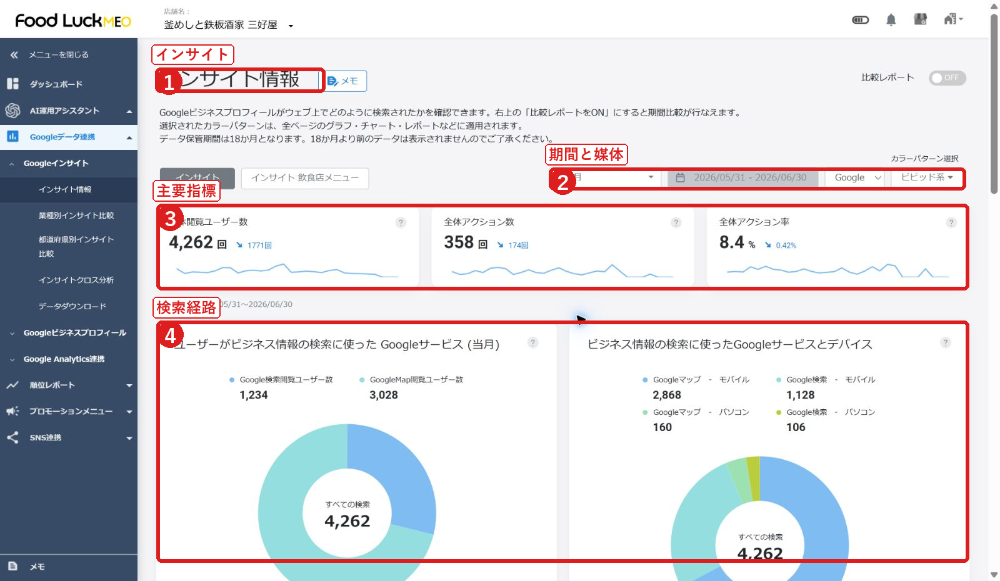

FoodLuck MEO 飲食店向け操作説明書
FAQ全記事詳細反映版 / 各カテゴリ下層記事の本文を操作・注意点まで統合
| この版で直したこと FAQ全548記事の本文を、カテゴリ直下だけでなく下層記事ごとに確認し、各記事の概要・操作ポイント・注意点として本文化しました。単なるタイトル一覧ではなく、操作時に読める説明書として再構成しています。 |
|---|
1. この説明書の読み方
前半は店舗の日常運用、後半は初期設定・連携・高度機能です。各カテゴリには、カテゴリ全体の説明に加えて、下層FAQ記事ごとの操作ポイントを入れています。
| カテゴリ | 記事数 | 主な読者 | 使う場面 |
|---|---|---|---|
| 基本操作 | 1 | 店舗スタッフ・店長 | 日常運用、投稿、写真、口コミ、店舗情報 |
| 初期設定 | 38 | FoodLuck・管理者 | 連携、権限、外部媒体、タグ設置、Google側作業 |
| その他・スマホ版 | 29 | 店舗スタッフ・店長 | 日常運用、投稿、写真、口コミ、店舗情報 |
| 店舗基本情報 | 34 | 店舗スタッフ・店長 | 日常運用、投稿、写真、口コミ、店舗情報 |
| 写真管理 | 14 | 店舗スタッフ・店長 | 日常運用、投稿、写真、口コミ、店舗情報 |
| 投稿 | 33 | 店舗スタッフ・店長 | 日常運用、投稿、写真、口コミ、店舗情報 |
| クチコミ返信 | 26 | 店舗スタッフ・店長 | 日常運用、投稿、写真、口コミ、店舗情報 |
| クチコミ分析 | 18 | 店長・運用担当 | 月次確認、改善判断、学習 |
| インサイト | 31 | 店長・運用担当 | 月次確認、改善判断、学習 |
| 順位 | 23 | 店長・運用担当 | 月次確認、改善判断、学習 |
| クチコミ促進 | 37 | 店舗スタッフ・店長 | 日常運用、投稿、写真、口コミ、店舗情報 |
| クーポン管理 | 6 | 店舗スタッフ・店長 | 日常運用、投稿、写真、口コミ、店舗情報 |
| WEBサイト最適化 | 19 | FoodLuck・管理者 | 連携、権限、外部媒体、タグ設置、Google側作業 |
| 店舗ページ限定機能 | 19 | 店舗スタッフ・店長 | 日常運用、投稿、写真、口コミ、店舗情報 |
| グループ管理 | 9 | FoodLuck・管理者 | 連携、権限、外部媒体、タグ設置、Google側作業 |
| データダウンロード | 8 | 店長・運用担当 | 月次確認、改善判断、学習 |
| SNS連携 | 48 | FoodLuck・管理者 | 連携、権限、外部媒体、タグ設置、Google側作業 |
| 各媒体連携 | 32 | FoodLuck・管理者 | 連携、権限、外部媒体、タグ設置、Google側作業 |
| Googleについて | 61 | FoodLuck・管理者 | 連携、権限、外部媒体、タグ設置、Google側作業 |
| 運用マニュアル | 48 | 店長・運用担当 | 月次確認、改善判断、学習 |
| ウェビナー | 14 | 店長・運用担当 | 月次確認、改善判断、学習 |
2. 主要画面の押さえどころ
店舗一覧

- 店舗名で検索します。
- 対象店舗を開きます。
- 一覧出力は必要時に使います。
店舗基本情報

- 基本情報を確認します。
- 営業時間を設定します。
- 登録前に外部表示を確認します。
写真管理

- 写真を追加します。
- カテゴリを選びます。
- オーナー提供とユーザー提供を分けて確認します。
投稿

- 投稿状態を確認します。
- 新規投稿へ進みます。
- エラーや予約状態を見ます。
新規投稿

- 投稿種類を選びます。
- 媒体を選びます。
- 本文・画像・日時を設定します。
クチコミ管理

- 未返信を確認します。
- 返信します。
- 設定や取得状態を見ます。
インサイト

- 期間を選びます。
- 主要指標を見ます。
- 検索経路と行動を確認します。
順位チャート

- キーワードを見ます。
- 検索地点を確認します。
- 順位推移を見ます。
基本操作
ログイン後の画面、店舗一覧、TOPメニュー、店舗別ページの基本的な見方を確認する章です。
| このカテゴリの記事数 | 店舗運用 | FoodLuck・必要時確認 |
|---|---|---|
| 1 | 0 | 1 |
多店舗管理向け_基本操作一覧
概要: MEO Dashboardのグループからの基本操作は該当記事をご確認ください！
操作・確認ポイント
- MEO Dashboardのグループからの基本操作は該当記事をご確認ください！
- ▼初期設定
- ・GoogleビジネスプロフィールとMEO Dashboardの連携方法
- ・ユーザーアカウント作成について
注意点
- ・営業時間の記載方法（Excel）
- ・グループでの写真の削除方法
- ・クチコミ自動返信の反映タイミング
扱い: 通常運用では毎回見る必要はありません。該当する状況が起きた時に確認します。
初期設定
GBP連携、ユーザー、グループ、キーワード、順位計測など、運用開始前に必要な土台を整える章です。
| このカテゴリの記事数 | 店舗運用 | FoodLuck・必要時確認 |
|---|---|---|
| 38 | 38 | 0 |
GAとGA4の違い
概要: GAとGA4（Google Analytics 4）の最大の違いは、データの計測方法（モデル）が根本的に変更された点にあります。
操作・確認ポイント
- GAとGA4（Google Analytics 4）の最大の違いは、データの計測方法（モデル）が根本的に変更された点にあります。
注意点
- GAとGA4（Google Analytics 4）の最大の違いは、データの計測方法（モデル）が根本的に変更された点にあります。
扱い: 店舗側の日常運用で確認する項目です。保存・投稿・削除など外部に反映される操作は、内容を確認してから実行します。
GBPステータスについて
概要: 店舗一覧ページや、店舗基本情報のページにGBPステータスという項目がございます。該当記事は、GBPステータスが確認済みとなっていない場合、ダッシュボードとGBPの連携がアクティブで正常に行われていても、インサイト情報などが取...
操作・確認ポイント
- 店舗一覧ページや、店舗基本情報のページにGBPステータスという項目がございます。該当記事は、GBPステータスが確認済みとなっていない場合、ダッシュボードとGBPの連携がアクティブで正常に行われていても、インサイト情報などが取...
- 確認済み
- ・オーナー確認がまだ認められていない可能性
- 登録はしたけれど、本当にオーナーかどうかの最終チェック（ハガキや電話認証など）が終わっていません。参考資料：Googleビジネスプロフィールのステータスの種類・Googleに止められている可能性
注意点
- 店舗一覧ページや、店舗基本情報のページにGBPステータスという項目がございます。該当記事は、GBPステータスが確認済みとなっていない場合、ダッシュボードとGBPの連携がアクティブで正常に行われていても、インサイト情報などが取...
- ・ガイドラインを確認し、修正して「回復リクエスト」を送る必要があります。
扱い: 店舗側の日常運用で確認する項目です。保存・投稿・削除など外部に反映される操作は、内容を確認してから実行します。
GBP情報をMEO Dashboardに反映
概要: Googleの店舗情報を取得して、Yahoo!プレイスにも自動反映する場合は、チェックをいれてください。
操作・確認ポイント
- 【設定方法】
- 1.右上ビルマーク→設定→店舗を選択
- 2.該当店舗を選択します。
- 3.『Googleビジネスプロフィール連携』欄に、「GBPの店舗情報を正として当ツールに自動反映」チェックボックスが追加されます。
注意点
- 3.『Googleビジネスプロフィール連携』欄に、「GBPの店舗情報を正として当ツールに自動反映」チェックボックスが追加されます。
- 差分反映 or 全部反映のどちらか選択可能。デフォルトは差分反映が選択。
- Googleの店舗情報を取得して、Yahoo!プレイスにも自動反映する場合は、チェックをいれてください。
扱い: 店舗側の日常運用で確認する項目です。保存・投稿・削除など外部に反映される操作は、内容を確認してから実行します。
GBP連携のステータスについて
概要: 参照記事：GBPステータスについて
操作・確認ポイント
- 店舗管理画面では、GBPとDashboardの連携状況を確認でき、3種類のステータスがございます。
- DashboardとGBPが連携できている状態です。
- DashboardとGBPが連携出来ていない状態です。対処法: GoogleビジネスプロフィールとMEO Dashboardの連携方法GoogleビジネスプロフィールとDashboardの再連携方法
- システムがGoogleにアクセスしようとしても反応がない場合に、このステータスになります。 例えば、GBPを管理していたGoogleアカウント自体が削除されていたり、利用停止になっていたりすると、連携が切れて「非アクティブ」...
注意点
- システムがGoogleにアクセスしようとしても反応がない場合に、このステータスになります。 例えば、GBPを管理していたGoogleアカウント自体が削除されていたり、利用停止になっていたりすると、連携が切れて「非アクティブ」...
扱い: FoodLuckまたは管理者が確認する項目です。店舗側で操作する場合は、事前に担当者へ確認します。
Googleアカウントが削除・停止した場合に起こる事象の紹介
概要: ■MEO Dashboard上でのステータス
操作・確認ポイント
- GBP連携で使用しているGoogleアカウントが削除、停止などの理由により使用できない場合、Dashboardでは以下の事象が見られます。
- ※連携が外れてしまった場合は再度連携が必要になります。
- ・GBP連携が「非アクティブ」「無」と表示がされます。
- 上記の場合でもデータのダウンロードは可能です。
注意点
- GBP連携で使用しているGoogleアカウントが削除、停止などの理由により使用できない場合、Dashboardでは以下の事象が見られます。
- ※連携が外れてしまった場合は再度連携が必要になります。
- ※ビジネスプロフィールと接続が出来ないため、インサイトの数値の取得が出来ない状態です。
扱い: 店舗側の日常運用で確認する項目です。保存・投稿・削除など外部に反映される操作は、内容を確認してから実行します。
Googleアナリティクス（GA4） キャンペーンURL生成
概要: ダッシュボードで、キャンペーンの効果測定に利用するためのURLを作成できます。
操作・確認ポイント
- ダッシュボードで、キャンペーンの効果測定に利用するためのURLを作成できます。
- 1.フォームの必須フィールドにご入力いただくと、キャンペーンURLが生成されます。
- キャンペーンソース：参照元となる媒体名を入力（媒体名：GBP、Google、Yahoo、Facebook、X等）
- キャンペーンメディア：参照元のメディアが何かを入力
扱い: 店舗側の日常運用で確認する項目です。保存・投稿・削除など外部に反映される操作は、内容を確認してから実行します。
Googleアナリティクス（GA4）との連携方法
概要: MEO Dashboardの画面に戻りますので、連携したい「アナリティクスアカウント名」を選択します。
操作・確認ポイント
- Googleアナリティクス（GA4）との連携方法は下記の流れになります。
- MEO Dashboardにログインします。
- 画面右上の【🏨】→【設定】→【店舗】メニューをクリックして店舗一覧を表示させます。店舗一覧が表示されたら、連携させたい店舗名を選択します。
- 店舗詳細ページを下にスクロールしていただくと、ページ中央に「GoogleAnalytics連携」の項目を見つけることができますので、その右横の「Sign in with Google（GA4）」のボタンをクリックします。
注意点
- 連携したい店舗が紐ついているアカウントを選択し、画面が「MEO Dash byGMOがGoogleアカウントへの追加アクセスを求めています」に切り変わったら「許可」又は「continue」で進んでください。※【このアプリはG...
扱い: FoodLuckまたは管理者が確認する項目です。店舗側で操作する場合は、事前に担当者へ確認します。
Googleアナリティクス（GA4）とは
概要: Google アナリティクス（GA）とは、Googleが提供する無料のウェブサイトやアプリのアクセス解析ツールです。
操作・確認ポイント
- ウェブサイトやアプリにトラッキングコードを設置することで、訪問者の行動や属性を計測し、分析レポートを作成します。
- 集客（流入元）：どこから来ているか？ (Google検索、SNS、広告、直接入力など)
- キャンペーン・行動パフォーマンスをダッシュボード上で確認できる他、
- UTMパラメーターを使用せずにパラメーターを作成することができます。
扱い: 店舗側の日常運用で確認する項目です。保存・投稿・削除など外部に反映される操作は、内容を確認してから実行します。
GoogleビジネスプロフィールとDashboardの再連携方法
概要: ３．画面中央部【Googleビジネスプロフィール連携】の【Sign in with Google】を選択します。
操作・確認ポイント
- 連携していたビジネスプロフィールの【GBP連携】のステータスが「非アクティブ」「無」になってしまった場合、再度連携を確認します。
- １．右上のビルマークより【設定】＞【店舗】を選択し、【GBP連携】ステータスを確認します。
- ２．連携が「非アクティブ」「無」の店舗の【詳細】または【店舗名】をクリックします。
- ３．画面中央部【Googleビジネスプロフィール連携】の【Sign in with Google】を選択します。
注意点
- ※再連携の際には【解除】は押さず、【Sign in with Google】を選択します。
- ４．【 アカウントの選択 】 の画面に遷移後、オーナー権限のあるアカウントを選択します。
- ※念のため、【設定】＞【店舗】より【GBP連携】が「有」になっているかご確認ください。
扱い: FoodLuckまたは管理者が確認する項目です。店舗側で操作する場合は、事前に担当者へ確認します。
GoogleビジネスプロフィールとMEO Dashboardの連携方法
概要: Googleビジネスプロフィール（旧称: Google マイビジネス）とMEO Dashboardの連携方法は下記の流れになります。
操作・確認ポイント
- Googleビジネスプロフィール（旧称: Google マイビジネス）とMEO Dashboardの連携方法は下記の流れになります。
- 1：MEO Dashboardにログインします。
- マスターアカウント作成手順
- 2：右上の【🏨マーク】をクリックします。
注意点
- ※パスワードがご不明な場合は下記ページをご参照ください。
- 連携したいGoogleビジネスプロフィールのオーナー権限を取得しているアカウントを選択します。
扱い: FoodLuckまたは管理者が確認する項目です。店舗側で操作する場合は、事前に担当者へ確認します。
Googleビジネスプロフィールにてグループを作成する方法
概要: Googleビジネスプロフィールでは、管理者権限のあるビジネスプロフィールをまとめてグループを作成することが可能です。
操作・確認ポイント
- Googleビジネスプロフィールでは、管理者権限のあるビジネスプロフィールをまとめてグループを作成することが可能です。
- 本記事では、グループの作成方法をご案内いたします。
- ▼グループの作成方法
- １．Googleビジネスプロフィールの管理画面を開きます
注意点
- Googleビジネスプロフィールでは、管理者権限のあるビジネスプロフィールをまとめてグループを作成することが可能です。
扱い: FoodLuckまたは管理者が確認する項目です。店舗側で操作する場合は、事前に担当者へ確認します。
Googleビジネスプロフィールのオーナー権限移譲の方法
概要: Googleビジネスプロフィールのオーナー権限・管理者権限を、別のアカウントへ付与する方法をご案内いたします。
操作・確認ポイント
- １．オーナー権限を所有しているアカウントにてGoogleへログインの上、ビジネスプロフィールマネージャーへアクセス。
- ２．他のアカウントへオーナー権限・管理者権限を付与したい店舗の「プロフィールを表示」をクリック。
- ３．以下のような画面が表示されるので、右上にある「︙」をクリック。
- ４．「ビジネスプロフィールの設定」をクリック。
注意点
- Googleビジネスプロフィールのオーナー権限・管理者権限を、別のアカウントへ付与する方法をご案内いたします。
- １．オーナー権限を所有しているアカウントにてGoogleへログインの上、ビジネスプロフィールマネージャーへアクセス。
- ２．他のアカウントへオーナー権限・管理者権限を付与したい店舗の「プロフィールを表示」をクリック。
扱い: FoodLuckまたは管理者が確認する項目です。店舗側で操作する場合は、事前に担当者へ確認します。
Googleビジネスプロフィールの店舗情報一覧のダウンロード方法
概要: ▼GBPの店舗一覧のExcelのご共有方法
操作・確認ポイント
- １．【グループへの登録なし】をクリックし、対象のグループを選択します。
- ２．対象の店舗を全て選択し、【操作】＞【お店やサービス】を選択します。
- ３．ビジネスのダウンロードの画面が表示されるので、「Excel形式」でダウンロードをします。
- ４．ダウンロードしたExcelに問題がないようでしたら、完了です。
扱い: 店舗側の日常運用で確認する項目です。保存・投稿・削除など外部に反映される操作は、内容を確認してから実行します。
Yextについて
概要: Yext（イエクスト）とは
操作・確認ポイント
- Yextの接続可能な各Map系メディアに店舗情報を正しく反映し、自動連携、掲載します。
- Yextの追加属性
注意点
- Yextの接続可能な各Map系メディアに店舗情報を正しく反映し、自動連携、掲載します。
- ※オプションとなっておりますので、ご希望の方は担当までご連絡ください。
扱い: FoodLuckまたは管理者が確認する項目です。店舗側で操作する場合は、事前に担当者へ確認します。
Yext連携の初期ご対応について
概要: Yextを通じて各パブリッシャーの情報を統一する場合、初期で下記のご対応が必要になります。
操作・確認ポイント
- １．個別店舗画面より、【Googleデータ連携】＞【Googleビジネスプロフィール】＞【店舗基本情報】を選択します。
- ３．画面下の【登録する】を押します。
- 今後基本情報で編集があった場合もYEXT連携がONになっていれば、自動的に情報が更新されます。
- 同期状況は左側メニュー【Yext】＞【すべてのリスティング】より各パブリッシャーとの連携状況がご確認いただけます。
注意点
- Yextを通じて各パブリッシャーの情報を統一する場合、初期で下記のご対応が必要になります。
- ※ご注意点※
扱い: FoodLuckまたは管理者が確認する項目です。店舗側で操作する場合は、事前に担当者へ確認します。
【個店】Yextで写真連携を行う方法
概要: 【Yext上での反映箇所】
操作・確認ポイント
- まず個店画面で、Yextを連携するための初期設定を行います。1.Googleデータ連携からGoogleビジネスプロフィール、そして店舗基本情報へと進みます。2.画面上部にございますYextのチェックボックスにチェックを入れます。
- 【写真連携方法】
- 1. Googleデータ連携からGoogleビジネスプロフィール、そして写真管理画面へと進みます。上記のYext連携をするためのチェックを入れてますと写真管理画面の上部にYext写真連携というボタンが出てきます。
- 2.Yext写真連携を押下しますと、Google画像ライブラリが表示されます。その中の任意の写真を最大50枚まで選択し、Yextへ送信が可能です。
注意点
- 2.Yext写真連携を押下しますと、Google画像ライブラリが表示されます。その中の任意の写真を最大50枚まで選択し、Yextへ送信が可能です。
- ※Yext連携を解除する場合は、任意の写真からチェックを外し、画面下部の登録するボタンを押下ください。
- ※連携中の写真はYextのマークが表示されます。
扱い: FoodLuckまたは管理者が確認する項目です。店舗側で操作する場合は、事前に担当者へ確認します。
アカウントの設定を変更する方法
概要: アカウントのメールアドレス・フォルダ・ワークフロー・キーワード登録変更は、マスターアカウントもしくはユーザーアカウント発行者にて変更が可能です。
操作・確認ポイント
- アカウントのメールアドレス・フォルダ・ワークフロー・キーワード登録変更は、マスターアカウントもしくはユーザーアカウント発行者にて変更が可能です。
- 一度設定した「役割」は後から変更することができない仕様となっております。
- そのため、役割を変更される場合は、大変お手数ですが一度該当のアカウントを削除いただき、新しい役割にて再度アカウントをご作成いただけますよう確認します。
- ※ユーザーアカウントの削除方法は該当記事
注意点
- そのため、役割を変更される場合は、大変お手数ですが一度該当のアカウントを削除いただき、新しい役割にて再度アカウントをご作成いただけますよう確認します。
- ※ユーザーアカウントの削除方法は該当記事
扱い: 店舗側の日常運用で確認する項目です。保存・投稿・削除など外部に反映される操作は、内容を確認してから実行します。
アカウント発行メールが届かない場合
概要: （送信元はnoreply@meo-dash.comのアドレスとなります。）
操作・確認ポイント
- 迷惑メールフォルダなどに届いていないかをご確認いただけますでしょうか。
- 迷惑メールフォルダなどにも届いていない場合は、以下の手順でパスワードのご登録を確認します。
- １. Dashboardにログイン
- ２. 「パスワードを未登録の方は該当記事」をクリックします。
注意点
- ※72時間以内にご対応を確認します。
扱い: 店舗側の日常運用で確認する項目です。保存・投稿・削除など外部に反映される操作は、内容を確認してから実行します。
キーワードの一括変更方法
概要: 4.右上の一括インポートのタブより、キーワードンポートを選択し、Excelを選択しインポートを行うことで変更完了となります。
操作・確認ポイント
- 一括でキーワード登録を行う場合は、EXCELファイルをダウンロードいただき、インポートすることで更新可能です。
- 1.右上のビルマークから設定、店舗の順で選択いただき店舗一覧の画面へ移動します。
- 2.右上にあるダウンロードを押下し、キーワードID一覧をダウンロードします。
- 3.ダウンロードできたエクセルデータのP列を「変更」と入力、N列のキーワードを変更し、保存します。
注意点
- 【⚠️注意事項】
- ※P列が必須項目となってるため、修正対象ではないキーワードの行は削除した上でインポートを確認します。
扱い: 店舗側の日常運用で確認する項目です。保存・投稿・削除など外部に反映される操作は、内容を確認してから実行します。
キーワードの変更方法
概要: 1. 管理画面トップページより画面右上のアイコンをクリック
操作・確認ポイント
- 1. 管理画面トップページより画面右上のアイコンをクリック
- 2.【設定】→【店舗】の順番でクリック
- 3.設定したい店舗名で検索→店舗名を選択
- 4.【店舗情報】が表示されるのでページ下部にある【エリアごとのキーワード設定(Google)】までスクロール
注意点
- ✕：完全削除状態のため、データダウンロード等もできなくなります。
扱い: 店舗側の日常運用で確認する項目です。保存・投稿・削除など外部に反映される操作は、内容を確認してから実行します。
キーワードの設定方法
概要: 1：管理画面トップページより画面右上のアイコンをクリック
操作・確認ポイント
- 1：管理画面トップページより画面右上のアイコンをクリック
- 2：【設定】→【店舗】の順番でクリック
- 3：設定したい店舗名で検索→店舗名を選択
- 4：【店舗情報】が表示されるのでページ下部にある【エリアごとのキーワード設定(Google)】までスクロール
注意点
- ※店舗のある市区町村エリアでの計測を推奨しております
- ※「+検索エリア追加」：別の計測地点を追加したい場合は該当記事から追加します（手順6-1へ戻る）
扱い: 店舗側の日常運用で確認する項目です。保存・投稿・削除など外部に反映される操作は、内容を確認してから実行します。
キーワード登録が可能なユーザーアカウント発行方法
概要: マスターアカウントもしくはユーザーアカウント（全権）キーワード登録可能なアカウントでのみ設定可能です。
操作・確認ポイント
- 順位計測機能においてキーワード設定が可能なアカウントの作成方法をご紹介します。
- マスターアカウントもしくはユーザーアカウント（全権）キーワード登録可能なアカウントでのみ設定可能です。
- １．右上のビルのアイコン＞設定＞ユーザー設定一覧を選択
- ２．ユーザー追加＞1名追加を選択
注意点
- ※役割は必ず全権で設定を確認します。
- ※指定内容については、下記をご確認のうえご選択ください。
- ・すべて：連携をしている全GBPの管理権限を付与する
扱い: FoodLuckまたは管理者が確認する項目です。店舗側で操作する場合は、事前に担当者へ確認します。
キーワード設定の検索エリアについて
概要: Google検索では「キーワード＋エリア名（例：居酒屋 渋谷）」で検索をした場合に、IPアドレスやGPSが考慮されます。ユーザーが検索をおこなう地点も考慮されており、Googleが独自に分けたエリア内で検索されたものとして検...
操作・確認ポイント
- 検索エリアとは、「エリアごとのキーワード設定」にてご指定していただく検索地域や場所を指します。
- 検索エリアの設定には、以下の2パターンがございます。
- １）Googleに予め登録されている市区町村などエリアでの設定（推奨）
- ２）自由に検索地点を選択できるため、固有地点での緯度経度による設定
注意点
- ※検索地点が200m離れるだけでも、検索順位に変化があると言われています。
- ※左：渋谷区にて「GMO 渋谷」と検索した場合
- ※右：大阪府にて「GMO 渋谷」と検索した場合
扱い: 店舗側の日常運用で確認する項目です。保存・投稿・削除など外部に反映される操作は、内容を確認してから実行します。
グループフォルダ・グループ管理について
概要: グループを階層化しての管理が可能でございます。
操作・確認ポイント
- グループ作成と権限範囲の設定により、対象範囲を限定して管理権限を付与することが可能です。
- ※下記、イメージ図になります。階層は5階層まで作成が可能です。
注意点
- ※この機能をご利用いただけるのは、マスターアカウント及びユーザーアカウント（全権）のみとなります。
- グループ作成と権限範囲の設定により、対象範囲を限定して管理権限を付与することが可能です。
- ※下記、イメージ図になります。階層は5階層まで作成が可能です。
扱い: FoodLuckまたは管理者が確認する項目です。店舗側で操作する場合は、事前に担当者へ確認します。
グループ作成の一括登録方法
概要: 最初のコメント投稿者になりましょう。
操作・確認ポイント
- １．MEO Dashboardにログインし、右上のビルのアイコンをクリックします。
- ２．【設定】をクリックします。
- ３．【グループ一覧】をクリックします。
- ４．右上の【ダウンロード】＞一括登録テンプレ–トを選択しExcelをダウンロードします。
注意点
- ※第一階層で作成する場合は、B列は未記入で登録可能です。
扱い: FoodLuckまたは管理者が確認する項目です。店舗側で操作する場合は、事前に担当者へ確認します。
グループ管理画面での編集機能について
概要: グループ管理画面で利用する編集機能の説明
操作・確認ポイント
- フォルダの【⚙マーク】をクリックすると、6つのメニューが表示されます。
- 【編集、子フォルダ、表示順序、登録店舗、削除、店舗基本情報】
- グループ名や概要の修正を行い【登録する】をクリックします。
- 子グループ追加：グループフォルダの下の階層にグループフォルダ作成が可能
注意点
- ※この機能をご利用いただけるのは、マスターアカウント及びユーザーアカウント（全権）のみとなります。
- 【編集、子フォルダ、表示順序、登録店舗、削除、店舗基本情報】
- 必要に応じて概要説明を入力して【登録する】をクリックします。
扱い: FoodLuckまたは管理者が確認する項目です。店舗側で操作する場合は、事前に担当者へ確認します。
パスワードをお忘れの場合やパスワードを未登録の方
概要: 最初のコメント投稿者になりましょう。
操作・確認ポイント
- パスワードを忘れた場合は再度ご登録をしてます。
- 1）ログイン画面にある「パスワードをお忘れの方は該当記事」をクリック
- 2）メールアドレス入力後に「送信する」ボタンをクリックます。
- ログイン用のメールアドレスにパスワード再登録のメールが届きますので、
扱い: 店舗側の日常運用で確認する項目です。保存・投稿・削除など外部に反映される操作は、内容を確認してから実行します。
パスワード設定時の注意事項
概要: ・英字・数字・記号をそれぞれ最低1文字ずつ使用
操作・確認ポイント
- パスワードを設定いただく際には、以下のすべてを満たしている必要がございます。
注意点
- パスワードを設定いただく際には、以下のすべてを満たしている必要がございます。
扱い: 店舗側の日常運用で確認する項目です。保存・投稿・削除など外部に反映される操作は、内容を確認してから実行します。
マスターアカウントの登録手順
概要: ご契約締結後、弊社からご担当者様のメールアドレスに対して1つのアカウントを紐付けさせてます。
操作・確認ポイント
- 1）ご担当者様宛にGMO TECHより登録メールアドレスに下記のようなメールが届きます。
- お受け取り後、3日（72時間）以内にURLをクリックいただき、パスワードの設定を確認します。
- 2）URLをクリックすると下記のようなページに移動します。
- パスワードを半角英数記号 12桁以上20桁以下でご入力いただき、【登録する】をクリックにて設定完了いたします。
注意点
- お受け取り後、3日（72時間）以内にURLをクリックいただき、パスワードの設定を確認します。
扱い: 店舗側の日常運用で確認する項目です。保存・投稿・削除など外部に反映される操作は、内容を確認してから実行します。
ユーザーアカウントの作成（ユーザー側のすること）について
概要: マスターアカウントならびに全権のユーザーアカウントをお持ちの方は
操作・確認ポイント
- 1つのメールアドレスに対して1つのアカウントを作成することが可能です。
- マスターアカウントがユーザーアカウントを追加するまでは該当記事
- 1）登録したいユーザーアカウントのメールアドレスに下記のようなメールが届きます。
- お受け取り後、3日（72時間）以内にURLをクリックいただき、パスワードの設定を確認します。
注意点
- ユーザーアカウントの権限については該当記事
- お受け取り後、3日（72時間）以内にURLをクリックいただき、パスワードの設定を確認します。
扱い: FoodLuckまたは管理者が確認する項目です。店舗側で操作する場合は、事前に担当者へ確認します。
ユーザーアカウントの削除方法
概要: 最初のコメント投稿者になりましょう。
操作・確認ポイント
- ユーザーアカウントを削除する方法についてです。
- 1.右上のビルマークを押下後、設定→ユーザー設定一覧を押下。
- 2.画面が切り替わります。その後、削除したいアカウントの左側のチェックボックスを入力。
- 3.画面左上の削除ボタンを押下し削除します。
注意点
- ユーザーアカウントを削除する方法についてです。
- 2.画面が切り替わります。その後、削除したいアカウントの左側のチェックボックスを入力。
- 3.画面左上の削除ボタンを押下し削除します。
扱い: FoodLuckまたは管理者が確認する項目です。店舗側で操作する場合は、事前に担当者へ確認します。
ユーザーアカウントの５つの役割について
概要: 例）ダッシュボード全体を管理する人が複数いる場合は、その方へ全権を付与します。
操作・確認ポイント
- ユーザーアカウントを作成時に役割の指定が可能です。
- ・グループフォルダの作成、編集、削除
- ・Dashboard上の開放されている機能の編集作業
- 例）ダッシュボードの設定管理はしないが、ワークフローの承認をする方へ付与します。
注意点
- ・グループフォルダの作成、編集、削除
- 投稿機能やクチコミ返信など、MEOツールの機能ごとに５つの役割いづれかを設定出来るようになります【可能な作業】・機能ごとに役割の設定が行うことが可能【注意事項】・役割「カスタム」で登録されたアカウントは新たなユーザーアカウン...
扱い: FoodLuckまたは管理者が確認する項目です。店舗側で操作する場合は、事前に担当者へ確認します。
ユーザーアカウント作成 機能ごとの役割の設定方法
概要: 会社ユーザーアカウント発行時に役割「カスタム」を選択します。役割「カスタム」を選択することで、機能ごとに権限の設定が行うことが可能となります。
操作・確認ポイント
- 会社ユーザーアカウント発行時に役割「カスタム」を選択します。役割「カスタム」を選択することで、機能ごとに権限の設定が行うことが可能となります。
- 役割のプルダウンから「カスタム」を選択すると「カスタム」ボタンが表示されます（オレンジ枠）該当記事の「カスタム」ボタンを押下して機能ごとの権限を設定します。
- カスタム設定の対象機能になります。
- ※Yext連携機能、LINE連携機能、Google Analytics連携機能、クーポン管理は設定対象外となります。プルダウンで各機能ごとに役割の設定が可能。設定ができましたら、「登録する」を押下ください。
注意点
- 会社ユーザーアカウント発行時に役割「カスタム」を選択します。役割「カスタム」を選択することで、機能ごとに権限の設定が行うことが可能となります。
- 役割のプルダウンから「カスタム」を選択すると「カスタム」ボタンが表示されます（オレンジ枠）該当記事の「カスタム」ボタンを押下して機能ごとの権限を設定します。
- ※Yext連携機能、LINE連携機能、Google Analytics連携機能、クーポン管理は設定対象外となります。プルダウンで各機能ごとに役割の設定が可能。設定ができましたら、「登録する」を押下ください。
扱い: FoodLuckまたは管理者が確認する項目です。店舗側で操作する場合は、事前に担当者へ確認します。
ユーザーアカウント作成について
概要: マスターアカウントならびに全権のユーザーアカウントをお持ちの方は
操作・確認ポイント
- 1つのメールアドレスに対して1つのアカウントを作成することが可能です。
- ユーザーアカウントの作成（ユーザー側のすること）については該当記事
- 1）管理画面の右上、🏢ボタンから【設定】⇨【ユーザー設定一覧】をクリック
- 2）【ユーザー追加】⇨【1名追加】をクリック
注意点
- ユーザーアカウントの５つの権限については該当記事
- 削除：ユーザーアカウントの削除が可能
- ※指定しない場合、全グループフォルダに指定されます
扱い: FoodLuckまたは管理者が確認する項目です。店舗側で操作する場合は、事前に担当者へ確認します。
ユーザー一括追加方法
概要: ・A列（名前）：名字・フルネーム・チーム名など管理しやすいお名前を入力します。
操作・確認ポイント
- 複数名のご担当者様を、一括でユーザー追加する方法をご紹介します。
- １．右上ビルのアイコン＞設定＞ユーザー一覧をクリック
- ２．ダウンロード＞インポートテンプレートをクリックし、Excelをダウンロードします。
- ３．下記の項目を入力します。
注意点
- ・E列（キーワード登録） : キーワード登録が可能か不可能かの設定です。
- ※それぞれの権限に関しては下記のページをご確認ください。
- ユーザーアカウントの4つの権限について
扱い: FoodLuckまたは管理者が確認する項目です。店舗側で操作する場合は、事前に担当者へ確認します。
ワークフロー申請必須のユーザーアカウント発行方法
概要: 投稿・クチコミ返信においてワークフロー申請を必須にするアカウントの作成方法をご紹介します。
操作・確認ポイント
- 投稿・クチコミ返信においてワークフロー申請を必須にするアカウントの作成方法をご紹介します。
- １．右上のビルのアイコン＞設定＞ユーザー設定一覧を選択
- ２．ユーザー追加＞1名追加を選択
- ３．【各必須項目】と【指定内容】を選択します。
注意点
- ※それぞれの権限に関しては下記のページをご確認ください。
- ユーザーアカウントの4つの権限について
- ※指定内容については、下記をご確認のうえご選択ください。
扱い: FoodLuckまたは管理者が確認する項目です。店舗側で操作する場合は、事前に担当者へ確認します。
一括でキーワードを設定する方法
概要: 更新する方法は2種類あります。
操作・確認ポイント
- ※1回で設定できるのは、300店舗までとなります。300店舗以上ある場合は、数回に分けてご登録を確認します。
- 一括でキーワード登録を行う場合は、EXCELファイルをダウンロードいただき、インポートすることで更新可能です。
- キーワードID一覧はGoogleの他にYahoo、SEO、他地点機能チェック、競合分析、などで設定するキーワードも設定が可能です。
- 右上のビルマークから設定、店舗の順で選択いただき店舗一覧の画面へ移動します。
注意点
- ※1回で設定できるのは、300店舗までとなります。300店舗以上ある場合は、数回に分けてご登録を確認します。
- ※検索エリアは緯度経度で指定して頂くか、地名を入力してます。検索エリアについてはコチラをご確認下さい。
- 5. B列とAC～AI列まで入力ができましたら、記入例の行を削除しファイルを保存します。 6. Dashbordの店舗一覧画面にございます一括インポートから店舗テンプレート（更新用）を押下しインポートします。
扱い: 店舗側の日常運用で確認する項目です。保存・投稿・削除など外部に反映される操作は、内容を確認してから実行します。
新規グループの登録方法
概要: ※親フォルダ、概要は省略しても問題ございません。
操作・確認ポイント
- １．MEO Dashboardにログインし、右上のビルのアイコンをクリックします。
- ２．【設定】をクリックします。
- ３．【グループ一覧】をクリックします。
- ４．右上の【グループ追加】を選択します。
注意点
- ※親フォルダ、概要は省略しても問題ございません。
- ※「GMOTECH_全店舗」「GMO_東日本」など、貴社内でわかりやすい名称をご設定ください。
- 親フォルダ：第1階層「GMO_東日本」＞第2階層「GMO_東京」のように階層設定が必要な場合に選択します。
扱い: FoodLuckまたは管理者が確認する項目です。店舗側で操作する場合は、事前に担当者へ確認します。
その他・スマホ版
スマホ版、店舗追加、店舗データ更新、アラート、メモ、IP制限など、補助的な管理項目を扱います。
| このカテゴリの記事数 | 店舗運用 | FoodLuck・必要時確認 |
|---|---|---|
| 29 | 10 | 19 |
Dashboardからのアラートメール送信先を変更したい場合
概要: Dashboardから届くアラートメールの宛先は、ご希望に合わせて個別に指定・変更することが可能です。
操作・確認ポイント
- Dashboardから届くアラートメールの宛先は、ご希望に合わせて個別に指定・変更することが可能です。
- アラートメールを受け取るアドレスを別途設定したい場合は、弊社側にて設定作業を承ります。
- 変更をご希望の際は、「新しく設定したいメールアドレス」を記載の上、サポート窓口までご連絡ください。何卒よろしく確認します。
扱い: 通常運用では毎回見る必要はありません。該当する状況が起きた時に確認します。
GBP連携が解除された、とエラーメッセージが届いた際の確認方法
概要: このメールはDashboardからの信号がGoogle側の処理の関係で受信されなかった際に、解除された恐れがあるとして、届く確認メールになります。
操作・確認ポイント
- 時々、下記の画像のように「GBP連携が解除されたおそれがあります。」という内容のメールが届く場合があります。
- このメールはDashboardからの信号がGoogle側の処理の関係で受信されなかった際に、解除された恐れがあるとして、届く確認メールになります。
- 一時的なエラーの場合が多く、お時間をおいていただければ自然と連携が戻る可能性が高いですが、下記の項目を確認のうえ、状況に応じて再連携をお願いします。
- 該当の店舗の編集をすぐにおこなう場合は再連携が必要です。
注意点
- このメールはDashboardからの信号がGoogle側の処理の関係で受信されなかった際に、解除された恐れがあるとして、届く確認メールになります。
- 一時的なエラーの場合が多く、お時間をおいていただければ自然と連携が戻る可能性が高いですが、下記の項目を確認のうえ、状況に応じて再連携をお願いします。
- 該当の店舗の編集をすぐにおこなう場合は再連携が必要です。
扱い: FoodLuckまたは管理者が確認する項目です。店舗側で操作する場合は、事前に担当者へ確認します。
IPアドレス制限機能
概要: 当機能は、ご契約の際にご要望いただいたお客様のみ、画面上で設定を行うことが可能です。
操作・確認ポイント
- 当機能は、ご契約の際にご要望いただいたお客様のみ、画面上で設定を行うことが可能です。
- アクセスしている場所のIPアドレスを判別し、指定された以外のIPアドレスからのログインを制限する機能です。
- 設定方法は、以下の2パターンから選択できます。
- 特定のアカウント（ユーザー）に対してIPアドレスを設定します。設定されたIPアドレスの環境からのみ、そのアカウントでのMEOツールへのアクセスが可能となります。
注意点
- 🔒 IPアドレス制限機能の概要
- アクセスしている場所のIPアドレスを判別し、指定された以外のIPアドレスからのログインを制限する機能です。
- ・アカウント単位での制限：
扱い: 通常運用では毎回見る必要はありません。該当する状況が起きた時に確認します。
MEO Dashboard 店舗データ更新方法
概要: ダッシュボードに表示される店舗名やその他の項目を変更したい場合の方法についてご紹介します。
操作・確認ポイント
- ダッシュボードに表示される店舗名やその他の項目を変更したい場合の方法についてご紹介します。
- 【店舗ごとの登録方法】
- 1.ダッシュボードにログイン後、右上ビルマーク→設定→店舗
- 2.該当店舗を選択
扱い: 通常運用では毎回見る必要はありません。該当する状況が起きた時に確認します。
MEO Dashboardを見る端末について
概要: MEO DashboardはスマートフォンやPC,タブレットよりアクセス可能です。
注意点
- また、MEO Dashboard推奨環境ですが、Google Chrome, FireFox最新版での閲覧を推奨いたします。※インターネットエクスプローラーは対応しておりません。
扱い: 通常運用では毎回見る必要はありません。該当する状況が起きた時に確認します。
TOPにあるメニュー画面の見方
概要: ①～④を番号分けしまして利用用途を簡単にご説明いたします。
操作・確認ポイント
- ログインしてますと左メニューに項目がございます。
- ①Googleデータ連携
- →Googleビジネスプロフィールの管理画面で確認や編集していた項目が該当記事からご確認できます。
- ・Google Analytics連携（有料オプション）
注意点
- →MEOで順位を上げていく中で必要なクチコミの促進ができます。
扱い: 店舗側の日常運用で確認する項目です。保存・投稿・削除など外部に反映される操作は、内容を確認してから実行します。
WF申請された投稿文章を編集して承認する方法
概要: ワークフロー（WF申請）機能において、申請された投稿の文章を、承認者側で修正・編集した上で承認（適用）することも可能です。
操作・確認ポイント
- 「WF申請一覧」から対象の申請を選び、承認画面を開きます。
- 画面右側にあるテキスト入力欄（画像赤枠の部分）の文章を、必要に応じて直接編集・修正します。
- 文章の修正が完了したら、ステータス欄の「承認」ボタンをクリックします。
- 最後に、画面下部の「登録する」ボタンをクリックすれば適用完了です。
注意点
- 画面右側にあるテキスト入力欄（画像赤枠の部分）の文章を、必要に応じて直接編集・修正します。
扱い: 店舗側の日常運用で確認する項目です。保存・投稿・削除など外部に反映される操作は、内容を確認してから実行します。
【グループ】ワークフロー申請の使用方法（申請者）
概要: 1.投稿画面にて投稿一括インポート→ワークフローを使用をクリックします。
操作・確認ポイント
- 一括でワークフロー申請を行う場合の設定方法は以下です。
- 投稿の作成までは、変更はございません。
- 1.投稿画面にて投稿一括インポート→ワークフローを使用をクリックします。
- 2.ダウンロードしたEXCELを投稿一括インポートのタブをクリックしインポートします。
扱い: FoodLuckまたは管理者が確認する項目です。店舗側で操作する場合は、事前に担当者へ確認します。
【グループ】送信用メールアドレスの一括追加・変更方法
概要: MEODashboardからのお知らせ（アラートメールなど）が配信される【送信用メールアドレス】の一括追加・変更方法は下記になります。
操作・確認ポイント
- MEODashboardからのお知らせ（アラートメールなど）が配信される【送信用メールアドレス】の一括追加・変更方法は下記になります。
- １．ビルアイコン＞【設定】＞【店舗】をクリック。
- ２．ダウンロードから【店舗テンプレート（更新用）】をクリックし、Excelをダウンロードします。
- ３．Excelを開き、B・P列を編集します。編集が完了したら保存します。
扱い: FoodLuckまたは管理者が確認する項目です。店舗側で操作する場合は、事前に担当者へ確認します。
【個店】ワークフロー申請の使用方法（申請者）
概要: 最初のコメント投稿者になりましょう。
操作・確認ポイント
- ワークフロー申請の設定方法は以下です。
- 投稿の作成までは、変更はございません。
- 1.投稿を作成後、一番下の「ワークフロー申請」をクリックします。
- 2.「承認者を選択」を押し、承認者を選択し、承認の種別を「全員の承認」「１名の承認」からお選びください。
注意点
- 4. 申請の設定が完了しましたら、画面下部の登録するを押下して、ワークフロー申請でのクチコミ返信は完了となります。※登録するを押下しましても即時送信はされず、承認者へメールが送られます。
扱い: FoodLuckまたは管理者が確認する項目です。店舗側で操作する場合は、事前に担当者へ確認します。
【個店】送信用メールアドレスの設定方法
概要: ・送信用メールアドレス ⋯ 通知を送信するメールアドレスはコチラに入力下さい。また10個まで設定することが可能です。表記方法 : 半角英数で入力し、”,”で区切ります。店舗画面下部の「登録する」ボタンを押下致しますと、登録が...
操作・確認ポイント
- メールで通知を送る際の、送信先メアド設定を行えます。
- 右上のビルマークをクリックしていただき、設定→店舗 と進みます。そういたしますと下記画面が表示されます。
- ・担当者メールアドレス ⋯ 契約時に追加した店舗はマスターアカウントのメールアドレスが入っております。また、送信用メールアドレスにメールアドレスを何も設定していただいていない場合は担当者メールアドレスに通知等が飛びます。
- ・送信用メールアドレス ⋯ 通知を送信するメールアドレスはコチラに入力下さい。また10個まで設定することが可能です。表記方法 : 半角英数で入力し、”,”で区切ります。店舗画面下部の「登録する」ボタンを押下致しますと、登録が...
扱い: 通常運用では毎回見る必要はありません。該当する状況が起きた時に確認します。
【個店・グループ】ワークフロー申請の承認方法
概要: 1.承認者に 以下のメールが届きます。・【要承認】[クチコミ返信] ワークフロー承認依頼が届いています（店舗マーケティング管理ツール）・【要承認】[投稿] ワークフロー承認依頼が届いています（店舗マーケティング管理ツール）
操作・確認ポイント
- 2. 承認画面のリンクをクリックします。
- 投稿内容に問題がある場合、コメントと【却下】ボタンを押します。
- 3.【承認】ボタンを押すと投稿され、【却下】ボタンを押すと、WF却下されます。
- 確認URLからご確認と内容を修正していただき、再度ワークフロー申請を確認します。
注意点
- ※却下した場合※
扱い: FoodLuckまたは管理者が確認する項目です。店舗側で操作する場合は、事前に担当者へ確認します。
【各店舗運用状況】店舗ごとの投稿数や写真枚数を確認する方法
概要: グループで管理する際に、各店舗の写真枚数や、最新情報などの投稿数を確認する方法です。ダッシュボードを開いていただき、左上の個店名もしくはグループ名が表記されている箇所（ロゴの右側にあります）をクリックしていただき、任意のグル...
操作・確認ポイント
- グループで管理する際に、各店舗の写真枚数や、最新情報などの投稿数を確認する方法です。ダッシュボードを開いていただき、左上の個店名もしくはグループ名が表記されている箇所（ロゴの右側にあります）をクリックしていただき、任意のグル...
- 該当記事を押下してますと、店舗別に、また直近三か月の数値をご確認いただけます。
- 該当記事は投稿・画像ともにご確認いただけます。
扱い: 店舗側の日常運用で確認する項目です。保存・投稿・削除など外部に反映される操作は、内容を確認してから実行します。
アカウント連携一覧機能の使い方
概要: １．MEODashboardの右上ビルのアイコン＞【設定】＞【店舗】を選択
操作・確認ポイント
- アカウント連携一覧機能はGoogle・Yahoo!・Instagram・X・Facebook・LINEの連携状況を一括で確認をすることができる機能です。
- １．MEODashboardの右上ビルのアイコン＞【設定】＞【店舗】を選択
- ２．右側【ダウンロード】から【アカウント連携一覧】を選択
- ３．ステータス画面に移動し、Excelをダウンロードします
注意点
- または連携媒体上でエラーが出ている可能性がございますので、ご状況をご確認ください。
- 実際のDashboardでは画像の赤枠部分に該当し、この【連携対象】にチェックが入っていないと、連携した媒体から投稿の吸い上げ・反映ができません。
- ※Instagram(FB)経由の場合、連携しているFacebookに紐づくInstagramアカウントが全て表示されます。【連携対象】の欄には最低１つ◯がついていればいずれかのアカウントと連携ができていますので、ご安心ください。
扱い: FoodLuckまたは管理者が確認する項目です。店舗側で操作する場合は、事前に担当者へ確認します。
エラーの原因について
概要: エラーの場合、以下の理由が考えられます。
操作・確認ポイント
- ・別のシートがEXCELに追加されている。
- ・重複した写真を追加している。
- ・開始時刻・終了時刻の間は半角スペースをご入力ください。・複数の時刻がある場合は「、」で区切ってください。・日をまたいで登録する場合は、２日にわけてご入力ください。・24時間営業の場合は、0:00から24:00とご入力ください。
- ・A列B列の内容が変更されている。
注意点
- エラーの場合、以下の理由が考えられます。
- ※規制対象の業界には、成人向けサービス、アルコール、タバコ、医薬品、危険ドラッグ、健康機器および医療機器、
- ※ユーザーが、ホテルのプレイスシートのどこに元の宿泊料金とホテル広告の料金が表示されているかわからなくなる事態を
扱い: 通常運用では毎回見る必要はありません。該当する状況が起きた時に確認します。
ジオロケーション（位置情報）の設定とMEO順位への影響
概要: MEO対策において、「ジオロケーション」とは「検索ユーザーが今どこにいるか」という緯度・経度の位置情報を指します。
操作・確認ポイント
- Googleマップの検索結果（ローカルパック）は、位置情報に対して極めて敏感です。検索する場所がわずか100メートル変わるだけで、表示される順位が変動することもあります。ジオロケーション設定の役割
- Dashboardにおけるジオロケーションの設定は、「ユーザーがどの地点から検索したと想定して順位を計測するか」を決めるためのものです。
- 「店舗にとってターゲットとなる重要なエリア」を計測地点として正しく設定することが不可欠です。
- 順位チェックを行う際は、自店舗の目の前だけでなく、「ターゲット顧客が実際に検索しそうな周辺エリア」をジオロケーションに設定して、多角的に順位を把握することを推奨いたします。
注意点
- 「店舗にとってターゲットとなる重要なエリア」を計測地点として正しく設定することが不可欠です。
扱い: 店舗側の日常運用で確認する項目です。保存・投稿・削除など外部に反映される操作は、内容を確認してから実行します。
スマホ版 クチコミ管理
概要: スマホでクチコミ管理をする方法をご紹介します。
操作・確認ポイント
- １.左上の≡マークをクリック＞ナビゲーションメニュからGoogleビジネスプロフィール→クチコミ管理を選択
- ２.下にスクロールするとクチコミが表示されます。右上赤枠をクリックしますと一覧に切り替えが可能です。
- 1.コメントをクリックし、枠内に返信内容を入力し、登録するで返信完了となります。
扱い: 店舗側の日常運用で確認する項目です。保存・投稿・削除など外部に反映される操作は、内容を確認してから実行します。
スマホ版 ダッシュボード
概要: 最初のコメント投稿者になりましょう。
操作・確認ポイント
- スマホでダッシュボード画面を確認する方法を、ご紹介します。
- 左上の≡マークをクリック＞ナビゲーションメニュからダッシュボードを選択
扱い: 店舗側の日常運用で確認する項目です。保存・投稿・削除など外部に反映される操作は、内容を確認してから実行します。
スマホ版 写真管理
概要: スマホで写真の管理をする方法をご紹介します。
操作・確認ポイント
- 左上の≡マークをクリック＞ナビゲーションメニュからGoogleビジネスプロフィール→写真管理を選択
- 【写真新規登録方法】
- ＋新規登録をクリック＞当てはまるカテゴリーを選択して「選択する」ボタンをクリック＞ファイルを選択
- ※写真の規定はGoogleビジネスプロフィールに表示する画像・動画の推奨サイズをご確認ください
注意点
- ※写真の規定はGoogleビジネスプロフィールに表示する画像・動画の推奨サイズをご確認ください
扱い: 店舗側の日常運用で確認する項目です。保存・投稿・削除など外部に反映される操作は、内容を確認してから実行します。
スマホ版 利用方法
概要: スマホ版のDashboardの利用方法をご紹介します。
操作・確認ポイント
- Dashboardにログイン＞右上のGBPマークをクリック＞自店舗のビジネス名をクリック＞操作したい項目を選択いただくと画面遷移します。
扱い: 店舗側の日常運用で確認する項目です。保存・投稿・削除など外部に反映される操作は、内容を確認してから実行します。
スマホ版 投稿方法
概要: スマホで投稿をする方法をご紹介します。
操作・確認ポイント
- １.左上の≡マークをクリック＞ナビゲーションメニュからGoogleビジネスプロフィール→投稿を選択＞＋新規投稿をクリック
- ２.各項目を埋めていき、登録するもしくは下書き保存で完了となります。
扱い: 店舗側の日常運用で確認する項目です。保存・投稿・削除など外部に反映される操作は、内容を確認してから実行します。
スマートフォン画面
概要: スマートフォンからのアクセス時に、個店画面で利用頻度の高い４機能を操作することが出来ます対象機能 １）個店 ダッシュボード
操作・確認ポイント
- ⚠PCでDashboardをフルサイズではなく、小さいウィンドウで開きますとスマートフォン画面が表示されることがございます。極力大きな画面、もしくはフルサイズでDashboardの表示をお願い致します。
- ログイン画面
- ログイン画面については、PCでのレイアウトのまま表示されます。
- ログインされると、メニューが表示される画面に遷移いたします。
扱い: 通常運用では毎回見る必要はありません。該当する状況が起きた時に確認します。
ダッシュボードに表示される情報や機能について
概要: MEO DashboardのTOPページでは下記の情報を確認することが可能です。
操作・確認ポイント
- MEO DashboardのTOPページでは下記の情報を確認することが可能です。
- 【ログイン】してますとダッシュボード内で下記、数字の概要を確認出来ます。
- また右上に【詳細】ボタンを押してますと、左のメニューバーに存在します【インサイト情報】の詳細へ飛ぶことが可能です。
- ご契約していただきましたキーワードの順位を確認することが可能です。
注意点
- ※旧Googleマイビジネスではダイレクトメッセージ機能があり、電話件数とダイレクトメッセージ数を合わせてインタラクションに表示していましたが、現在のGoogleビジネスプロフィールでは、ダイレクトメッセージ機能は廃止されて...
扱い: 店舗側の日常運用で確認する項目です。保存・投稿・削除など外部に反映される操作は、内容を確認してから実行します。
メモ機能について
概要: 複数管理者がいる場合、情報や前提条件の共有などに”メモ”が有用です。メモ一覧
操作・確認ポイント
- 左下のメモのボタンを押下します。
- コチラを押下すると作成済みのメモを見るメモ一覧画面が開きます。
- 項目の右側にございます「メモ」と書かれたボタンを押下すると下記添付の画像のように、メモを作成する画面が出てきますので該当記事で内容の記載と保存をお願い致します。
- そちらを押下いただいても、同じようにメモを作成できます。
扱い: 通常運用では毎回見る必要はありません。該当する状況が起きた時に確認します。
ログイン時の二段階認証（MFA機能）
概要: MFA機能が有効になると、これまでのID・パスワード入力に加え、6桁の「認証コード」による承認が必要になります 。
操作・確認ポイント
- 弊社にて設定を行っておりますので、ご利用いただく場合は、担当までご連絡ください。
- 🔐 MFA機能導入後のログイン手順
- MFA機能が有効になると、これまでのID・パスワード入力に加え、6桁の「認証コード」による承認が必要になります 。
- 【ステップ1】通常のログイン
注意点
- MFA機能が有効になると、これまでのID・パスワード入力に加え、6桁の「認証コード」による承認が必要になります 。
- ⚠️ ご注意
- メールが届いてから10分を過ぎてコードを入力すると、期限切れエラーとなります 。 もし10分を過ぎてしまった場合は、ログイン画面にある「コードの再送信」（青いテキストリンク）をクリックして、新しいコードを再発行します 。
扱い: 通常運用では毎回見る必要はありません。該当する状況が起きた時に確認します。
ワークフロー機能の概要
概要: クチコミ返信と投稿をワークフロー申請にて行うことができます。
操作・確認ポイント
- ① 投稿の作成
- 担当者が「投稿やクチコミ返信文」を作成します。
- 作成した投稿を「承認者」に送る設定ができます。承認者は内容を確認し、「承認」または「却下」を選択できます。
- 未承認：承認者の確認を待っている状態
注意点
- 却下：修正が必要な状態
- 承認済みの投稿やクチコミ返信のみ、Googleビジネスプロフィールに自動反映されます。
扱い: FoodLuckまたは管理者が確認する項目です。店舗側で操作する場合は、事前に担当者へ確認します。
店舗を削除する方法
概要: 閉店などに伴い、店舗の管理を終了させたい場合の、方法についてご案内します。
操作・確認ポイント
- 【店舗一覧から削除する】
- 右上ビルマーク→設定→店舗を選択
- ２.削除したい店舗に☑をいれ、削除を押下すると店舗一覧から削除されます。
- １.右上ビルマーク→設定→店舗を選択
注意点
- 【店舗一覧から削除する】
- ２.削除したい店舗に☑をいれ、削除を押下すると店舗一覧から削除されます。
扱い: 通常運用では毎回見る必要はありません。該当する状況が起きた時に確認します。
新規店舗追加の方法
概要: 店舗名：ダッシュボード上で表示させたい店舗名になります例）渋谷店 、〇〇不動産 △△支店
操作・確認ポイント
- ①ダッシュボード右上のアイコン【ビルマーク】から【設定】をクリック
- ②開いたメニューの中から【店舗】をクリック
- ③画面が切り替わりますので【+追加】をクリック
- ④「店舗基本情報」に必須項目含め【6箇所】入力します
注意点
- 住所は県庁所在地から全てご入力ください ※郵便番号もご記載ください例）東京都渋谷区桜丘町26-1 セルリアンタワー
- ※郵便番号もご記載ください
- ※閉店した店舗の影響で最大店舗数に達しており、新しい店舗を追加できない場合は、
扱い: FoodLuckまたは管理者が確認する項目です。店舗側で操作する場合は、事前に担当者へ確認します。
複数店舗を一括で追加する方法
概要: J．店舗担当メールアドレス：Dashboardからの通知を受け取れるアドレスを入力します。
操作・確認ポイント
- 新店舗追加などでDashboard上に複数の店舗追加が必要な場合は該当記事をご確認ください。
- １．ビルアイコン＞【設定】＞【店舗】をクリックします。
- ２．【ダウンロード】から「店舗テンプレート」を選択し、ダウンロードします。
- ３．Excelの「※」がついている項目は入力が必須です。（「※」がついていないものは、未入力でインポート可能です。）
注意点
- 新店舗追加などでDashboard上に複数の店舗追加が必要な場合は該当記事をご確認ください。
- ３．Excelの「※」がついている項目は入力が必須です。（「※」がついていないものは、未入力でインポート可能です。）
- C．契約媒体：「Google」と入力をします。（※例にあるYahooは順位計測を行う際に入力します。Yahooプレイス連携とは異なります。）
扱い: FoodLuckまたは管理者が確認する項目です。店舗側で操作する場合は、事前に担当者へ確認します。
店舗基本情報
Googleや各媒体に表示される店名、住所、電話番号、営業時間、カテゴリ、属性、サービスなどを整える章です。
| このカテゴリの記事数 | 店舗運用 | FoodLuck・必要時確認 |
|---|---|---|
| 34 | 7 | 27 |
AI翻訳機能_店舗基本情報 ビジネス文章
概要: AI翻訳機能は、外国人観光客をターゲットとした店舗集客を支援する機能です。
操作・確認ポイント
- １．個店の管理画面により、左メニュー【Googleデータ連携】＞【Googleビジネスプロフィール】＞【店舗基本情報】を選択し、画面の下部までスクロールします。
- ２．ビジネス説明文の欄の【AI翻訳機能】を選択します。
- ３．翻訳の設定をし、【登録する】をクリックします。
- A：GBPに登録されているビジネス文章が表示されています。B：Aの文章を翻訳する言語を選択します。設定をクリックすると翻訳がされます。C：Aの文章で翻訳すると、翻訳後の文章が長くなる場合があります。その場合は、Cの欄に短い文...
注意点
- ※複数の翻訳言語を選択した場合は、言語のタブを切り替えてご確認ください。
- ※注意点※
- ビジネス情報は750文字以内の文字数制限があります。
扱い: 通常運用では毎回見る必要はありません。該当する状況が起きた時に確認します。
AI翻訳機能_店舗基本情報 ビジネス文章（グループ）
概要: １．グループの管理画面により、左メニュー【Googleデータ連携】＞【Googleビジネスプロフィール】＞【店舗基本情報】を選択し、ビジネス情報の編集アイコン（鉛筆マーク）を押下すると以下の画面のようにビジネス文章の編集画面...
操作・確認ポイント
- １．グループの管理画面により、左メニュー【Googleデータ連携】＞【Googleビジネスプロフィール】＞【店舗基本情報】を選択し、ビジネス情報の編集アイコン（鉛筆マーク）を押下すると以下の画面のようにビジネス文章の編集画面...
- ２．翻訳する日本語（原文）が『この文章で翻訳処理』に入力されていますので内容をご確認
- いただき、翻訳言語を『AI翻訳設定』から選択します。
- ビジネス説明文の欄の【AI翻訳設定】にて言語を選択し、設定を押下します。
注意点
- ※翻訳言語含めての文字数制限全角375文字となりますので、文章作成の際にご注意ください。
- この文章で翻訳処理』に登録する文章（主に翻訳の原文となる日本語）を入力します。ビジネス文章には文字数制限がありますので、翻訳される文章が文字数制限に収まるようご調整ください。
扱い: FoodLuckまたは管理者が確認する項目です。店舗側で操作する場合は、事前に担当者へ確認します。
GBPとDashboard間の変更の同期について
概要: ※MEO Dashboardと紐づけしているGoogleビジネスプロフィールについて
操作・確認ポイント
- 【Dashboard→GBP】へは変更が同期されますが逆の【GBP→Dashboard】という機能はGoogleにございません。
- そのためGoogleビジネスプロフィール上で情報が書き換えられても、ダッシュボード内の情報は変更されませんのでご注意下さい。
- もし情報の変更をする場合は、ダッシュボード上から編集をお願い致します。
注意点
- ※MEO Dashboardと紐づけしているGoogleビジネスプロフィールについて
- そのためGoogleビジネスプロフィール上で情報が書き換えられても、ダッシュボード内の情報は変更されませんのでご注意下さい。
扱い: 通常運用では毎回見る必要はありません。該当する状況が起きた時に確認します。
Googleビジネスプロフィールに予約リンクの入力欄がない
概要: ▼対象となる主な業種 飲食店 レストラン、カフェ、居酒屋など美容・ヘルスケア 美容室、ネイルサロン、整体院、クリニックなどフィットネス ジム、ヨガスタジオ、パーソナルトレーニングなど
操作・確認ポイント
- 予約リンクの入力欄の有無は、ビジネスカテゴリによって利用可否が分かれております。
- 例）ホテル：ホテルの評価やアメニティ情報の一覧が表示されます。飲食店：プロフィールにURLを追加して、オンライン注文や予約の受付、メニューの表示をすることができます。特定のサービスを提供しているビジネス：プロフィールに予約ボ...
- 詳細な点については、お手数ですが実際のGoogleガイドラインをご確認ください。Googleガイドライン参照ページ
- ビジネスのカテゴリを選択する
注意点
- ビジネスカテゴリを見直すことで利用可能となることもありますが、予約リンク以外の事前注文リンクやメニューリンクなど、ビジネスカテゴリによって利用可否が分かれる機能がありますので、ご注意ください。
扱い: 通常運用では毎回見る必要はありません。該当する状況が起きた時に確認します。
Googleビジネスプロフィール上で基本情報を編集すると、ダッシュボードに反映されない
概要: ダッシュボードとGoogleビジネスプロフィールの連携後に店舗の基本情報を編集される場合は、必ずダッシュボード上から編集・修正いただくよう確認します。
操作・確認ポイント
- ダッシュボードとGoogleビジネスプロフィールの連携後に店舗の基本情報を編集される場合は、必ずダッシュボード上から編集・修正いただくよう確認します。
- Googleビジネスプロフィール上の情報をダッシュボードに反映させるのは、連携のタイミングのみになります。
注意点
- Googleビジネスプロフィール上の情報をダッシュボードに反映させるのは、連携のタイミングのみになります。
扱い: 店舗側の日常運用で確認する項目です。保存・投稿・削除など外部に反映される操作は、内容を確認してから実行します。
MEO Dashboard上での属性の設定方法
概要: 1：左側ナビゲーションより、【Googleビジネスプロフィール】→【店舗基本情報】を選択。
操作・確認ポイント
- MEO Dashboard上での属性の設定方法は以下です。
- 1：左側ナビゲーションより、【Googleビジネスプロフィール】→【店舗基本情報】を選択。
- 属性の設定は【店舗基本情報】ページ内の右下にある【属性】からビジネスに合った属性を選択していただけます。
- ※設定したカテゴリによって表示される項目が異なります。
注意点
- ※設定したカテゴリによって表示される項目が異なります。
扱い: 通常運用では毎回見る必要はありません。該当する状況が起きた時に確認します。
SNSプロフィールのURL記載形式について
概要: 個店・グループ共に【店舗基本情報】よりSNSプロフィールの設定ができます。
操作・確認ポイント
- 個店・グループ共に【店舗基本情報】よりSNSプロフィールの設定ができます。
- 各SNSのURLの記載形式は下記をご確認ください。
- ▼グループ（店舗基本情報のダウンロード＞Excelより編集）
- Googleが自動で登録したSNSに関しては、Googleに削除申請が必要になります。
注意点
- ※注意※
- Googleが自動で登録したSNSに関しては、Googleに削除申請が必要になります。
- 申請の際は対象のGBPの管理権限をお持ちのGoogleアカウントにログインのうえ、下記のリンクより申請を確認します。
扱い: 通常運用では毎回見る必要はありません。該当する状況が起きた時に確認します。
Yahoo!プレイスへの「特別営業時間」の登録について
概要: MEO DashboardとYahoo!プレイスでは、登録できる「特別営業時間」の件数に仕様の違いがあります。
操作・確認ポイント
- MEO DashboardとYahoo!プレイスでは、登録できる「特別営業時間」の件数に仕様の違いがあります。
- ① 登録件数の制限と自動反映
- MEO Dashboard：10件以上の登録が可能です。
- Yahoo!プレイス：システムの仕様上、最大10件までしか登録できません。
注意点
- MEO DashboardとYahoo!プレイスでは、登録できる「特別営業時間」の件数に仕様の違いがあります。
- ① 登録件数の制限と自動反映
- Yahoo!プレイス：システムの仕様上、最大10件までしか登録できません。
扱い: FoodLuckまたは管理者が確認する項目です。店舗側で操作する場合は、事前に担当者へ確認します。
【グループ】宅配・受け取り設定
概要: Googleビジネスプロフィール→店舗基本情報→ダウンロード→”グループ一括登録（基本情報）”をダウンロード
操作・確認ポイント
- 料理の注文ボタンから登録が可能。ボタン押下するとモーダルが表示され、個店同様に入力が可能です。
- 一括設定
- Googleビジネスプロフィール→店舗基本情報→ダウンロード→”グループ一括登録（基本情報）”をダウンロード
- AQ、AR列に「受け取りに対応」、「宅配に対応」列を追加
注意点
- 反映詳細
- ⚠注意事項
- ・反映は即時でなく時間がかかります
扱い: FoodLuckまたは管理者が確認する項目です。店舗側で操作する場合は、事前に担当者へ確認します。
【グループ】改ざん防止機能について
概要: Googleビジネスプロフィールの住所や営業時間などは第三者によって勝手に変更されてしまうことがございます。
操作・確認ポイント
- Googleビジネスプロフィールの住所や営業時間などは第三者によって勝手に変更されてしまうことがございます。
- これらの変更を防ぐことはできませんが、ダッシュボードには登録情報に再度更新をするシステムがついております。
- 1：左側メニューより【Googleデータ連携】→【Googleビジネスプロフィール】→【店舗基本情報】を開きます。
- 2：【改ざん防止ログ】をクリック
注意点
- Googleビジネスプロフィールの住所や営業時間などは第三者によって勝手に変更されてしまうことがございます。
- これらの変更を防ぐことはできませんが、ダッシュボードには登録情報に再度更新をするシステムがついております。
- ※項目名の左側にあるチェックボックスにチェックをいれることでスライダーが動作可能となります
扱い: FoodLuckまたは管理者が確認する項目です。店舗側で操作する場合は、事前に担当者へ確認します。
【ホテル】店舗基本情報の一括編集方法（Excel）
概要: 最初のコメント投稿者になりましょう。
操作・確認ポイント
- グループのホテルまとめて基本情報の一括登録が可能です。
- １．グループ 店舗基本情報画面を開き、ダウンロードボタン押下により「グループ一括登録（ホテル）」を選択します。
- ２．ダウンロードしたファイルを更新いたします。
- １ホテルにつき１列の入力となります。入力例と入力形式を参考にファイル作成ください。
注意点
- 【インポートファイル作成の際の注意事項】・2行目から4行目の店舗ID、店舗名（ホテル名）、ビジネス名は変更しないでください。・客室名および客室コードは入力必須項目です。・新しい客室を追加する場合は、客室コードから客室ソファベ...
- ◯✕項目の設定・空白（未設定）の場合 → ◯✕を入力することでON/OFF設定ができます。・すでにON/OFFが設定されている場合 → ON/OFF設定なしにすることはできません。 空白にした場合は以前設定した値をそのまま保...
扱い: FoodLuckまたは管理者が確認する項目です。店舗側で操作する場合は、事前に担当者へ確認します。
【ホテル】店舗基本情報の編集（個店）
概要: ホテル店舗基本情報の編集についてご紹介します。
操作・確認ポイント
- 店舗基本情報を開くと、ホテルカテゴリー店舗は「ホテル店舗基本情報」のタブが表示されます。
- B ビジネス名：GBPの登録ビジネス名
- C 最終改装年：ホテル・旅館の改装年。西暦４桁の半角数値入力。
- D 客室数：ホテル・旅館の客室数。半角数値入力。
注意点
- F チェックイン時間・チェックアウト時間：ホテル・旅館のチェックイン・チェックアウト時間を入力。数値記号半角入力。
- 00:01～23:59までの時間を設定
- G 最大子供年齢：子供料金で宿泊できる年齢。
扱い: 通常運用では毎回見る必要はありません。該当する状況が起きた時に確認します。
【ホテル】店舗基本情報を全店舗共通で編集する方法
概要: ２．グループ一括編集画面に遷移されますので、そちらで登録内容をご入力ください。
操作・確認ポイント
- グループのホテル情報の登録を画面上で直接登録可能です。
- １．グループ 店舗基本情報画面を開き、グループ一括編集ボタン押下により「グループ一括登録（ホテル）」を選択します。
- ２．グループ一括編集画面に遷移されますので、そちらで登録内容をご入力ください。
- 対象店を選択いたします。その後、項目を入力し、画面下の「登録する」を押下します。
注意点
- 更新項目は、すでに登録されているGBPホテル基本情報の項目が上書きされますので部分的に更新する場合は、グループ一括インポート登録をご利用ください。
扱い: 通常運用では毎回見る必要はありません。該当する状況が起きた時に確認します。
【個店】宅配・受け取り連携
概要: 店舗基本情報画面に「料理の注文」項目より、宅配、受け取り用のURLが設定可能です
操作・確認ポイント
- 店舗基本情報画面に「料理の注文」項目より、宅配、受け取り用のURLが設定可能です
- ①宅配、受け取り用のURLを設定します。
- ②対象URLの設定を登録出来ます。「受け取り、宅配に対応」「受け取りに対応」「宅配に対応」から選択。
- ③URLの中から宅配と受け取りでそれぞれ店舗推奨として表示するURLを１つだけ選択可能。
注意点
- ページ下部の登録するボタン押下でページに反映されます。
- ※更新できない場合は、画面の表示がグレーアウトされます。入力ボックスの下に、メッセージが表示されます。
- 反映詳細
扱い: FoodLuckまたは管理者が確認する項目です。店舗側で操作する場合は、事前に担当者へ確認します。
【個店】改ざん防止機能について
概要: Googleビジネスプロフィールの住所や営業時間などは第三者によって勝手に変更されてしまうことがございます。
操作・確認ポイント
- Googleビジネスプロフィールの住所や営業時間などは第三者によって勝手に変更されてしまうことがございます。
- これらの変更を防ぐことはできませんが、ダッシュボードには登録情報に再度更新をするシステムがついております。
- 1：ダッシュボード左のメニューより【Googleデータ連携】→【Googleビジネスプロフィール】→【店舗基本情報】を開きます。
- 2：【改ざん防止機能】をONに変更をする
注意点
- Googleビジネスプロフィールの住所や営業時間などは第三者によって勝手に変更されてしまうことがございます。
- これらの変更を防ぐことはできませんが、ダッシュボードには登録情報に再度更新をするシステムがついております。
- ※背景※
扱い: 通常運用では毎回見る必要はありません。該当する状況が起きた時に確認します。
グループ一括編集ボタンについて
概要: 編集可能な項目は以下のとおりです。
操作・確認ポイント
- グループに登録している全店舗の基本情報を全店舗共通の内容で一括で変更する場合の手順は以下の通りです。
- １．グループの管理画面より【店舗基本情報】を選択します。
- ２．右上の【グループ一括編集】をクリックします。
- ３．グループ共通で登録する項目を入力し、ページの一番下の【登録】を押して完了です。
注意点
- メインカテゴリー/ サイトURL/ ビジネス情報/ 属性/ サービスの追加/ 営業時間/ 特別営業時間/ 臨時休業・閉業中・営業中
- ※属性は、メインカテゴリー選択後に編集が可能です。
- ※上記の方法で更新した場合、情報は全店舗に適用されますのでご注意ください。
扱い: FoodLuckまたは管理者が確認する項目です。店舗側で操作する場合は、事前に担当者へ確認します。
サービスの一括登録の方法
概要: ※更新内容はすべて上書きとなります。
操作・確認ポイント
- グループに登録している全店舗のサービス情報を全店舗共通の内容で一括で変更する場合の手順は以下の通りです。
- １．グループの管理画面より【店舗基本情報】を選択します。
- ２．右上の【グループ一括編集】をクリックします。
- ３．画面を少しスクロールし”サービスの追加”にございます追加のボタンを押下します。押下しますと、下記のようなフォーマットが出てまいりますので、そちらよりご入力下さい。
注意点
- ※更新内容はすべて上書きとなります。
扱い: FoodLuckまたは管理者が確認する項目です。店舗側で操作する場合は、事前に担当者へ確認します。
サービスの追加方法
概要: 「サービス」は店舗で実施しているサービス名や詳細を表示することができます。
操作・確認ポイント
- スマートフォンもしくは、PCではローカルパック上で確認が可能です。
- １．左メニュー【Googleデータ連携】＞【Googleビジネスプロフィール】＞【店舗基本情報】より【サービス】を選択します。
- ①：基本情報で設定している「メインカテゴリー」「サブカテゴリー」が表示されます。
- 各カテゴリーの下にサービスを追加することができます。
扱い: FoodLuckまたは管理者が確認する項目です。店舗側で操作する場合は、事前に担当者へ確認します。
テイクアウトや宅配等の営業時間の設定方法
概要: 宅配・テイクアウト、ドライブスルー、店舗受け取り等のビジネスで提供しているサービスの営業時間を選択できます。
操作・確認ポイント
- テイクアウトや宅配等の営業時間の設定方法は下記になります。
- 宅配・テイクアウト、ドライブスルー、店舗受け取り等のビジネスで提供しているサービスの営業時間を選択できます。
- １.Google ビジネスプロフィールにログインする
- Google検索で「Googleでビジネスプロフィールを管理」と検索し、[プロフィールを編集]をクリックします。
注意点
- テイクアウトや宅配等の営業時間の設定方法は下記になります。
- 宅配・テイクアウト、ドライブスルー、店舗受け取り等のビジネスで提供しているサービスの営業時間を選択できます。
- ２.「営業時間」の項目を開く
扱い: 店舗側の日常運用で確認する項目です。保存・投稿・削除など外部に反映される操作は、内容を確認してから実行します。
ビジネス情報について
概要: ダッシュボードでは、店舗基本情報ページよりビジネス情報（店舗の簡単な説明）を設定可能です。
操作・確認ポイント
- ダッシュボードでは、店舗基本情報ページよりビジネス情報（店舗の簡単な説明）を設定可能です。
- キーワードを上手く取り入れながらユーザーメリットの高い文章をご設定ください。
- ※作成する際の注意点※
注意点
- ※作成する際の注意点※
- ・改行は反映されません。改行は反映されないので、読みやすい文章作りを心がけましょう。
扱い: 通常運用では毎回見る必要はありません。該当する状況が起きた時に確認します。
営業ステータスの変更を予約する方法
概要: ２．画面の下部まで進み、【臨時休業・閉業中・営業中】の【予約更新】にチェックを入れます。
操作・確認ポイント
- 冬季休業やリニューアルにより営業ステータスの変更が必要な場合は、事前に変更の予約をすることができます。
- １．【Googleデータ連携】＞【Googleビジネスプロフィール】＞【店舗基本情報】を選択
- ２．画面の下部まで進み、【臨時休業・閉業中・営業中】の【予約更新】にチェックを入れます。
- ３．【追加】を選択し、営業ステータス・予約開始日・時刻を入力します。
注意点
- 冬季休業やリニューアルにより営業ステータスの変更が必要な場合は、事前に変更の予約をすることができます。
扱い: FoodLuckまたは管理者が確認する項目です。店舗側で操作する場合は、事前に担当者へ確認します。
営業時間の記載方法（Excel）
概要: Excelを利用した店舗基本情報（営業時間）の記載方法は以下のとおりです。
操作・確認ポイント
- ※Excelのダウンロード方法は該当記事をご確認ください。
- 開始時間、終了時間を24時間表記でご記載ください（半角）
- 開始時間、終了時間をともに「00:00」とご記載ください
- 開始時間、終了時間ともに「定休日」と記載ます
注意点
- Excelを利用した店舗基本情報（営業時間）の記載方法は以下のとおりです。
- ※Excelのダウンロード方法は該当記事をご確認ください。
- 営業時間の記載方法
扱い: 店舗側の日常運用で確認する項目です。保存・投稿・削除など外部に反映される操作は、内容を確認してから実行します。
営業時間の設定方法
概要: ・24時間営業の場合（ホテルなど）：【24時間営業】にチェックを入れます。
操作・確認ポイント
- 個店画面で営業時間を設定する方法をご案内します。
- １．【Googleデータ連携】＞【Googleビジネスプロフィール】＞【店舗基本情報】を選択します。
- ２．【営業時間】の項目を確認します。
- ・営業中時間を登録する場合：【営業】にチェックを入れ、開店・閉店時間を入力します。
注意点
- 個店画面で営業時間を設定する方法をご案内します。
- ２．【営業時間】の項目を確認します。
- ・営業中時間を登録する場合：【営業】にチェックを入れ、開店・閉店時間を入力します。
扱い: 店舗側の日常運用で確認する項目です。保存・投稿・削除など外部に反映される操作は、内容を確認してから実行します。
属性の一括登録
概要: ２．右上にございます青い【グループ一括編集】ボタンをクリックします。3.グループ内店舗で共通しているメインカテゴリーをご選択ください。
操作・確認ポイント
- グループに登録している全店舗の基本情報を全店舗共通の内容で一括で変更する場合の手順は以下の通りです。⚠注意⚠
- 属性の設定に伴いメインカテゴリーを選択する必要がございます。グループ内でカテゴリーの異なるビジネスが複数存在していないかご確認ください。
- １．グループの管理画面より【店舗基本情報】を選択します。
- ２．右上にございます青い【グループ一括編集】ボタンをクリックします。3.グループ内店舗で共通しているメインカテゴリーをご選択ください。
注意点
- グループに登録している全店舗の基本情報を全店舗共通の内容で一括で変更する場合の手順は以下の通りです。⚠注意⚠
- 属性の設定に伴いメインカテゴリーを選択する必要がございます。グループ内でカテゴリーの異なるビジネスが複数存在していないかご確認ください。
扱い: FoodLuckまたは管理者が確認する項目です。店舗側で操作する場合は、事前に担当者へ確認します。
店舗基本情報の一括編集方法（Excel）
概要: グループでは、Googleの店舗基本情報をExcelにて一括で設定・編集することができます。
操作・確認ポイント
- グループでは、Googleの店舗基本情報をExcelにて一括で設定・編集することができます。
- １．MEODashboardのロゴ横の店舗名をクリックし、グループ＞任意のグループを選択。
- ２．左メニュー【Googleデータ連携】＞【Googleビジネスプロフィール】＞【店舗基本情報】を選択。
- ３．グループに登録されている店舗の、基本情報の設定状況が一覧で確認できます。
注意点
- ※同じExcelよりYahoo!も更新をすることが出来ますが、この記事ではGoogleの更新方法のみのご案内になります。
- ４．住所や特別営業時間などを設定する場合は、【ダウンロード】＞【グループ一括登録テンプレート】を選択します。
- ※特別営業時間を設定する場合は、１行にまとめて下記のように記載します。
扱い: FoodLuckまたは管理者が確認する項目です。店舗側で操作する場合は、事前に担当者へ確認します。
店舗基本情報の予約方法について
概要: 復数項目予約を行う場合は「住所１、電話番号」のように「、」で区切って入力します。
操作・確認ポイント
- グループから店舗基本情報の公開日時を設定することができます。
- １．左メニューより【店舗基本情報】をクリック
- ２．【ダウンロード】をクリックし、【グループ一括登録テンプレート】をダウンロードします。
- ３．Excel内で、情報を変更したい項目を入力します。
注意点
- ４．AG～AI列に情報の変更を行う、予約日、予約時間、予約項目を入力します。
- ・【予約時間】：内容が反映される時間を入力します。（例：10:00）
- 入力する際はExcelの１行目より項目を選択します。（例：住所１、日ー開始時間など）
扱い: 通常運用では毎回見る必要はありません。該当する状況が起きた時に確認します。
店舗基本情報の予約時間を変更する方法
概要: 最初のコメント投稿者になりましょう。
操作・確認ポイント
- グループ機能において店舗基本情報の公開日時を設定することができます。（店舗基本情報の予約方法について）その公開予約日時を変更する方法についてです。また、予約変更はExcelファイルを使用し、更新を行います。
- 1.Excelファイルのダウンロード
- グループ画面のGoogleデータ連携→Googleビジネスプロフィール→店舗基本情報右上のダウンロード→予約変更ファイル（XLSX）→ステータス画面へ→ファイル名をクリックしダウンロード
- 2.ファイル内に入力
注意点
- 【予約内容を変更する場合】変更後の日時を「年月日 時間」で入力（例：25/10/30 10:00）日付と時間の間のスペースは全角でも可。現在時刻から1時間以上先の日時を入力ください。
- ※項目内容の変更はできませんので、ご注意ください。
- 【予約を削除する場合】「削除」と入力します。
扱い: 通常運用では毎回見る必要はありません。該当する状況が起きた時に確認します。
店舗基本情報の編集方法（◯☓の表）
概要: グループから、個別店舗の基本情報（個別項目）を編集することもできます。
操作・確認ポイント
- １．MEODashboardのロゴ横の店舗名をクリックし、グループ＞任意のグループを選択。
- ２．左メニュー【Googleデータ連携】＞【Googleビジネスプロフィール】＞【店舗基本情報】を選択。
- ３．グループに登録されている店舗の、基本情報の設定状況が一覧で確認できます。
- ◯：設定が完了しているもの ✕：未設定のもの
注意点
- ６．項目の編集が完了しましたら、（編集画面の）保存する＞（ページ下部の）保存するの順にクリックいただくことで、修正が反映されます。
扱い: 通常運用では毎回見る必要はありません。該当する状況が起きた時に確認します。
店舗基本情報更新履歴について
概要: ダッシュボードツールからGoogle及びYahoo!へ更新された内容がご確認いただけます。店舗名指定、期間を指定して、更新履歴の絞り込みが可能です。
操作・確認ポイント
- ダッシュボードツールからGoogle及びYahoo!へ更新された内容がご確認いただけます。店舗名指定、期間を指定して、更新履歴の絞り込みが可能です。
- 店舗基本情報を更新すると、会社担当者アカウントのお知らせ（ベル）に変更通知が届きます。お知らせの通知を押下すると更新した内容の確認が可能です。更新内容は店舗基本情報の画面上部に変更された内容が表示されます。「確認しました」を...
扱い: 通常運用では毎回見る必要はありません。該当する状況が起きた時に確認します。
改ざん防止ログ
概要: ※改ざん防止はYahoo!対象外です。
操作・確認ポイント
- 改ざん防止ログボタンを押下すると改ざん防止処理された内容のご確認がいただけます。１日３回のバッチ処理が終わった後、改ざん防止の処理がかかった項目が該当記事に更新されます。ダウンロードを押下するとファイル出力可能です。
- 画面上で表示されている内容がファイルにてご確認いただけます。
- 改ざん防止は過去３ヶ月のデータをダウンロードすることが可能です。
注意点
- ※改ざん防止はYahoo!対象外です。
扱い: 通常運用では毎回見る必要はありません。該当する状況が起きた時に確認します。
改ざん防止機能が働くタイミングについて
概要: 朝：4:00、5:00、6:00
操作・確認ポイント
- 「改ざん防止機能」が処理開始するタイミングは、
- を毎日ランダムで処理が開始されます。
- ※上記は処理開始タイミングとなりますので、完了までは別途お時間を要します。
注意点
- ※上記は処理開始タイミングとなりますので、完了までは別途お時間を要します。
扱い: 通常運用では毎回見る必要はありません。該当する状況が起きた時に確認します。
特別営業時間の設定方法
概要: ダッシュボードでは、店舗基本情報の特別営業時間を設定いただくことで、
操作・確認ポイント
- ダッシュボードでは、店舗基本情報の特別営業時間を設定いただくことで、
- 大型連休や年末年始など、本来の営業日や定休日と異なる営業時間を設定することが可能です。
- 1：左側メニューより【Googleデータ連携】→【Googleビジネスプロフィール】→【店舗基本情報】を選択
- 2：画面右側に表示される営業時間の設定箇所の下部に【特別営業時間】の設定箇所がございます
注意点
- ダッシュボードでは、店舗基本情報の特別営業時間を設定いただくことで、
- 大型連休や年末年始など、本来の営業日や定休日と異なる営業時間を設定することが可能です。
- 2：画面右側に表示される営業時間の設定箇所の下部に【特別営業時間】の設定箇所がございます
扱い: 店舗側の日常運用で確認する項目です。保存・投稿・削除など外部に反映される操作は、内容を確認してから実行します。
臨時休業の掲載方法
概要: 連続して 7 日間以上休業する場合、または期間は不明だが休業する場合は、
操作・確認ポイント
- Dashboardより臨時休業に変更します。
扱い: 店舗側の日常運用で確認する項目です。保存・投稿・削除など外部に反映される操作は、内容を確認してから実行します。
閉業時の対応方法
概要: 店舗を閉業した時は、ユーザーから分かりやすいようGoogleビジネスプロフィール上に「閉業」マークをつけましょう。
操作・確認ポイント
- 店舗基本情報の閉業中をクリックし、登録するを押下します。
扱い: 通常運用では毎回見る必要はありません。該当する状況が起きた時に確認します。
写真管理
料理、外観、店内、ロゴ、カバー、動画、ユーザー投稿写真の扱いを確認する章です。
| このカテゴリの記事数 | 店舗運用 | FoodLuck・必要時確認 |
|---|---|---|
| 14 | 14 | 0 |
Googleビジネスプロフィールに表示する画像・動画の推奨サイズ
概要: 画像の推奨サイズは以下のとおりです。
操作・確認ポイント
- ※ダッシュボード経由での登録の場合、最大容量は25MBまでになります。
注意点
- 最大解像度：縦10,000ピクセル、横10,000ピクセル
- 最大解像度：縦20,000ピクセル、横20,000ピクセル
- 最大解像度：縦1,430ピクセル、横2,544ピクセル
扱い: 店舗側の日常運用で確認する項目です。保存・投稿・削除など外部に反映される操作は、内容を確認してから実行します。
おすすめの投稿写真について
概要: Google サービス上では、カテゴリに合わせた写真を追加すると効果的に店舗のビジネスをアピールできます。
操作・確認ポイント
- Google サービス上では、カテゴリに合わせた写真を追加すると効果的に店舗のビジネスをアピールできます。
扱い: 店舗側の日常運用で確認する項目です。保存・投稿・削除など外部に反映される操作は、内容を確認してから実行します。
カバー写真のサイズについて
概要: ユーザーにお店の外観や雰囲気を伝えることができるのが【カバー写真】です。
操作・確認ポイント
- カバー写真に登録された画像は、GBPの上部の目立つ部分に表示がされやすくなりますので、ぜひご登録を確認します。
- ※カバー写真として登録しても、実際にGBP上で表示される写真は異なる場合があります。
- また、下記の条件を満たしていない場合、画像を登録することができません。
注意点
- ※カバー写真として登録しても、実際にGBP上で表示される写真は異なる場合があります。
- ・最小解像度：横 x 縦：384ピクセル x 216ピクセル・最大解像度：横 x 縦：2,544ピクセル x 1,430ピクセル
- また、下記の条件を満たしていない場合、画像を登録することができません。
扱い: 店舗側の日常運用で確認する項目です。保存・投稿・削除など外部に反映される操作は、内容を確認してから実行します。
グループでの写真の削除方法
概要: ３．オーナー提供の画像は右上に【・・・】が表示されます。
操作・確認ポイント
- ▼写真の削除方法
- １．追加と同様に、左メニューより【Googleデータ連携】＞【Googleビジネスプロフィール】＞【写真管理】を選択。
- ２．【オーナー提供】を選択します。
- 【・・・】をクリックし、【削除】を選択します。
注意点
- ▼写真の削除方法
- 【・・・】をクリックし、【削除】を選択します。
- ※写真の右下にある▢にチェックを入れることで、複数枚の一括削除も可能です。
扱い: FoodLuckまたは管理者が確認する項目です。店舗側で操作する場合は、事前に担当者へ確認します。
グループでの写真・動画の追加方法
概要: ７．写真の受付が完了すると投稿作業に移ります。投稿作業中でも別機能の操作が可能です。
操作・確認ポイント
- ▼写真の追加方法
- 【画面で登録】
- 全店舗同じ写真を追加する場合。
- １．左メニューより【Googleデータ連携】＞【Googleビジネスプロフィール】＞【写真管理】を選択。
注意点
- ※メインカテゴリーにより追加ができないカテゴリーがあります。
- そのカテゴリーを選択した際にはエラーが表示されますので、別のカテゴリーをご選択ください。
- ※複数枚選択して登録も可能です
扱い: FoodLuckまたは管理者が確認する項目です。店舗側で操作する場合は、事前に担当者へ確認します。
ユーザーが投稿した画像の削除方法
概要: Googleビジネスプロフィールを運用していると、自店舗で掲載した写真を削除するのとは別に、ユーザーが投稿した写真を削除するケースが出てきます。
操作・確認ポイント
- Googleビジネスプロフィールを運用していると、自店舗で掲載した写真を削除するのとは別に、ユーザーが投稿した写真を削除するケースが出てきます。
- 原則、ユーザーが投稿した画像の削除に関しては、投稿したユーザーとGoogleのみ削除することができます。よって、ダッシュボードからの操作を含む、オーナー側では削除することができません。
- しかし、画像の内容が「Googleマップの写真に関するポリシーに違反している」場合、削除リクエストが可能です。
- 5．電話番号の追加
注意点
- Googleビジネスプロフィールを運用していると、自店舗で掲載した写真を削除するのとは別に、ユーザーが投稿した写真を削除するケースが出てきます。
- 原則、ユーザーが投稿した画像の削除に関しては、投稿したユーザーとGoogleのみ削除することができます。よって、ダッシュボードからの操作を含む、オーナー側では削除することができません。
- しかし、画像の内容が「Googleマップの写真に関するポリシーに違反している」場合、削除リクエストが可能です。
扱い: FoodLuckまたは管理者が確認する項目です。店舗側で操作する場合は、事前に担当者へ確認します。
ユーザー投稿写真の問題を報告（削除申請）する
概要: Googleマップ上にユーザーから投稿された不適切な写真は、以下の手順でGoogleへ削除を申請することができます。
操作・確認ポイント
- Googleマップ上にユーザーから投稿された不適切な写真は、以下の手順でGoogleへ削除を申請することができます。
- ⚠️ はじめにご確認ください
- 必ず削除されるわけではありません： 報告後、Googleのポリシーに違反していると判断された場合のみ削除されます。
- 管理画面から写真を選択 Googleビジネスプロフィールにログインし、メニューの「写真」から、削除したいユーザー投稿の写真をクリックして開きます。
注意点
- Googleマップ上にユーザーから投稿された不適切な写真は、以下の手順でGoogleへ削除を申請することができます。
- 必ず削除されるわけではありません： 報告後、Googleのポリシーに違反していると判断された場合のみ削除されます。
- 管理画面から写真を選択 Googleビジネスプロフィールにログインし、メニューの「写真」から、削除したいユーザー投稿の写真をクリックして開きます。
扱い: FoodLuckまたは管理者が確認する項目です。店舗側で操作する場合は、事前に担当者へ確認します。
ロゴ写真とカバー写真の概要と表示イメージ
概要: Googleビジネスプロフィールでは、それぞれ1枚ずつ「ロゴ写真」と「カバー写真」を登録することができます。
操作・確認ポイント
- Googleビジネスプロフィールでは、それぞれ1枚ずつ「ロゴ写真」と「カバー写真」を登録することができます。
- 目立つ場所に表示されますので、外観など店舗の特徴が伝わる画像を設定しましょう。
- ※ただし、設定した写真が必ず表示されるとは限りません。
- 設定方法
注意点
- ※ただし、設定した写真が必ず表示されるとは限りません。
扱い: 店舗側の日常運用で確認する項目です。保存・投稿・削除など外部に反映される操作は、内容を確認してから実行します。
ロゴ写真・カバー写真の設定方法
概要: 2：画像が一覧で表示されますので、
操作・確認ポイント
- ロゴ写真とカバー写真の個店画面の設定方法とグループ画面での一括登録の設定方法は以下のとおりです。
- 1：個店画面にてGoogleデータ連携>Googleビジネスプロフィール>写真管理へアクセス
- 新しく設定する場合：枠内の任意の箇所をクリックます
- 設定済みの画像を変更する場合：枠内にカーソルを合わせると右上に「︙」が表示されますので、クリックいただき、編集を選択します。
注意点
- ※添付の画像はロゴ画像が設定済み、カバー画像が未設定となっております。
- ※個店画面と同様の方法でもグループ画面で登録可能です。
扱い: 店舗側の日常運用で確認する項目です。保存・投稿・削除など外部に反映される操作は、内容を確認してから実行します。
写真のカテゴリー投稿について
概要: MEO Dashboardでは、カテゴリーごとに分けて掲載をする仕様になっております。
扱い: 店舗側の日常運用で確認する項目です。保存・投稿・削除など外部に反映される操作は、内容を確認してから実行します。
写真の削除方法
概要: ３．オーナー提供の画像は右上に【・・・】が表示されます。
操作・確認ポイント
- 写真を削除する手順をご紹介します。
- １．左メニューより【Googleデータ連携】＞【Googleビジネスプロフィール】＞【写真管理】を選択。
- ２．【オーナー提供】を選択します。
- 【・・・】をクリックし、【削除】を選択します。
注意点
- 写真を削除する手順をご紹介します。
- 【・・・】をクリックし、【削除】を選択します。
- ４．「写真を本当に削除しますか？」という確認が表示されるので【削除】をクリックし、完了です。
扱い: 店舗側の日常運用で確認する項目です。保存・投稿・削除など外部に反映される操作は、内容を確認してから実行します。
写真の追加方法（Googleビジネスプロフィールのみ連携中）
概要: 最初のコメント投稿者になりましょう。
操作・確認ポイント
- 写真を追加する手順をご紹介します。
- １．左メニューより【Googleデータ連携】＞【Googleビジネスプロフィール】＞【写真管理】を選択。
- ２．【+新規登録】をクリック
- ３．カテゴリー選択から該当のカテゴリーを選び【選択する】をクリック
注意点
- ※メインカテゴリーにより追加ができないカテゴリーがあります。
- そのカテゴリーを選択した際にはエラーが表示されますので、別のカテゴリーをご選択ください。
- ※複数枚選択して登録も可能です
扱い: FoodLuckまたは管理者が確認する項目です。店舗側で操作する場合は、事前に担当者へ確認します。
写真の追加方法（Yahoo!プレイス連携後）
概要: ※GoogleビジネスプロフィールやYahoo!プレイスへ一括で登録する場合には、両方のチェックボックスへチェックを入れます。
操作・確認ポイント
- Yahoo!プレイスとの連携後に、各媒体へ写真を追加する手順をご紹介します。
- １．左メニューより【Googleデータ連携】＞【Googleビジネスプロフィール】＞【写真管理】を選択。
- ２．【+新規登録】をクリック
- ３．写真を登録したい媒体を選択します。
注意点
- ※GoogleビジネスプロフィールやYahoo!プレイスへ一括で登録する場合には、両方のチェックボックスへチェックを入れます。
- ※該当のカテゴリーがない場合は何も選ばずに【選択する】をクリック
- ※複数枚選択して登録も可能です
扱い: FoodLuckまたは管理者が確認する項目です。店舗側で操作する場合は、事前に担当者へ確認します。
写真予約の方法
概要: ３．予約中の内容がある場合には、一覧で表示される
操作・確認ポイント
- 写真管理において、指定した日時に写真や動画の登録を予約することができる機能です。
- 予約した内容は写真予約一覧より確認・削除することができ、予約内容は翌日以降に反映されます。
- １．【Googleデータ連携】＞【Googleビジネスプロフィール】＞【写真管理】をクリック
- ２．【写真予約】をクリック
注意点
- 予約した内容は写真予約一覧より確認・削除することができ、予約内容は翌日以降に反映されます。
- ※ファイル選択：アップロードする写真を選択。複数枚同時にアップすることも可能。
- ※対象店舗 ：【選択する】より、登録する店舗を選択（グループのみ）。
扱い: 店舗側の日常運用で確認する項目です。保存・投稿・削除など外部に反映される操作は、内容を確認してから実行します。
投稿
最新情報、イベント、特典、商品投稿、予約投稿、SNS同時投稿、エラー確認を扱います。
| このカテゴリの記事数 | 店舗運用 | FoodLuck・必要時確認 |
|---|---|---|
| 33 | 33 | 0 |
AI翻訳機能_投稿
概要: AI翻訳機能は、外国人観光客をターゲットとした店舗集客を支援する機能です。
操作・確認ポイント
- １．個店の管理画面により、左メニュー【Googleデータ連携】＞【Googleビジネスプロフィール】＞【投稿】を選択します。
- ３．その後(B)の【AI翻訳設定】を押すと、言語選択画面が表示されます。プルダウン（C）より言語選択いただき、「設定する」を押下します。
- ５．画面下部の【登録する】を押すと、ポップアップで投稿言語の最終確認が表示されます。
- 問題がなければ【投稿する】を選択します。編集が必要な場合は【キャンセル】を選択するとポップアップが閉じて再度投稿内容、翻訳設定を見直すことができます。
注意点
- 問題がなければ【投稿する】を選択します。編集が必要な場合は【キャンセル】を選択するとポップアップが閉じて再度投稿内容、翻訳設定を見直すことができます。
- ※１つの投稿上で日本語と翻訳言語が一緒に表示されます。
- ※ご注意※
扱い: 店舗側の日常運用で確認する項目です。保存・投稿・削除など外部に反映される操作は、内容を確認してから実行します。
Excelを使用し投稿する方法
概要: グループで投稿をする際、店舗ごとに内容やURLが異なる場合、Excelを使用することで一括で投稿を作成することができます。
操作・確認ポイント
- グループで投稿をする際、店舗ごとに内容やURLが異なる場合、Excelを使用することで一括で投稿を作成することができます。
- １．左メニューより【投稿】をクリックします。
- ２．【ファイルアップロード】より投稿に使用する画像を事前に登録します。
- アップロードした画像は【画像ライブラリ】に表示されます。
注意点
- ※画像は下書き保存することができませんので、投稿前に再度ご設定が必要になります。
- ・E列【即時投稿】：インポート後、投稿を即反映させる場合は「◯」を入力します。
- ・F/G列【予約投稿日/時間】：予約をする場合は、E列に「日にち」、F列に「時間」を入力します。
扱い: 店舗側の日常運用で確認する項目です。保存・投稿・削除など外部に反映される操作は、内容を確認してから実行します。
GoogleとYahoo!の同時投稿がうまくいかない場合
概要: Yahoo!への投稿を成功させるには、以下の条件を満たしているか確認します。
操作・確認ポイント
- Yahoo!への投稿を成功させるには、以下の条件を満たしているか確認します。
- タイトルは50文字以内かつ必須です（Googleは未入力可ですが、Yahoo同時投稿時は必ず入力します）。
- ボタン（詳細など）を設定すると、その遷移先として設定しているURLの文字数も330文字の中にカウントされます。
- または、ボタン（遷移先リンク）を設定せずに投稿する。
注意点
- 1. 文字数制限（合計330文字以内）
- Yahoo!投稿には文字数制限があります。
- タイトル ＋ 投稿本文 ＋ ボタンURL の合計が330文字以内である必要があります。
扱い: FoodLuckまたは管理者が確認する項目です。店舗側で操作する場合は、事前に担当者へ確認します。
Googleビジネスプロフィールの「商品投稿」項目が表示されない理由
概要: Googleビジネスプロフィール（GBP）の管理画面で、「商品」という項目が表示されないことがあります。これはシステムの不具合ではなく、設定している「ビジネスカテゴリ」によって、Googleが意図的に機能を制限・最適化してい...
操作・確認ポイント
- Googleビジネスプロフィール（GBP）の管理画面で、「商品」という項目が表示されないことがあります。これはシステムの不具合ではなく、設定している「ビジネスカテゴリ」によって、Googleが意図的に機能を制限・最適化してい...
- 理由: 宿泊施設の価格は時期によって変動するため、固定の「商品」として掲載するのには向きません。Googleは「Googleトラベル」という専用システムを連携させており、空室状況やアメニティ情報の表示を優先します。
- 「商品」が表示されないカテゴリの多くは、代わりに「サービス」項目が解放されています。ここに「生活習慣病外来」「予防接種」など、提供メニューを漏れなく登録しましょう。AIはこのテキストデータを読み取り、「このクリニックは何に強...
- 「商品」項目が表示されないのは、Googleがその業種を「高度な専門サービス」として認識している証拠でもあります。 形式的な登録にこだわらず、「サービス内容の充実」や「定期的な写真・情報の更新」を組み合わせることで、集客導線...
注意点
- Googleビジネスプロフィール（GBP）の管理画面で、「商品」という項目が表示されないことがあります。これはシステムの不具合ではなく、設定している「ビジネスカテゴリ」によって、Googleが意図的に機能を制限・最適化してい...
- 理由: 医療は「物品の販売（モノ）」ではなく「専門的な役務（コト）」と定義されています。また、医療法やYMYL（健康や人生に重大な影響を与える情報）の観点から、特定の治療や薬を「カタログ形式の商品」として安易に宣伝することを...
- 「商品」が表示されないカテゴリの多くは、代わりに「サービス」項目が解放されています。ここに「生活習慣病外来」「予防接種」など、提供メニューを漏れなく登録しましょう。AIはこのテキストデータを読み取り、「このクリニックは何に強...
扱い: 店舗側の日常運用で確認する項目です。保存・投稿・削除など外部に反映される操作は、内容を確認してから実行します。
Google投稿が投稿拒否になった原因と対処方法
概要: Google投稿のステータスが「投稿拒否」と表示される場合、GoogleのAIが「ガイドライン違反」や「スパム」を疑っている可能性があります。たとえ正当な内容でも、以下の「GoogleのAIが反応しやすいポイント」に触れてい...
操作・確認ポイント
- 1. 「文字装飾」や「URL」の記載文章の内容以前に、形式で落とされるケースです。過剰な記号： 「！！！」「【必見】」「★最大級★」などの多用はスパム判定されます。本文内のURL： 本文に電話番号や直接リンクを貼ると拒否され...
- ※詳細なガイドラインについては、Googleビジネスプロフィールのヘルプセンターも併せてご確認ください。https://support.google.com/business/answer/7213077?hl=ja
注意点
- 1. 「文字装飾」や「URL」の記載文章の内容以前に、形式で落とされるケースです。過剰な記号： 「！！！」「【必見】」「★最大級★」などの多用はスパム判定されます。本文内のURL： 本文に電話番号や直接リンクを貼ると拒否され...
- ※詳細なガイドラインについては、Googleビジネスプロフィールのヘルプセンターも併せてご確認ください。https://support.google.com/business/answer/7213077?hl=ja
扱い: 店舗側の日常運用で確認する項目です。保存・投稿・削除など外部に反映される操作は、内容を確認してから実行します。
Google投稿で意識したいポイント
概要: Googleでの投稿は、お店が「今も元気に営業している」ことを伝える重要なシグナルです。以下のポイントを意識して、効果的に情報を届けましょう。
操作・確認ポイント
- 活用例： 飲食店なら「予約する」、緊急対応業種なら「今すぐ電話」を設定。
- イベント： 開催の数日前〜数週間前から投稿し、期待感を高めましょう。
- 予約投稿： 時間がある時に1ヶ月分の投稿をまとめて作成し、指定した日時に自動公開できます。
注意点
- ⚠️ 注意： 本文中に電話番号やLINEのリンクを直接書くと、スパム判定され非表示になる可能性が高いです。連絡先は必ず「ボタン」機能を使いましょう。
- 写真： フィルターをかけすぎず、自然光で明るく撮るのがコツです（※素材写真の使用はGoogleのガイドラインで禁止されています）。
- 予約投稿： 時間がある時に1ヶ月分の投稿をまとめて作成し、指定した日時に自動公開できます。
扱い: 店舗側の日常運用で確認する項目です。保存・投稿・削除など外部に反映される操作は、内容を確認してから実行します。
Google投稿時のエラー「Must be at most 1500 characters」の解消方法
概要: DashboardからGoogleへ投稿しようとした際、上記のエラーメッセージが表示されて投稿できない場合があります。これは、Google側の仕様による「文字数制限」が原因です。
操作・確認ポイント
- 「Must be at most 1500 characters」とは？「最大1,500文字以内で入力します」というGoogle側からのアラートです。
- この制限（1,500文字）を超えた内容を入力している場合、Dashboard側で投稿ボタンを押してもエラーとなり、反映することができません。対処法
注意点
- DashboardからGoogleへ投稿しようとした際、上記のエラーメッセージが表示されて投稿できない場合があります。これは、Google側の仕様による「文字数制限」が原因です。
- エラーの原因
- Googleビジネスプロフィールの投稿機能では、一度に投稿できる文字数が最大1,500文字までと定められています。
扱い: 店舗側の日常運用で確認する項目です。保存・投稿・削除など外部に反映される操作は、内容を確認してから実行します。
MEO Dashboard上からの商品投稿について
概要: 現状、MEO Dashboardからは商品投稿は行えない為、Googleマイビジネスから直接投稿ますようお願い致します。
操作・確認ポイント
- Googleビジネスプロフィールで商品を登録する方法
- 1.Googleビジネスプロフィールを管理しているアカウントにログインGoogleビジネスプロフィールにログインは該当記事
- 3.「商品を編集」ボタンまたは「追加」ボタンを選択
- 4.詳細情報を入力して商品を登録する※「商品/サービス」は必ず入力しなければならない項目です。文字数の制限があり58文字以内で入力するようにしましょう。
注意点
- 4.詳細情報を入力して商品を登録する※「商品/サービス」は必ず入力しなければならない項目です。文字数の制限があり58文字以内で入力するようにしましょう。
- 5.商品を追加したら承認ステータスになっているかを確認※Googleビジネスプロフィールの商品がGoogleのポリシー違反となると、不承認になり、商品が検索画面に表示されないことがあります。Googleビジネスプロフィールに...
扱い: 店舗側の日常運用で確認する項目です。保存・投稿・削除など外部に反映される操作は、内容を確認してから実行します。
RSSブログ連携について
概要: 店舗で運用されているオウンドメディア(※1)やブログなどとRSSフィードを連携し、
操作・確認ポイント
- 店舗で運用されているオウンドメディア(※1)やブログなどとRSSフィードを連携し、
- １．左メニュー【Googleデータ連携】＞【Googleビジネスプロフィール】＞【投稿】より
- 【RSSブログ】を選択します。
- ①店舗で運営されているオウンドメディアやブログなどとRSSフィード連携して、
注意点
- 店舗で運用されているオウンドメディア(※1)やブログなどとRSSフィードを連携し、
- GBPやYahoo!プレイスの投稿に自動反映する機能※1：企業が自社で保有するメディアのこと
- GBPやYahoo!プレイスに自動反映します。
扱い: FoodLuckまたは管理者が確認する項目です。店舗側で操作する場合は、事前に担当者へ確認します。
SNS投稿がGBPに反映されない原因と対処法
概要: InstagramやFacebookなどのSNS投稿がGoogleビジネスプロフィール（GBP）に自動反映されない場合、投稿内容に原因がある可能性があります。SNSアカウント自体は「連携ステータスはアクティブ（正常）なのに反...
操作・確認ポイント
- InstagramやFacebookなどのSNS投稿がGoogleビジネスプロフィール（GBP）に自動反映されない場合、投稿内容に原因がある可能性があります。SNSアカウント自体は「連携ステータスはアクティブ（正常）なのに反...
- Dashboardの店舗詳細にある各SNSアカウント連携欄には、「電話番号投稿の除外」という設定項目があります。 これは、SNSの投稿内容に電話番号が含まれている場合に、GBPへの自動投稿をシステム側で拒否（制限）する機能で...
注意点
- InstagramやFacebookなどのSNS投稿がGoogleビジネスプロフィール（GBP）に自動反映されない場合、投稿内容に原因がある可能性があります。SNSアカウント自体は「連携ステータスはアクティブ（正常）なのに反...
- Dashboardの店舗詳細にある各SNSアカウント連携欄には、「電話番号投稿の除外」という設定項目があります。 これは、SNSの投稿内容に電話番号が含まれている場合に、GBPへの自動投稿をシステム側で拒否（制限）する機能で...
- Googleのポリシーを遵守し、投稿エラーを防ぐためのガードレール機能としてこのような仕様となっています。
扱い: 店舗側の日常運用で確認する項目です。保存・投稿・削除など外部に反映される操作は、内容を確認してから実行します。
Yahoo!投稿時の「掲載期間設定」エラーの解消方法
概要: Dashboardから、Yahoo!への投稿時に「概要タブ掲載期間の設定を入力します」というエラーが表示される場合、掲載開始日・終了日の入力状況が影響している可能性があります。エラーが発生する原因Yahoo!の「概要タブ掲載...
操作・確認ポイント
- Dashboardから、Yahoo!への投稿時に「概要タブ掲載期間の設定を入力します」というエラーが表示される場合、掲載開始日・終了日の入力状況が影響している可能性があります。エラーが発生する原因Yahoo!の「概要タブ掲載...
- 「概要タブ掲載期間：開始⽇時」/「概要タブ掲載期間:終了⽇時」両方とも設定しない場合： 正常に投稿が可能です。
- いずれか一方のみ設定している場合： 「必須設定エラー」が発生し、投稿できません。
- 上記のエラー画面では、「掲載開始：設定あり」に対し「掲載終了：設定なし」の状態となっているため、システムが「入力が不完全」と判断しエラーを返しています。解決策（選べる2つの設定方法）以下のいずれかの方法で設定を修正します。
注意点
- Dashboardから、Yahoo!への投稿時に「概要タブ掲載期間の設定を入力します」というエラーが表示される場合、掲載開始日・終了日の入力状況が影響している可能性があります。エラーが発生する原因Yahoo!の「概要タブ掲載...
- いずれか一方のみ設定している場合： 「必須設定エラー」が発生し、投稿できません。
- 上記のエラー画面では、「掲載開始：設定あり」に対し「掲載終了：設定なし」の状態となっているため、システムが「入力が不完全」と判断しエラーを返しています。解決策（選べる2つの設定方法）以下のいずれかの方法で設定を修正します。
扱い: FoodLuckまたは管理者が確認する項目です。店舗側で操作する場合は、事前に担当者へ確認します。
グループ管理画面からの一括投稿について
概要: グループ管理画面からの、Googleへの一括投稿方法は下記手順です。
操作・確認ポイント
- Yahoo！へ投稿する場合は、下記の記事をご確認ください。
- １．【Googleビジネスプロフィール】より【投稿】をクリックします。
- ２．【新規投稿】をクリックします。
- ３．投稿する【媒体】を選択します。Googleにはデフォルトでチェックが入っており、Googleへの投稿は必須になります。
注意点
- ４．【最新情報・特典・イベント・COVID-19最新情報】より使用するフォーマットを選択し、投稿のタイトルを記載します。※
- ※最新情報で作成をする場合、タイトルに関してはMEODashboard内の管理用タイトルになります。
- 実際に投稿が反映された際にタイトルは表示されませんので、ご注意ください。
扱い: FoodLuckまたは管理者が確認する項目です。店舗側で操作する場合は、事前に担当者へ確認します。
ハッシュタグAI生成機能について
概要: 投稿機能において、投稿内容をもとに関連するハッシュタグをAIにより自動生成し、候補のハッシュタグを選択することで投稿に付与することができる機能です。
操作・確認ポイント
- 投稿機能において、投稿内容をもとに関連するハッシュタグをAIにより自動生成し、候補のハッシュタグを選択することで投稿に付与することができる機能です。
- 1. ダッシュボード左側メニューにて、Googleデータ連携＞Googleビジネスプロフィール＞投稿
- 2. 「＋新規投稿」ボタンをクリック
- 3. 画面に表示される各項目を設定し、投稿を作成
注意点
- ※投稿の作成方法は以下をご確認ください。
- 5. ポップアップにて「ハッシュタグ候補」が表示されるため、最大10個を選択可能
- 注意事項
扱い: FoodLuckまたは管理者が確認する項目です。店舗側で操作する場合は、事前に担当者へ確認します。
ハッシュタグリスト機能について
概要: 「ハッシュタグAI生成機能」にて生成されたハッシュタグを保存し、次回以降も同じハッシュタグを使用できる機能。
操作・確認ポイント
- 「ハッシュタグAI生成機能」にて生成されたハッシュタグを保存し、次回以降も同じハッシュタグを使用できる機能。
- 作成方法
- ※ハッシュタグAI生成の使用方法は以下をご確認ください。
- 2. ポップアップにて「ハッシュタグ候補」が表示されるため、最大10個を選択
注意点
- ※ハッシュタグAI生成の使用方法は以下をご確認ください。
- 2. ポップアップにて「ハッシュタグ候補」が表示されるため、最大10個を選択
扱い: FoodLuckまたは管理者が確認する項目です。店舗側で操作する場合は、事前に担当者へ確認します。
ボタン追加 URL事前設定機能
概要: ボタンに設置するURLの候補として10個までURLをご登録いただくことが可能です。※その際は「,」で区切ってご登録下さい。
操作・確認ポイント
- 事前にボタンに設置するURLの候補をご登録いただくことで次回投稿時に、候補の中からお選びいただくことが可能です。
- 設定方法
- 1.ツール画面右上のビルマークをクリックします2.そちらより、設定→店舗→該当の店舗名をクリックします。3.店舗の設定画面が出てきますので、スクロールしていただき、投稿URL事前設定の箇所まで下がります。
- ボタンに設置するURLの候補として10個までURLをご登録いただくことが可能です。※その際は「,」で区切ってご登録下さい。
注意点
- ボタンに設置するURLの候補として10個までURLをご登録いただくことが可能です。※その際は「,」で区切ってご登録下さい。
- 2. 画面右上の新規投稿のボタンを押下し、投稿画面を開きます。 ※投稿の方法
- ※グループの場合各店舗に登録されているURLを選択することで設定が可能です
扱い: 店舗側の日常運用で確認する項目です。保存・投稿・削除など外部に反映される操作は、内容を確認してから実行します。
予約投稿でエラーが表示される際の対処法
概要: 対象の時間帯： 深夜 23時30分 〜 23時59分 の間
操作・確認ポイント
- Dashboardから投稿の予約を設定する際、特定の時間帯に操作を行うとエラーアラートが表示される場合があります。これはシステムの仕様によるもので、以下の条件に該当する場合に発生いたします。エラーが発生する条件
- 以下の「時間帯」に、「翌日の予約投稿」を設定しようとした場合にエラーとなります。
- エラーが表示された場合は、大変お手数ですが上記（23:30〜23:59）の時間帯を避けて、再度設定をお試しください。翌日分の投稿準備を深夜に行う際は、23時30分より前に完了させるか、もしくは日付が変わった0時以降に操作を行...
注意点
- Dashboardから投稿の予約を設定する際、特定の時間帯に操作を行うとエラーアラートが表示される場合があります。これはシステムの仕様によるもので、以下の条件に該当する場合に発生いたします。エラーが発生する条件
- 以下の「時間帯」に、「翌日の予約投稿」を設定しようとした場合にエラーとなります。
- 対象の時間帯： 深夜 23時30分 〜 23時59分 の間
扱い: 店舗側の日常運用で確認する項目です。保存・投稿・削除など外部に反映される操作は、内容を確認してから実行します。
予約投稿の設定方法
概要: Googleビジネスプロフィールの管理画面では即時投稿のみが可能ですが、
操作・確認ポイント
- 当日予約は、現在時刻より3時間先の時間をご設定いただけますよう確認します。
- 予約した投稿は、予約時間の約1時間前まで修正・削除が可能です。
- ※システムの設定上期限は設けておりませんので、予約設定は何年先までも可能です。
注意点
- ダッシュボードでは最大5件まで、投稿を事前予約することが可能です。
- 当日予約は、現在時刻より3時間先の時間をご設定いただけますよう確認します。
- 予約した投稿は、予約時間の約1時間前まで修正・削除が可能です。
扱い: 店舗側の日常運用で確認する項目です。保存・投稿・削除など外部に反映される操作は、内容を確認してから実行します。
実施した投稿の反映箇所
概要: 2. スマートフォンでの表示箇所Google検索・Googleマップアプリ： 店舗情報の詳細を開き、メニュータブの中から「最新情報」を選択すると、投稿が一覧で表示されます。
操作・確認ポイント
- Dashboardで作成・配信した投稿は、Google検索やGoogleマップ上の「最新情報」などのセクションに反映されます。 ユーザーが店舗の情報を詳しく確認する際に、目に留まりやすい箇所に表示されます。1. PC（パソコ...
- Googleマップ： 店舗を選択した際に左側に表示される情報パネルをスクロールすると、「最新情報」や「オーナー提供」の項目に投稿内容が表示されます。
- 2. スマートフォンでの表示箇所Google検索・Googleマップアプリ： 店舗情報の詳細を開き、メニュータブの中から「最新情報」を選択すると、投稿が一覧で表示されます。
- 💡 ポイント 投稿は、ユーザーが「今の店舗の状況」を知りたい時にチェックする場所に反映されます。キャンペーン情報や新メニューの告知、イベント情報の発信など、積極的に活用してアピールしましょう。
注意点
- Dashboardで作成・配信した投稿は、Google検索やGoogleマップ上の「最新情報」などのセクションに反映されます。 ユーザーが店舗の情報を詳しく確認する際に、目に留まりやすい箇所に表示されます。1. PC（パソコ...
- 💡 ポイント 投稿は、ユーザーが「今の店舗の状況」を知りたい時にチェックする場所に反映されます。キャンペーン情報や新メニューの告知、イベント情報の発信など、積極的に活用してアピールしましょう。
扱い: 店舗側の日常運用で確認する項目です。保存・投稿・削除など外部に反映される操作は、内容を確認してから実行します。
承認期限を超えた予約投稿の承認
概要: Googleビジネスプロフィールへの投稿機能に関して、翌日以降の投稿の予約が可能です。
注意点
- 投稿予定日の前日23時までに投稿内容の承認をする必要があります。
- ※毎日23時ころに翌日分の処理をおこなうためです。
- そのため、承認者が投稿内容の承認をしたタイミングで即時投稿となりますのでご注意ください。
扱い: 店舗側の日常運用で確認する項目です。保存・投稿・削除など外部に反映される操作は、内容を確認してから実行します。
投稿の予約可能件数について
概要: そのため、当日中の時間での投稿の場合には、即時投稿での投稿を確認します。
操作・確認ポイント
- 予約投稿の設定数に上限はございません。
- また、予約投稿は翌日以降の時間から設定が可能です。
- 予約投稿の設定方法は以下からご確認いただけます。
注意点
- 予約投稿の設定数に上限はございません。
- また、予約投稿は翌日以降の時間から設定が可能です。
- そのため、当日中の時間での投稿の場合には、即時投稿での投稿を確認します。
扱い: 店舗側の日常運用で確認する項目です。保存・投稿・削除など外部に反映される操作は、内容を確認してから実行します。
投稿の方法
概要: ダッシュボードから、投稿をおこなう方法をご案内いたします。
操作・確認ポイント
- 1. 左側メニューより【Googleデータ連携】＞【Googleビジネスプロフィール】＞【投稿】を選択。
- 2. 【新規投稿】をクリックします。
- 3. 投稿の種類を選択します。
- ・特典：タイトル、クーポンコード、特典リンクなどを設定できます。
注意点
- 4. 必要項目を設定します。
- ※主にSNSへ投稿連携する際に使用します。
- ※即時：設定後すぐに投稿されます。
扱い: 店舗側の日常運用で確認する項目です。保存・投稿・削除など外部に反映される操作は、内容を確認してから実行します。
投稿の種類
概要: Googleビジネスプロフィールの投稿の種類には、以下の４種類の投稿があります。
操作・確認ポイント
- ・新商品やサービス、営業時間の変更など、お客様に知ってもらいたい情報を投稿できます。
- クーポンコードや特典リンクなどを設定し、プロモーションセールやビジネスの特典に関する情報を発信できます。
- タイトル、開催期間などを設定し、期間限定のイベントに関する情報を発信できます。
注意点
- ・新商品やサービス、営業時間の変更など、お客様に知ってもらいたい情報を投稿できます。
扱い: 店舗側の日常運用で確認する項目です。保存・投稿・削除など外部に反映される操作は、内容を確認してから実行します。
投稿の複製（個店）
概要: 2.「複製」ボタンから編集画面に遷移した際、編集可能な状態で以下のフィールドでデフォルトとして表示されます。
操作・確認ポイント
- 1.投稿画面の、各投稿の行にある「複製」ボタンを押下すると、投稿画面へ遷移します。
- 3.「登録ボタン」を押下すると、新しい投稿として登録されて、投稿一覧に反映されます。
注意点
- 3.「登録ボタン」を押下すると、新しい投稿として登録されて、投稿一覧に反映されます。
扱い: 店舗側の日常運用で確認する項目です。保存・投稿・削除など外部に反映される操作は、内容を確認してから実行します。
投稿後のステータスについて
概要: 投稿した「ステータス」が投稿済以外のことになっていることもございます。
操作・確認ポイント
- MEO DashboardからAPIを使ってGoogleに投稿が成功したが、Google側での表示が確認できていない。
- ↳Google側の確認待ちの時に表示されるエラーになります。MEO Dashboardからは対応できません。
- ↳投稿の内容を確認して、再度新しい投稿をお試しください。
- Googleによる自動投稿削除のケース→ 現時点では、該当記事のチームで、GoogleによるGBP上での完全削除は確認されたことはなく、通常は投稿が拒否され、公開投稿一覧に表示されないケースのみ確認されています。→ この場合...
注意点
- 【投稿反映されるまで】Google処理中：GoogleがPROCESSINGとして、まだ表示されない状態。
- MEO DashboardからAPIを使ってGoogleに投稿が成功したが、Google側での表示が確認できていない。
- ↳Google側の確認待ちの時に表示されるエラーになります。MEO Dashboardからは対応できません。
扱い: 店舗側の日常運用で確認する項目です。保存・投稿・削除など外部に反映される操作は、内容を確認してから実行します。
投稿時の複数画像投稿について
概要: 現状、Dashboardからの投稿で複数の画像を一度に投稿することはできません。
操作・確認ポイント
- 1つの投稿に1枚の画像のみをアップロードできます。
- 複数の画像を投稿したい場合は、それぞれ個別の投稿を作成する必要があります。
注意点
- 現状、Dashboardからの投稿で複数の画像を一度に投稿することはできません。
- 複数の画像を投稿したい場合は、それぞれ個別の投稿を作成する必要があります。
扱い: 店舗側の日常運用で確認する項目です。保存・投稿・削除など外部に反映される操作は、内容を確認してから実行します。
投稿機能のイベントについて
概要: 告知をする場合、投稿機能で「イベント」があるので、そちらをご使用下さい。
操作・確認ポイント
- 投稿したイベント情報から、電話でのお問い合わせボタンや詳細説明等のボタンも設置可能です。表示期間を設定できるので、期間が終わると自動的に表示されなくなります。
- 詳細な点については、お手数ですが実際のGoogleガイドラインをご確認ください。Googleガイドライン参照ページ
扱い: 店舗側の日常運用で確認する項目です。保存・投稿・削除など外部に反映される操作は、内容を確認してから実行します。
投稿用画像の規定
概要: 投稿用画像の規定は以下の通りです。
操作・確認ポイント
- 品質: ピントが合っていて十分な明るさのある写真を使用します。大幅な加工や過度のフィルタ使用は避けてください。雰囲気をありのままに伝える画像をお選びください。
- 詳細な点については、お手数ですが実際のGoogleガイドラインをご確認ください。Googleガイドライン参照ページ写真や動画をビジネス プロフィールに追加する
注意点
- 最大解像度: 縦 10,000 ピクセル、横 10,000 ピクセル
扱い: 店舗側の日常運用で確認する項目です。保存・投稿・削除など外部に反映される操作は、内容を確認してから実行します。
投稿画像のトリミングとテキスト追加
概要: １．投稿詳細画面にて、「画像AIアシスタント」もしくは「ファイル選択」より画像を選択します。２．画像を選択したあと、画像の左上のトグル（赤枠）を押下します。
操作・確認ポイント
- 投稿したい画像のトリミングとテキストを追加できます。
- １．投稿詳細画面にて、「画像AIアシスタント」もしくは「ファイル選択」より画像を選択します。２．画像を選択したあと、画像の左上のトグル（赤枠）を押下します。
- ３．トリミングを行いたい場合は右上のトリミングを行いたい比率を選択いただいたきますと、
- テキストを追加しない場合は、そのまま画面下部の保存ボタンを押下します。
注意点
- ※実際赤枠がついた状態で画像作成されるわけではないのでご安心ください。
- また、緑枠の中でテキスト修正が可能です。 編集用のボックスにテキストが入った状態で「削除」押下するとテキスト削除されます。
- 「保存する」押した後は、テキスト編集できませんので、ご注意ください。
扱い: 店舗側の日常運用で確認する項目です。保存・投稿・削除など外部に反映される操作は、内容を確認してから実行します。
画像AIアシスタント機能の使用方法
概要: 【画像AIアシスタント】はAIが投稿用画像を生成する機能です。
操作・確認ポイント
- １．Googleデータ連携>Googleビジネスプロフィール>投稿へアクセス
- ２．新規投稿作成画面より【画像AIアシスタント】をクリックします。
- ▼簡易設定の場合
- ３．作成したい画像イメージを文章で入力（生成指示内容）します。
注意点
- ※生成指示内容を詳細に記載いただくと、ご希望に即した画像が生成される可能性が高まります。
- 該当記事は任意設定になりますので、必要な項目のみの設定で問題ございません。
扱い: 店舗側の日常運用で確認する項目です。保存・投稿・削除など外部に反映される操作は、内容を確認してから実行します。
繰り返し投稿方法
概要: 新しく投稿をする際に、同じ内容を自動的に繰り返し投稿を行う設定が可能です。
操作・確認ポイント
- 新しく投稿をする際に、同じ内容を自動的に繰り返し投稿を行う設定が可能です。
- ・Googleによる重複コンテンツの判定を避けるため、”投稿済の投稿”を削除し、同じ内容を改めて投稿します。
- Googleデータ連携→Googleビジネスプロフィール→投稿に進み、右上の”新規投稿”を押下します。タイトルの下部にございます、投稿日時の箇所までスクロールします。”Google繰り返し設定”のラジオボタンをクリックします。
- 日時繰り返し投稿の起点日です。当日３時間後の時間より設定が可能です。繰り返し
注意点
- 注意点
- ・Googleによる重複コンテンツの判定を避けるため、”投稿済の投稿”を削除し、同じ内容を改めて投稿します。
- 日時繰り返し投稿の起点日です。当日３時間後の時間より設定が可能です。繰り返し
扱い: 店舗側の日常運用で確認する項目です。保存・投稿・削除など外部に反映される操作は、内容を確認してから実行します。
詳細文AIアシスタントの活用ポイント
概要: 【投稿】の中にある【詳細文AIアシスタント】を活用することで、投稿のテキストを作成する工数を削減できます。
操作・確認ポイント
- 【投稿】の中にある【詳細文AIアシスタント】を活用することで、投稿のテキストを作成する工数を削減できます。
- しかし、AIが作成する文章のため、イメージしていた内容と異なるテキストが作成されてしまう...なんてことも。
- AIは「お知らせで伝えたいポイント」の内容を基にテキストを作成します。
- ▼入力イメージ
扱い: 店舗側の日常運用で確認する項目です。保存・投稿・削除など外部に反映される操作は、内容を確認してから実行します。
詳細文AIアシスタント機能の使用方法
概要: 【詳細文AIアシスタント】はAIが投稿用テキストを生成する機能です。
操作・確認ポイント
- 投稿文章を作成する時間がない、といった場合にご活用いただけます。
- １．Googleデータ連携>Googleビジネスプロフィール>投稿へアクセス
- ２．新規投稿作成画面より【詳細文AIアシスタント】をクリックします。
- ４．文章の生成が完了すると候補が３つ表示されます。お知らせしたい内容に最も近しい候補の【◯】を選択し、【登録する】をクリックします。
注意点
- 投稿文章を作成する時間がない、といった場合にご活用いただけます。
- ※文字数は400~1200字の間で指定可能です。
- ※生成指示内容を詳細に記載いただくと、御社のビジネスに沿った文章が生成される可能性が高まります。
扱い: 店舗側の日常運用で確認する項目です。保存・投稿・削除など外部に反映される操作は、内容を確認してから実行します。
重複投稿のスキップ仕様について
概要: InstagramやXから取得したデータが、GBPやMEO Dashboardの投稿一覧に表示されない場合、それは不具合ではなく、「重複投稿を防止するDashboardの仕様」によるものである可能性がございます。Dashbo...
操作・確認ポイント
- InstagramやXから取得したデータが、GBPやMEO Dashboardの投稿一覧に表示されない場合、それは不具合ではなく、「重複投稿を防止するDashboardの仕様」によるものである可能性がございます。Dashbo...
- 言葉を付け加える： 「1月23日（月曜日）」などの日付や時間を表す副詞を追加する。
- 見せ方を変える： 文章の構成を微調整したり、投稿する写真を変更したりする。
注意点
- 表示の仕様： スキップされた投稿は、GBPに反映されないだけでなく、MEO Dashboardの投稿一覧（投稿エラーを含む）にも表示されません。💡正常に反映させるための対応策
- 同じ内容のお知らせを再度投稿したい場合は、Instagram側で投稿内容を一部調整していただく必要があります。内容が異なると判断されれば、正常に反映されるようになります。
- 言葉を付け加える： 「1月23日（月曜日）」などの日付や時間を表す副詞を追加する。
扱い: 店舗側の日常運用で確認する項目です。保存・投稿・削除など外部に反映される操作は、内容を確認してから実行します。
クチコミ返信
未返信確認、返信方法、テンプレート、自動返信、AI返信、低評価対応、削除申請を扱います。
| このカテゴリの記事数 | 店舗運用 | FoodLuck・必要時確認 |
|---|---|---|
| 26 | 26 | 0 |
AI翻訳機能_クチコミ返信
概要: AI翻訳機能は、外国人観光客をターゲットとした店舗集客を支援する機能です。
操作・確認ポイント
- １．個店の画面の【Googleデータ連携】＞【Googleビジネスプロフィール】＞【クチコミ管理】を選択します。
- ２．店舗全体で翻訳言語を設定する場合は、【AI翻訳設定】(A)より設定します。
- クチコミ単位で翻訳言語を設定する場合は、各クチコミの詳細画面からご変更ください。
- ３．【AI翻訳設定】(A)を選択すると、言語選択の画面が表示されます。
扱い: 店舗側の日常運用で確認する項目です。保存・投稿・削除など外部に反映される操作は、内容を確認してから実行します。
AI翻訳：クチコミAI返信アシスタント
概要: グループにて利用可能な「クチコミAI返信アシスタント」機能において、翻訳言語の指定が可能となります。
操作・確認ポイント
- ダウンロード前に翻訳言語を指定することで、日本語の返信文面とともに、指定した言語に翻訳された返信文面が出力されます。
- また、インポート時に、返信言語を日本語もしくは翻訳言語から選択することができます。
- 1. ダッシュボード左上より、任意のグループを選択
- 2. ダッシュボード左側メニュー＞Googleデータ連携＞Googleビジネスプロフィール＞クチコミ一括返信・自動返信
注意点
- ※基本的には、”日本語” にご設定ください。
- ※修正がある場合には対象のセルを選択し、テキストの追加・修正を実施
- 8. 確認完了後に、Excelを上書き保存
扱い: 店舗側の日常運用で確認する項目です。保存・投稿・削除など外部に反映される操作は、内容を確認してから実行します。
Dashboardへのクチコミ反映タイミングについて
概要: クチコミの反映タイミングは以下のとおりです。
操作・確認ポイント
- 新規連携の場合：
- 連携した日の23時30分に、すべてのクチコミデータを取得し、翌日ダッシュボードに反映。
- 連携後：
- ③クチコミ一覧画面の『全クチコミ取得』ボタン ボタンをクリックできる回数の制限はございません。（GBP上でクチコミ返信を行い、当ツール上にクチコミデータがない場合などにご利用ください。
注意点
- クチコミの反映タイミングは以下のとおりです。
- 連携した日の23時30分に、すべてのクチコミデータを取得し、翌日ダッシュボードに反映。
- ②毎日6回（5時, 8時, 11時, 14時, 17時, 20時）3時間おきにバッチ処理を行います。
扱い: 店舗側の日常運用で確認する項目です。保存・投稿・削除など外部に反映される操作は、内容を確認してから実行します。
GBP側で直接削除したクチコミ返信のDashboardへの反映について
概要: Dashboardから行ったクチコミへの返信を、後からGBP（Googleビジネスプロフィール）の管理画面で直接削除した場合、以下のような挙動となります。
操作・確認ポイント
- Dashboardから行ったクチコミへの返信を、後からGBP（Googleビジネスプロフィール）の管理画面で直接削除した場合、以下のような挙動となります。
- クチコミ同期バッチが未実行（または「全クチコミ取得」ボタンを押下していない）の場合 → 返信ステータスは「済」のまま表示されます。
- クチコミ同期バッチ実行後（または「全クチコミ取得」ボタンを押下した場合） → 返信内容の有無を確認し、返信内容が存在しない場合は返信ステータスを「未」に変更されます。
- GBPの管理画面で直接返信内容の削除や返信内容の編集を行うと、Dashboardとの間で表示のズレが生じます。その際は「全クチコミ取得」ボタンを押下し、口コミのデータを取得します。
注意点
- Dashboardから行ったクチコミへの返信を、後からGBP（Googleビジネスプロフィール）の管理画面で直接削除した場合、以下のような挙動となります。
- GBPの管理画面で直接返信内容の削除や返信内容の編集を行うと、Dashboardとの間で表示のズレが生じます。その際は「全クチコミ取得」ボタンを押下し、口コミのデータを取得します。
扱い: 店舗側の日常運用で確認する項目です。保存・投稿・削除など外部に反映される操作は、内容を確認してから実行します。
Googleビジネスプロフィールのクチコミ削除申請の手順
概要: Googleビジネスプロフィールに、ポリシー違反と思われるクチコミが投稿された場合、以下の手順でGoogleへ削除を要請（報告）することができます。
操作・確認ポイント
- Googleビジネスプロフィールに、ポリシー違反と思われるクチコミが投稿された場合、以下の手順でGoogleへ削除を要請（報告）することができます。
- 【💡あらかじめご了承ください】クチコミを削除するかどうかの最終的な判断はGoogleが行います。申請したものが必ずしも削除されるわけではない点にご留意ください。
- 削除申請のステップ
- 1. Googleアカウントにログイン対象のビジネスを管理しているGoogleアカウント（可能であればオーナー権限を持つアカウント）でログインし、ビジネスの管理画面を開きます。2. 対象のクチコミを表示管理メニューから「クチ...
注意点
- Googleビジネスプロフィールに、ポリシー違反と思われるクチコミが投稿された場合、以下の手順でGoogleへ削除を要請（報告）することができます。
- 【💡あらかじめご了承ください】クチコミを削除するかどうかの最終的な判断はGoogleが行います。申請したものが必ずしも削除されるわけではない点にご留意ください。
- 削除申請のステップ
扱い: 店舗側の日常運用で確認する項目です。保存・投稿・削除など外部に反映される操作は、内容を確認してから実行します。
【グループ】クチコミ一括返信の方法
概要: グループのクチコミ一括返信は下記の手順でご使用いただけます。
操作・確認ポイント
- １．グループ管理画面のメニューより【クチコミ一括返信・自動返信】をクリックします。
- ２．【クチコミ一括返信】よりクチコミを確認する【フォルダ】と【期間】【媒体(Google・Yahoo!)】を設定し、【ダウンロード】をクリックします。
- ３．ダウンロードしたExcelの下記項目を確認します。
- ４．ステータスが「未」のクチコミの返信内容を【T列】に入力します。
注意点
- ※「未」「済」が複数ある場合はフィルターを使用し、「未」に絞ることでわかりやすくなります。
- ※Google側の処理状況によっては反映されるまで数分かかる場合がございます。
扱い: FoodLuckまたは管理者が確認する項目です。店舗側で操作する場合は、事前に担当者へ確認します。
【グループ】クチコミ自動返信の設定方法
概要: 条件に合致するクチコミがあった際に、ダッシュボード上で事前に登録した文章での返信を自動的に行うこと（＝自動返信）が可能です。
操作・確認ポイント
- 条件に合致するクチコミがあった際に、ダッシュボード上で事前に登録した文章での返信を自動的に行うこと（＝自動返信）が可能です。
- 自動返信に必要な条件と返信内容の設定方法を以下にてご案内します。
- ▼テンプレートの設定方法
- 1：Googleデータ連携>Googleビジネスプロフィール>クチコミ一括返信・自動返信へアクセス
注意点
- 自動返信に必要な条件と返信内容の設定方法を以下にてご案内します。
- ※感情分析にはAmazonのAWSを導入しています。
- ※複数条件分を設定する場合には、行をコピーし、設定条件数分（5条件分であれば5行）を記載ください。
扱い: FoodLuckまたは管理者が確認する項目です。店舗側で操作する場合は、事前に担当者へ確認します。
【グループ】クチコミ自動返信削除の方法
概要: 2種類の方法がございます。①Excelでデータにて自動返信からテンプレートに変更して頂く方法。②個店画面で削除して頂く方法。
操作・確認ポイント
- 2種類の方法がございます。①Excelでデータにて自動返信からテンプレートに変更して頂く方法。②個店画面で削除して頂く方法。
- 【①Excelにて編集する方法】１．Googleデータ連携→Googleビジネスプロフィール→クチコミ一括自動返信・自動返信クチコミ自動返信の項目のダウンロードを押下
- Excelファイルを開き、I列の自動返信項目を✕にする。
- Excelデータを上書きした後に、Dashboardの画面で”自動返信一括インポート”より、インポートすることで自動返信がテンプレートとして設定され、自動で返信しなくなります。
注意点
- 2種類の方法がございます。①Excelでデータにて自動返信からテンプレートに変更して頂く方法。②個店画面で削除して頂く方法。
- Excelデータを上書きした後に、Dashboardの画面で”自動返信一括インポート”より、インポートすることで自動返信がテンプレートとして設定され、自動で返信しなくなります。
- ※インポートができない場合※
扱い: FoodLuckまたは管理者が確認する項目です。店舗側で操作する場合は、事前に担当者へ確認します。
【グループ】クチコミ返信テンプレートの設定方法
概要: 条件に合致するクチコミがあった際に、ダッシュボード上で事前に登録した文章での返信を自動的に行うこと（＝自動返信）が可能です。
操作・確認ポイント
- 条件に合致するクチコミがあった際に、ダッシュボード上で事前に登録した文章での返信を自動的に行うこと（＝自動返信）が可能です。
- 自動返信に必要な条件と返信内容の設定方法を以下にてご案内します。
- ▼テンプレートの設定方法
- 1：Googleデータ連携>Googleビジネスプロフィール>クチコミ一括返信・自動返信へアクセス
注意点
- 自動返信に必要な条件と返信内容の設定方法を以下にてご案内します。
- ※感情分析にはAmazonのAWSを導入しています。
- ※複数条件分を設定する場合には、行をコピーし、設定条件数分（5条件分であれば5行）を記載ください。
扱い: FoodLuckまたは管理者が確認する項目です。店舗側で操作する場合は、事前に担当者へ確認します。
【個店】クチコミ一括返信の方法
概要: クチコミの一括返信は下記の手順でご使用いただけます。
操作・確認ポイント
- 1：メニューより【Googleデータ連携】→【Googleビジネスプロフィール】→【クチコミ管理】を選択
- 2：【ダウンロード】よりクチコミをExcelにてダウンロードします。
- 3：ダウンロードしたExcelの下記項目をご確認ください。
- 4：返信ステータスが「未」のクチコミに対する返信内容を【L列】に入力します。
注意点
- ※「未」「済」が複数ある場合はフィルターを使用し、「未」に絞ることでわかりやすくなります。
- ※インポートが完了すると、即時でクチコミが返信されます。
- ※Google側の処理状況によっては反映されるまで数分かかる場合がございます。
扱い: 店舗側の日常運用で確認する項目です。保存・投稿・削除など外部に反映される操作は、内容を確認してから実行します。
【個店】クチコミ自動返信の設定方法
概要: 最初のコメント投稿者になりましょう。
操作・確認ポイント
- 事前に設定したクチコミの条件（★の数やコメントの有無など）に合致するクチコミが投稿された際に、自動でコメント返信をする機能です。
- ■設定方法
- １.「Googleビジネスプロフィール＞クチコミ管理」を開き、”返信パターン・自動返信”をクリックします。
- ２．クチコミ自動返信パターン・自動返信画面に遷移するため、各項目を選択/入力し、返信パターンを登録します。
注意点
- クチコミ自動返信は毎日10時~22時の間、2時間おきにクチコミに対して自動返信する仕様となっています。
- ※返信パターンの登録のみ行いたい場合は、”自動返信”の☑を外すことで可能になります。
扱い: 店舗側の日常運用で確認する項目です。保存・投稿・削除など外部に反映される操作は、内容を確認してから実行します。
【個店】クチコミ返信テンプレートの作成方法
概要: 必須と書かれている項目を全部埋めて頂きます。・返信パターン名 ⋯ テンプレートのタイトルとなります。・クチコミの内容 ⋯ 自動返信の場合は届いたクチコミのフィルターにあたる箇所ですが、テンプレートの場合は管理用のものになりま...
操作・確認ポイント
- 口コミに返信する際に、事前に作成いただいたテンプレートが使用可能です。設定画面の場所
- Googleデータ連携 → Googleビジネスプロフィール → クチコミ管理→返信パターン・自動返信※下記画像は該当設定画面になります
- 設定方法
- 必須と書かれている項目を全部埋めて頂きます。・返信パターン名 ⋯ テンプレートのタイトルとなります。・クチコミの内容 ⋯ 自動返信の場合は届いたクチコミのフィルターにあたる箇所ですが、テンプレートの場合は管理用のものになりま...
注意点
- Googleデータ連携 → Googleビジネスプロフィール → クチコミ管理→返信パターン・自動返信※下記画像は該当設定画面になります
- 必須と書かれている項目を全部埋めて頂きます。・返信パターン名 ⋯ テンプレートのタイトルとなります。・クチコミの内容 ⋯ 自動返信の場合は届いたクチコミのフィルターにあたる箇所ですが、テンプレートの場合は管理用のものになりま...
扱い: 店舗側の日常運用で確認する項目です。保存・投稿・削除など外部に反映される操作は、内容を確認してから実行します。
【個店】自動返信を削除する方法
概要: 最初のコメント投稿者になりましょう。
操作・確認ポイント
- １. Googleデータ連携→Googleビジネスプロフィール→クチコミ管理→返信パターン・自動返信（画面上部のボタン）をクリック
- ２.既に作成した、返信パターン名の右下の”返信パターン削除”というボタンをクリックし、削除ができます。
- ３.最後に画面下の登録するボタンを押下して終了です。
注意点
- ２.既に作成した、返信パターン名の右下の”返信パターン削除”というボタンをクリックし、削除ができます。
扱い: 店舗側の日常運用で確認する項目です。保存・投稿・削除など外部に反映される操作は、内容を確認してから実行します。
クチコミAI返信アシスタントの使用方法
概要: クチコミAI返信アシスタントではAIがユーザのコメントや星の数を考慮し、自動で返信コメントを作成します。
操作・確認ポイント
- クチコミAI返信アシスタントではAIがユーザのコメントや星の数を考慮し、自動で返信コメントを作成します。
- １．グループ管理画面のメニューより【クチコミ一括返信・自動返信】をクリックします。
- ２．【クチコミAI返信アシスタント】よりクチコミを確認する【フォルダ】と【期間】【媒体(Google・Yahoo!)】を設定。
- ３．「AI返信アシスタント条件設定」にて各項目を選択・文字数：150~400文字
注意点
- インポートが完了すると、即時でクチコミが返信されます。※Google・Yahoo!側の処理状況によっては反映されるまで数分かかる場合がございます。
- ・「承認の種別」：任意の階層において、設定した承認者の全員orそのうち1人の承認が必要か設定
扱い: 店舗側の日常運用で確認する項目です。保存・投稿・削除など外部に反映される操作は、内容を確認してから実行します。
クチコミAI返信アシスタント機能 β版 Powered by ChatGPT API
概要: 『クチコミAI返信アシスタント機能β版 Powered by ChatGPT API』は、「MEO Dashboard byGMO」で管理されているGBPのクチコミ情報の返信内容を、「AI返信アシスタントボタン」をクリックす...
操作・確認ポイント
- 『クチコミAI返信アシスタント機能β版 Powered by ChatGPT API』は、「MEO Dashboard byGMO」で管理されているGBPのクチコミ情報の返信内容を、「AI返信アシスタントボタン」をクリックす...
- 「MEO Dashboard byGMO」のクチコミ管理画面の各クチコミ投稿に設置された「AI返信アシスタントボタン」をクリックするとクチコミ返信文章案が生成されるため、店舗オーナー様は確認のうえ投稿できます。
- １）クチコミ管理画面を開いてください。
- ２）該当のクチコミテキストをクリックしていただき、クチコミ返信画面を開いてください。
注意点
- ※グループ機能はまだ未実装のため各店舗のTOPページからお進みください。
- ３）テンプレートの選択プルダウンの右に「AI返信アシスタント（β版）」ボタンが設置されております。※クリックしますと数秒後、クチコミ返信文章案が表示されます。
- 【注意点ならびに利用のコツ】
扱い: FoodLuckまたは管理者が確認する項目です。店舗側で操作する場合は、事前に担当者へ確認します。
クチコミの★（星）の数でソートを掛ける方法
概要: MEO Dashboard上の画面でソートを掛けることはできません。
操作・確認ポイント
- そのため右上ボタンのEXCELダウンロードから、クチコミデータをダウンロードすることしていただき、エクセルのデータ内でソートをしてます。
注意点
- MEO Dashboard上の画面でソートを掛けることはできません。
扱い: 店舗側の日常運用で確認する項目です。保存・投稿・削除など外部に反映される操作は、内容を確認してから実行します。
クチコミ投稿通知
概要: すべての評価（★1～★5）において新規のクチコミが投稿された際に、担当者へ通知メールを送信する機能です。 また、店舗詳細設定でキーワードを設定すると、そのキーワードが含まれるクチコミが投稿された場合にもアラートが送信されます。
操作・確認ポイント
- すべての評価（★1～★5）において新規のクチコミが投稿された際に、担当者へ通知メールを送信する機能です。 また、店舗詳細設定でキーワードを設定すると、そのキーワードが含まれるクチコミが投稿された場合にもアラートが送信されます。
- ・店舗詳細で設定したキーワードがクチコミに含まれていたらメール通知を送信します。
- ※機能設定の『クチコミ投稿通知』がONの場合のみメールが送信されます。
- そのため、（！）の表記が消えず、ずっと表示されると感じると思います。・1回目：8時開始～17時頃まで終了 → 8時～17時までは（！）を表示。
注意点
- ※機能設定の『クチコミ投稿通知』がONの場合のみメールが送信されます。
- 店舗詳細のページ下部に「キーワード設定（クチコミ投稿通知）」が表示されます。そこでキーワードを最大100個までのキーワードを入力することができます。
- ※会社詳細設定では「キーワード設定（クチコミ投稿通知）」は表示されません。
扱い: 店舗側の日常運用で確認する項目です。保存・投稿・削除など外部に反映される操作は、内容を確認してから実行します。
クチコミ管理の使用方法
概要: この画面からクチコミの返信を行うことも可能です。
操作・確認ポイント
- クチコミ管理ではクチコミの件数や返信状況が確認できます。
- １．【Googleデータ連携】>【Googleビジネスプロフィール】>【クチコミ管理】をクリック
- ※Yahooを連携している場合は、Google・Yahooを絞り込んで確認することができます。
- ２．グループに属している店舗の、直近１ヶ月分のクチコミが確認できます。下記のA～Dで絞り込みが可能です。
注意点
- ※Yahooを連携している場合は、Google・Yahooを絞り込んで確認することができます。
- ※初回投稿日＝投稿者が初めて表示された店舗でクチコミを投稿した日
扱い: 店舗側の日常運用で確認する項目です。保存・投稿・削除など外部に反映される操作は、内容を確認してから実行します。
クチコミ自動返信が実行されない場合
概要: 状況に合わせて、以下の便利な機能をご活用ください。
操作・確認ポイント
- クチコミ自動返信機能は、返信パターンを設定した「後」に新しく届いたクチコミのみを対象とする仕様です。
- そのため、返信パターンの設定より前に投稿されていた過去のクチコミに対しては、自動返信処理は実行されません。未返信の過去分については、以下のいずれかの方法でご対応を確認します。📍過去のクチコミへの対応方法
- 出力： クチコミ管理画面の右側にある「ダウンロード」ボタンから、データを出力します。
- 入力： Excelファイルの「O列（返信内容）」に返信文章を入力し、ファイルを保存します。
扱い: 店舗側の日常運用で確認する項目です。保存・投稿・削除など外部に反映される操作は、内容を確認してから実行します。
クチコミ自動返信の反映タイミング
概要: ■通常の返信スケジュール（1日6回）
操作・確認ポイント
- 最新のクチコミを3時間おきに確認し、自動返信を行います。
- ■リカバリー処理（返信漏れの再チェック）通信エラーやシステムの一時的な不具合などで、万が一「通常のスケジュール」で返信が漏れてしまった場合でも、以下のタイミングで再処理（リカバリー）を行います。
注意点
- 最新のクチコミを3時間おきに確認し、自動返信を行います。
- 実行時間： 5:00 / 8:00 / 11:00 / 14:00 / 17:00 / 20:00
- ■リカバリー処理（返信漏れの再チェック）通信エラーやシステムの一時的な不具合などで、万が一「通常のスケジュール」で返信が漏れてしまった場合でも、以下のタイミングで再処理（リカバリー）を行います。
扱い: 店舗側の日常運用で確認する項目です。保存・投稿・削除など外部に反映される操作は、内容を確認してから実行します。
クチコミ返信について（すべての口コミに対応すべきか）
概要: できれば過去のクチコミ全てにしたほうが良いです。
注意点
- あまりに時間がたった口コミの返信をした場合、ユーザーとしても「今更返信してくるのかよ、、」となってしまうため、優先順位としては【3ヶ月（90日以内）】のお客様へまずは全て返していきましょう。
扱い: 店舗側の日常運用で確認する項目です。保存・投稿・削除など外部に反映される操作は、内容を確認してから実行します。
クチコミ返信の注意点
概要: Googleビジネスプロフィールのクチコミ返信には、Googleが定めるガイドラインがあります。違反すると返信内容が非表示になるだけでなく、ビジネス情報の信頼性にも影響するため、以下の4つのポイントを必ず守りましょう。
操作・確認ポイント
- 注意: 報告＝必ず削除されるわけではありません。Googleの審査により、ガイドライン違反と認められた場合のみ削除されます。✅️クチコミ削除申請の方法はコチラ
注意点
- 注意: 報告＝必ず削除されるわけではありません。Googleの審査により、ガイドライン違反と認められた場合のみ削除されます。✅️クチコミ削除申請の方法はコチラ
扱い: 店舗側の日常運用で確認する項目です。保存・投稿・削除など外部に反映される操作は、内容を確認してから実行します。
クチコミ返信方法
概要: MEO Dashboard上からクチコミを個別で返信する方法として、
操作・確認ポイント
- 【Googleビジネスプロフィール】➡【クチコミ管理】の遷移で確認・返信が可能です。
- 1：クチコミ管理の画面から返信するクチコミを選び、コメントを押します。
- 2：クチコミ内容をご確認の上、返信文を赤枠内に記載し【登録する】を押して返信完了です。
- ※事前に返信のテンプレートの設定が必要です。
注意点
- ※事前に返信のテンプレートの設定が必要です。
- ※感情分析にはAmazonのAWSを導入しています。
- ※【追加】よりテンプレートを複数設定することが可能です。
扱い: 店舗側の日常運用で確認する項目です。保存・投稿・削除など外部に反映される操作は、内容を確認してから実行します。
一度返信したクチコミの内容の編集方法
概要: 一度返信したクチコミの内容を再度編集したい場合の手順は以下の通りです。
操作・確認ポイント
- 1：左側のナビより【Googleデータ連携】→【Googleビジネスプロフィール】→【クチコミ管理】を選択します。
- 2：クチコミ管理の画面から、編集したいクチコミの、「コメント」をクリックします。
- 3：内容を編集していただき、「登録する」を押していただくと完了です。
扱い: 店舗側の日常運用で確認する項目です。保存・投稿・削除など外部に反映される操作は、内容を確認してから実行します。
低評価のクチコミに対する返信
概要: Googleビジネスプロフィール（GBP）を運用する中で、どうしても避けて通れないのが「低評価のクチコミ」です。ネガティブな意見をもらうと落ち込んでしまうかもしれませんが、実は「クチコミへの返信」はMEOにおける評価要素のひ...
操作・確認ポイント
- オンライン上の公開された場で議論を続けるのは避けましょう。詳細の確認や個別対応が必要な場合は、直接のやり取りへスムーズに誘導します。
注意点
- オンライン上の公開された場で議論を続けるのは避けましょう。詳細の確認や個別対応が必要な場合は、直接のやり取りへスムーズに誘導します。
扱い: 店舗側の日常運用で確認する項目です。保存・投稿・削除など外部に反映される操作は、内容を確認してから実行します。
書いてもらったクチコミ「一時的な非表示」か「完全な削除」かの見分け方
概要: 大切なクチコミがマップに反映されない、または突然消えてしまうトラブルが起きることがあります。
操作・確認ポイント
- クチコミが消えたと感じたら、まずはGoogleビジネスプロフィールの「管理画面」と「実際のGoogleマップ（一般公開画面）」のクチコミ件数を比べてみてください 。
- パターン①：管理画面の件数の方が多い（一時的な非表示・審査中） 投稿してくれたお客様のスマホや、店舗の管理画面にはクチコミが表示されているのに、他人のスマホや検索画面上からは見えない状態です 。これは、GoogleのAIが内...
- 投稿してくれたお客様のスマホや、店舗の管理画面にはクチコミが表示されているのに、他人のスマホや検索画面上からは見えない状態です 。これは、GoogleのAIが内容やアカウントを審査している一時保留状態です 。問題がなければ、...
- パターン②：管理画面の件数も減っている（完全な削除） 管理画面の件数自体が減っており、1週間以上経っても戻らない場合は、Googleの規約違反（スパムなど）と判定され「完全に削除」された可能性が高いです 。
注意点
- 大切なクチコミがマップに反映されない、または突然消えてしまうトラブルが起きることがあります。
- これはGoogleのAIによる厳格な自動審査が原因です 。完全に消えたわけではなく、審査中で「一時的に非表示（保留）」になっているケースも多くあります。
- パターン①：管理画面の件数の方が多い（一時的な非表示・審査中） 投稿してくれたお客様のスマホや、店舗の管理画面にはクチコミが表示されているのに、他人のスマホや検索画面上からは見えない状態です 。これは、GoogleのAIが内...
扱い: 店舗側の日常運用で確認する項目です。保存・投稿・削除など外部に反映される操作は、内容を確認してから実行します。
クチコミ分析
クチコミの傾向、感情、ハイライト、競合比較、ダウンロード差異などを分析する章です。
| このカテゴリの記事数 | 店舗運用 | FoodLuck・必要時確認 |
|---|---|---|
| 18 | 18 | 0 |
キーワード「仮登録」から「本登録」への変更方法（グループ）
概要: バッチ処理が完了するまでは、感情分析値・話題数・評価点はすべて「0」で表示され、
操作・確認ポイント
- 1.仮登録の画面で「本登録する」を押下
- 2.確認してから「本登録する」を押下。
- 3.本登録されると、本登録欄に設定したキーワードが登録されます。
- ※仮登録から本登録された後の分析結果表示
注意点
- ※仮登録から本登録された後の分析結果表示
- ※本登録では過去２年間のデータを対象として集計しています。
扱い: FoodLuckまたは管理者が確認する項目です。店舗側で操作する場合は、事前に担当者へ確認します。
キーワード「仮登録」から「本登録」への変更方法（個店）
概要: バッチ処理が完了するまでは、感情分析値・話題数・評価点はすべて「0」で表示され、
操作・確認ポイント
- 1.仮登録の画面で「本登録する」を押下
- 2.確認してから「本登録する」を押下。
- 3.本登録されると、本登録欄に設定したキーワードが登録されます。
- ※仮登録から本登録された後の分析結果表示
注意点
- ※仮登録から本登録された後の分析結果表示
- ※本登録では過去２年間のデータを対象として集計しています。
扱い: 店舗側の日常運用で確認する項目です。保存・投稿・削除など外部に反映される操作は、内容を確認してから実行します。
キーワード「仮登録」方法（グループ）
概要: ④過去31日の出現KWリスト：過去１ヶ月のクチコミから検出されたキーワードを参考に
操作・確認ポイント
- １ヶ月間の仮登録期間でどのキーワードを分析するか判断するための機能です。
- １ヶ月たつと仮登録キーワードは削除されますので、分析を続ける場合は、本登録処理をかけてください。
- ・最大10件まで設定可能
- ・有効期間は1ヶ月（期間後は自動削除）
注意点
- １ヶ月たつと仮登録キーワードは削除されますので、分析を続ける場合は、本登録処理をかけてください。
- ・最大10件まで設定可能
- ・有効期間は1ヶ月（期間後は自動削除）
扱い: FoodLuckまたは管理者が確認する項目です。店舗側で操作する場合は、事前に担当者へ確認します。
キーワード「仮登録」方法（個店）
概要: ④過去31日の出現KWリスト：過去１ヶ月のクチコミから検出されたキーワードを参考に
操作・確認ポイント
- １ヶ月間の仮登録期間でどのキーワードを分析するか判断するための機能です。
- ・最大10件まで設定可能
- ・有効期間は1ヶ月（期間後は自動削除）
- ・検出ワードやデータダウンロードなど一部機能制限あり
注意点
- ・最大10件まで設定可能
- ・有効期間は1ヶ月（期間後は自動削除）
- ・検出ワードやデータダウンロードなど一部機能制限あり
扱い: 店舗側の日常運用で確認する項目です。保存・投稿・削除など外部に反映される操作は、内容を確認してから実行します。
キーワード「本登録」方法（グループ）
概要: 過去31日の出現KWリスト：過去１ヶ月のクチコミから検出されたキーワードを参考に
操作・確認ポイント
- 本登録キーワードは１店舗 最大10キーワードまで登録可能です。
- 【個別登録方法】
- 1.＋キーワード新規作成を押下。
- 2.キーワード登録の画面にて入力。
注意点
- 本登録キーワードは１店舗 最大10キーワードまで登録可能です。
- 設定する場合は該当記事から多言語を設定。（最大3言語）
- ・削除・編集は月5回までです。
扱い: FoodLuckまたは管理者が確認する項目です。店舗側で操作する場合は、事前に担当者へ確認します。
キーワード「本登録」方法（個店）
概要: ④過去31日の出現KWリスト：過去１ヶ月のクチコミから検出されたキーワードを参考に
操作・確認ポイント
- 本登録キーワードは１店舗 最大10キーワードまで登録可能です。
- 【個別登録方法】
- 1.＋キーワード新規作成を押下。
- 2.キーワード登録の画面にて入力。
注意点
- 本登録キーワードは１店舗 最大10キーワードまで登録可能です。
- 設定する場合は該当記事から多言語を設定。（最大3言語）
- ・削除・編集は月5回までです。
扱い: 店舗側の日常運用で確認する項目です。保存・投稿・削除など外部に反映される操作は、内容を確認してから実行します。
キーワードのグルーピング（グループ）
概要: 最初のコメント投稿者になりましょう。
操作・確認ポイント
- 1.「キーワードのグループ登録」を押下するとキーワードのグループ登録画面が開きます。
- 2.グループ名と本登録されているキーワードからグループ登録するキーワードを選択ください。
- 3.登録できましたら「保存する」を押下します。
- ※１グループにつき最大10キーワードまで登録できます。
注意点
- ※１グループにつき最大10キーワードまで登録できます。
- ※グループ作成は５グループまでです。
扱い: FoodLuckまたは管理者が確認する項目です。店舗側で操作する場合は、事前に担当者へ確認します。
キーワードのグルーピング（個店）
概要: 最初のコメント投稿者になりましょう。
操作・確認ポイント
- 1.「キーワードのグループ登録」を押下。
- 2.キーワードのグループ登録画面が開きます。
- 3.グループ名と本登録されているキーワードからグループ登録するキーワードを選択ください。 登録できましたら「保存する」を押下します。
- ※１グループにつき最大10キーワードまで登録できます。
注意点
- ※１グループにつき最大10キーワードまで登録できます。
- ※グループ作成は５グループまでです。
扱い: 店舗側の日常運用で確認する項目です。保存・投稿・削除など外部に反映される操作は、内容を確認してから実行します。
クチコミハイライトランキングのデータ出力（ダウンロード）
概要: 月別のハイライトランキングのデータ出力が可能です。
操作・確認ポイント
- 件数推移について、ダウンロード期間は、開始月から終了月まで最大3年までの期間選択が可能です。
注意点
- 件数推移について、ダウンロード期間は、開始月から終了月まで最大3年までの期間選択が可能です。
扱い: 店舗側の日常運用で確認する項目です。保存・投稿・削除など外部に反映される操作は、内容を確認してから実行します。
クチコミハイライト分析の初期設定
概要: ⚠クチコミハイライト分析機能は、機能解放されている店舗様のみご利用可能となります。
操作・確認ポイント
- この機能をご利用の際は、まず対象店舗のGoogleマップGoogleトラベルのURLの入力をする必要があります。
- ※本機能は１ヶ月に毎月１日に前月のデータ取得となりますので、データ取得後にURLを変更した場合は、
- ▼ 店舗のマップURLの設定
- 1.ダッシュボードにログイン後、Googleデータ連携→Googleビジネスプロフィール→クチコミハイライト分析
注意点
- この機能をご利用の際は、まず対象店舗のGoogleマップGoogleトラベルのURLの入力をする必要があります。
- ※本機能は１ヶ月に毎月１日に前月のデータ取得となりますので、データ取得後にURLを変更した場合は、
- 新しいURLでの取得は次回のデータ取得の際に反映となります。
扱い: 店舗側の日常運用で確認する項目です。保存・投稿・削除など外部に反映される操作は、内容を確認してから実行します。
クチコミハイライト分析機能の概要
概要: 概要Googleビジネスプロフィールのレビュー欄の上部に記載されているハイライトワード（レビューで多く含まれているワード）を抽出して、画面表示いたします。
操作・確認ポイント
- ハイライトワードを押下すると、そのワードに関連したクチコミが表示されます。再度、ハイライトワードを押下するとクチコミ表示を閉じます。
扱い: 店舗側の日常運用で確認する項目です。保存・投稿・削除など外部に反映される操作は、内容を確認してから実行します。
クチコミハイライト分析画面（グループ）
概要: ▼ 上段：前月のクチコミワードランキング
注意点
- ※Googleマップのハイライトワードでは、「良くない」「普通」「良い」のグラフ・％値は表示されません。これはGoogleの仕様で、該当情報はGoogleトラベルのみ表示されます。
扱い: FoodLuckまたは管理者が確認する項目です。店舗側で操作する場合は、事前に担当者へ確認します。
クチコミハイライト分析画面（個店）
概要: ▼ 上段：前月のクチコミワードランキング
操作・確認ポイント
- 【GoogleトラベルのURLを設定した場合】
- ・総クチコミ数が300件以下：全件表示・総クチコミ数が300件以上： 直近3か月分をすべて表示 直近3か月分が300件未満の場合、過去分を追加して計300件表示。
- 【GoogleマップのURLを設定した場合】
注意点
- Googleマップで取得した場合、「良い」「ふつう」「良くない」の数値は取得できません。
扱い: 店舗側の日常運用で確認する項目です。保存・投稿・削除など外部に反映される操作は、内容を確認してから実行します。
クチコミ傾向分析 概要
概要: 「クチコミ傾向分析機能」は、店舗に寄せられたクチコミに含まれるキーワードや評価点、感情などを分析できる機能です。キーワードごとに傾向を可視化し、改善施策のヒントを得ることができます。
操作・確認ポイント
- 主な機能と特徴・自由にキーワードを登録（1店舗最大10件、1グループ最大10件）
- キーワード数が多い順位や、出現率、キーワードに係るワード、ポジティブ判定等をご確認いただけます。
- ※キーワードを押下すると、該当のクチコミを画面表示します。
- よくあるご質問Q. 仮登録と本登録の違いは何ですか？A. 仮登録は分析用の一時登録です。一定期間後に削除されるため、
注意点
- 主な機能と特徴・自由にキーワードを登録（1店舗最大10件、1グループ最大10件）
- ・他店舗（競合）とのキーワード比較が可能（※個店のみ）
- ※キーワードを押下すると、該当のクチコミを画面表示します。
扱い: 店舗側の日常運用で確認する項目です。保存・投稿・削除など外部に反映される操作は、内容を確認してから実行します。
クチコミ分析にてダウンロードしたクチコミ数の差異について
概要: 【数値に差分が生じる理由】
操作・確認ポイント
- クチコミ分析画面からダウンロードできるレポートにおいて、「全期間」と「単月」の数値が一致しない場合があります。
- これは、Google上のクチコミが削除された場合の影響によるものです。
- 役割： その月の純粋な「集客成果」や「活動量」を確認するのに適しています。
- 定義： 各月末時点での「Googleマップ上に公開されているクチコミ総数」の推移です。
注意点
- これは、Google上のクチコミが削除された場合の影響によるものです。
- 数値が「単月」より少なくなる理由： 3月中に、過去（1月や2月以前）のクチコミがGoogle側で削除された場合、その減少分が総数から差し引かれるためです。
扱い: 店舗側の日常運用で確認する項目です。保存・投稿・削除など外部に反映される操作は、内容を確認してから実行します。
クチコミ分析画面（グループ）
概要: ・表示される店舗は表の場合30店舗までで、グラフは10店舗までとなっております。グラフはページを切り替えて他の店舗を表示できます。
操作・確認ポイント
- 該当記事の画面ではグループに登録した店舗に届いたクチコミをまとめて分析できる画面になっております。
- ⚠注意点・該当記事の画面でデータダウンロードする際は”クチコミ件数一覧”の右上にございます「期間をご選択下さい」と表記されたプルダウンより期間をご指定ください。
- 添付画像内で赤くかこっております件数が右上の基準期間に届いたクチコミ件数を評価別に表示しており、右隣の青い枠は比較期間との差分がご確認頂けます。
- 基準期間で設定いただいた期間の平均点となります。カッコ内の数値は基準期間に届いた数値との比較となります。
注意点
- ⚠注意点・該当記事の画面でデータダウンロードする際は”クチコミ件数一覧”の右上にございます「期間をご選択下さい」と表記されたプルダウンより期間をご指定ください。
- その月までの平均点を店舗ごとにご確認頂けます。※数値は【累計】店舗別件数のグラフの下にございます。
- その月までのクチコミ件数を店舗ごとにご確認頂けます。※数値は【累計】店舗別平均点の月別推移の表の下にございます。
扱い: FoodLuckまたは管理者が確認する項目です。店舗側で操作する場合は、事前に担当者へ確認します。
クチコミ分析画面（個店）
概要: Googleビジネスプロフィールについたクチコミの数と評価の推移が確認できます。この画面では２つのグラフと、それに対応した表が表示されております。
操作・確認ポイント
- Googleビジネスプロフィールについたクチコミの数と評価の推移が確認できます。この画面では２つのグラフと、それに対応した表が表示されております。
- １．【累計】クチコミ平均点と件数（月別）ここのグラフでは、その月までのクチコミの平均点を折れ線グラフで、その月までの件数を棒グラフで確認できます。
- またグラフにカーソルを合わせますと、詳しい数値をご確認いただけます。
- グラフの下部には表が表示されておりますので、数値で詳しくご確認する際は該当記事をご利用下さい。
注意点
- ※クチコミはユーザーが削除することができますので、件数が下がる場合がございます。添付画像の２月~４月がその例となります。
扱い: 店舗側の日常運用で確認する項目です。保存・投稿・削除など外部に反映される操作は、内容を確認してから実行します。
競合ワード比較
概要: 最初のコメント投稿者になりましょう。
操作・確認ポイント
- 競合店舗設定されいている店舗とのクチコミに含まれている分析キーワードの比較となります。競合３店舗と自店舗の比較が可能です。競合ワード比較は、週に１回更新で、毎週火曜日にデータ取得いたします。そのため、最新情報の反映は毎週水曜...
- 【競合店舗の登録方法】
- 1.右上の【ビルマーク】→【店舗】を押下。
- 2.店舗一覧にて設定したい店舗を選択。
注意点
- 競合店舗設定されいている店舗とのクチコミに含まれている分析キーワードの比較となります。競合３店舗と自店舗の比較が可能です。競合ワード比較は、週に１回更新で、毎週火曜日にデータ取得いたします。そのため、最新情報の反映は毎週水曜...
- 【注意事項】
- 競合分析機能を使用する場合は設定が必要となります。
扱い: 店舗側の日常運用で確認する項目です。保存・投稿・削除など外部に反映される操作は、内容を確認してから実行します。
インサイト
Google検索やGoogleマップで見られた回数、電話、ルート、Webクリック、予約などの数字を読む章です。
| このカテゴリの記事数 | 店舗運用 | FoodLuck・必要時確認 |
|---|---|---|
| 31 | 31 | 0 |
API切り替えによる、閲覧ユーザー数の計測の変化（2023年1月～）
概要: 昨年12月より告知している、Googleビジネスプロフィール APIバージョン変更に伴う数値の変化について下記、記載をさせてます。
操作・確認ポイント
- 昨年12月より告知している、Googleビジネスプロフィール APIバージョン変更に伴う数値の変化について下記、記載をさせてます。
- 変更内容の概要今回のAPIバージョン変更により、MEODashboardの管理画面にて以下2項目の変更が発生します。
- ・インサイト→データ内容の変更
- ・投稿→投稿数、閲覧数、クリック数のデータ提供の終了
注意点
- ※Googleビジネスプロフィール上で上記の変更が既に実施されています。
- 数値が減少したとしても、これまでの数値がビジネス的により精度の高い数値に変わった結果であるため、急いで対策を講じる必要はありません。
扱い: FoodLuckまたは管理者が確認する項目です。店舗側で操作する場合は、事前に担当者へ確認します。
Googleのインサイト情報が表示されない
概要: また、管理されているビジネスが、何かの影響によりGoogleビジネスプロフィールのステータスが、重複ステータスになっている可能性もございますので、併せてご確認ください。
操作・確認ポイント
- Googleビジネスプロフィールとの連携は完了しておりますでしょうか。もしくは、連携されていたGoogleビジネスプロフィールが外部からの影響で外れてしまった可能性もございます。
- また、管理されているビジネスが、何かの影響によりGoogleビジネスプロフィールのステータスが、重複ステータスになっている可能性もございますので、併せてご確認ください。
- 連携が完了していないと、インサイトの閲覧を含め基本情報の更新や写真投稿等のGoogleマイビジネスに関する情報変更はできません。
注意点
- 連携が完了していないと、インサイトの閲覧を含め基本情報の更新や写真投稿等のGoogleマイビジネスに関する情報変更はできません。
扱い: 店舗側の日常運用で確認する項目です。保存・投稿・削除など外部に反映される操作は、内容を確認してから実行します。
Googleインサイトの数値の”0”表示について
概要: 最初のコメント投稿者になりましょう。
操作・確認ポイント
- Googleビジネスプロフィールと連携をした後、1週間以上数字が出てこない場合や急にインサイトの数字が0になってしまった場合は外部の影響で連携が解除されている可能性がございます。
- お手数ですが再度、【店舗】から基本情報を開いていただきまして、連携できるかご確認をお願い致します。万が一、連携をし直しても数値の反映が確認できない場合は、販売店までお問い合わせください。
注意点
- お手数ですが再度、【店舗】から基本情報を開いていただきまして、連携できるかご確認をお願い致します。万が一、連携をし直しても数値の反映が確認できない場合は、販売店までお問い合わせください。
扱い: 店舗側の日常運用で確認する項目です。保存・投稿・削除など外部に反映される操作は、内容を確認してから実行します。
Googleビジネスプロフィールへの流入キーワード確認について
概要: ユーザーがGoogleビジネスプロフィールに流入した際の検索語句に関して、MEOdashboard内で確認することが出来ます。
操作・確認ポイント
- ユーザーがGoogleビジネスプロフィールに流入した際の検索語句に関して、MEOdashboard内で確認することが出来ます。
- 1：個店画面の左のナビより【順位レポート】→【キーワード分析】を選択。
- TOP10位まで確認が可能です。
- ※11位以下のキーワードに関しては、右上の【ダウンロード】押し、CSVにて確認が可能です。
注意点
- ※11位以下のキーワードに関しては、右上の【ダウンロード】押し、CSVにて確認が可能です。
- ※「15以下」という表記に関しては、「検索回数が15回以下のキーワードについては一律で”15以下”と表示をする」というGoogleの仕様を反映しています。
- ※右上のダウンロードボタンより、各店舗のデータをExcelで出力可能となっております。
扱い: 店舗側の日常運用で確認する項目です。保存・投稿・削除など外部に反映される操作は、内容を確認してから実行します。
Google側の数値（インタラクション等）がDashboardで「0回」と表示される原因と反映タイミング
概要: Googleビジネスプロフィール（GBP）の管理画面上ではインタラクション(電話やツーと検索)などの数値が表示されているにもかかわらず、Dashboard上では「0回」と表示されてしまう場合があります。
操作・確認ポイント
- 💡 対処法：数日お待ちいただき再度ご確認ください
- 数日以上経ってもデータが一切更新されないなど、ご不明な点がございましたら、お気軽にお問い合わせください。▶あわせてコチラもご確認ください。
注意点
- このタイミングでGoogle側から返却されたデータがそのまま画面に反映されるため、Google側から「0」というデータが送られてきている間は、Dashboard上でも「0回」と表示されます。
- 2. Google側（API）のデータ反映の遅延
- Google側のデータは即時更新されるわけではなく、外部システム（API）に対して正しい数値データが返却されるまでに、通常5〜7日程度のタイムラグが発生する仕様となっています。
扱い: 店舗側の日常運用で確認する項目です。保存・投稿・削除など外部に反映される操作は、内容を確認してから実行します。
Google検索回数とGoogleマップ検索回数の違い
概要: Google検索回数とGoogleマップ検索回数の違いについてご案内します。
操作・確認ポイント
- 「さらに表示」を押すと20位までのビジネスが表示され、
扱い: 店舗側の日常運用で確認する項目です。保存・投稿・削除など外部に反映される操作は、内容を確認してから実行します。
MEO Dashboard内のインサイトデータを取得できる期間
概要: インサイトデータを取得できる期間は下記です。
操作・確認ポイント
- 直近1週間、1ヶ月、3ヶ月、カスタム期間よりプルダウンで選択可能です。カスタム期間は最長18か月まで遡って設定できます。
扱い: 店舗側の日常運用で確認する項目です。保存・投稿・削除など外部に反映される操作は、内容を確認してから実行します。
【グループ】インサイト情報について
概要: インサイト情報では、任意の期間のデータをグラフで見ることができます。
操作・確認ポイント
- ビジネス情報の表示に「Google検索」「Googleマップ」のどちらを使用したかを確認いただけます。
- 1. に加えて、「PC」「SP（スマートフォン）」のどちらを使用しているかを確認いただけます。
- アクション回数ではビジネス情報の①～③の各ボタン押された回数を確認することができます
- ①「ウェブサイト」ボタンがクリック/ タップされた回数
注意点
- ※電話はボタンがクリック/ タップされた回数です。通話数とは異なります。
- ※本記事の下部にイメージを掲載しております。
- ※飲食店のみ表示されます。
扱い: FoodLuckまたは管理者が確認する項目です。店舗側で操作する場合は、事前に担当者へ確認します。
【個店】インサイト情報について
概要: インサイト情報では、任意の期間のデータをグラフで見ることができます。
操作・確認ポイント
- ビジネス情報の表示に「Google検索」「Googleマップ」のどちらを使用したかを確認いただけます。
- 4. に加えて、「PC」「SP（スマートフォン）」のどちらを使用しているかを確認いただけます。
- アクション回数ではビジネス情報の①～③の各ボタン押された回数を確認することができます
- ①「ウェブサイト」ボタンがクリック/ タップされた回数
注意点
- ※電話はボタンがクリック/ タップされた回数です。通話数とは異なります。
- ※本記事の最下部にイメージを掲載しております
- ※予約ボタンのクリック数は回数にカウントされません。
扱い: 店舗側の日常運用で確認する項目です。保存・投稿・削除など外部に反映される操作は、内容を確認してから実行します。
アクション回数のカウント方法
概要: インサイトのアクション回数は、「ウェブサイト」「ルート」「電話」のボタンをクリックしたアクション数です。メニューリンク等からの外部リンクへの遷移はカウントされていません。
操作・確認ポイント
- インサイトのアクション回数は、「ウェブサイト」「ルート」「電話」のボタンをクリックしたアクション数です。メニューリンク等からの外部リンクへの遷移はカウントされていません。
- 「アクション数」は、「閲覧ユーザー数」のような1ユーザー1日1回のユニークカウントとは異なり、同じユーザーが同じ日に複数回クリックしても、その都度カウントされます。
- 該当記事はユーザーが店舗へ電話を発信したらカウント＋１ではなく、MAPのボタンを押されて電話番号が表示された時点でカウントがされます。
注意点
- ※電話について
扱い: 店舗側の日常運用で確認する項目です。保存・投稿・削除など外部に反映される操作は、内容を確認してから実行します。
インサイトの電話回数と実際の着信回数の相違について
概要: 電話回数に関しては、ビジネスプロフィール上にある電話ボタンをタップ/ クリックした時点で回数をカウントしています。
操作・確認ポイント
- 電話回数に関しては、ビジネスプロフィール上にある電話ボタンをタップ/ クリックした時点で回数をカウントしています。
扱い: 店舗側の日常運用で確認する項目です。保存・投稿・削除など外部に反映される操作は、内容を確認してから実行します。
インサイトクロス分析の、アクション数と３位以内率の推移の見方
概要: この2つの要素は市場の流れと今打っている施策が正しく機能しているのか、判断する際に参考にしていただくものになっております。そのためグラフの推移を見ていただき、アクション数を増やす材料にしていただけますと幸いです。例）インライ...
操作・確認ポイント
- 対応施策としてはユーザーに興味を持っていただくためにプロフィール上に表示される【写真】【投稿】を追加したり、イベント情報などを告知してユーザーにメリットを発信することによりアクションを誘発して数値を上げていきましょう。
注意点
- ※あくまでも一例です。
扱い: 店舗側の日常運用で確認する項目です。保存・投稿・削除など外部に反映される操作は、内容を確認してから実行します。
インサイトクロス分析のおける”3位以内率”について
概要: 3位以内率とは、「1ヶ月間において、指定したキーワードがどの程度 Google検索の3位以内に入ることができたか」を数値化したものです。
操作・確認ポイント
- ※各キーワードごとの3位以内率は【キーワード分析】の「3位以内率のキーワード別推移」をご確認ください。
注意点
- ※各キーワードごとの3位以内率は【キーワード分析】の「3位以内率のキーワード別推移」をご確認ください。
扱い: 店舗側の日常運用で確認する項目です。保存・投稿・削除など外部に反映される操作は、内容を確認してから実行します。
インサイトクロス分析内の、3位以内率とランキング別キーワード数推移について
概要: 該当記事で注目すべき観点は4～10位までの割合が前月以前と比較して減少しているか。
操作・確認ポイント
- もし1～3位の割合が落ちて、4～10位の割合が上がっていた場合はランクアウトしたキーワードをご確認していただき、優先的に対策を強化していただくことが良いかと思います。
- 4～10位の個別キーワード状況については【キーワード分析】より確認が可能です。
扱い: 店舗側の日常運用で確認する項目です。保存・投稿・削除など外部に反映される操作は、内容を確認してから実行します。
インサイトデータの基データについて
概要: インサイトデータはGoogleビジネスプロフィールのAPIと連携し、データを取得しています。 GBPの全体表示回数、全体アクション数、全体アクション率、ユーザーがビジネス情報の検索に使った Googleサービス、 ビジネス情...
操作・確認ポイント
- インサイトデータはGoogleビジネスプロフィールのAPIと連携し、データを取得しています。 GBPの全体表示回数、全体アクション数、全体アクション率、ユーザーがビジネス情報の検索に使った Googleサービス、 ビジネス情...
- それぞれの情報について詳しくはコチラをご確認下さい。
扱い: 店舗側の日常運用で確認する項目です。保存・投稿・削除など外部に反映される操作は、内容を確認してから実行します。
インサイト情報で直近の数値が表示されない場合について
概要: Google APIの仕様によりデータが表示されるまでに数日間（2～3日間）を要します。
注意点
- ※2024年4月17日時点の表示内容です
扱い: 店舗側の日常運用で確認する項目です。保存・投稿・削除など外部に反映される操作は、内容を確認してから実行します。
インサイト情報の「ルートの検索」のカウント方法
概要: ルートで表示される値は、お客様のビジネスまでのルートを検索したユーザー数です。
操作・確認ポイント
- 「ルート検索」のカウント方法は、ユーザーが「ルート」ボタンをタップまたはクリックした回数で集計されます。
扱い: 店舗側の日常運用で確認する項目です。保存・投稿・削除など外部に反映される操作は、内容を確認してから実行します。
インサイト情報の数値の変動について
概要: インサイト情報に表示される数値は、日々変動するのが一般的です。
扱い: 店舗側の日常運用で確認する項目です。保存・投稿・削除など外部に反映される操作は、内容を確認してから実行します。
インサイト情報を前年と比較する方法
概要: インサイト情報に関して、前年のデータと比較することが可能です。
操作・確認ポイント
- 1：左側ナビより【Googleインサイト】→【インサイト情報】を選択。2：.インサイト画面の右上の【比較レポート】を【ON】に変更。3：【期間】プルダウンから「前年/上期・下期比較/四半期比較/カスタム」の中で比較期間を選択。
- ※2022年9~12月に表示回数の計測方法が変更され、ユニークユーザーを集計するようになりました。
- 変更前）3回とカウント
- 変更後）1回とカウント （2023/09/15時点）
注意点
- ※2022年9~12月に表示回数の計測方法が変更され、ユニークユーザーを集計するようになりました。
扱い: 店舗側の日常運用で確認する項目です。保存・投稿・削除など外部に反映される操作は、内容を確認してから実行します。
インサイト項目の表示期間の設定方法
概要: 最初のコメント投稿者になりましょう。
操作・確認ポイント
- インサイト項目は表示期間を設定は可能です。
- 1週間、1ヶ月、四半期よりプルダウンで選択可能です。
扱い: 店舗側の日常運用で確認する項目です。保存・投稿・削除など外部に反映される操作は、内容を確認してから実行します。
全体アクション数について
概要: 全体アクション数は、左側ナビの、【インサイト情報】から確認をすることができます。
操作・確認ポイント
- 全体アクション数は、左側ナビの、【インサイト情報】から確認をすることができます。
- また、詳細なアクション数は同ページを下にスクロールしていただくと、折れ線グラフで確認することができます。
注意点
- ※電話をかけた回数：該当記事は電話番号を表示させた時点で1カウントになります。
扱い: 店舗側の日常運用で確認する項目です。保存・投稿・削除など外部に反映される操作は、内容を確認してから実行します。
全体アクション率について
概要: 全体アクション率では、全体表示回数に対する全体アクション数の割合を表示しています。
操作・確認ポイント
- 表示されている人の中から、どのぐらいの確率で興味のある行動を行っているかの数値となりますので、目安としてご確認下さい。
扱い: 店舗側の日常運用で確認する項目です。保存・投稿・削除など外部に反映される操作は、内容を確認してから実行します。
全体閲覧ユーザー数について
概要: 閲覧ユーザー数とは、Google検索とGoogleマップ検索で閲覧したユーザー数の合計を指します。
扱い: FoodLuckまたは管理者が確認する項目です。店舗側で操作する場合は、事前に担当者へ確認します。
想定来店者数について
概要: インサイトクロス分析の【直近3ヶ月のインサイト情報】にある【想定来店者数】は、ユーザーのアクション（電話をかける/ ルートの検索/ ウェブサイトへのアクセス *）の各種数値に、弊社独自で調査したCV率を利用して算出をしております。
操作・確認ポイント
- * いずれもビジネスプロフィール上のボタンクリック数
- 参考までにご確認いただき、目安としてご認識ください。
扱い: 店舗側の日常運用で確認する項目です。保存・投稿・削除など外部に反映される操作は、内容を確認してから実行します。
期間指定にある一ヶ月の範囲
概要: 現時点の前日を最終日として、1ヶ月間になります。
扱い: 店舗側の日常運用で確認する項目です。保存・投稿・削除など外部に反映される操作は、内容を確認してから実行します。
業種別インサイトの業種を変更する方法
概要: ”店舗テンプレート（更新用）”のファイルをインストールしてます。その中のB列・D列・E列を記入して頂き、AA列で業種を入力してます。※Dashboardが想定している業種のみになりますので、個店画面で１店舗だけ先に設定してい...
操作・確認ポイント
- 個店画面右上のビルマーク→設定→店舗→店舗を選んでます。基本情報の業種と書かれているプルダウンより、業種に沿った物を選び直ししていただければと思います。最後に画面下部の登録するボタンを押下していただくと保存されます。
- 右上のビルマーク→設定→店舗と進んで頂き、右上のダウンロードより
- ”店舗テンプレート（更新用）”のファイルをインストールしてます。その中のB列・D列・E列を記入して頂き、AA列で業種を入力してます。※Dashboardが想定している業種のみになりますので、個店画面で１店舗だけ先に設定してい...
- １行目～７行目の例文を削除して頂き、Dashboardの店舗一覧画面の一括インポートの店舗インポート(更新用)よりインポート下さい。
注意点
- ”店舗テンプレート（更新用）”のファイルをインストールしてます。その中のB列・D列・E列を記入して頂き、AA列で業種を入力してます。※Dashboardが想定している業種のみになりますので、個店画面で１店舗だけ先に設定してい...
- １行目～７行目の例文を削除して頂き、Dashboardの店舗一覧画面の一括インポートの店舗インポート(更新用)よりインポート下さい。
扱い: 店舗側の日常運用で確認する項目です。保存・投稿・削除など外部に反映される操作は、内容を確認してから実行します。
業種別インサイト比較について
概要: Googleインサイトの【業種別インサイト比較】は、貴店舗と”同じ業種の平均値”との比較をご確認いただけます。
操作・確認ポイント
- Googleインサイトの【業種別インサイト比較】は、貴店舗と”同じ業種の平均値”との比較をご確認いただけます。
- ”同じ業種の平均値”は、MEO Dashboardにご登録いただいているすべての企業の店舗を弊社独自に業種の割り振りをおこない、各業種の平均値を算出しています。
- 貴店舗とは異なる都道府県のビジネスプロフィールにおける数値や、同じ業種でも異なるビジネスの数値も含まれておりますため、参考数値としてご確認ください。
注意点
- ※顧客情報に関わりますので、特定の企業や店舗を指定して情報を出すことはできません。
- ※具体的にお問い合わせをいただいたとしてもお答えしかねますのでご了承ください。
扱い: 店舗側の日常運用で確認する項目です。保存・投稿・削除など外部に反映される操作は、内容を確認してから実行します。
直近３ヶ月のインサイト情報について
概要: 全体閲覧数、ユーザーの反応数、アクション率、想定来客数の項目を比較して確認が出来る項目です。🔻関連する記事・想定来店者数について
操作・確認ポイント
- 全体閲覧数、ユーザーの反応数、アクション率、想定来客数の項目を比較して確認が出来る項目です。🔻関連する記事・想定来店者数について
扱い: 店舗側の日常運用で確認する項目です。保存・投稿・削除など外部に反映される操作は、内容を確認してから実行します。
自身で検索やGoogleビジネスプロフィールからアクションした場合（WEBサイト・ルート・電話）の影響
概要: Googleの仕様上カウントされてしまいます。ご了承ください。
操作・確認ポイント
- ご自身のアカウントでログインしている状態でアクションした場合も、
- Googleの仕様上ウェブサイトへのクリックや電話ボタンのタップはアクションとしてカウントされてしまいます。ご了承ください。
扱い: 店舗側の日常運用で確認する項目です。保存・投稿・削除など外部に反映される操作は、内容を確認してから実行します。
過去のインサイトデータを定期保存すべき理由
概要: 通常Googleビジネスプロフィールのインサイトは6ヶ月分しか確認することは出来ませんが、
操作・確認ポイント
- 通常Googleビジネスプロフィールのインサイトは6ヶ月分しか確認することは出来ませんが、
- Dashboardを使用することにより過去18ヶ月分のインサイトを保存し、確認することができます。
- ※19ヶ月以前のデータに関してはデータは保存がされないため、定期的にダウンロードすることをおすすめします。
注意点
- ※19ヶ月以前のデータに関してはデータは保存がされないため、定期的にダウンロードすることをおすすめします。
扱い: 店舗側の日常運用で確認する項目です。保存・投稿・削除など外部に反映される操作は、内容を確認してから実行します。
都道府県別インサイト比較について
概要: Googleインサイトの【都道府県別インサイト比較】は、貴店舗が位置している”都道府県の平均値”との比較をご確認いただけます。
操作・確認ポイント
- Googleインサイトの【都道府県別インサイト比較】は、貴店舗が位置している”都道府県の平均値”との比較をご確認いただけます。
- ”都道府県の平均値”は、MEO Dashboardにご登録いただいているすべての企業の店舗住所を元に数値集計をおこない、各都道府県の平均値を算出しています。
- 貴店舗とは異なる業種のビジネスプロフィールにおける数値や、同じ都道府県内でも異なるエリアの数値も含まれておりますため、参考数値としてご確認ください。
扱い: 店舗側の日常運用で確認する項目です。保存・投稿・削除など外部に反映される操作は、内容を確認してから実行します。
順位
順位チャート、多地点順位、カレンダー順位レポート、キーワード、順位変動アラートを扱います。
| このカテゴリの記事数 | 店舗運用 | FoodLuck・必要時確認 |
|---|---|---|
| 23 | 23 | 0 |
Yahoo!の順位表示について
概要: Yahoo! JAPANの検索結果は、検索キーワードとの関連性、ウェブサイトの信頼性、コンテンツの質などが影響します。
操作・確認ポイント
- 詳しい説明はYahoo! 検索ヘルプをご確認ください。
扱い: FoodLuckまたは管理者が確認する項目です。店舗側で操作する場合は、事前に担当者へ確認します。
「ローカル検索表示なし」と「競合ナレッジパネル」の表示について
概要: 検索結果にマップ表示がされていないことを表しています。
扱い: 店舗側の日常運用で確認する項目です。保存・投稿・削除など外部に反映される操作は、内容を確認してから実行します。
カレンダー順位レポート
概要: カレンダー順位レポートでは、Googleビジネスプロフィールにユーザーが流入した時に使用した検索キーワードの1ヶ月間のレポートを確認できます。
操作・確認ポイント
- カレンダー順位レポートでは、Googleビジネスプロフィールにユーザーが流入した時に使用した検索キーワードの1ヶ月間のレポートを確認できます。
- 1：MEO Dashboardにログインし、確認したい店舗のページをひらく。
- 2：左メニューより【順位レポート】＞【カレンダー順位レポート】を選択。
- 下記画像の赤枠部分で、対象の年月・検索キーワード・対象媒体の設定が可能です。
注意点
- ※店舗ページ限定の機能となります。
扱い: 店舗側の日常運用で確認する項目です。保存・投稿・削除など外部に反映される操作は、内容を確認してから実行します。
カレンダー順位レポートに掲載している順位について
概要: カレンダー順位レポートの証憑のひとつとして、「日次順位レポート」にて、ツールで検索した際の検索結果のキャプチャを掲載しております。キャプチャの取得時刻は、右上に記載があります。
操作・確認ポイント
- キャプチャのアップロードに関しては、1日に2回順位取得を行ってますが、その度に順位が良かったものに差し替えて掲載をしております。
扱い: 店舗側の日常運用で確認する項目です。保存・投稿・削除など外部に反映される操作は、内容を確認してから実行します。
キーワード分析
概要: キーワード分析では、上位表示されている検索キーワード順位の推移のレポートを確認できます。
操作・確認ポイント
- キーワード分析では、上位表示されている検索キーワード順位の推移のレポートを確認できます。
- 1：MEO Dashboardにログインし、確認したい店舗のページをひらく。
- 2：左メニューより【順位レポート】＞【キーワード分析】を選択。
- 3位以内率：設定キーワードが3位以内に入った比率。「3位以内に入った回数 ÷（キーワード数 × 日数）」
注意点
- ※店舗ページ限定の機能となります。
扱い: 店舗側の日常運用で確認する項目です。保存・投稿・削除など外部に反映される操作は、内容を確認してから実行します。
キーワード別デイリーランキングの推移グラフで、キーワードの順位が出ない
概要: 推移グラフで順位が消えている場合の原因として大きく2つございます。
操作・確認ポイント
- 該当記事は順位数位の縦軸はデフォルトで「20位」と設定されております。
- →期間範囲設定を【すべて】に変更してますと表示がされるようになります。
- 下記、図にございます赤枠から変更可能になっております。
- ①をしてみても、推移グラフの確認が取れなかった場合は、弊社のダッシュボードの不具合による影響も考えられます。恐れ入りますがその際は一度、販売店までお問い合わせください。
注意点
- ※あくまでも、順位推移となっておりますので、自店舗のナレッジパネル、競合店のナレッジパネル、MAP表示なしについては、推移グラフ上、圏外で表示されます。
扱い: 店舗側の日常運用で確認する項目です。保存・投稿・削除など外部に反映される操作は、内容を確認してから実行します。
スマホやパソコンで検索した際の順位とMEOdashboardで表示されている検索順位について
概要: スマホやパソコンで検索した際の順位とMEOdashboardで表示されている検索順位に相違がある場合、実際にスマホやPCで検索された際に取りに行っている検索エリアとMEOdashboardで計測している検索エリアに差がある可...
操作・確認ポイント
- スマホではGoogleのログイン情報から位置情報を検出して検索を行いますので、その関係でキャッシュが消えていなかったり位置情報が更新されていないと正しい情報ではないことがございます。
注意点
- 基本的には、検索エリアを一致させれば、同じ検索結果が表示されるのですが、計測時間や過去の検索履歴も順位影響がありますので、完全に（いつでも、どこでも）一致は、難しいです。
扱い: 店舗側の日常運用で確認する項目です。保存・投稿・削除など外部に反映される操作は、内容を確認してから実行します。
多地点順位チェックが左側ナビゲーションに表示されない件について
概要: ・ご契約されているのにも関わらず表示されていない
操作・確認ポイント
- 多地点順位チェックは有料のオプションとなります。
扱い: 店舗側の日常運用で確認する項目です。保存・投稿・削除など外部に反映される操作は、内容を確認してから実行します。
多地点順位チェックの、地点別順位の数カ所が数字の羅列になっている
概要: 該当記事理由としましては、店舗から500m間隔の計測地点が海上であったり、土地がない等の理由で、
操作・確認ポイント
- その際、Googleでの登録が、◯◯市や、日本といった表示がなされている場合があります。
- また、Googleでの登録がない場合に関しては、緯度経度で表示をする仕組みとなっております。
扱い: 店舗側の日常運用で確認する項目です。保存・投稿・削除など外部に反映される操作は、内容を確認してから実行します。
多地点順位チェックの「地点別順位」の住所表記が〇〇市や日本となっている場合
概要: 店舗からの500m間隔で計測地点が海上であったり、土地がない等の理由で、住所が存在しない地点がございます。その際、Googleでの登録が、◯◯市や、日本といった表示がなされている場合があります。
操作・確認ポイント
- 店舗からの500m間隔で計測地点が海上であったり、土地がない等の理由で、住所が存在しない地点がございます。その際、Googleでの登録が、◯◯市や、日本といった表示がなされている場合があります。
- また、Googleでの登録がない場合に関しては、緯度経度を表示させて頂いております。羅列されている数字は、緯度経度を表しております。
扱い: 店舗側の日常運用で確認する項目です。保存・投稿・削除など外部に反映される操作は、内容を確認してから実行します。
多地点順位チェックの画像ダウンロードについて
概要: ※毎週木曜日にデータ取得をおこなっているため、対象日は木曜日のみ選択可能となります。
操作・確認ポイント
- 多地点順位チェックでは「ダゥンロード」から過去の画像をダウンロードすることも可能です。
- ※毎週木曜日にデータ取得をおこなっているため、対象日は木曜日のみ選択可能となります。
注意点
- ※毎週木曜日にデータ取得をおこなっているため、対象日は木曜日のみ選択可能となります。
扱い: 店舗側の日常運用で確認する項目です。保存・投稿・削除など外部に反映される操作は、内容を確認してから実行します。
多地点順位チェックの計測結果について
概要: 1：左側メニューより【順位レポート】→【多地点順位チェック】を選択します。
操作・確認ポイント
- 多地点順位チェックは、店舗を中心として設定いただいた商圏ごとの検索キーワード順位を地図上で確認できます。
- 確認手順は以下の通りです。
- 1：左側メニューより【順位レポート】→【多地点順位チェック】を選択します。
- 2：ビジネス名と検索キーワードを選択します。
扱い: 店舗側の日常運用で確認する項目です。保存・投稿・削除など外部に反映される操作は、内容を確認してから実行します。
多地点順位チェックの計測間隔
概要: 多地点の計測間隔は【100ｍ～10km】になります。
注意点
- ※計測間隔100mの場合：店舗が中心となる、1辺600mの正方形となります。
- ※計測間隔10kmの場合：店舗が中心となる、1辺60kmの正方形となります。
扱い: 店舗側の日常運用で確認する項目です。保存・投稿・削除など外部に反映される操作は、内容を確認してから実行します。
多地点順位チェックの設定方法
概要: 4. 店舗を中心とした、計測地点の間隔を【地点間隔】にて設定
操作・確認ポイント
- 該当記事の記事では、多地点順位チェック機能の設定方法をご説明いたします。
- 多地点順位チェック機能については、以下をご確認くださいませ。
- 🔻多地点順位チェック機能について
- 設定方法
扱い: 店舗側の日常運用で確認する項目です。保存・投稿・削除など外部に反映される操作は、内容を確認してから実行します。
多地点順位チェックの順位表示の検索エリアについて
概要: 店舗を中心に100m～10kmの間隔で、1辺600m～60km四方まで順位計測をおこなっております。
操作・確認ポイント
- 店舗を中心として、7×7で合計49地点での順位状況を確認することができます。
扱い: 店舗側の日常運用で確認する項目です。保存・投稿・削除など外部に反映される操作は、内容を確認してから実行します。
多地点順位チェック機能について
概要: 計測地点の間隔は、店舗を中心として100ｍ～10kmとなっており、商圏エリアの強い地域・弱い地域をあぶり出すことを目的としております。
操作・確認ポイント
- 多地点順位チェックは、店舗を中心とする600m～60km四方を商圏エリアとして設定し、49地点で順位の計測をするコンテンツになります。
扱い: 店舗側の日常運用で確認する項目です。保存・投稿・削除など外部に反映される操作は、内容を確認してから実行します。
検索エリアについて
概要: 検索エリアとは、指定していただいた検索地域や場所のことを指します。
操作・確認ポイント
- 検索エリアの設定には、2パターンありまして、１）Googleに予め登録されている市区町村での設定２）自由に検索地点を選択できるため、緯度経度による設定
- ※検索エリアの設定変更等につきましては、下記リンクよりご確認くださいませ。
- Google Chrome で位置情報を変更する方法
注意点
- GoogleMAP検索は、IPやGPSを利用して、その地点で検索された際の検索順位を返す仕様になっております。※検索地点が、200m離れるだけでも、検索順位に変化があります。
- ※検索エリアの設定変更等につきましては、下記リンクよりご確認くださいませ。
扱い: 店舗側の日常運用で確認する項目です。保存・投稿・削除など外部に反映される操作は、内容を確認してから実行します。
検索エリアの指定について
概要: 最初のコメント投稿者になりましょう。
操作・確認ポイント
- 検索エリアを設定してキーワードの順位を出しますので、もし設定がされていない場合は順位も正確なものが出てきません。
- そのためもし設定がされていない場合は、担当者へご連絡を入れるように確認します。
扱い: 店舗側の日常運用で確認する項目です。保存・投稿・削除など外部に反映される操作は、内容を確認してから実行します。
競合キーワード別デイリーランキングの見方について
概要: グラフの表示方法は以下の通りとなっております。 （１）グラフは最終日の上位20店舗を基準に表示する。 （２）過去の順位は、最終日の上位20店舗の順位で表示し、線でつなぐ。 （３）「空白」の場合：当日は対象店舗が20位以内に入...
操作・確認ポイント
- ご契約の際に設定したキーワードで、検索した際の競合店の順位推移状況になります。
- プルダウン設定により、キーワードの変更、MAX件数（3位以内、10位以内、20位以内、すべて）の変更することができ、閲覧することができます。
- 競合店の順位状況を確認をされる際にご確認くださいませ。
扱い: 店舗側の日常運用で確認する項目です。保存・投稿・削除など外部に反映される操作は、内容を確認してから実行します。
順位チャートの取得タイミングはいつですか？
概要: A：10時と20時ごろに2種類の順位を取得しております。
注意点
- ※Google検索（ブラウザ）の画面
- ※Google Mapの画面
扱い: 店舗側の日常運用で確認する項目です。保存・投稿・削除など外部に反映される操作は、内容を確認してから実行します。
順位チャートの確認方法
概要: 個店画面の【順位レポート】＞【順位チャート】から確認ができます。
操作・確認ポイント
- 順位チャートの確認方法をご紹介します。
- 個店画面の【順位レポート】＞【順位チャート】から確認ができます。
- 設定しているキーワードの前日の順位を表示します。前日と比較して変化があるかを確認することが出来ます。
- 任意の期間のキーワード順位の推移を確認することができます。
注意点
- ※確認したい順位に合わせ、表示範囲をご選択ください。
扱い: 店舗側の日常運用で確認する項目です。保存・投稿・削除など外部に反映される操作は、内容を確認してから実行します。
順位チャートの順位と多地点順位チェックの順位の相違
概要: ①検索エリアが違う可能性がある場合
操作・確認ポイント
- 順位チャートの順位と多地点順位チェックの順位に差がある場合、原因は２つ考えられます。
- また、順位チャートの順位は、順位の正当性を担保する為に、画面キャプチャを取得して保存しております。
- 一方、多地点順位チェックは、Google APIを経由して取得した順位データを表示しております。
扱い: 店舗側の日常運用で確認する項目です。保存・投稿・削除など外部に反映される操作は、内容を確認してから実行します。
順位計測のランク外表記について
概要: システムで指定されたキーワードの検索結果を60位まで見にいき、
操作・確認ポイント
- 確認が取れなかったものは、すべてランク外という表記になります。
扱い: 店舗側の日常運用で確認する項目です。保存・投稿・削除など外部に反映される操作は、内容を確認してから実行します。
クチコミ促進
アンケート、QRコード、URL、メール、SMSでクチコミを増やす運用を扱います。
| このカテゴリの記事数 | 店舗運用 | FoodLuck・必要時確認 |
|---|---|---|
| 37 | 37 | 0 |
AIレビュー生成アンケートを作成する方法
概要: AIレビュー生成アンケートとはお客様の回答をもとに、AIがクチコミの作成をサポートする機能です。
操作・確認ポイント
- AIレビュー生成アンケートとはお客様の回答をもとに、AIがクチコミの作成をサポートする機能です。
- 店舗を追加した場合は、自動的にグループアンケートの対象に追加される仕様となっております。
- お客様は【レビューをコピーして次へ】を押すと自動でテキストのコピーがされるので、
- クチコミの記載画面にて貼付けを行うだけで、クチコミの入力が完了します。
注意点
- ※文章の追加・修正も可能です。
- ・店舗名プルダウン選択 ※グループ共通URL発行を選択した場合に設定が可能です。
- ・店舗一覧選択（店舗名ボタン選択）※グループ共通URL発行を選択した場合に設定が可能です。
扱い: 店舗側の日常運用で確認する項目です。保存・投稿・削除など外部に反映される操作は、内容を確認してから実行します。
SMS送信の条件について
概要: SMS送信機能は、有料オプション契約が別途必要となります。SMS送信機能を使用したい場合は、お手数ですが、販売店までお問い合わせください。
注意点
- SMS送信機能は、有料オプション契約が別途必要となります。SMS送信機能を使用したい場合は、お手数ですが、販売店までお問い合わせください。
- ※お手数ですがお問い合わせの際、1ヶ月の送信上限数を必ずご相談くださいませ。
扱い: 店舗側の日常運用で確認する項目です。保存・投稿・削除など外部に反映される操作は、内容を確認してから実行します。
【グループ】アンケート結果の見方
概要: １：左側ナビより【クチコミ促進】→【アンケート結果】を選択します。
操作・確認ポイント
- グループから作成したアンケートの結果は、下記手順で確認することが出来ます。
- １：左側ナビより【クチコミ促進】→【アンケート結果】を選択します。
- ２：【対象アンケート名】から結果を見たいアンケートを選択し、【対象年月】から期間を指定します。
- ３：【店舗選択】から結果を確認したい店舗を選択します。
注意点
- 【ユーザーレビュー】では、ツールへのアンケート回答結果の評点とコメントが反映されます。
扱い: FoodLuckまたは管理者が確認する項目です。店舗側で操作する場合は、事前に担当者へ確認します。
【グループ】アンケート配布について
概要: MEODashboard上ですぐに配布ができるようにデザインを作成することができます。
操作・確認ポイント
- アンケート作成後に作成される二次元バーコードを使用して、
- MEODashboard上ですぐに配布ができるようにデザインを作成することができます。
- １．左メニューより【プロモーションメニュー】＞【クチコミ促進】＞【アンケート配布】を選択
- ２．名刺サイズの【名刺形式】と、ポスターサイズの【パンフレット形式】からサイズを選択
注意点
- ※名刺サイズの場合、A4サイズに10枚分印刷されます。
- タイトル名：最大文字数 全角30文字
- サブタイトル：最大文字数 全角16文字
扱い: FoodLuckまたは管理者が確認する項目です。店舗側で操作する場合は、事前に担当者へ確認します。
【個別店舗】アンケート結果の見方
概要: 【アンケート配布】では、回答いただいた全アンケートの集計結果を確認することができます。
操作・確認ポイント
- 【アンケート配布】では、回答いただいた全アンケートの集計結果を確認することができます。
- 確認手順は以下の通りです。
- 1：左側メニューより【プロモーションメニュー】→【クチコミ促進】→【アンケート結果】を選択
- 2：対象のアンケート結果を表示する手順を、以下に沿って選択します
扱い: 店舗側の日常運用で確認する項目です。保存・投稿・削除など外部に反映される操作は、内容を確認してから実行します。
【個別店舗】アンケート配布について
概要: 1：左側メニューより【プロモーションメニュー】→【クチコミ促進】→【アンケート配布】を選択。
操作・確認ポイント
- 【アンケート配布】では、ご作成いただいたアンケートを印刷して配布するための”アンケート依頼用紙”を作成することができます。
- 1：左側メニューより【プロモーションメニュー】→【クチコミ促進】→【アンケート配布】を選択。
- 2：デザインの書式を「名刺形式」「パンフレット形式」の2種類から選択します。
- ①：表示させる二次元バーコードを選択します
注意点
- ※アンケート画面もしくはGoogleクチコミ画面よりご選択いただけます
- ※選択いただいたアンケートの二次元バーコードが表示されます
- ⑤：本文を入力します。（70文字推奨、最大104文字）
扱い: 店舗側の日常運用で確認する項目です。保存・投稿・削除など外部に反映される操作は、内容を確認してから実行します。
お声がけ以外でクチコミを集めやすくする方法
概要: スタッフからの直接のお声がけ以外で、デジタルの接点を活用してクチコミ依頼を届ける取り組みをご紹介します。
操作・確認ポイント
- 接点（タッチポイント）の洗い出し： お声がけ以外でお客様と接点を持てるタイミングを確認します。
- Step 3：実施後の成果を確認する
- 施策開始後のアクセス数やクチコミ獲得数を確認します。タッチポイントを増やすことで、店舗ページの露出とクチコミ投稿の促進を同時に実現できます。アクセス数はDashboardの「インサイト情報」画面から、クチコミ獲得数については...
- 基本的な、クチコミを書いてもらいやすくする方法についてはコチラをご確認ください。
注意点
- 店舗ご利用後に、Dashboardのクチコミ促進ツールの「クチコミ依頼」を活用し、回答してほしい対象アンケートのURLを含めたメッセージを送信します。 ※クチコミ依頼の使用方法はコチラ
扱い: 店舗側の日常運用で確認する項目です。保存・投稿・削除など外部に反映される操作は、内容を確認してから実行します。
アンケートURL リダイレクト処理（グループのみ）
概要: 共通URL 発行画面にてリダイレクト先アンケートの設定が可能です。下記【 B 】がリダイレクト用に発行された共通URL となります。リダイレクト先アンケートとして設定できるのは、グループ共通※ URL で店舗名選択できるアン...
操作・確認ポイント
- グループ クチコミ促進機能 アンケート一覧画面を開くと、画面上部にリダイレクト設定ボタンがございます。リダイレクト処理画面にて、共通URL のご発行が可能です。
- 共通URL 発行画面にてリダイレクト先アンケートの設定が可能です。下記【 B 】がリダイレクト用に発行された共通URL となります。リダイレクト先アンケートとして設定できるのは、グループ共通※ URL で店舗名選択できるアン...
- ■初めてリダイレクト設定を行う場合
- １）【A】のプルダウンよりアンケートを選択する２）登録するボタンを押下すると、リダイレクト設定画面が自動で閉じます。アンケート一覧をみるとURLの列に（リダイレクト）の設定表示がされています。３）リダイレクト設定画面を再度開...
注意点
- 共通URL 発行画面にてリダイレクト先アンケートの設定が可能です。下記【 B 】がリダイレクト用に発行された共通URL となります。リダイレクト先アンケートとして設定できるのは、グループ共通※ URL で店舗名選択できるアン...
- ※リダイレクト処理を解除する場合は、解除するボタンを押下ください。共通URL が無効となり、上記の画面上 空白で表示されます。再設定する際は登録するを再度押下します。
扱い: FoodLuckまたは管理者が確認する項目です。店舗側で操作する場合は、事前に担当者へ確認します。
アンケートの二次元バーコードデザイン設定方法
概要: 二次元バーコード中央に、画像・文字・アイコンを配置することができ、業態に応じてカスタマイズいただくことで、独自の二次元バーコードを作成することができます。
操作・確認ポイント
- クチコミ促進のアンケート作成後に発行可能な二次元バーコードの簡易デザイン設定が可能となります。
- 二次元バーコード中央に、画像・文字・アイコンを配置することができ、業態に応じてカスタマイズいただくことで、独自の二次元バーコードを作成することができます。
- 作成方法
- 2. 作成済みアンケートのプレビュー・二次元バーコード（虫眼鏡アイコン）をクリック
注意点
- ※「設定する」ボタンは各デザインを設定後にクリックします。
- 3. 「設定する」ボタンをクリックすることで、二次元バーコードデザインへの反映が完了
- ※配置する画像のサイズ・推奨解像度は以下のとおりです。
扱い: 店舗側の日常運用で確認する項目です。保存・投稿・削除など外部に反映される操作は、内容を確認してから実行します。
アンケートの多言語設定の使用方法
概要: 個別店舗およびグループにて、クチコミ促進のアンケート作成時に多言語設定が可能となります。
操作・確認ポイント
- 個別店舗およびグループにて、クチコミ促進のアンケート作成時に多言語設定が可能となります。
- 多言語設定のアンケートをご作成いただくことで最大４言語（日本語＋外国語３言語）のアンケートをご用意いただけます。
- アンケート回答時には、回答者の利用端末における言語設定に基づいて、多言語設定にてご設定いただいた言語より、翻訳されたアンケートが表示されます。
- 作成方法
注意点
- 多言語設定のアンケートをご作成いただくことで最大４言語（日本語＋外国語３言語）のアンケートをご用意いただけます。
- ※「オリジナルアンケート」「AIレビュー生成アンケート」のいずれも対応
- 4. 表示されるポップアップにて、翻訳言語を選択（最大３言語）
扱い: 店舗側の日常運用で確認する項目です。保存・投稿・削除など外部に反映される操作は、内容を確認してから実行します。
アンケートの編集方法
概要: 最初のコメント投稿者になりましょう。
操作・確認ポイント
- アンケート機能の仕様上、一度でも回答が入力されると、項目の編集や削除ができない仕組みとなっております。
- アンケートの内容を変更したい場合は、新しくアンケートを作成ください。
注意点
- アンケート機能の仕様上、一度でも回答が入力されると、項目の編集や削除ができない仕組みとなっております。
扱い: 店舗側の日常運用で確認する項目です。保存・投稿・削除など外部に反映される操作は、内容を確認してから実行します。
アンケートの編集方法
概要: 最初のコメント投稿者になりましょう。
操作・確認ポイント
- アンケート機能の仕様上、一度でも回答が入力されると、項目の編集や削除ができない仕組みとなっております。
- アンケートの内容を変更したい場合は、新しくアンケートを作成ください。
注意点
- アンケート機能の仕様上、一度でも回答が入力されると、項目の編集や削除ができない仕組みとなっております。
扱い: 店舗側の日常運用で確認する項目です。保存・投稿・削除など外部に反映される操作は、内容を確認してから実行します。
アンケートを作成する方法
概要: 1：左側ナビより【クチコミ促進】→【アンケート一覧】を選択します。2：アンケート一覧画面の右上にある「新規作成」をクリックします。
操作・確認ポイント
- アンケートの新規登録手順は下記の通りです。
- 1：左側ナビより【クチコミ促進】→【アンケート一覧】を選択します。2：アンケート一覧画面の右上にある「新規作成」をクリックします。
- ①【アンケート名（アンケート管理用）】：管理しやすい名称を設定します。
- ③【選択項目】：「大変満足」「満足」など回答項目を最低2つ設定します。
注意点
- ※遷移前には必ず、GoogleレビューおよびMEOツールのレビューに遷移する画面が3秒表示されます。
- ※回答はビジネスプロフィールには反映されず、ダッシュボードのアンケート結果のみに表示されます。
- ※2問目以降、質問からユーザーが自由に回答できる【自由入力形式】もご選択いただけます。※自由入力形式は必須か任意を選べるものとなっております。
扱い: 店舗側の日常運用で確認する項目です。保存・投稿・削除など外部に反映される操作は、内容を確認してから実行します。
アンケートフォームのデザイン変更方法
概要: ※ロゴ画像サイズ・画像容量：10KB～5MB・画像形式：JPG、PNG・ロゴの縦横サイズ：120px ✕60px （該当記事の画像サイズに自動調整。）
操作・確認ポイント
- 個店クチコミ促進機能のアンケート一覧画面を開くと、画面上部にアンケートデザインメニューがあります。アンケートデザインメニューを押下するとアンケート全体のカラー選択設定が可能です。デフォルトはブルーに色設定されています。アンケ...
- 個店アンケートフォームの新しいデザインです。ロゴを設定した場合、「SAMPLE」と記載した箇所にロゴが表示されます。▼個店アンケートフォーム色設定
- 個店クチコミ促進機能のアンケート新規作成・編集画面に「アンケートデザイン」ボタンが表示されています。該当記事を押下すると、アンケート単位でアンケートフォームの色設定が可能です。
- ▼グループグループクチコミ促進機能のアンケート一覧画面を開くと、画面上部にアンケートデザインメニューがあります。アンケートデザインメニューを押下するとアンケート全体のカラー選択設定が可能です。グループアンケートもデフォルトは...
注意点
- ※ロゴ画像サイズ・画像容量：10KB～5MB・画像形式：JPG、PNG・ロゴの縦横サイズ：120px ✕60px （該当記事の画像サイズに自動調整。）
- ▼グループグループクチコミ促進機能のアンケート一覧画面を開くと、画面上部にアンケートデザインメニューがあります。アンケートデザインメニューを押下するとアンケート全体のカラー選択設定が可能です。グループアンケートもデフォルトは...
扱い: 店舗側の日常運用で確認する項目です。保存・投稿・削除など外部に反映される操作は、内容を確認してから実行します。
アンケート回答者付きアンケートの見え方（ユーザー側）
概要: アンケート回答者付きアンケートは、回答者へ後日、割引やキャンペーンクーポンを送付する場合にご活用いただけます。
操作・確認ポイント
- アンケートに回答者情報の入力画面（氏名、送信先メールアドレスの入力画面）が追加されます。
- ※入力情報は店舗ごとに設定されているメールアドレスに送信されます。
- 1：お客様がアンケートに回答をしますと、下記のような情報入力画面に遷移します。
- 「クーポン希望者の氏名・送信先メールアドレス」は必ず表示され、「追加項目」を設定した場合は追加の質問が表示されます。
注意点
- ※入力情報は店舗ごとに設定されているメールアドレスに送信されます。
扱い: FoodLuckまたは管理者が確認する項目です。店舗側で操作する場合は、事前に担当者へ確認します。
アンケート回答者付の使用方法
概要: 2：【冒頭文】に記入依頼などを記載します。
操作・確認ポイント
- アンケート作成時、【アンケート回答者付】を設定することで、回答者の氏名・メールアドレスを取得し希望する方にキャンペーン情報・クーポンをお送りすることが可能です。
- ▼設定方法
- 1：アンケート新規作成画面の一番下の【アンケート回答者付きアンケート】にチェックを入れ、【カスタマイズ設定】をクリックします。
- ※情報の取得のため、【氏名】【送信先メールアドレス】はデフォルトで「ON」に設定されています。
注意点
- ※情報の取得のため、【氏名】【送信先メールアドレス】はデフォルトで「ON」に設定されています。
- ４：注意事項がある場合、【注意書き】に記載をし「ON」に設定します。
- ・個人情報の取扱に同意いただけない場合、アンケート回答者の回答は取得ができません。
扱い: 店舗側の日常運用で確認する項目です。保存・投稿・削除など外部に反映される操作は、内容を確認してから実行します。
アンケート機能の概要
概要: 「アンケート機能」は、URLやQRコードを介したアンケート画面にて情報を集められるだけでなく最終的にGoogleのクチコミを記入できる画面へ自動的に遷移をする機能となっております。そのため、クチコミを集める機能として活用がで...
操作・確認ポイント
- ・オリジナルアンケート一般的なアンケートとのように作成できるアンケートです。設問数は1～10問となっております。作成方法は該当記事※イメージ・AI生成レビューアンケート回答者が答えた内容をもとにクチコミに記入するような文章を...
注意点
- ・オリジナルアンケート一般的なアンケートとのように作成できるアンケートです。設問数は1～10問となっております。作成方法は該当記事※イメージ・AI生成レビューアンケート回答者が答えた内容をもとにクチコミに記入するような文章を...
扱い: 店舗側の日常運用で確認する項目です。保存・投稿・削除など外部に反映される操作は、内容を確認してから実行します。
クチコミを書いてもらいやすくする方法
概要: Googleビジネスプロフィール（GBP）において、クチコミは検索順位（MEO）向上と成約率アップに直結する最重要要素です。 単に「書いてください」とお願いするのではなく、「つい書きたくなる仕組み」を整えることが成功の鍵とな...
注意点
- 💡基本の声かけ例「本日はご利用ありがとうございました。もしお時間あれば、該当記事のQRコードからご意見・ご感想をいただけると、とても励みになります。」「良かった点・気になった点、どちらでも率直なご意見をいただけると、今後のサ...
- 💡声掛けのタイミングポイント会計直後や施術後など、「満足度が高まりやすい直後」に案内する。待ち時間に余裕があるシーン（会計待ち、次の施術待ちなど）も有効です。“今スマホを手にしているタイミング” を狙うと、投稿までの率が上が...
扱い: 店舗側の日常運用で確認する項目です。保存・投稿・削除など外部に反映される操作は、内容を確認してから実行します。
クチコミ依頼のNG行為
概要: Googleビジネスプロフィール（GBP）を運用する上で、「口コミ（レビュー）」は集客に直結する重要な要素です。しかし、数を増やしたいからといって「対価を伴う依頼」を行うことは、ビジネスにとって非常に大きなリスクを伴います。
操作・確認ポイント
- リスク： 蓄積した口コミがすべて削除されるだけでなく、最悪の場合、Googleマップ上に店舗情報が表示されなくなります 。
注意点
- 1. 「対価」を渡す口コミ依頼はGoogleポリシー違反です
- Google検索のランキングはプログラムによって自動で行われ、金銭的な支払いで順位を上げることはできません 。同様に、以下のような行為はGoogleのスパムポリシーに抵触し、アカウント停止や掲載順位の低下を招く恐れがあります 。
- リスク： 蓄積した口コミがすべて削除されるだけでなく、最悪の場合、Googleマップ上に店舗情報が表示されなくなります 。
扱い: 店舗側の日常運用で確認する項目です。保存・投稿・削除など外部に反映される操作は、内容を確認してから実行します。
クチコミ依頼の予約時間変更方法
概要: ダッシュボードの”クチコミ促進”タブ→クチコミ一覧→編集（一番右の項目です）を開いて頂き、予約時間の変更を行います。
操作・確認ポイント
- クチコミ依頼の予約時間変更方法
- ダッシュボードの”クチコミ促進”タブ→クチコミ一覧→編集（一番右の項目です）を開いて頂き、予約時間の変更を行います。
- アンケートの編集と削除編集：左側ナビから【プロモーションメニュー】→【口コミ促進】→【アンケート依頼一覧】のページから編集可能です。編集したいアンケートの一番右の【編集】をクリックしていただくと、アンケートの編集画面に進みます。
- 削除：アンケートを削除したい場合は、左側ナビゲーションより、「アンケート一覧」を選択していただき、削除したいアンケートの左端の□にチェックマークを入れ、左上の削除をクリックします。
注意点
- クチコミ依頼の予約時間変更方法
- ダッシュボードの”クチコミ促進”タブ→クチコミ一覧→編集（一番右の項目です）を開いて頂き、予約時間の変更を行います。
- アンケートの編集と削除編集：左側ナビから【プロモーションメニュー】→【口コミ促進】→【アンケート依頼一覧】のページから編集可能です。編集したいアンケートの一番右の【編集】をクリックしていただくと、アンケートの編集画面に進みます。
扱い: 店舗側の日常運用で確認する項目です。保存・投稿・削除など外部に反映される操作は、内容を確認してから実行します。
クチコミ依頼の使用方法
概要: クチコミ依頼では、来店（来院）されたお客様へメール又はSMSでクチコミ依頼ができます。
操作・確認ポイント
- 1：Dashboardにログインします。
- 2：左側ナビゲーションから【クチコミ促進】➡【クチコミ依頼】を選択。
- 3：送信タイプを選択します。
- 4：お客様情報を入力します。
注意点
- ※一度に複数名に送信したい場合、一括での送信も可能です。
- （※テンプレートを設定の場合は、件名と本文が自動で入力されます。）
- 8：必要であれば、添付ファイルを選択します。
扱い: 店舗側の日常運用で確認する項目です。保存・投稿・削除など外部に反映される操作は、内容を確認してから実行します。
クチコミ依頼の送信元メールアドレス
概要: クチコミ（アンケート）回答依頼をメール送信したときの、システムのメールアドレス（送信元）メールアドレスは下記の通りです。noreply@meo-dash.com
扱い: 店舗側の日常運用で確認する項目です。保存・投稿・削除など外部に反映される操作は、内容を確認してから実行します。
クチコミ依頼の送信方法について
概要: ★口コミ依頼の送信について
操作・確認ポイント
- 1：ダッシュボードにログイン
- 3：送信タイプから【メールorSMS】を選択4：お客様名、送信先メールアドレスを入力します。※【一括送信】のチェックボックスにチェックを入れることで、送信先リストが選択できるようになります。5：【件名】と【本文】を入力します...
- ＃一括送信テンプレート登録方法
- ※一括送信の場合、リストのフォーマットをダウンロードが可能です。
注意点
- 3：送信タイプから【メールorSMS】を選択4：お客様名、送信先メールアドレスを入力します。※【一括送信】のチェックボックスにチェックを入れることで、送信先リストが選択できるようになります。5：【件名】と【本文】を入力します...
- ※一括送信の場合、リストのフォーマットをダウンロードが可能です。
- ※【クチコミ依頼】のページから、【一括送信】にチェックを入れていただくと、【ダウンロード】がクリックできるようになります。
扱い: 店舗側の日常運用で確認する項目です。保存・投稿・削除など外部に反映される操作は、内容を確認してから実行します。
クチコミ促進アンケートの編集可能期間について
概要: クチコミ促進アンケートは回答があるまで編集が可能です。
操作・確認ポイント
- ※どうしても変更が必要な場合はアンケートを削除いただき、再度アンケート作成をします。
注意点
- 一度でも回答があるとアンケート内容の編集ができなくなりますのでご注意ください。
- ※どうしても変更が必要な場合はアンケートを削除いただき、再度アンケート作成をします。
扱い: 店舗側の日常運用で確認する項目です。保存・投稿・削除など外部に反映される操作は、内容を確認してから実行します。
クチコミ促進機能のSMSの文字数制限
概要: SMS本文の文字数制限は、70文字となっています。
注意点
- SMS本文の文字数制限は、70文字となっています。
- ※アンケートURLも文字数に含まれますのでご注意ください。
- ＃メールの文字数制限
扱い: 店舗側の日常運用で確認する項目です。保存・投稿・削除など外部に反映される操作は、内容を確認してから実行します。
クチコミ促進機能のメールの文字数制限
概要: 口コミ促進のメールについて本文に文字数制限はありません。
注意点
- 口コミ促進のメールについて本文に文字数制限はありません。
- ＃SMSの文字数制限
扱い: 店舗側の日常運用で確認する項目です。保存・投稿・削除など外部に反映される操作は、内容を確認してから実行します。
クチコミ促進機能を使って、SMSないしメールで送られたお客様情報について
概要: メールアドレスや電話番号は、個人情報となりますので、MEO Dashboardに記録されません。送信した記録は、【クチコミ依頼一覧】で確認することができますが、宛先は確認することができませんのでご注意ください。
操作・確認ポイント
- メールアドレスや電話番号は、個人情報となりますので、MEO Dashboardに記録されません。送信した記録は、【クチコミ依頼一覧】で確認することができますが、宛先は確認することができませんのでご注意ください。
注意点
- メールアドレスや電話番号は、個人情報となりますので、MEO Dashboardに記録されません。送信した記録は、【クチコミ依頼一覧】で確認することができますが、宛先は確認することができませんのでご注意ください。
扱い: 店舗側の日常運用で確認する項目です。保存・投稿・削除など外部に反映される操作は、内容を確認してから実行します。
クチコミ促進機能使用方法（URL）
概要: 来店者にクチコミを記載していただくまでの運用フローは、以下になります。
操作・確認ポイント
- ①：アンケートを作成・登録する
- 1：左側ナビゲーションより【プロモーションメニュー】→【クチコミ促進】→【アンケート一覧】を選択します。2：アンケート一覧画面の右上にあります、【新規作成】をクリックします。3：アンケート名（アンケート管理用）、質問タイトル...
- ②：メールを作成する
- 1：左側ナビゲーションより【プロモーションメニュー】→【クチコミ促進】→【クチコミ依頼】を選択します。2：メール又はSMSで送信方法を選択していただき、お客様名、件名等を埋めてください。3：【対象アンケート名】のプルダウンか...
注意点
- 1：左側ナビゲーションより【プロモーションメニュー】→【クチコミ促進】→【アンケート一覧】を選択します。2：アンケート一覧画面の右上にあります、【新規作成】をクリックします。3：アンケート名（アンケート管理用）、質問タイトル...
- 1：左側ナビゲーションより【プロモーションメニュー】→【クチコミ促進】→【クチコミ依頼】を選択します。2：メール又はSMSで送信方法を選択していただき、お客様名、件名等を埋めてください。3：【対象アンケート名】のプルダウンか...
- ※送付元はダッシュボードのメールアドレスとなります。
扱い: 店舗側の日常運用で確認する項目です。保存・投稿・削除など外部に反映される操作は、内容を確認してから実行します。
クチコミ促進機能使用方法（二次元バーコード）
概要: 来店者にクチコミを記載していただくまでの運用フローは、以下になります。
操作・確認ポイント
- ①：アンケートを作成・登録する
- 1：左側ナビゲーションより【プロモーションメニュー】→【クチコミ促進】→【アンケート一覧】を選択します。2：アンケート一覧画面の右上にあります、「新規作成」をクリックします。3：アンケート名（アンケート管理用）、質問タイトル...
注意点
- 1：左側ナビゲーションより【プロモーションメニュー】→【クチコミ促進】→【アンケート一覧】を選択します。2：アンケート一覧画面の右上にあります、「新規作成」をクリックします。3：アンケート名（アンケート管理用）、質問タイトル...
扱い: 店舗側の日常運用で確認する項目です。保存・投稿・削除など外部に反映される操作は、内容を確認してから実行します。
クチコミ収集時の注意点
概要: Googleでは、肯定的なクチコミのみを意図的に集めたり、否定的な投稿を妨げたりする行為を禁止しています。以下のポイントを確認しましょう。
操作・確認ポイント
- Googleでは、肯定的なクチコミのみを意図的に集めたり、否定的な投稿を妨げたりする行為を禁止しています。以下のポイントを確認しましょう。
注意点
- クチコミはあくまでユーザーの自由な意思で投稿される必要があります。
- ※Googleで禁止および制限されているコンテンツはコチラ
扱い: 店舗側の日常運用で確認する項目です。保存・投稿・削除など外部に反映される操作は、内容を確認してから実行します。
クーポン取得位置情報 「必須」「任意」の設定
概要: クーポン取得位置情報の「必須」と「任意」の違いについては、以下になります。
操作・確認ポイント
- 必須：ユーザーがクーポンをダウンロードする際に、位置情報の提供が必須条件となる。
- ユーザーが位置情報取得を許可しないを選んだ場合、クーポンのダウンロードができない。
- 任意：ユーザーがクーポンをダウンロードする際に、位置情報の提供が任意となる。
- ユーザーが位置情報取得を許可しなくてもクーポンダウンロードができます。
注意点
- ※クーポン取得位置情報の取得はできませんので、「来店経路」や、
- ※お客様には下記のような画像が表示されます。
扱い: 店舗側の日常運用で確認する項目です。保存・投稿・削除など外部に反映される操作は、内容を確認してから実行します。
メールからアンケートを送る場合の予約期間
概要: 最初のコメント投稿者になりましょう。
操作・確認ポイント
- システムの設定上期限は設けておりませんので、予約設定は何年先までも可能です。
- アンケートの送信方法は以下のページよりご確認ください。
扱い: 店舗側の日常運用で確認する項目です。保存・投稿・削除など外部に反映される操作は、内容を確認してから実行します。
メール送信テンプレート登録方法
概要: 1：ダッシュボードの画面上より
操作・確認ポイント
- クチコミ依頼のメール送信テンプレート登録方法は以下の通りです。
- 2：左側ナビゲーションより【クチコミ促進】→【クチコミ依頼】を選択します。
- 3,右上の「メール送信テンプレート登録」を選択します。
- ①テンプレート名を選択(※5個まで登録可能です)
注意点
- ①テンプレート名を選択(※5個まで登録可能です)
- ②メールの件名を入力します（※社名・店舗名・医院名を入れていただくとお客様に分かりやすく表示されます）
- ③本文を入力します（※文字列を絶対に消さないようにします！）
扱い: 店舗側の日常運用で確認する項目です。保存・投稿・削除など外部に反映される操作は、内容を確認してから実行します。
レビュー画面二次元バーコードについて
概要: レビュー画面二次元バーコードとは、店舗のGoogleビジネスプロフィールのレビュー画面に遷移する二次元バーコードのことです。
扱い: 店舗側の日常運用で確認する項目です。保存・投稿・削除など外部に反映される操作は、内容を確認してから実行します。
一括送信テンプレート登録方法について
概要: 1：左側ナビゲーションより【口コミ促進】→【口コミ依頼】を選択
操作・確認ポイント
- 一括送信をする際にテンプレートの文章を作成したい際にお使いください。
- 1：左側ナビゲーションより【口コミ促進】→【口コミ依頼】を選択
- 2：クチコミ依頼画面上で、送信タイプ【メール】を選択します。
- 3：画面右上の【メール送信テンプレート登録】をクリック
扱い: 店舗側の日常運用で確認する項目です。保存・投稿・削除など外部に反映される操作は、内容を確認してから実行します。
個別店舗ごとに異なるURLのアンケートを作成する方法
概要: 1. 左側メニューより【プロモーションメニュー】→【クチコミ促進】→【アンケート一覧】を選択
操作・確認ポイント
- グループ画面から「店舗ごとのアンケート」を作成することができます。
- 1. 左側メニューより【プロモーションメニュー】→【クチコミ促進】→【アンケート一覧】を選択
- 2. アンケート一覧画面の右上にある「新規作成」をクリック
- 3. 【アンケートURL発行方法】で【店舗ごとのURL発行】を選択
注意点
- ※URLの表示は最大10店舗までとなる仕様です
扱い: 店舗側の日常運用で確認する項目です。保存・投稿・削除など外部に反映される操作は、内容を確認してから実行します。
全店舗共通URLのアンケートを作成する方法
概要: グループ画面から一括でアンケートのURL、二次元バーコードを作成することができます。
操作・確認ポイント
- グループ画面から一括でアンケートのURL、二次元バーコードを作成することができます。
- 店舗を追加した場合は、自動的にグループアンケートの対象に追加される仕様となっております。
- 作成方法は以下のとおりです。
- 1. 左側メニューより【プロモーションメニュー】→【クチコミ促進】→【アンケート一覧】を選択
注意点
- ※アンケート回答画面で「店舗名」または「都道府県」より対象店舗の検索ができるようになります
- ※「店舗名」または「都道府県」から店舗を検索し、対象の店舗名をクリックするとアンケート回答画面に遷移します。
- 5.アンケート対象店舗で【グループ全店舗】または【対象店舗を選択】で、必要な店舗だけを選んで対象にできます。
扱い: 店舗側の日常運用で確認する項目です。保存・投稿・削除など外部に反映される操作は、内容を確認してから実行します。
クーポン管理
クーポン作成、画像、配布、位置情報、アプリの使い方を扱います。
| このカテゴリの記事数 | 店舗運用 | FoodLuck・必要時確認 |
|---|---|---|
| 6 | 6 | 0 |
クーポンの作成方法について
概要: 1. 左側メニューより【プロモーションメニュー】→【クーポン管理】→【クーポン一覧】を選択。
操作・確認ポイント
- クーポンの作成方法は以下のとおりです。
- 1. 左側メニューより【プロモーションメニュー】→【クーポン管理】→【クーポン一覧】を選択。
- 2. ページ右上にある【+登録する】をクリック
- 3. クーポン登録画面にて以下の項目を設定します。
注意点
- ・特典の詳細：クーポンの詳細や利用にあたっての注意事項など
扱い: 店舗側の日常運用で確認する項目です。保存・投稿・削除など外部に反映される操作は、内容を確認してから実行します。
クーポンの画像サイズについて
概要: ・画像のタイプ： png / jpeg・画像サイズ：最小 10,000バイト、最大 5,000,000バイト・画像幅：384ピクセル ～ 2,544ピクセル・画像高さ: 216ピクセル ～ 1,430ピクセル
操作・確認ポイント
- クーポンに設定できる画像のサイズは以下になります。
注意点
- ・画像のタイプ： png / jpeg・画像サイズ：最小 10,000バイト、最大 5,000,000バイト・画像幅：384ピクセル ～ 2,544ピクセル・画像高さ: 216ピクセル ～ 1,430ピクセル
扱い: 店舗側の日常運用で確認する項目です。保存・投稿・削除など外部に反映される操作は、内容を確認してから実行します。
クーポンアプリのダウンロード方法 （APKファイルダウンロード版）
概要: 最初のコメント投稿者になりましょう。
操作・確認ポイント
- 二次元バーコードからアプリのダウンロードができない場合は、ダウンロードボタンからアプリのダウンロードを行ってください。※PCとスマートフォン端末をUSBなどでつなぎ、APKファイルを端末内に保存してからインストールする手順です。
- 1：ダウンロードボタンより、APKファイルをPCのデスクトップなどに保存します。2：あらかじめ、スマートフォンAndroid端末の設定を確認します。「設定」➡「アプリケーション」➡「提供元不明のアプリ」にチェックをいれておき...
注意点
- 二次元バーコードからアプリのダウンロードができない場合は、ダウンロードボタンからアプリのダウンロードを行ってください。※PCとスマートフォン端末をUSBなどでつなぎ、APKファイルを端末内に保存してからインストールする手順です。
扱い: 店舗側の日常運用で確認する項目です。保存・投稿・削除など外部に反映される操作は、内容を確認してから実行します。
クーポンアプリのダウンロード方法（二次元バーコード版）
概要: ※クーポンをご利用していただくにはAndroidの端末が必要です。
操作・確認ポイント
- クーポンアプリのダウンロード方法（二次元バーコード版）について
- 1：Android端末の設定を確認します。
- 【設定】→【アプリケーション】→【提供元不明のアプリ】にチェック。
- 2：注意喚起が出てきますが気にせず【OK】をクリック。
注意点
- ※クーポンをご利用していただくにはAndroidの端末が必要です。
- 2：注意喚起が出てきますが気にせず【OK】をクリック。
扱い: 店舗側の日常運用で確認する項目です。保存・投稿・削除など外部に反映される操作は、内容を確認してから実行します。
クーポン機能について
概要: 実店舗で利用できる割引クーポンの発行・管理を行うことができます。
操作・確認ポイント
- Dashboard上で、クーポン名、割引内容、有効期限などを設定し、割引クーポンを発行します。
- クーポン配布総数や利用率などを確認し、マーケティンこのグ効果を測定する基礎情報が得ることができます。
扱い: 店舗側の日常運用で確認する項目です。保存・投稿・削除など外部に反映される操作は、内容を確認してから実行します。
作成したクーポンを投稿機能で配布する方法について
概要: 1. 左側メニューより【プロモーションメニュー】→【クーポン管理】→【クーポン一覧】を選択。
操作・確認ポイント
- クーポン管理で作成したクーポンを投稿で配布する方法は以下のとおりです。
- 1. 左側メニューより【プロモーションメニュー】→【クーポン管理】→【クーポン一覧】を選択。
- 2. 配布したいクーポンのURLをコピー
- 3. 左側メニューより【Googleデータ連携】→【Googleビジネスプロフィール】→【投稿】を選択。
注意点
- その後、タイトルや日時設定など、投稿に必要な情報を入力します。
扱い: 店舗側の日常運用で確認する項目です。保存・投稿・削除など外部に反映される操作は、内容を確認してから実行します。
WEBサイト最適化
HP連携、HP投稿連携、FAQ連携、構造化データ、クチコミ評価要約など、ホームページ側の最適化を扱います。
| このカテゴリの記事数 | 店舗運用 | FoodLuck・必要時確認 |
|---|---|---|
| 19 | 19 | 0 |
HP FAQ管理機能
概要: HP上で管理されていたFAQをDashboardにて一元管理することが可能となっております。タグ設置のみでWebサイトへ自動連携することで、運用効率化と情報更新の最適化を実現します。
操作・確認ポイント
- HP上で管理されていたFAQをDashboardにて一元管理することが可能となっております。タグ設置のみでWebサイトへ自動連携することで、運用効率化と情報更新の最適化を実現します。
- 質問や回答の入力方法
- Googleデータ連携→Googleプロフィール→HP FAQ管理と画面を移動しますと、設定画面が出てまいります。
- ①質問と回答の入力画面の上部に質問と回答の入力ボックスがございますのでテキスト入力したら画面下部の「登録する」を押下します。
扱い: 店舗側の日常運用で確認する項目です。保存・投稿・削除など外部に反映される操作は、内容を確認してから実行します。
HP投稿連携について
概要: ビジネスプロフィールに投稿した最新情報やイベント情報を、店舗HPに反映が可能な機能です。
操作・確認ポイント
- 設定方法は以下のとおりです。
- 1. 左側メニューより【Googleデータ連携】→【Googleビジネスプロフィール】→【HP投稿連携】をクリックします。
- 2. 表示される画面から以下を選択していきます。
- ・投稿対象：直近何日分の投稿を表示するか選択します
注意点
- ビジネスプロフィールに投稿した最新情報やイベント情報を、店舗HPに反映が可能な機能です。
- 設置には、店舗HPのソースコードにタグを設置いただく必要がございます。
- ※1日1回深夜にバッジ処理が行われるため、投稿が反映されるのは、翌日となります。
扱い: FoodLuckまたは管理者が確認する項目です。店舗側で操作する場合は、事前に担当者へ確認します。
HP連携後、グループピングしたグループそのものを削除した場合
概要: 最初のコメント投稿者になりましょう。
操作・確認ポイント
- HPに設定していただいたタグを削除しない限り、MEO Dashboardにデータを取得しにいきます。
- データ取得先が削除されているため、HPの画面は、ブランクもしくはエラーコードの吐き出しになってしまいますので、削除の際はお気をつけください。
注意点
- HPに設定していただいたタグを削除しない限り、MEO Dashboardにデータを取得しにいきます。
- データ取得先が削除されているため、HPの画面は、ブランクもしくはエラーコードの吐き出しになってしまいますので、削除の際はお気をつけください。
扱い: FoodLuckまたは管理者が確認する項目です。店舗側で操作する場合は、事前に担当者へ確認します。
HP連携後、グループ化している一部の店舗でHP上の営業時間を変更したいのですが、MEOdashboard上で変更は可能でしょうか
概要: MEO Dashboard上から一部の店舗のみの変更は出来ません。
操作・確認ポイント
- MEO Dashboard上から一部の店舗のみの変更は出来ません。
- HP連携している場合、設置しているタグの情報先を表示してしまう仕様になってますので、HPから設置タグを削除していただき、個別に情報を入力して頂く必要があります。
- そのため変更が必要な際は、HPから設置したタグを削除していただき、修正したい情報を個別で入力して反映をさせてください。
注意点
- HP連携している場合、設置しているタグの情報先を表示してしまう仕様になってますので、HPから設置タグを削除していただき、個別に情報を入力して頂く必要があります。
- そのため変更が必要な際は、HPから設置したタグを削除していただき、修正したい情報を個別で入力して反映をさせてください。
扱い: FoodLuckまたは管理者が確認する項目です。店舗側で操作する場合は、事前に担当者へ確認します。
HP連携後にグループ化を解除/削除するデメリット
概要: 最初のコメント投稿者になりましょう。
操作・確認ポイント
- グループ化を解除/削除し、新しくグループを作り直す場合は新しいタグが生成されますので、HPのソースも再度設置が必要になります。※頻繁なURLの変更や構造の再編は、検索エンジンがサイトの関連性を正しく把握することを妨げます。「...
- グループ内の店舗内訳が変更される分には影響は出ませんので、繰り返し店舗の変更をしていただいても問題ありません。
注意点
- グループ化を解除/削除し、新しくグループを作り直す場合は新しいタグが生成されますので、HPのソースも再度設置が必要になります。※頻繁なURLの変更や構造の再編は、検索エンジンがサイトの関連性を正しく把握することを妨げます。「...
扱い: FoodLuckまたは管理者が確認する項目です。店舗側で操作する場合は、事前に担当者へ確認します。
HP連携後に情報変更を行う方法
概要: 最初のコメント投稿者になりましょう。
操作・確認ポイント
- タグ設置後に情報変更する際は必ず、MEOdashboardから変更をお願いします。
- また、変更後に【登録】ボタンの押下まで忘れずにお願い致します。
- 万が一、HPのソースコードを変更してしまいますと、初期設定で設置していただいたソースがなくなってしまう可能性があります。
扱い: FoodLuckまたは管理者が確認する項目です。店舗側で操作する場合は、事前に担当者へ確認します。
HP連携機能について
概要: ※予め、店舗一覧ページにMEOdashboardから発行できるタグの設置が必要になります。※お客様のHPの外部環境等によって、修正が反応しないケースがございましたら、大変お手数ですが、販売店までお問い合わせください。
操作・確認ポイント
- HP連携機能とは、MEO Dashboard上で店舗情報を更新した際に、リアルタイムでHPの情報も変更される機能です。
- 仮に、100店舗の営業時間を変更しようとした際、GBPとHPの修正箇所各100店舗分の変更作業が発生しますが、予め、HPにタグを設置していただいておくだけで、MEOdashboard上から1回の変更作業で、GBP全店舗、HP...
注意点
- 仮に、100店舗の営業時間を変更しようとした際、GBPとHPの修正箇所各100店舗分の変更作業が発生しますが、予め、HPにタグを設置していただいておくだけで、MEOdashboard上から1回の変更作業で、GBP全店舗、HP...
- ※予め、店舗一覧ページにMEOdashboardから発行できるタグの設置が必要になります。※お客様のHPの外部環境等によって、修正が反応しないケースがございましたら、大変お手数ですが、販売店までお問い合わせください。
扱い: FoodLuckまたは管理者が確認する項目です。店舗側で操作する場合は、事前に担当者へ確認します。
HP連携機能の、「フリー複数行入力」の活用方法
概要: 尚、該当記事に記載した文言は、Googleビジネスプロフィールとは連動せず、HPにソースを設置した箇所のみに反映されますので、ご注意下さい。
操作・確認ポイント
- フリー複数行入力には、サイト上に反映させたい文言の入力が可能です。
- フリー複数行入力ページへのアクセス方法は、以下の通りです。
- 1：左側ナビから【Googleビジネスプロフィール】→【HP連携】を選択します。
- 2：下にスクロールしていただくと【フリー複数行入力】箇所がありますので、そちらに記入します。
注意点
- フリー複数行入力には、サイト上に反映させたい文言の入力が可能です。
- 尚、該当記事に記載した文言は、Googleビジネスプロフィールとは連動せず、HPにソースを設置した箇所のみに反映されますので、ご注意下さい。
- 緊急事態宣言下に置きましては、以下の店舗営業状況になります。・すべての店舗の閉店時間を20時とさせて頂きます。・お酒の提供は、19時までとさせて頂きます。・収容人数を2/3とさせて頂き、密を避けての営業になります。
扱い: FoodLuckまたは管理者が確認する項目です。店舗側で操作する場合は、事前に担当者へ確認します。
【グループ】HP連携する際のタグ設置場所について
概要: ①準備として、店舗ホームページの店舗情報（営業時間、住所など）が掲載されているページ のソースコード（HTMLなど）を開きます。
操作・確認ポイント
- ①準備として、店舗ホームページの店舗情報（営業時間、住所など）が掲載されているページ のソースコード（HTMLなど）を開きます。
- ②MEO Dashboard［グループ画面］＞［店舗基本情報］＞［グループ一括編集］画面下部に記載されている「HP（店舗ホームページ）連携」でJAVASCRIPTまたはPHPを選択いたします。
- ③選択後、コピーボタンをクリックし、①で開いていただいた店舗ホームページのソースコードの＜/body＞の前に貼り付けてます。
- ④：営業時間をホームページと連携させる場合、 同ページの下部にあります、「営業時間」箇所の「コピー」ボタンをクリックし、
注意点
- ①準備として、店舗ホームページの店舗情報（営業時間、住所など）が掲載されているページ のソースコード（HTMLなど）を開きます。
- ※HTMLファイルのバックアップは必ずしていただくようお願い致します。
- ④：営業時間をホームページと連携させる場合、 同ページの下部にあります、「営業時間」箇所の「コピー」ボタンをクリックし、
扱い: FoodLuckまたは管理者が確認する項目です。店舗側で操作する場合は、事前に担当者へ確認します。
【グループ】HP連携をしていて特定の店舗のみ変更することがある場合について
概要: ※各店舗アカウント画面でご対応をお願い致します。
操作・確認ポイント
- １.MEOdashboardにログインします
- ２.グループ化している各店舗の画面に入っていただき、スクロールしていただき下部にあります。「自店舗HP用ソースコード」のコピーボタンをクリックしていただき、HPの該当ファイルのソースコード＜/body＞の前に店舗分すべて貼り...
- 3.営業時間をHPと連携させる場合、同じように各店舗の画面に入っていただき、営業時間の隣にあるタグをコピーし、HP内の各店舗の時間項目にコピーしたタグを張り付けてください。
- ※貼り付ける店舗名にお間違いがないようご注意ください。※情報変更に関しまして、共通で変更する場合は、グループの一括変更ページより変更をお願いします。
注意点
- ※各店舗アカウント画面でご対応をお願い致します。
- ２.グループ化している各店舗の画面に入っていただき、スクロールしていただき下部にあります。「自店舗HP用ソースコード」のコピーボタンをクリックしていただき、HPの該当ファイルのソースコード＜/body＞の前に店舗分すべて貼り...
- 3.営業時間をHPと連携させる場合、同じように各店舗の画面に入っていただき、営業時間の隣にあるタグをコピーし、HP内の各店舗の時間項目にコピーしたタグを張り付けてください。
扱い: FoodLuckまたは管理者が確認する項目です。店舗側で操作する場合は、事前に担当者へ確認します。
【グループ】HP連携機能を利用してグルーピングのタグをHPに設置したら、 各店舗ごとの情報修正は可能かどうかについて
概要: 各店舗ごとの修正は可能です。
操作・確認ポイント
- まずグルーピングしているHP連携タグを設置しているのであれば、グループ管理のページから情報を修正したときのみ、HPと連携してGBPとHPの情報が書き換わります。
- そのため各店舗の情報修正ページを利用しても、HPへの連携は致しません。
- もし、各店舗ごとに、修正する内容に相違がある場合は、以下の記事を参照し再設定をします。
- ＃営業時間をユニークで変更することがある場合のHP連携方法
注意点
- ＃営業時間をユニークで変更することがある場合のHP連携方法
- 上記の設定をしていただくことで、各店舗ごとに情報修正した内容が、HPに反映されるようになります。
扱い: FoodLuckまたは管理者が確認する項目です。店舗側で操作する場合は、事前に担当者へ確認します。
【グループ】構造化データ作成について
概要: 構造化データとは、HTMLで書かれた情報を検索エンジンに理解しやすいように記述するデータです。
操作・確認ポイント
- グループでの一括作成方法は以下の通りです。
- 1. 左側メニューより【Googleデータ連携】>【Googleビジネスプロフィール】>【構造化データ作成】を選択。
- 2. 手順1：に記載されている候補より該当する業種を選択します。
- 3. 手順2：データ作成したい店舗の選択をします
注意点
- 【注意事項】
- グ ループでも手順3の方法2で構造化データ生成を行った場合、データが上書きされる
扱い: FoodLuckまたは管理者が確認する項目です。店舗側で操作する場合は、事前に担当者へ確認します。
【個店】HP連携する際のタグ設置場所について
概要: ①：準備として、店舗ホームページの店舗情報（営業時間、住所など）が掲載されているページ のソースコード（HTMLなど）を開きます。※HTMLファイルのバックアップは必ずしていただくようお願い致します。
操作・確認ポイント
- ①：準備として、店舗ホームページの店舗情報（営業時間、住所など）が掲載されているページ のソースコード（HTMLなど）を開きます。※HTMLファイルのバックアップは必ずしていただくようお願い致します。
- ②：MEO Dashboard［Googleマイビジネス］＞［店舗基本情報］画面左下部に記載されている【自店舗HP用のソースコード】から、JAVASCRIPTまたはPHPを選択いたします。
- ③：選択後、コピーボタンをクリックし、②の【自店舗HP用のソースコード】をコピーしていただき、＜/body＞の前に貼り付けてます。
- ④：営業時間をホームページと連携させる場合
注意点
- ①：準備として、店舗ホームページの店舗情報（営業時間、住所など）が掲載されているページ のソースコード（HTMLなど）を開きます。※HTMLファイルのバックアップは必ずしていただくようお願い致します。
- ④：営業時間をホームページと連携させる場合
- 対象の曜日の時間の箇所にある「コピー」 ボタンをクリック。
扱い: FoodLuckまたは管理者が確認する項目です。店舗側で操作する場合は、事前に担当者へ確認します。
クチコミ評価要約の設定方法
概要: 1.手順1にて評価したい項目を記載します。
操作・確認ポイント
- ※1度作成した要約文から項目を減らしたい場合、項目を空欄にして要約するボタンを押下します。
- 2.手順2にて対象とするクチコミの取得方法を選択します。
- 期間選択と件数選択が選べます。
- ・期間選択：6ヶ月～3年の期間で選択可能です。新着順に最大200件までクチコミを取得する。・件数選択：最新50件～200件まで50件刻みで選択可能です。
注意点
- 最大5項目記載することが可能で、記述した項目+総合評価を表示します。
- ※1度作成した要約文から項目を減らしたい場合、項目を空欄にして要約するボタンを押下します。
- ・期間選択：6ヶ月～3年の期間で選択可能です。新着順に最大200件までクチコミを取得する。・件数選択：最新50件～200件まで50件刻みで選択可能です。
扱い: 店舗側の日常運用で確認する項目です。保存・投稿・削除など外部に反映される操作は、内容を確認してから実行します。
クチコミ評価要約機能の概要
概要: GTM（GoogleTagManager）で設置することができないものになってますので、ご注意下さい。
操作・確認ポイント
- 【詳細】・評価したい項目は自由記述で5項目まで作成可能です。
- ・要約対象のクチコミは以下の2種類の方法から選択可能
- ①期間を選択(6ヶ月～3年で半年刻みで選択可能)して、最新のクチコミから新着順に最大200件から取得します。
- ②件数を選択(50件から200件まで50件刻みで選択可能)して、最新のクチコミから新着順に選択した件数を取得します。
注意点
- GBPに投稿されたクチコミを要約し、ホームページに表示させることができます。⚠注意
- GTM（GoogleTagManager）で設置することができないものになってますので、ご注意下さい。
- +総合評価(必須項目)の最大6項目も評価を表示
扱い: 店舗側の日常運用で確認する項目です。保存・投稿・削除など外部に反映される操作は、内容を確認してから実行します。
グループでHP連携のタグを生成した後に、グループの店舗の変更をした場合
概要: 最初のコメント投稿者になりましょう。
操作・確認ポイント
- グループ化した際に設定したHP連携のタグを修正しない限り、ダッシュボード上でグループ店舗から一部の店舗を除いても情報は更新されつづけます。
扱い: FoodLuckまたは管理者が確認する項目です。店舗側で操作する場合は、事前に担当者へ確認します。
グループ詳細にあるタグからHP連携設定を行った場合の情報の編集方法
概要: 【店舗基本情報】の画面内にあります【グループ詳細（ホームページ連携設定）】をクリックして編集を行ってください。
操作・確認ポイント
- グループを選択していただき、【Googleデータ連携】→【Googleビジネスプロフィール】→【店舗基本情報】
- 【店舗基本情報】の画面内にあります【グループ詳細（ホームページ連携設定）】をクリックして編集を行ってください。
- 変更項目がHPには反映されませんので、ご注意ください。
注意点
- 変更項目がHPには反映されませんので、ご注意ください。
扱い: FoodLuckまたは管理者が確認する項目です。店舗側で操作する場合は、事前に担当者へ確認します。
店舗情報が各々のページに記載がある場合のHP連携方法
概要: ※該当店舗ページとMEOdashboardでタグが発行される店舗名が一致しているかをご確認ください。 万が一、A店のページに、B店のタグが設置されてしまった場合は、期待する挙動にシステムがなりませんので、ご注意ください。※情...
操作・確認ポイント
- 1：MEO Dashbordにログインします。
- 2：各店舗のアカウントに入っていただき、スクロールしていただいた下部にあります、各店舗ごとに発行されている「自店舗HP用ソースコード」をコピーしていただき、該当店舗のHTMLファイルに張り付けてください。
- 3：営業時間をHPと連携させる場合、同じように各店舗のアカウントに入っていただき、営業時間の隣にあるタグをコピーし、
- HP内の各店舗の時間項目にコピーしたタグを張り付けてください。
注意点
- 3：営業時間をHPと連携させる場合、同じように各店舗のアカウントに入っていただき、営業時間の隣にあるタグをコピーし、
- HP内の各店舗の時間項目にコピーしたタグを張り付けてください。
- ※該当店舗ページとMEOdashboardでタグが発行される店舗名が一致しているかをご確認ください。 万が一、A店のページに、B店のタグが設置されてしまった場合は、期待する挙動にシステムがなりませんので、ご注意ください。※情...
扱い: FoodLuckまたは管理者が確認する項目です。店舗側で操作する場合は、事前に担当者へ確認します。
構造化データ作成について
概要: 構造化データとは、HTMLで書かれた情報を検索エンジンに理解しやすいように記述するデータです。
操作・確認ポイント
- 作成方法は以下のとおりです。
- 1. 左側メニューより【Googleデータ連携】>【Googleビジネスプロフィール】>【構造化データ作成】を選択。
- 2. 記載されている候補よりビジネスの業種を選択します。
- 3. 業種選択後、入力フォームの内容を確認した後、ページ下部にある「登録する」ボタンをクリック。
扱い: FoodLuckまたは管理者が確認する項目です。店舗側で操作する場合は、事前に担当者へ確認します。
店舗ページ限定機能
FAQ管理、AI運用アシスタント、飲食店メニューなど店舗ページ内の追加機能を扱います。
| このカテゴリの記事数 | 店舗運用 | FoodLuck・必要時確認 |
|---|---|---|
| 19 | 12 | 7 |
AI運用アシスタント機能の使用方法
概要: AI運用アシスタント機能では、AIがGoogleビジネスプロフィール（以下、GBP）の運用状況を診断し、その結果を基にGBPの運用改善内容を提案する機能です。
操作・確認ポイント
- １．左メニューより【AI運用アシスタント】＞【新規】をクリック。
- ２．【Googleビジネスプロフィール運用】をクリック。２～３分後に診断結果が表示されます。
- ３．操作したアカウントのみ、ヘッダー右上のベルマーク【お知らせアイコン】にて、「診断結果がでました」と通知が届きます。お知らせをクリックして、結果をご確認ください。
- ４．診断結果は【ダウンロード】からPDFでダウンロード保存が可能です。
注意点
- ■総合評価（4段階） 優 → 80％≦結果≦100％ 良 → 60％≦結果＜80％ 可 → 50％≦結果＜60％ 不可 → 結果＜50％
- ※注意※
- ・診断は１店舗につき、１日１回までです。24時間後に再診断が可能になります。
扱い: 通常運用では毎回見る必要はありません。該当する状況が起きた時に確認します。
AI運用アシスタント機能：クチコミ返信におけるキーワード判定の仕様
概要: AI運用アシスタント機能の「クチコミへの返信」項目では、返信文の中に店舗名や重要なキーワードが適切に含まれているかを判定しています。この判定基準となる「キーワード」の仕様について解説します。ベンチマークキーワードの定義
操作・確認ポイント
- ガイド内で「ベンチマークしているキーワード」と表記されているものは、Dashboardに登録されている「計測キーワード（計測KW）」を指します。判定の基準と条件
- キーワードの含有率： 全体のクチコミ返信文のうち、50%以上に該当の計測キーワードが含まれているかを基準として判定します。AI運用アシスタントのチェック結果を参考に、日々の返信内容を工夫してみましょう。
扱い: 店舗側の日常運用で確認する項目です。保存・投稿・削除など外部に反映される操作は、内容を確認してから実行します。
Googleビジネスプロフィールから確認できるインサイト項目
概要: ・ビジネス プロフィールを閲覧したユーザー数 お店の名前や住所を検索する「直接検索」、業種や商品、サービスで検索してお店のビジネスプロフィールを見つけた「間接検索」、ビジネスに関連するブランドを検索で流入した「ブランド検索」...
操作・確認ポイント
- Googleビジネスプロフィールから確認できるインサイトは以下の9つです。
- ・ウェブサイトのクリック
- プロフィールの更新方法はGoogleガイドラインをご確認ください。Googleガイドライン参照ページ
扱い: 店舗側の日常運用で確認する項目です。保存・投稿・削除など外部に反映される操作は、内容を確認してから実行します。
「MAPでの閲覧ユーザー数」とは
概要: ちなみに下記、赤枠内（MAPエリア）にピン表示がでたら【＋1カウント】です。
注意点
- ※緑丸は全てつけてしまうと見にくくなるため控えております。
扱い: FoodLuckまたは管理者が確認する項目です。店舗側で操作する場合は、事前に担当者へ確認します。
【グループ】AI運用アシスタント機能について
概要: AI運用アシスタント機能では、AIがGoogleビジネスプロフィール（以下、GBP）の運用状況を診断し、その結果を基にGBPの運用改善内容を提案する機能です。
操作・確認ポイント
- １．左メニューより【AI運用アシスタント】＞【新規】をクリック。
- ２．【Googleビジネスプロフィール運用】をクリックします。
- ３．診断が完了すると、ログイン中アカウントのヘッダー右上ベルマーク【お知らせアイコン】にて、「診断結果がでました」と通知が届きます。お知らせをクリックして、結果をご確認ください。
- ４．【詳細】部分のダウンロードボタンをクリックすると、以下の2つのメニューが表示されますので、必要なファイル形式を選択します。
注意点
- ※全店舗分の結果の抽出完了までにはお時間がかかる可能性があります。
- ４．【詳細】部分のダウンロードボタンをクリックすると、以下の2つのメニューが表示されますので、必要なファイル形式を選択します。
- ※注意※
扱い: FoodLuckまたは管理者が確認する項目です。店舗側で操作する場合は、事前に担当者へ確認します。
【グループ】飲食店メニューの更新方法
概要: 飲食店メニューはご利用いただくことで、飲食店のメニュー管理が簡単におこなえます。
操作・確認ポイント
- メニューの追加・編集・削除・カテゴリー管理・価格設定・写真設定ができます。
- １．【Googleデータ連携】＞【Googleビジネスプロフィール】＞【飲食店メニュー】を選択
- ２．ダウンロードボタンより、「飲食店メニューテンプレート」ボタンを押下して、ファイルダウンロードします。
- ３．店舗一覧のシートから更新するシート名と店舗名を確認します。
注意点
- メニューの追加・編集・削除・カテゴリー管理・価格設定・写真設定ができます。
- ※飲食店メニューは会社のマスターアカウント、ユーザーアカウント（全権）で操作可能です。
- 今回更新をする店舗のみを残し、更新が不要な店舗は行ごと削除をします。
扱い: FoodLuckまたは管理者が確認する項目です。店舗側で操作する場合は、事前に担当者へ確認します。
【個店】飲食店メニューの更新方法
概要: ご利用いただくことで、飲食店のメニュー管理が簡単におこなえます。
操作・確認ポイント
- メニューの追加・編集・削除・カテゴリー管理・価格設定・写真設定などが可能です。
- 1. ダッシュボードにて左側メニューを、Googleデータ連携＞Googleビジネスプロフィール＞飲食店メニューとひらきます。
- 2. 各項目に内容を入力します。
- ⑦：メニュー追加 ※同じメニューカテゴリーへさらに追加する場合
注意点
- メニューの追加・編集・削除・カテゴリー管理・価格設定・写真設定などが可能です。
- ①：メニューカテゴリー名 ※必須
- ②：メニュー名 ※必須
扱い: 店舗側の日常運用で確認する項目です。保存・投稿・削除など外部に反映される操作は、内容を確認してから実行します。
インサイトについて
概要: インサイトではウェブ上でどのように検索されたかを確認できます。
操作・確認ポイント
- インサイトではウェブ上でどのように検索されたかを確認できます。
- Google検索やGoogleマップが使われるか、PCかスマートフォンで検索したか、検索後どのような行動を取ったかの確認をすることができます。
- インサイトについての詳しい説明はGoogleガイドラインをご確認ください。※Googleガイドライン参照ページ
注意点
- インサイトについての詳しい説明はGoogleガイドラインをご確認ください。※Googleガイドライン参照ページ
扱い: 店舗側の日常運用で確認する項目です。保存・投稿・削除など外部に反映される操作は、内容を確認してから実行します。
インサイトデータの文字化けについて
概要: もしそれでも解決できない場合は恐れいりますが、弊社の担当者までご連絡をいただけますと幸いです。
操作・確認ポイント
- インサイトデータダウンロード後の文字化けを解消するには、以下の手順をお試しください。
- 1：ダウンロードデータを【プログラムから開く→メモ帳】で開く。2：メモ帳上で文字化けしていなければ、文字コードを「ANSI」に変更して保存。3：もう一度同じCSVファイルを開くと文字化けが直ります。
扱い: 店舗側の日常運用で確認する項目です。保存・投稿・削除など外部に反映される操作は、内容を確認してから実行します。
クチコミ感情分析機能
概要: ※感情分析評価は、Amazon Comprehendという自然言語処理機を用いています。
操作・確認ポイント
- 各クチコミがどのような意図を持って投稿されたのかを一括で確認することが可能です。
注意点
- 毎日6回（5時, 8時, 11時, 14時, 17時, 20時）3時間おきにバッチ処理を行い、取得したクチコミの内容からAIが感情分析を行います。
- ※感情分析評価は、Amazon Comprehendという自然言語処理機を用いています。
扱い: 店舗側の日常運用で確認する項目です。保存・投稿・削除など外部に反映される操作は、内容を確認してから実行します。
競合分析機能 設定方法
概要: 対象店舗のベンチマークとしている3店舗の情報（店舗名・住所・電話番号）を入力します。
操作・確認ポイント
- 1.MEO Dashboardにログインします。
- 2.画面右上「ビル」マークを押し、【設定】→【店舗】と進み、店舗一覧画面に遷移します。
- 3.店舗一覧画面にて対象の店舗名を押します。
- 4.店舗ページ内、左上にある【競合店舗】を押し、設定画面を表示させます。
注意点
- ※設定可能キーワード数は、通常の順位計測機能で設定しているキーワード数と同数です。
- ※ピンを手動で動かして自由に設定することも可能です。
- ※競合店舗は３店舗まで設定可能です。
扱い: 通常運用では毎回見る必要はありません。該当する状況が起きた時に確認します。
競合分析機能①：順位比較
概要: 最初のコメント投稿者になりましょう。
操作・確認ポイント
- 設定キーワードの各社順位が毎日記録されるため、競合に対する自社の強みと弱みが一目瞭然です。
扱い: 店舗側の日常運用で確認する項目です。保存・投稿・削除など外部に反映される操作は、内容を確認してから実行します。
競合分析機能②：クチコミ比較
概要: Googleマップ上にある口コミの平均点と件数を比較できます。自店舗と比べて競合店舗がどのくらい口コミを集めているのかを比較して、口コミを促進させるなどの施策につなげることができます。
操作・確認ポイント
- 例）2023年1月～2023年4月の集計範囲で、口コミ件数について4月を確認する場合。
- 初回登録時のみ当月分から36ヶ月のデータを取得。
- ※毎回、36ヶ月分のクチコミを取得しますので、クチコミが削除された場合、クチコミ件数や平均評価に影響します。
注意点
- 週1回（毎週火曜日11時～）データ更新をし、最新状況を反映します。
- ※毎回、36ヶ月分のクチコミを取得しますので、クチコミが削除された場合、クチコミ件数や平均評価に影響します。
扱い: 店舗側の日常運用で確認する項目です。保存・投稿・削除など外部に反映される操作は、内容を確認してから実行します。
競合分析機能③：ビジネス文・写真比較
概要: 最初のコメント投稿者になりましょう。
操作・確認ポイント
- 店舗詳細画面で設定したキーワードがビジネス文に何回表示されているかの比較が可能です。
- 設定しているキーワードをマークアップするため、一目でキーワードの多寡が確認できます。
- なお、Googleビジネスプロフィールの連携をした時のビジネス文が該当記事に反映されます。
- 確認時点での累計の写真枚数を表示します。
注意点
- なお、Googleビジネスプロフィールの連携をした時のビジネス文が該当記事に反映されます。
- ※店舗ごとに曜日を分けてデータ取得処理しています。
扱い: 店舗側の日常運用で確認する項目です。保存・投稿・削除など外部に反映される操作は、内容を確認してから実行します。
競合分析機能④：投稿比較
概要: 週1回（毎週木曜日11時～）、6ヶ月のデータ更新します。
操作・確認ポイント
- 下部では、直近2件の投稿内容を「店舗名・写真・投稿日・設定されているアクションボタン・詳細内容」の5項目に分けて表示しています。
- 初回登録時のみ当月分から6ヶ月のデータを取得。
- ※毎回、6ヶ月のデータを取得しますので、過去の投稿が削除された場合、データが更新されます。
注意点
- ※毎回、6ヶ月のデータを取得しますので、過去の投稿が削除された場合、データが更新されます。
扱い: 店舗側の日常運用で確認する項目です。保存・投稿・削除など外部に反映される操作は、内容を確認してから実行します。
競合分析機能の概要
概要: ①競合店舗とのGoogleローカル検索の順位
操作・確認ポイント
- 競合店舗を設定すると、以下4つを比較・分析することができる機能です。
扱い: 通常運用では毎回見る必要はありません。該当する状況が起きた時に確認します。
競合分析機能：Googleビジネスプロフィール（GBP）URLの確認・取得方法
概要: Dashboardの「競合分析機能」で店舗情報を登録する際、競合店舗のGoogleビジネスプロフィール（GBP）のURLが必要です。以下の手順でGoogleマップ上から直接「共有URL」を取得し、設定を行ってください。「ナレ...
操作・確認ポイント
- Dashboardの「競合分析機能」で店舗情報を登録する際、競合店舗のGoogleビジネスプロフィール（GBP）のURLが必要です。以下の手順でGoogleマップ上から直接「共有URL」を取得し、設定を行ってください。「ナレ...
- Googleで検索する Googleの検索窓に「競合の店舗名 ＋ 住所（または地域名）」を入力して検索します。 ※店舗名だけでは他の同名店舗が表示されることがあるため、必ず「住所」も一緒に反転・入力します。
- 「共有」ボタンをクリックする 画面右側に表示された店舗情報（ナレッジパネル）の中にある、「共有」アイコンをクリックします。
- URLをコピーしてツールに貼り付ける ポップアップ 「共有」画面に表示される「クリックしてリンクをコピー」をクリックします。取得したURLを、Dashboardの競合設定画面のURL入力欄にそのまま貼り付けて登録を完了させて...
注意点
- Dashboardの「競合分析機能」で店舗情報を登録する際、競合店舗のGoogleビジネスプロフィール（GBP）のURLが必要です。以下の手順でGoogleマップ上から直接「共有URL」を取得し、設定を行ってください。「ナレ...
- Googleで検索する Googleの検索窓に「競合の店舗名 ＋ 住所（または地域名）」を入力して検索します。 ※店舗名だけでは他の同名店舗が表示されることがあるため、必ず「住所」も一緒に反転・入力します。
扱い: 通常運用では毎回見る必要はありません。該当する状況が起きた時に確認します。
競合分析機能：競合店舗を登録したのにデータが反映されない場合
概要: 競合データは24時間リアルタイムで同期されているわけではなく、データ項目ごとにあらかじめ決まった曜日・時間に順次取得（バッチ処理）を行う仕組みになっているためです。
操作・確認ポイント
- 競合分析機能において、競合店舗やキーワードを登録した直後は、データがほぼ表示されない状態になります。これはシステムの仕様（正常な動作）です。
- 新規登録された店舗のデータは、上記の各実行時間を迎えたタイミングから少しずつ画面に反映され始めます。
- 💡データ確認の目安
- 登録直後の店舗については、データの取得・処理が完了するまでしばらくお待ちいただく必要があります。
注意点
- 競合データは24時間リアルタイムで同期されているわけではなく、データ項目ごとにあらかじめ決まった曜日・時間に順次取得（バッチ処理）を行う仕組みになっているためです。
- ※対象の競合数が多いため、複数日に分けて順次取得します。
- 新規登録された店舗のデータは、上記の各実行時間を迎えたタイミングから少しずつ画面に反映され始めます。
扱い: 通常運用では毎回見る必要はありません。該当する状況が起きた時に確認します。
順位変動アラートについて
概要: 以下項目について、前日でキーワードの順位に差が生じているものを表示しているコンテンツになります。前日でキーワードの順位に差が生じている項目がある場合は、メニューに(！)マークが付きます。
注意点
- ※図１を参照
- 営業時間のエラー
扱い: 店舗側の日常運用で確認する項目です。保存・投稿・削除など外部に反映される操作は、内容を確認してから実行します。
グループ管理
複数店舗のフォルダ、登録店舗、グループ画面での編集、一括処理を扱います。
| このカテゴリの記事数 | 店舗運用 | FoodLuck・必要時確認 |
|---|---|---|
| 9 | 3 | 6 |
【グループ】グルーピングした店舗の変更方法
概要: 最初のコメント投稿者になりましょう。
操作・確認ポイント
- 一度作ったグループの店舗変更は可能です。
- 右上ビルマークの「グループ一覧」を選択します。
- 右側の編集→登録店舗を選択します。
- 右側に登録済の登録店舗名から「+追加」「-削除」を行い登録していただければ完了となります。
注意点
- 右側に登録済の登録店舗名から「+追加」「-削除」を行い登録していただければ完了となります。
扱い: FoodLuckまたは管理者が確認する項目です。店舗側で操作する場合は、事前に担当者へ確認します。
【グループ】グループ管理を利用した、クーポンの作成について
概要: クーポンは来店測定をする機能になりますので、各店舗ごとに作成、投稿をおすすめしております。
操作・確認ポイント
- 恐れながらグループ管理画面からクーポンの作成はできません。
- クーポンは来店測定をする機能になりますので、各店舗ごとに作成、投稿をおすすめしております。
注意点
- 恐れながらグループ管理画面からクーポンの作成はできません。
扱い: FoodLuckまたは管理者が確認する項目です。店舗側で操作する場合は、事前に担当者へ確認します。
【グループ】店舗別インサイトデータダウンロード方法
概要: 店舗別にインサイト情報の出力が可能です。
操作・確認ポイント
- 1：左ナビより【Googleデータ連携】→【Googleインサイト】→【データダウンロード】を選択
- ※ダウンロード不要の店舗がある場合、店舗名の「×」をクリックして、データダウンロードから外すことも可能です。
注意点
- ※ダウンロード不要の店舗がある場合、店舗名の「×」をクリックして、データダウンロードから外すことも可能です。
扱い: FoodLuckまたは管理者が確認する項目です。店舗側で操作する場合は、事前に担当者へ確認します。
クーポン管理URLの一括作成について
概要: ダッシュボード内のクーポン管理は、来店測定をする機能になりますので、各店舗ごとに作成、投稿をおすすめしています。
操作・確認ポイント
- クーポン管理URLを複数の店舗で登録する事はできません。
- ダッシュボード内のクーポン管理は、来店測定をする機能になりますので、各店舗ごとに作成、投稿をおすすめしています。
注意点
- クーポン管理URLを複数の店舗で登録する事はできません。
- ※クーポンコードとは別になります。
扱い: FoodLuckまたは管理者が確認する項目です。店舗側で操作する場合は、事前に担当者へ確認します。
グループに登録した店舗を変更する方法
概要: 1：ダッシュボード管理画面より画面右上のビルのアイコンをクリックし、
操作・確認ポイント
- グループに登録した店舗を変更する手順をご説明します。
- 1：ダッシュボード管理画面より画面右上のビルのアイコンをクリックし、
- 【設定】→【グループ一覧】をクリックします。
- 2：グループ一覧より該当のフォルダの【編集】→【登録店舗】をクリックします。
注意点
- 店舗を削除の場合：【登録する店舗】から店舗を選択し【＜＜】をクリックします。
扱い: FoodLuckまたは管理者が確認する項目です。店舗側で操作する場合は、事前に担当者へ確認します。
グループの作成方法
概要: ※Dashboardをご契約中の他のお客様が既に登録しているフォルダ名は登録することができません。 企業名やブランド名など、他のお客様とは異なる文言を含めての登録が必要です。
操作・確認ポイント
- グループを作成することにより、複数店舗を一括で管理することが出来ます。
- グループは下記の手順で作成することが出来ます。
- １．右上のビルマークより【設定】＞【グループ一覧】をクリックします。
- ２．【グループ追加】をクリックします。
注意点
- ※Dashboardをご契約中の他のお客様が既に登録しているフォルダ名は登録することができません。 企業名やブランド名など、他のお客様とは異なる文言を含めての登録が必要です。
扱い: FoodLuckまたは管理者が確認する項目です。店舗側で操作する場合は、事前に担当者へ確認します。
グループ作成の上限数
概要: グルーピングの上限数はございません。
操作・確認ポイント
- ただ、沢山の店舗をグルーピングしますと、インサイトなどが見ずらい状況になりますので、20店舗ごとなど、ある程度エリアを絞って頂いてのグループ作成を推奨しています。
注意点
- グルーピングの上限数はございません。
扱い: FoodLuckまたは管理者が確認する項目です。店舗側で操作する場合は、事前に担当者へ確認します。
任意グループ比較について
概要: 任意グループ比較機能では、
操作・確認ポイント
- 各インサイトを、選択した店舗の都道府県・エリア平均値と店舗の数値を比較していただけます。
- 任意グループ比較の設定方法は以下です。
- 1、Dashboardにログインします。
- 2、上部の項目から、【グループ管理】➡【任意グループ比較】を選択します。
注意点
- 4、次に、比較対象の店舗を最大5つまで選択します。
扱い: FoodLuckまたは管理者が確認する項目です。店舗側で操作する場合は、事前に担当者へ確認します。
投稿一覧
概要: ここでは、投稿済みのものだけでなく、投稿待ちや予約中、またはエラー投稿などもご確認いただけます。
操作・確認ポイント
- Googleデータ連携→Googleビジネスプロフィール→投稿
- の順番で押下ますと、投稿一覧を確認できる画面が開きます。
- ここでは、投稿済みのものだけでなく、投稿待ちや予約中、またはエラー投稿などもご確認いただけます。
注意点
- ここでは、投稿済みのものだけでなく、投稿待ちや予約中、またはエラー投稿などもご確認いただけます。
扱い: 店舗側の日常運用で確認する項目です。保存・投稿・削除など外部に反映される操作は、内容を確認してから実行します。
データダウンロード
インサイトや順位レポートなど、分析用データを出力する章です。
| このカテゴリの記事数 | 店舗運用 | FoodLuck・必要時確認 |
|---|---|---|
| 8 | 8 | 0 |
Googleインサイトデータのダウンロード時に、「出力範囲」を複数店に設定した場合、「データ種別」に表示される、「業種別」とは
概要: 「出力範囲」を複数店にすると、「店舗基本情報」に登録されてある業種でまとめたデータをダウンロードすることが可能です。
操作・確認ポイント
- 「出力範囲」を複数店にすると、「店舗基本情報」に登録されてある業種でまとめたデータをダウンロードすることが可能です。
- 経営内容によりますが、一例として、美容室とケーキ屋を複数運営している場合や美容クリニックと歯科を複数経営している場合、業種別の数値を確認する際に便利な機能です。
扱い: 店舗側の日常運用で確認する項目です。保存・投稿・削除など外部に反映される操作は、内容を確認してから実行します。
【グループ】データのダウンロード方法
概要: 【キーワード別ランキングデータ】
操作・確認ポイント
- グループ画面でのデータのダウンロード方法をご紹介します。
- データダウンロードより、ダウンロードできるのは、キーワード別ランキングデータ、インサイト CSVダウンロードとなっております。
- 1.左側ナビゲーションメニューより、Googleインサイト→データダウンロードをクリックします。
- 3.CSVダウンロードをクリックし、ステータス画面に移動します。
扱い: FoodLuckまたは管理者が確認する項目です。店舗側で操作する場合は、事前に担当者へ確認します。
ダウンロードしたデータの「-」表示について
概要: 順位チャートなどで同じ日にちでランク外になっていない場合は、お手数ですが、お問い合わせください。
操作・確認ポイント
- ダウンロードしていただきましてデータにて「-」表示につきましては、検索した際に、60位まで確認をしても確認が取れなかった為、
- 「ランク外（圏外）」という設定にしております。
扱い: 店舗側の日常運用で確認する項目です。保存・投稿・削除など外部に反映される操作は、内容を確認してから実行します。
ダウンロードしたデータの平均値について
概要: 平均値=「対象インサイト情報の合計」 ÷ 「指定期間の日数」です。
操作・確認ポイント
- ※指定期間が当日までを選択した場合、直近5日を除いて算出する仕様となります。
- 例）出力対象期間を2025/12/20～2026/1/20までで指定しダウンロード
注意点
- ※指定期間が当日までを選択した場合、直近5日を除いて算出する仕様となります。
- ・指定期間の日数 ：27 （32-5=27※）
扱い: 店舗側の日常運用で確認する項目です。保存・投稿・削除など外部に反映される操作は、内容を確認してから実行します。
データダウンロードの「キーワード別ランキングデータ」の出力時、登録キーワードをすべてダウンロードできない場合
概要: 最初のコメント投稿者になりましょう。
操作・確認ポイント
- 登録したキーワードを選択しているのも関わらず、すべてダウンロードできない場合は、ランキング指定の項目を【指定なし】で、実行を試します。デフォルト設定では、3位以内になっております。ご確認いただきまして、それでも確認が取れない...
扱い: 店舗側の日常運用で確認する項目です。保存・投稿・削除など外部に反映される操作は、内容を確認してから実行します。
データダウンロード以外のレポート機能
概要: PDFにてお送りが可能ですので、必要な場合は各販売店にて承っておりますので、販売店までご連絡をお願い致します。
操作・確認ポイント
- データダウンロード以外には、毎月5日に自動で送付されるレポート機能があります。
注意点
- PDFにてお送りが可能ですので、必要な場合は各販売店にて承っておりますので、販売店までご連絡をお願い致します。
- ※ご契約内容によってレポートの送付ができない場合がございますのでご了承ください。
扱い: 店舗側の日常運用で確認する項目です。保存・投稿・削除など外部に反映される操作は、内容を確認してから実行します。
個店ページから複数店舗データを一括ダウンロードする方法
概要: 個店のページから、複数店舗データを一括でダウンロードする方法は下記の手順です。
操作・確認ポイント
- 個店のページから、複数店舗データを一括でダウンロードする方法は下記の手順です。
- 【キーワード別ランキングデータ】1：ログイン権限を【全権アカウント】以上でログインをします
- 2：左側ナビゲーションより、【順位レポート】→【データダウンロード】を選択します。
- 3：出力したいデータの、出力範囲を「複数店」に合わせていただくと、閲覧/編集ができるすべての店舗データを一括でダウンロードできます。
注意点
- 【キーワード別ランキングデータ】1：ログイン権限を【全権アカウント】以上でログインをします
- 1：ログイン権限を【全権アカウント】以上でログインをします
- ※全店舗ではなく、指定する店舗を複数ダウンロードしたい場合は、グループ機能を使ってダウンロードをしていただくことで可能になります。
扱い: 店舗側の日常運用で確認する項目です。保存・投稿・削除など外部に反映される操作は、内容を確認してから実行します。
店舗別の3位以内率を抽出する方法（自分で算出する方法）
概要: 分析担当の方が集計をする際の手順、ピポットテーブルの作成方法をご紹介いたします。
操作・確認ポイント
- 分析担当の方が集計をする際の手順、ピポットテーブルの作成方法をご紹介いたします。
- 1：ダッシュボードのメニューから【順位レポート】→【データダウンロード】にてキーワード別ランキングデータをダウンロードします。
- 2：CSVをダウンロード完了しましたらExcelを編集していきます。
- 2-1：「データの個数＝日数の数」＆「3位以内のデータの数＝3位以下のセルの数」を作成
注意点
- ※期間の絞り込み、ランキングの指定を【指定なし】
- ※［""］を忘れがちなので気をつけてください。
- ※フィールドから選択して選んでください。また割り算の記号［/］を入れ忘れないように。
扱い: 店舗側の日常運用で確認する項目です。保存・投稿・削除など外部に反映される操作は、内容を確認してから実行します。
SNS連携
X、Facebook、Instagram、LINEの連携、投稿連携、分析、メッセージ配信を扱います。
| このカテゴリの記事数 | 店舗運用 | FoodLuck・必要時確認 |
|---|---|---|
| 48 | 17 | 31 |
Dashboad上からSNSとGoogleビジネスプロフィールに投稿をする（イベント）
概要: Dashboard上から、各SNSとGoogleビジネスプロフィールへ投稿することが可能です。
操作・確認ポイント
- 1：ダッシュボードの管理画面より左ナビゲーションの【Googleデータ連携】をクリック
- 2：【Googleビジネスプロフィール】→【投稿】をクリックします。
- 3：投稿の作成画面に遷移しましたら、右端の【新規作成】をクリックします。
- 4：投稿作成の画面に遷移しましたら、下記①~⑦を埋めてください。
注意点
- ※SNS媒体すべての選択も可能です。
- ※「#」は半角でお願い致します。
- ※注意点※
扱い: 店舗側の日常運用で確認する項目です。保存・投稿・削除など外部に反映される操作は、内容を確認してから実行します。
Dashboardで投稿を削除した際の各媒体への反映について
概要: 理由： InstagramのAPI（システム）が外部ツールからの投稿削除をサポートしていないため、Dashboard側から削除命令を出すことができない仕様となっています。
操作・確認ポイント
- Instagram投稿の削除に関するご注意
- Dashboard上で投稿削除操作を行っても、Instagramアカウント(単体)連携における Instagram→GBP投稿についてはInstagram上の投稿は自動では削除されません。
- 理由： InstagramのAPI（システム）が外部ツールからの投稿削除をサポートしていないため、Dashboard側から削除命令を出すことができない仕様となっています。
- 対応方法： Instagramの投稿を消したい場合は、Instagramのアプリまたはブラウザから直接削除を行ってください。
注意点
- Instagram投稿の削除に関するご注意
- Dashboard上で投稿削除操作を行っても、Instagramアカウント(単体)連携における Instagram→GBP投稿についてはInstagram上の投稿は自動では削除されません。
- 理由： InstagramのAPI（システム）が外部ツールからの投稿削除をサポートしていないため、Dashboard側から削除命令を出すことができない仕様となっています。
扱い: 店舗側の日常運用で確認する項目です。保存・投稿・削除など外部に反映される操作は、内容を確認してから実行します。
Dashboard上からSNSとGoogleビジネスプロフィールに投稿をする（最新情報）
概要: Dashboard上から、各SNSとGoogleビジネスプロフィールへ投稿することが可能です。
操作・確認ポイント
- 1.ダッシュボードにログインをします。
- 2.【Googleビジネスプロフィール】➡【投稿】メニューをクリックします。
- 3.投稿の作成画面に遷移しましたら、右端の「新規作成」をクリックします。
- 4.投稿作成の画面に遷移しましたら、下記①~⑦を埋めてください。
注意点
- ※SNS媒体すべての選択も可能です。
- ※「#」は半角でお願い致します。
- ※注意点※
扱い: 店舗側の日常運用で確認する項目です。保存・投稿・削除など外部に反映される操作は、内容を確認してから実行します。
Dashboard上からSNSとGoogleビジネスプロフィールに投稿をする（特典）
概要: Dashboard上から、各SNSとGoogleビジネスプロフィールへ投稿することが可能です。
操作・確認ポイント
- 1：ダッシュボード管理画面左ナビの【Googleデータ連携】をクリック。
- 2：【Googleビジネスプロフィール】→【投稿】メニューをクリック。
- 3：投稿の作成画面に遷移しましたら、右端の【新規作成】をクリック。
- 4：投稿作成の画面に遷移しましたら、下記①~⑦を埋めてください。
注意点
- ※SNS媒体すべての選択も可能です。
- ※「#」は半角でお願い致します。
- ※注意点※
扱い: 店舗側の日常運用で確認する項目です。保存・投稿・削除など外部に反映される操作は、内容を確認してから実行します。
FacebookページとInstagramの連携方法
概要: 以下3つの方法をご説明していますので、
操作・確認ポイント
- FacebookページとInstagramの連携方法をご説明します。
- ご自身にあった方法を選んで連携します。
- 1. PC：Facebookから連携
- 2. スマートフォンアプリ：Facebookから連携
注意点
- ③「続行するにはあなたのアクセス許可が必要です」が画面に表示された場合は「次へ」をタップ
- ※この画面が表示されていない場合は④へ進んでください。
扱い: FoodLuckまたは管理者が確認する項目です。店舗側で操作する場合は、事前に担当者へ確認します。
Facebookページの作成方法
概要: 以下4つの方法をご説明していますので、
操作・確認ポイント
- まずはFacebookページの作成方法をご説明します。
- ご自身にあった方法を選んで作成します。
- 1. PC：Facebookで作成
- 2. スマートフォンアプリ：Facebookで作成
注意点
- 業種や商品のカテゴリを入力、最大3件まで追加できます。
- 引き続きページ内の詳細情報（プロフィール写真、連絡先、場所、営業時間など）を
- 入力することができますので、必要に応じて入力を進めてください。
扱い: FoodLuckまたは管理者が確認する項目です。店舗側で操作する場合は、事前に担当者へ確認します。
IG → GBPの「ハッシュタグなし投稿」について
概要: 1. ダッシュボードとInstagramアカウントを連携
操作・確認ポイント
- SNS連携によって、Instagram→Googleビジネスプロフィールへ投稿を反映させている場合に、Googleビジネスプロフィールにはハッシュタグなしで投稿が可能。
- 1. ダッシュボードとInstagramアカウントを連携
- ※連携方法は以下をご確認ください。
- ▶Instagramアカウント連携（単体）の方法
注意点
- SNS連携によって、Instagram→Googleビジネスプロフィールへ投稿を反映させている場合に、Googleビジネスプロフィールにはハッシュタグなしで投稿が可能。
- ※連携方法は以下をご確認ください。
- 注意事項
扱い: FoodLuckまたは管理者が確認する項目です。店舗側で操作する場合は、事前に担当者へ確認します。
IG→GBP写真管理について
概要: ※事前にダッシュボードとInstagramアカウントをご連携いただく必要があります。
操作・確認ポイント
- SNS連携によって、ダッシュボードとInstagramアカウントを連携している場合に、Instagramの投稿に使用した写真・動画が、ダッシュボードの写真管理へ自動追加される機能です。
- ※事前にダッシュボードとInstagramアカウントをご連携いただく必要があります。
- 1. ダッシュボード右上ビルアイコン＞設定＞店舗
- 2. 任意の店舗名をクリック
注意点
- ※事前にダッシュボードとInstagramアカウントをご連携いただく必要があります。
- ※連携方法は以下をご確認ください。
- ※番号指定と「最後の写真除外は併用できません。
扱い: 店舗側の日常運用で確認する項目です。保存・投稿・削除など外部に反映される操作は、内容を確認してから実行します。
IG→GBP投稿について
概要: ※事前にダッシュボードとInstagramアカウントをご連携いただく必要があります。
操作・確認ポイント
- SNS連携によって、ダッシュボードとInstagramアカウントを連携している場合に、Instagramの投稿が、ダッシュボードの最新情報へ自動追加される機能です。
- ※事前にダッシュボードとInstagramアカウントをご連携いただく必要があります。
- コラボ機能を使って投稿された場合、GBP上は「投稿元（元々の作成者）」のデータのみが反映されます。
- 1. ダッシュボード右上ビルアイコン＞設定＞店舗
注意点
- ※事前にダッシュボードとInstagramアカウントをご連携いただく必要があります。
- ※写真を複数枚載せている場合は、1枚目のみ反映されます。
- ※Instagramの共同投稿（コラボ機能）に関するご注意：
扱い: 店舗側の日常運用で確認する項目です。保存・投稿・削除など外部に反映される操作は、内容を確認してから実行します。
Instagramの投稿がGoogleに反映がされない場合
概要: Instagramに投稿した内容がGoogleビジネスプロフィールに反映されない場合、以下の3つのポイントをご確認ください。
操作・確認ポイント
- Instagramに投稿した内容がGoogleビジネスプロフィールに反映されない場合、以下の3つのポイントをご確認ください。
- 1. 反映タイミング（タイムラグ）の確認Dashboardは、決まった時間にInstagramからデータを取得（バッチ処理）しています。投稿直後に反映されるわけではないため、ご理解いただけますと幸いです。
- 2. 管理画面の「連携対象」設定を確認Dashboardの店舗画面にて、Instagram連携の「連携対象」にチェックが入っているかご確認ください。
- チェックを入れた直後の場合： チェックを付けた時点から「過去24時間以内」の投稿のみが取得対象となります。それ以前の古い投稿は反映されませんのでご注意ください。
注意点
- Instagramに投稿した内容がGoogleビジネスプロフィールに反映されない場合、以下の3つのポイントをご確認ください。
- 1. 反映タイミング（タイムラグ）の確認Dashboardは、決まった時間にInstagramからデータを取得（バッチ処理）しています。投稿直後に反映されるわけではないため、ご理解いただけますと幸いです。
- 【Instagramデータ取得のスケジュール（1日3回）】 1:00 / 9:00 / 17:00 ※全アカウントを順次処理するため、反映まで多少のお時間がかかる場合があります。
扱い: 店舗側の日常運用で確認する項目です。保存・投稿・削除など外部に反映される操作は、内容を確認してから実行します。
Instagramアカウント連携（Facebook経由）の方法
概要: Facebookビジネスページに遷移しますがご安心ください。
操作・確認ポイント
- Instagramとの連携方法を説明します。
- ※Instagram連携はFacebookのAPIを使用するため、
- 1：管理画面トップページより画面右上のアイコンをクリック
- 2：【設定】→【店舗】の順番でクリック
注意点
- ※Instagram連携はFacebookのAPIを使用するため、
- ※注意点※
- InstagramプロアカウントとFacebookビジネスページをリンクしておく必要があります。
扱い: FoodLuckまたは管理者が確認する項目です。店舗側で操作する場合は、事前に担当者へ確認します。
Instagramアカウント連携（単体）の方法
概要: Facebookを経由しない、Instagramアカウントのみでの連携方法をご案内します。
操作・確認ポイント
- Facebookを経由しない、Instagramアカウントのみでの連携方法をご案内します。
- この連携方法では、Instagramアカウントのご用意があれば連携ができます。
- １．ビルアイコン＞【設定】＞【店舗】を選択し、連携を行う店舗をクリックします。
- ２．ページ下部までスクロールし、【Instagram連携】の【Instagramアカウント連携（単体）】をクリックします。
注意点
- ※単体連携は連携できるアカウントが1つのみとなります。現在連携済みのアカウントがある場合、既存アカウントとの連携は切れてしまいますので、ご注意ください。
- ※ご登録の電話番号宛にセキュリティコードの確認が届く場合があります。
- ※【連携対象】にチェックを入れていない場合、投稿の取得はされません。
扱い: FoodLuckまたは管理者が確認する項目です。店舗側で操作する場合は、事前に担当者へ確認します。
Instagram分析機能_Instagramダッシュボード
概要: Instagram分析機能のダッシュボード画面で確認できる項目は以下A～Fです。
操作・確認ポイント
- Instagram分析機能のダッシュボード画面で確認できる項目は以下A～Fです。
- Ａ：【期間選択】
- １週間、直近１ヶ月、直近３ヶ月、カスタム期間から期間選択が可能です。
- 分析するアカウントの選択が可能です。
注意点
- ※フォロワー地域のデータはフォロワーが多い１０地域を表示します。
扱い: 店舗側の日常運用で確認する項目です。保存・投稿・削除など外部に反映される操作は、内容を確認してから実行します。
Instagram分析機能_インサイト情報
概要: １週間、直近１ヶ月、直近３ヶ月、カスタム期間から期間選択が可能です。
操作・確認ポイント
- Instagram分析機能のインサイト画面で確認できる項目は以下A～Fです。
- Ａ：【期間選択】
- １週間、直近１ヶ月、直近３ヶ月、カスタム期間から期間選択が可能です。
- カテゴリーは「投稿」「リール」「ストーリーズ」から選択がが可能です。
注意点
- ※各項目の詳細は該当記事をご確認ください。
扱い: 店舗側の日常運用で確認する項目です。保存・投稿・削除など外部に反映される操作は、内容を確認してから実行します。
Instagram分析機能_インサイト情報 投稿詳細
概要: Instagram分析機能のインサイト画面で、【フィード投稿】をクリックした際に表示される項目の詳細をご説明します。
操作・確認ポイント
- Instagram分析機能のインサイト画面で、【フィード投稿】をクリックした際に表示される項目の詳細をご説明します。
- 最初に、詳細をご確認いただく投稿の種類により表示項目が異なるのでご注意ください。
- ●投稿の場合:コメント数、いいね数、リーチ、保存数、シェア数、インプレッション、エンゲージメント数を表示します。
- ●リールの場合:コメント数、いいね数、リーチ、保存数、シェア数、動画再生数を表示します。
注意点
- 最初に、詳細をご確認いただく投稿の種類により表示項目が異なるのでご注意ください。
扱い: 店舗側の日常運用で確認する項目です。保存・投稿・削除など外部に反映される操作は、内容を確認してから実行します。
Instagram分析機能_コメント分析
概要: Instagram分析機能のコメント分析画面では、コメントがついた投稿の一覧がご覧いただけます。
操作・確認ポイント
- Ａ：【期間選択】
- １週間、直近１ヶ月、直近３ヶ月、カスタム期間から期間選択が可能です。
- Ｂ：【アカウント選択】
- Ｉ：【ダウンロード】
扱い: FoodLuckまたは管理者が確認する項目です。店舗側で操作する場合は、事前に担当者へ確認します。
Instagram分析機能_ハッシュタグ分析 ハッシュタグ登録方法
概要: ▼ハッシュタグ分析画面の詳細
操作・確認ポイント
- ハッシュタグ分析のハッシュタグ登録方法と各項目の詳細をご説明します。
- ▼ハッシュタグの登録方法
- 分析したいご希望のハッシュタグを＃無しで入力し、【登録】をクリックします。
- ご希望のハッシュタグは最大10個まで設定可能です。
注意点
- ご希望のハッシュタグは最大10個まで設定可能です。
- ※最大10個まで設定した場合、キーワードを入れ替えることは可能です。
- しかし、APIで処理できる登録数に制限があり、7日間で30個を超えるハッシュタグは登録が出来ませんのでご注意ください。
扱い: FoodLuckまたは管理者が確認する項目です。店舗側で操作する場合は、事前に担当者へ確認します。
Instagram分析機能_ハッシュタグ分析 詳細
概要: Instagram分析機能のハッシュタグ分析画面で、ハッシュタグをクリックした際に表示される項目の詳細をご説明します。
操作・確認ポイント
- Instagram分析機能のハッシュタグ分析画面で、ハッシュタグをクリックした際に表示される項目の詳細をご説明します。
- Ａ：【ハッシュタグ選択】
- 登録しているハッシュタグの選択が可能です。
- Ｂ：【期間選択】
扱い: FoodLuckまたは管理者が確認する項目です。店舗側で操作する場合は、事前に担当者へ確認します。
Instagram分析機能_ファンユーザーリスト
概要: Instagram分析機能のファンユーザーリスト画面の各項目の詳細をご説明します。
操作・確認ポイント
- Ａ：【期間選択】
- １週間、直近１ヶ月、直近３ヶ月、カスタム期間から期間選択が可能です。
- Ｂ：【アカウント選択】
- 分析するアカウントの選択が可能です。
扱い: FoodLuckまたは管理者が確認する項目です。店舗側で操作する場合は、事前に担当者へ確認します。
Instagram分析機能_投稿カレンダー
概要: Instagram分析機能の投稿カレンダーでは、投稿日時と詳細を確認することができます。
操作・確認ポイント
- Instagram分析機能の投稿カレンダーでは、投稿日時と詳細を確認することができます。
- 投稿頻度、間隔、投稿のパフォーマンスの確認などにご活用ください。
- Ａ：【期間選択】
- カレンダーの年、月を選択することが可能です。
注意点
- Ｂ：【投稿時間】
- 投稿した時間を表示します。
- ▼投稿時間をクリックすると投稿の詳細がご確認いただけます。
扱い: 店舗側の日常運用で確認する項目です。保存・投稿・削除など外部に反映される操作は、内容を確認してから実行します。
Instagram分析機能_注意事項
概要: Instagram分析機能をご使用いたく場合の注意事項は下記になります。
操作・確認ポイント
- １．初回Instagramアカウント連携日
- アカウント連携した後、即日数値は反映されません。
- 翌日からのデータ反映となりますので、お時間をおいてご確認ください。
- 各種画面の任意期間選択（カレンダー）の場合、36ヶ月前のデータから選択可能です。
注意点
- Instagram分析機能をご使用いたく場合の注意事項は下記になります。
- アカウント連携した後、即日数値は反映されません。
- 翌日からのデータ反映となりますので、お時間をおいてご確認ください。
扱い: FoodLuckまたは管理者が確認する項目です。店舗側で操作する場合は、事前に担当者へ確認します。
Instagram分析機能_競合分析 競合店舗登録方法
概要: ３．画面上の４つのボタンより【Instagram競合店舗】をクリックします。
操作・確認ポイント
- 競合分析の競合店舗登録方法をご説明します。
- ▼競合店舗の登録方法
- １．【設定】＞【会社（事業者）】をクリックします。
- ２．【登録店舗一覧】から対象店舗を選択し【詳細】をクリックします。
注意点
- ※競合店舗は最大１０アカウントまで登録が可能です。
- ※注意事項※
- ・インサイト分析機能の競合分析画面に数値が反映されるのは翌日以降となります。
扱い: 通常運用では毎回見る必要はありません。該当する状況が起きた時に確認します。
Instagram分析機能_競合分析 詳細
概要: １週間、直近１ヶ月、直近３ヶ月、カスタム期間から期間選択が可能です。
操作・確認ポイント
- Instagram分析機能の競合分析画面で確認できる項目は以下A～Ｊです。
- Ａ：【期間選択】
- １週間、直近１ヶ月、直近３ヶ月、カスタム期間から期間選択が可能です。
- Ｂ：【ダウンロード】
扱い: 通常運用では毎回見る必要はありません。該当する状況が起きた時に確認します。
Instagram分析機能をご使用いただく方法
概要: Instagram分析機能はDashboardとInstagramを連携することでご利用いただけます。
操作・確認ポイント
- Instagram分析機能はDashboardとInstagramを連携することでご利用いただけます。
- 2023年11月7日以前にInstagramアカウントを連携した場合、Instagram分析機能では複数の新しいAPIを利用するため、再度店舗詳細画面にてInstagramアカウント連携を行ってください。
- Instagramアカウント連携の手順は以下です。
- 1：管理画面トップページより画面右上のアイコンをクリック
注意点
- ※プランによってはご利用いただけない場合がございます。
- ※【分析連携対象】以外の項目にチェックが入っていない場合もご利用いただけます。
- ※Instagram分析機能を利用できるアカウントは最大10アカウントまでです。
扱い: FoodLuckまたは管理者が確認する項目です。店舗側で操作する場合は、事前に担当者へ確認します。
LINE LIF IDの作成方法
概要: ※既にLINE Developersでチャンネルの設定がされている場合は、手順８からご確認ください。
操作・確認ポイント
- LINE連携機能のセグメント配信等の機能をご使用いただくには、LINE LIF IDの作成が必要になります。
- LINE LIF IDは以下の手順で作成ができます。
- ※既にLINE Developersでチャンネルの設定がされている場合は、手順８からご確認ください。
- １．LINE DevelopersにLINEのログイン情報を使用し、ログインをします
注意点
- LINE連携機能のセグメント配信等の機能をご使用いただくには、LINE LIF IDの作成が必要になります。
- ※既にLINE Developersでチャンネルの設定がされている場合は、手順８からご確認ください。
扱い: FoodLuckまたは管理者が確認する項目です。店舗側で操作する場合は、事前に担当者へ確認します。
LINE Webhook URLの設定方法
概要: Webhookとは、「特定のイベントが発生した際に、事前に設定された他のアプリケーションに通知を自動的に送信する仕組み」です。
操作・確認ポイント
- Webhookとは、「特定のイベントが発生した際に、事前に設定された他のアプリケーションに通知を自動的に送信する仕組み」です。
- ご設定をいただくと、LINE連携後にMEODashboard上から友だちの一覧などが確認できます。
- １．LINE Developersへログインをします。
- 以下のURLをクリックいただき、画面右上の「コンソールにログイン」からログインができます。
扱い: FoodLuckまたは管理者が確認する項目です。店舗側で操作する場合は、事前に担当者へ確認します。
LINE公式アカウントとMEODashboardの連携方法について
概要: 5：最初に【LINE Developers】で準備していた
操作・確認ポイント
- 1：ログインしているDashboardのTOPページより右上のアイコンをクリック
- 2：【設定】⇨【店舗】をクリック
- 3：【店舗一覧】が表示されますので連携させたい店舗名をいクリック
- 4：詳細ページの中央あたりにLINE連携の4つの入力欄まで移動
扱い: FoodLuckまたは管理者が確認する項目です。店舗側で操作する場合は、事前に担当者へ確認します。
LINE連携のために必要な情報と確認方法
概要: チャネルIDこの値は、LINE Developersコンソールの［チャネル基本設定］ページで確認できます。
操作・確認ポイント
- チャネルIDこの値は、LINE Developersコンソールの［チャネル基本設定］ページで確認できます。
- チャネルシークレットこの値は、LINE Developersコンソールの［チャネル基本設定］ページで確認できます。
- この値は、LINE Developersコンソールの［チャネル基本設定］ページで確認できます。
- ※［発行］ボタンを押すと長い文字列が発行されます。
注意点
- ※LINEに表示されるLINE IDとは異なります。
- ※［発行］ボタンを押すと長い文字列が発行されます。
扱い: FoodLuckまたは管理者が確認する項目です。店舗側で操作する場合は、事前に担当者へ確認します。
SNS投稿で「電話番号投稿の除外」設定OFFのときの挙動
概要: Dashboard側での自動判定やブロックは行わず、自動的にスキップしてGoogle（GBP）側へ直接投稿を試みます。
操作・確認ポイント
- Dashboardの各SNS連携アカウント設定にある「電話番号投稿の除外」チェックボックスがOFF（チェックが入っていない）の状態で、投稿本文に電話番号を含めて発信した場合、以下の挙動となります。
- チェックボックスのON/OFFに関わらず、投稿に添付された「画像の中」に含まれる電話番号や誘導テキストは、システムによる検知（自動ブロック）を行いません。
- 「Google側からのペナルティや非表示リスクを未然に防ぎたい」「本文に番号がある場合はツール側で自動ストップさせたい」という場合は、チェックボックスを【ON】にして運用することをおすすめいたします。
- ▶ SNS投稿で電話番号投稿の除外設定
注意点
- 投稿の成否： Google側のガイドラインに委ねられます。実際にGoogleマップ上に反映されるかどうかは、Google側の判断となります。
- エラー時の表示： 万が一、Google側で「投稿拒否」と判定された場合、ツールからのベル通知（エラー通知）は届きません。Dashboardの「投稿一覧」画面のステータスに「拒否」と表示される仕様です。
- Googleは投稿本文中の電話番号記載を厳しく制限しています。
扱い: 店舗側の日常運用で確認する項目です。保存・投稿・削除など外部に反映される操作は、内容を確認してから実行します。
SNS投稿で電話番号投稿の除外設定
概要: SNS投稿のテキストに電話番号が含まれている場合、GBPへ投稿させるかどうか、
操作・確認ポイント
- 店舗詳細画面のSNSアカウントの連携欄にて設定が可能です。
- 電話番号投稿の除外をする場合は、チェックありに設定いただくよう確認します。
扱い: 店舗側の日常運用で確認する項目です。保存・投稿・削除など外部に反映される操作は、内容を確認してから実行します。
SNS投稿注意点
概要: SNS投稿を行っていただく際に注意していただきたい点をお纏めしております。
操作・確認ポイント
- 下記ご確認をお願い致します。
- ※SNS連携をご利用いただいている全アカウントの投稿を取得するため、GBPへの反映にはお時間がかかる場合があります。
- ２．連携当日ご注意
- 初回SNSアカウント連携後は、連携した日の前日0:00以降の投稿がGoogleビジネスプロフィールへの反映対象となります。
注意点
- SNS投稿を行っていただく際に注意していただきたい点をお纏めしております。
- １．各SNS⇒Googleビジネスプロフィールへ投稿する場合SNSごとに下記バッチ処理時間に、順次Googleビジネスプロフィールの「最新情報」へ自動反映されます。
- ※ここでのバッチ処理とは、SNSに投稿されたデータの取得処理のことをいいます。
扱い: 店舗側の日常運用で確認する項目です。保存・投稿・削除など外部に反映される操作は、内容を確認してから実行します。
SNS投稿連携方法：X（旧Twitter）編
概要: ※作業をする前にTwitterのアカウントからログアウトしておいてください。
操作・確認ポイント
- Twitterの投稿連携方法の説明します。
- 1、Dashboardにログインします。
- 2、上部の項目より、【店舗】を選択し、Twitterを連携したい店舗を選択します。
- 3、基本情報ページを下の方へスクロールすると、「Twitter連携」の項目が出てきますので、
注意点
- ※作業をする前にTwitterのアカウントからログアウトしておいてください。
- 無料アカウントの場合は【店舗共通API 利用制限あり（無料版）】を、有料アカウントの場合は【店舗独自のAPI】をご選択ください。
- ※無料版の場合、下の「注意」を必ずご確認ください。
扱い: FoodLuckまたは管理者が確認する項目です。店舗側で操作する場合は、事前に担当者へ確認します。
SNS投稿：画像のサイズの仕様について
概要: 以下の画像推奨サイズを満たしていないとGBP投稿ができないことがございます。
操作・確認ポイント
- SNSとGoogleビジネスプロフィールを連携しダッシュボードからではなく各SNSから投稿をする場合
注意点
- 画像比率： 4：3画像のデフォルトサイズ: 720px ✕ 540px最小のサイズ: 480px ✕ 270px最大のサイズ: 2120px ✕ 1192px
扱い: 店舗側の日常運用で確認する項目です。保存・投稿・削除など外部に反映される操作は、内容を確認してから実行します。
SNS連携の運用フローに関して
概要: まずは①②のどちらの運用フローをご使用するのかご検討ください。
操作・確認ポイント
- SNS連携を行う際の運用フローの参考にご確認ください。
- SNS連携ではSNSとDashboardを連携することにより、下記の画像のような運用を行うことができます。
- メリット）GBPの投稿を作成すると同時にSNS運用ができます。またGBPの最新情報にURLを付けることが出来サイトへ遷移させることができます。
- メリット）SNS運用と同時にGBPの投稿を行うことができるので、投稿を作成する工数削減・更新頻度を維持することができます。
注意点
- デメリット）画像は1枚しか投稿ができません。またGBPの方にも必ず投稿が反映されます。
- ②SNSで投稿があった際にGBPに反映
- 投稿した画像は先頭の1枚のみGBPに反映されます。複数枚投稿をしている場合はご注意ください。
扱い: FoodLuckまたは管理者が確認する項目です。店舗側で操作する場合は、事前に担当者へ確認します。
SNS連携：Facebook連携の方法
概要: 1：管理画面トップページより画面右上のアイコンをクリック
操作・確認ポイント
- Facebookアカウントの連携方法を説明します。
- 1：管理画面トップページより画面右上のアイコンをクリック
- 2：【設定】→【店舗】の順番でクリック
- 3：連携したい店舗名で検索→店舗名を選択
扱い: FoodLuckまたは管理者が確認する項目です。店舗側で操作する場合は、事前に担当者へ確認します。
X連携ができない時の解決策
概要: 以下の操作を行うことで、一時的なエラーが解消されるケースが多くあります。
操作・確認ポイント
- X（旧Twitter）の連携操作中において、連携が完了されない場合は、まずブラウザの設定や環境によって動作が妨げられている可能性があります。■ お試しいただきたいこと（ブラウザ環境の確認）
- シークレットモードを利用する： ブラウザの「シークレットモード（プライベートブラウズ）」でログインし、再度連携を行ってください。
- キャッシュとCookieの削除： ブラウザの履歴設定から、キャッシュおよびCookieを削除した上で画面を再読み込みします。
- 💡 ポイント 読み込みが止まってしまう原因は多岐にわたりますが、まずは「ブラウザの変更」や「シークレットモード」をお試しください。上記を試しても解消されない場合は、サポート窓口までお手数ですがお問い合わせください。
注意点
- 以下の操作を行うことで、一時的なエラーが解消されるケースが多くあります。
- キャッシュとCookieの削除： ブラウザの履歴設定から、キャッシュおよびCookieを削除した上で画面を再読み込みします。
扱い: FoodLuckまたは管理者が確認する項目です。店舗側で操作する場合は、事前に担当者へ確認します。
X（旧Twitter）アカウント連携_Twitter Developer PortalのBasicプラン契約方法
概要: Twitter Developer PortalをBasicプランに変更する場合の手順をご説明します。
操作・確認ポイント
- Twitter Developer PortalをBasicプランに変更する場合の手順をご説明します。
- １．Twitter Developer Portalを開き、【Account】から【Billing】を開きます。
- ２．クレジットカード情報を入力して、【Save payment method】をクリックします。
- ３．ProductsメニューのTwitter API v2画面を開き、画面上部のタブ切り替えでBasic画面を開きます。
扱い: FoodLuckまたは管理者が確認する項目です。店舗側で操作する場合は、事前に担当者へ確認します。
X（旧Twitter）アカウント連携_Twitter Developer Portalの操作方法
概要: 店舗独自のAPIを利用する場合、Twitter Developer Consoleより「CONSUMER KEY」「CONSUMER SECRET」を取得します。
操作・確認ポイント
- X（旧Twitter）アカウント（ログイン済み）をご用意ください。
- １．以下URLをクリックして、Twitter開発者プラットフォームを開き、TwitterDeveloperアカウント発行の手順に進みます。
- ■Twitter開発者プラットフォームURL
- ２．画面一番下の【Sign up for Free Account】をクリックします。
注意点
- ※MEOツールの画面では、マスクがかかって貼り付けとなりますので、下４桁だけあっているかご確認ください。
- ※上記手順をご対応いただいた後、Twitter Developer PortalをBasicプランに変更する必要がございます。変更しない場合、Ｘの投稿をGBPの管理画面上に即時で投稿することが出来ませんので、必ずご対応ください。
扱い: FoodLuckまたは管理者が確認する項目です。店舗側で操作する場合は、事前に担当者へ確認します。
X（旧Twitter）アカウント連携に関して
概要: 無料アカウントの場合、30日間でAPIによってGoogleビジネスプロフィールに反映できる
操作・確認ポイント
- X（旧Twitter）アカウント連携に関して、2023年7月頃よりAPIの利用に制限がかかるように変更され、
- 改めてX（旧Twitter）アカウント連携に関してご案内させてます。
- ▼今後X（旧Twitter）投稿機能をご利用いただく場合、下記のいずれかの方法で連携します。
- Twitter Developerアカウントを発行ならびに有料（Basicプラン）のご契約をいただき、発行したAPIキーに関する情報をMEO Dashboardに設定する必要がございます。
注意点
- X（旧Twitter）アカウント連携に関して、2023年7月頃よりAPIの利用に制限がかかるように変更され、
- 無料アカウントの場合、30日間でAPIによってGoogleビジネスプロフィールに反映できる
- 総ポスト（旧ツイート）数が10,000通までと制限されました。
扱い: FoodLuckまたは管理者が確認する項目です。店舗側で操作する場合は、事前に担当者へ確認します。
X（旧Twitter）連携：特定キーワード（ハッシュタグ）の設定と反映について
概要: 最初のコメント投稿者になりましょう。
操作・確認ポイント
- XとDashboardを連携させた際、特定のハッシュタグが含まれる投稿のみをGBPへ自動反映させることができます。 もし「連携は完了しているのに投稿が反映されない」という場合は、以下の設定をご確認ください。投稿が反映されない...
- DashboardのX連携画面上で「特定のキーワード」を設定し、「特定キーワードを使う」にチェックを入れている場合、システムは「そのハッシュタグが含まれる投稿のみ」を取得します。
- X側の投稿内容に、設定したキーワード（ハッシュタグ）が含まれていない場合、GBPへの自動反映は行われません。特定の投稿のみを反映させたい場合、Xでの投稿時、本文内にDashboardで設定したハッシュタグを必ず含めてツイート...
注意点
- XとDashboardを連携させた際、特定のハッシュタグが含まれる投稿のみをGBPへ自動反映させることができます。 もし「連携は完了しているのに投稿が反映されない」という場合は、以下の設定をご確認ください。投稿が反映されない...
- X側の投稿内容に、設定したキーワード（ハッシュタグ）が含まれていない場合、GBPへの自動反映は行われません。特定の投稿のみを反映させたい場合、Xでの投稿時、本文内にDashboardで設定したハッシュタグを必ず含めてツイート...
扱い: FoodLuckまたは管理者が確認する項目です。店舗側で操作する場合は、事前に担当者へ確認します。
【LINE連携機能】あいさつメッセージの設定
概要: ※クーポンや画像、アンケートを送ることも可能です。
操作・確認ポイント
- 友だち追加時に送られる「あいさつメッセージ」は、LINE公式アカウントの第一印象を決める重要な役割を担います。
- 友だち追加後、すぐに配信されるため、読まれる可能性が高いという特長もあります。
- ▼あいさつメッセージの設定方法
- １．左メニューより【SNS連携】＞【LINE公式】＞【あいさつメッセージ】を選択
注意点
- ※クーポンや画像、アンケートを送ることも可能です。
扱い: FoodLuckまたは管理者が確認する項目です。店舗側で操作する場合は、事前に担当者へ確認します。
【LINE連携機能】メッセージ配信
概要: ・タイトル：管理用のタイトル
操作・確認ポイント
- １．左メニューより【SNS連携】＞【LINE公式】＞【メッセージ配信】を選択
- ２．配信するメッセージを作成します。
- ３．画面右のプレビューを確認し、問題なければ「配信する」にて配信が完了します。
注意点
- ※1回に3つの吹き出しまで配信可能です
扱い: FoodLuckまたは管理者が確認する項目です。店舗側で操作する場合は、事前に担当者へ確認します。
【LINE連携機能】リッチビデオメッセージの設定
概要: ▼リッチビデオメッセージとは
操作・確認ポイント
- ▼リッチビデオメッセージの設定方法
- １．左メニューより【SNS連携】＞【LINE公式】＞【リッチビデオメッセージ】を選択
- ２．配信するメッセージを作成します。
- ・動画：使用する動画をアップロードします。
扱い: FoodLuckまたは管理者が確認する項目です。店舗側で操作する場合は、事前に担当者へ確認します。
【LINE連携機能】応答メッセージの設定
概要: ユーザーから受信したチャットでのメッセージに対し、自動で返信する機能です。
操作・確認ポイント
- ▼応答メッセージの設定方法
- １．左メニューより【SNS連携】＞【LINE公式】＞【応答メッセージ】を選択
- ２．配信するメッセージを作成します。
- ・スケジュール：期間または時間帯を設定
注意点
- ・スケジュール：期間または時間帯を設定
- ※特定の期間にのみ応答メッセージを送信したい場合
- ・タイムゾーン：日時に反映させるタイムゾーンを設定
扱い: FoodLuckまたは管理者が確認する項目です。店舗側で操作する場合は、事前に担当者へ確認します。
【事前準備】LINE連携のために準備が必要な点
概要: ３．LINE Developerコンソールにてプロバイダーを作成するhttps://developers.line.biz/ja/docs/line-developers-console/overview/#provider
操作・確認ポイント
- １．LINE公式アカウントを開設する。
- ２．LINE Developerのアカウント開設をするLINEアカウントまたはビジネスアカウントでLINE Developersコンソールに初めてログインしたら、開発者アカウントを作成します。［開発者名］と［メールアドレス］...
- ３．LINE Developerコンソールにてプロバイダーを作成するhttps://developers.line.biz/ja/docs/line-developers-console/overview/#provider
- ４．LINE Developerコンソールにてチャネルを作成するhttps://developers.line.biz/ja/docs/messaging-api/getting-started/
注意点
- ５．個別設定あいさつメッセージ、応答メッセージを使用する場合は、LINE Developerコンソール上での設定が必要となります。
扱い: FoodLuckまたは管理者が確認する項目です。店舗側で操作する場合は、事前に担当者へ確認します。
ポリシー違反投稿一覧
概要: SNS投稿をGBPへ投稿する前に、Googleのポリシー違反でないかをGPTにて判定を行い、
操作・確認ポイント
- 例：SNS投稿連携
- Instagram投稿がGoogleのポリシー違反で投稿できません。ポリシー違反投稿一覧をご確認ください。
注意点
- SNS投稿をGBPへ投稿する前に、Googleのポリシー違反でないかをGPTにて判定を行い、
- 違反して投稿できない場合は、投稿一覧画面の「ポリシー違反投稿一覧」に表示します。
- Instagram投稿がGoogleのポリシー違反で投稿できません。ポリシー違反投稿一覧をご確認ください。
扱い: 店舗側の日常運用で確認する項目です。保存・投稿・削除など外部に反映される操作は、内容を確認してから実行します。
特定キーワードについて
概要: 特定キーワードとは、SNS→GBPへの投稿をおこなう場合に設定いただく項目です。
操作・確認ポイント
- 特定キーワードとは、SNS→GBPへの投稿をおこなう場合に設定いただく項目です。
- 特定のキーワードを設定する事で、GBPへ反映する投稿と反映しない投稿を区別することができます。
- 特定キーワードに「ランチ」と入れて登録ますと、＃ランチがついた投稿のみが反映される仕様となっております。
- ■設定方法
注意点
- 特定のキーワードを設定する事で、GBPへ反映する投稿と反映しない投稿を区別することができます。
- 例）SNSの投稿に「#ランチ」と入れたものだけGBPに反映させたい場合は、
- 特定キーワードに「ランチ」と入れて登録ますと、＃ランチがついた投稿のみが反映される仕様となっております。
扱い: 通常運用では毎回見る必要はありません。該当する状況が起きた時に確認します。
連携後にInstagramのユーザーネーム・URLを変更された際のご対応について
概要: Instagramのユーザーネーム（@で始まる英数字）を変更された場合、プロフィールのURLも同時に変更されます。既にMEO Dashboardとの連携を済ませている場合、そのままでは情報の取得ができなくなるため、Dashb...
操作・確認ポイント
- Instagramのユーザーネーム（@で始まる英数字）を変更された場合、プロフィールのURLも同時に変更されます。既にMEO Dashboardとの連携を済ませている場合、そのままでは情報の取得ができなくなるため、Dashb...
注意点
- Instagramのユーザーネーム（@で始まる英数字）を変更された場合、プロフィールのURLも同時に変更されます。既にMEO Dashboardとの連携を済ませている場合、そのままでは情報の取得ができなくなるため、Dashb...
扱い: FoodLuckまたは管理者が確認する項目です。店舗側で操作する場合は、事前に担当者へ確認します。
各媒体連携
Yahoo!、Apple、食べログ、エキテンなど、Google以外の媒体連携を扱います。
| このカテゴリの記事数 | 店舗運用 | FoodLuck・必要時確認 |
|---|---|---|
| 32 | 11 | 21 |
Apple Account（Apple ID）作成時の電話番号認証がうまくいかない場合
概要: Apple Account（Apple ID）を新規作成する際、認証コードが届かない、あるいは入力しても正しく認識されない場合の主な原因とチェックリストをまとめました。お困りの際は、上から順に確認してみてください。
操作・確認ポイント
- Apple Account（Apple ID）を新規作成する際、認証コードが届かない、あるいは入力しても正しく認識されない場合の主な原因とチェックリストをまとめました。お困りの際は、上から順に確認してみてください。
- 1. 入力内容と設定の再確認まずは、基本的な入力ミスや設定の問題がないか確認しましょう。
- 電話番号の形式（国際形式）： 最初の「0」を除いた番号を入力しているか確認します。 （例：090-1234-5678 の場合 → +81 9012345678）
- SMSの受信設定： 迷惑メールフィルタなどで、AppleからのSMSがブロックされていないか確認します。
注意点
- Appleのシステム状況： Appleのサーバー側で一時的な障害が発生している場合があります。少し時間を置いてから再度試してみてください。
- お問い合わせの際のポイント 「どのデバイスで」「どのようなエラーメッセージが出たか」をメモしておくと、スムーズに案内が受けられます。
扱い: FoodLuckまたは管理者が確認する項目です。店舗側で操作する場合は、事前に担当者へ確認します。
AppleBusinessとのアカウント連携方法
概要: はじめに、Apple Business アカウントにログインを行います。
操作・確認ポイント
- 【Apple Businessへのログイン】
- はじめに、Apple Business アカウントにログインを行います。
- その後、当ツールとのアカウント連携を行います。
- ■Apple Businessへのログイン操作１．Apple Business画面を開きます。 https://business.apple.com/２．「サインイン」または「Get Started」をクリックいたします。３...
注意点
- ※過去に連携していないアカウントはこの画面は表示されません。
扱い: FoodLuckまたは管理者が確認する項目です。店舗側で操作する場合は、事前に担当者へ確認します。
AppleBusiness連携エラーの解消方法
概要: 以下の3点をApple Console（管理画面）にてご確認いただいた上で、再度連携をお試しください。1. ロケーションの公開状態を確認する
操作・確認ポイント
- Dashboardの連携画面で下記のエラーが表示されApple連携が完了できない場合、AppleのAPIから「店舗データ」が正常に返却されていない可能性があります。
- 詳細な内部エラーログの確認が難しい状況ですが、多くはApple Console側の設定状態やアカウントの権限不足によって、データが正しくDashboard側に送られてこないことが原因です。
- 📌解決のためのチェックポイント
- 以下の3点をApple Console（管理画面）にてご確認いただいた上で、再度連携をお試しください。1. ロケーションの公開状態を確認する
注意点
- Dashboardの連携画面で下記のエラーが表示されApple連携が完了できない場合、AppleのAPIから「店舗データ」が正常に返却されていない可能性があります。
- 詳細な内部エラーログの確認が難しい状況ですが、多くはApple Console側の設定状態やアカウントの権限不足によって、データが正しくDashboard側に送られてこないことが原因です。
- 3. アカウント権限と連携許可を確認する
扱い: FoodLuckまたは管理者が確認する項目です。店舗側で操作する場合は、事前に担当者へ確認します。
Appleアカウント作成方法
概要: ※メールアドレスは日常的に利用する有効なアドレスを登録します。二段階認証が必要になる場合があります。
操作・確認ポイント
- 管理用のAppleIDを新規で作成する場合、（ https://account.apple.com/ ）にアクセスし、
- 【AppleIDを作成】をクリックします。
- 各項目を入力します。入力が完了すると記載のメールアドレスに認証番号が届くので、
- 入力をしてビジネスIDの設定が完了します。
注意点
- ※メールアドレスは日常的に利用する有効なアドレスを登録します。二段階認証が必要になる場合があります。
- Applemapの審査申請方法
扱い: FoodLuckまたは管理者が確認する項目です。店舗側で操作する場合は、事前に担当者へ確認します。
Appleマップ 店舗基本情報の更新方法
概要: 店舗基本情報画面にてAppleの更新が可能となります。
操作・確認ポイント
- Apple更新する場合は、画面上部の『Apple』にチェックをいれて更新を行います。
- Googleと共通の入力ボックスになります。
- ※ビジネス名が異なる形で登録されている場合は、入力ボックスの下に赤字でAppleのビジネス名が表示されます。
- ※異なる郵便番号が設定されている場合は、入力ボックスの下に赤字でAppleの登録情報が表示されます。
注意点
- 更新後、Apple Mapへの反映までにお時間いただくケースがございます。
- ※ビジネス名が異なる形で登録されている場合は、入力ボックスの下に赤字でAppleのビジネス名が表示されます。
- ※異なる郵便番号が設定されている場合は、入力ボックスの下に赤字でAppleの登録情報が表示されます。
扱い: FoodLuckまたは管理者が確認する項目です。店舗側で操作する場合は、事前に担当者へ確認します。
Apple連携後Dashboard上の「AppleマップのURL」が正しく反映されない場合
概要: DashboardとApple Business Connectを連携した際、Dashboard Apple連携画面上の「AppleマップのURL」が正常に反映されない（クリックするとDashboardの店舗画面に戻ってしま...
操作・確認ポイント
- DashboardとApple Business Connectを連携した際、Dashboard Apple連携画面上の「AppleマップのURL」が正常に反映されない（クリックするとDashboardの店舗画面に戻ってしま...
- 連携しているAppleアカウントの状態が、現在Appleによる審査待ちの「PROCESSING」となっていることが原因です。
- 正常な状態： 連携が正しく完了している店舗は、ステータスが「PUBLISHED」になっています。
- 事象： 「PROCESSING」の状態では、Dashboard側で再連携操作を繰り返しても現象は解決されません。
注意点
- DashboardとApple Business Connectを連携した際、Dashboard Apple連携画面上の「AppleマップのURL」が正常に反映されない（クリックするとDashboardの店舗画面に戻ってしま...
- 原因：審査ステータスが「PROCESSING」である
- 連携しているAppleアカウントの状態が、現在Appleによる審査待ちの「PROCESSING」となっていることが原因です。
扱い: FoodLuckまたは管理者が確認する項目です。店舗側で操作する場合は、事前に担当者へ確認します。
Yahoo!のインサイト確認方法（グループ）
概要: ２．画面の右側のプルダウンから【Yahoo!】を選択すると、Yahoo!のみのインサイトが確認できます。
操作・確認ポイント
- Yahoo!のインサイトをグループで確認方法する方法をご紹介します。
- ▼Yahoo!のみインサイト確認する場合
- １．左メニューより【Googleデータ連携】＞【Googleインサイト】＞【インサイト情報】を選択
- ２．画面の右側のプルダウンから【Yahoo!】を選択すると、Yahoo!のみのインサイトが確認できます。
注意点
- ※期間脇の【グラフ（２軸で比較）】にチェックが入っていると、GoogleとYahoo！2
扱い: FoodLuckまたは管理者が確認する項目です。店舗側で操作する場合は、事前に担当者へ確認します。
Yahoo!インサイト確認方法（個店）
概要: ２．画面の右側のプルダウンから【Yahoo!】を選択すると、Yahoo!のみのインサイトが確認できます。
操作・確認ポイント
- Yahoo!のインサイトを確認方法する方法をご紹介します。
- Yahoo!のインサイト確認する場合
- １．左メニューより【Googleデータ連携】＞【Googleインサイト】＞【インサイト情報】を選択
- ２．画面の右側のプルダウンから【Yahoo!】を選択すると、Yahoo!のみのインサイトが確認できます。
扱い: FoodLuckまたは管理者が確認する項目です。店舗側で操作する場合は、事前に担当者へ確認します。
Yahoo!クチコミAI返信アシスタントの使用方法（グループ）
概要: クチコミAI返信アシスタントではAIがユーザのコメントや星の数を考慮し、自動で返信コメントを作成します。
操作・確認ポイント
- クチコミAI返信アシスタントではAIがユーザのコメントや星の数を考慮し、自動で返信コメントを作成します。
- １．グループ管理画面のメニューより【クチコミ一括返信・自動返信】をクリックします。
- ２．【クチコミAI返信アシスタント】よりクチコミを確認する【フォルダ】と【期間】【媒体(Google・Yahoo!)】を設定し、【AI返信文章ダウンロード】をクリックします。
- ３．ダウンロードしたExcelのT列【返信内容】にAIが作成した返信コメントが入力されていますので、内容をご確認ください。対象のセルを選択し、テキストの追加・修正も可能です。
注意点
- インポートが完了すると、即時でクチコミが返信されます。※Google・Yahoo!側の処理状況によっては反映されるまで数分かかる場合がございます。
扱い: FoodLuckまたは管理者が確認する項目です。店舗側で操作する場合は、事前に担当者へ確認します。
Yahoo!クチコミ一括返信方法（グループ）
概要: グループのクチコミ一括返信は下記の手順でご使用いただけます。
操作・確認ポイント
- １．グループ管理画面のメニューより【クチコミ一括返信・自動返信】をクリックします。
- ２．【クチコミ一括返信】よりクチコミを確認する【フォルダ】と【期間】【媒体(Google・Yahoo!)】を設定し、【ダウンロード】をクリックします。
- ３．ダウンロードしたExcelの下記項目を確認します。
- ４．ステータスが「未」のクチコミの返信内容を【T列】に入力します。
注意点
- ※「未」「済」が複数ある場合はフィルターを使用し、「未」に絞ることでわかりやすくなります。
- ※Google・Yahoo！側の処理状況によっては反映されるまで数分かかる場合がございます。
扱い: FoodLuckまたは管理者が確認する項目です。店舗側で操作する場合は、事前に担当者へ確認します。
Yahoo!プレイスのアカウント連携方法
概要: Yahoo!プレイスとMEO Dashboardを連携する方法をご紹介します。
操作・確認ポイント
- Yahoo!プレイスとMEO Dashboardを連携する方法をご紹介します。
- １．はじめにYahoo!プレイスにログインをしておくとスームズです。
- ２．Dashboardのビルアイコン＞設定＞店舗から該当の店舗を選択します。
- ３．【Yahoo!プレイス連携】の【Yahoo!ログイン】をクリックします。
扱い: FoodLuckまたは管理者が確認する項目です。店舗側で操作する場合は、事前に担当者へ確認します。
Yahoo!写真管理方法（個店・グループ共通）
概要: Yahoo!の写真を管理する方法をご紹介します。
操作・確認ポイント
- １．左メニュー【Googleデータ連携】＞【Googleビジネスプロフィール】＞【写真管理】を選択
- ２．【対象媒体】からGoogle・Yahooとそれぞれの設定状況を確認できます。
- ３．写真を追加する場合は【新規登録】をクリックし、写真を掲載する媒体を選択し【登録する】をクリックします。
- ４．３で選択した媒体のカテゴリー選択画面が表示されます。
注意点
- ※グループ管理画面にて登録する場合は、次に店舗選択画面が表示されます。
- ７．削除の場合は、各写真の「・・・」をクリックし【削除】を選択することで削除ができます。
- ※グループ管理画面の場合は、左端の「カバー」より複数店舗の一括編集が可能です。
扱い: FoodLuckまたは管理者が確認する項目です。店舗側で操作する場合は、事前に担当者へ確認します。
Yahoo!店舗基本情報変更方法（グループ）
概要: （Google）のシートのE列【更新媒体】のプルダウンよりYahoo!を選択します。
操作・確認ポイント
- Yahoo!の店舗基本情報のグループ一括変更方法をご紹介します。
- １．左メニュー「Googleデータ連携」＞「Googleビジネスプロフィール」＞「店舗基本情報」を選択
- ２．右側【ダウンロード】を選択し、【グループ一括登録テンプレート】をダウンロードします。
- 【ステータス画面へ】より、Excelをダウンロードします。
注意点
- ※Google・Yahoo!の両方変更する場合は（Google・Yahoo!）を選択します。
- ▼特別営業時間の設定方法
- ・特別営業時間の場合）2023/11/06 11:00 20:00、 2023/11/07 12:00 19:00
扱い: FoodLuckまたは管理者が確認する項目です。店舗側で操作する場合は、事前に担当者へ確認します。
Yahoo!店舗基本情報変更方法（個店）
概要: 店舗基本情報から編集ができるのは、【基本情報】と【属性】になります。
操作・確認ポイント
- Yahoo!の店舗基本情報の変更方法をご紹介します。
- １．左メニュー「Googleデータ連携」＞「Googleビジネスプロフィール」＞「店舗基本情報」を選択
- ２．１番上の【更新媒体】を選択します。選択をした媒体のみ情報が更新されます。
- ※Yahoo!とGoogleで登録情報に相違がある場合は、各項目の下に赤い文字でYahoo!の情報が表示されます。
注意点
- ※Yahoo!とGoogleで登録情報に相違がある場合は、各項目の下に赤い文字でYahoo!の情報が表示されます。
- ・改ざん防止の処理はGoogleのみに反映されます。
扱い: FoodLuckまたは管理者が確認する項目です。店舗側で操作する場合は、事前に担当者へ確認します。
Yahoo!投稿方法（個店・グループ共通）
概要: 基本的な投稿方法はGoogleと同じになりますので、本記事では相違点を纏めております。
操作・確認ポイント
- Yahoo!の投稿の作成方法をご紹介します。
- ※7の店舗選択以外は、個店・グループ共通の手順になります。
- １．左メニュー【Googleデータ連携】＞【Googleビジネスプロフィール】＞【投稿】から作成が可能です。
- ２．【媒体】から「Yahoo!」を選択します。
注意点
- ※7の店舗選択以外は、個店・グループ共通の手順になります。
- ※Googleにはデフォルトでチェックが入っており、Googleへの投稿は必須になります。
- ７．グループで作成の場合、店舗選択が必要な場合は【店舗選択】より反映させる店舗を選択します。
扱い: FoodLuckまたは管理者が確認する項目です。店舗側で操作する場合は、事前に担当者へ確認します。
エキテン 申し込み方法
概要: エキテンには無料会員と正会員（有料）の2種類あります。
操作・確認ポイント
- エキテンの登録方法をご紹介します。
- 1.エキテンの無料会員登録の申し込みページより、必要な情報を入力します。
- 店舗名、住所、電話番号、メールアドレス、業種などの基本情報を入力します。
- 2. 入力情報の確認
注意点
- 1.エキテンの無料会員登録の申し込みページより、必要な情報を入力します。
- 3.エキテンの確認と審査
- エキテンによる確認・審査が行われます。審査は「2〜10営業日程」と明示されています。 審査終了後に、エキテンのページを編集するための管理画面にログインするためのIDやパスワードがメールで送付されます。
扱い: FoodLuckまたは管理者が確認する項目です。店舗側で操作する場合は、事前に担当者へ確認します。
エキテン 管理者の変更・追加方法
概要: エキテンの店舗会員ナビゲーション（管理画面）からの管理者の追加手順をご案内いたします。
操作・確認ポイント
- 【ログイン可能な場合】
- エキテンの店舗会員ナビゲーション（管理画面）からの管理者の追加手順をご案内いたします。
- ❶追加登録希望のメールアドレスを「エキテン会員」として新規登録する❷既存のメールアドレスでログイン後、❶で登録したメールアドレスを店舗管理者アカウントとして追加登録する
- ━━━━━━━━━━━━━━━━━❶エキテン会員 新規登録方法━━━━━━━━━━━━━━━━━1. エキテン byGMOを開く2. 画面右上の「ログイン・登録」をクリック3. 画面上に表示されるポップアップより「登録する」...
注意点
- ━━━━━━━━━━━━━━━━━━❷店舗管理者アカウントの追加方法━━━━━━━━━━━━━━━━━━1. エキテン byGMOを開く2. 画面右上に表示されたエキテン店舗会員のアイコン画像をクリック3. 店舗会員ナビゲー...
- ※確認のために新しいメールアドレスにメールを送信します。 送信されたメールにURLがありますのでそちらをクリックして設定完了となります。
扱い: FoodLuckまたは管理者が確認する項目です。店舗側で操作する場合は、事前に担当者へ確認します。
エキテンのアカウント連携方法
概要: 最初のコメント投稿者になりましょう。
操作・確認ポイント
- １．Dashboardのビルアイコン＞設定＞店舗から該当の店舗を選択します。
- ２．エキテン連携の【ログイン】ボタンをクリックします。
- ３．エキテンにログインされてない場合、エキテンログイン画面が表示されますので、 メールアドレスとパスワードをご入力しログインください。
- ４. ビジネス選択画面が表示されたら、対象店舗をプルダウンより選択して「選択する」をクリックします。
扱い: FoodLuckまたは管理者が確認する項目です。店舗側で操作する場合は、事前に担当者へ確認します。
エキテンクチコミ返信方法（グループ）
概要: グループ画面のクチコミ管理へアクセスすると、エキテンのタブが表示されています。
操作・確認ポイント
- 「すべて」タブを選択すると、媒体名「エキテン」と記載されているのがエキテンの対象クチコミです。
- 1. グループ画面のGoogleデータ連携→Googleビジネスプロフィール→クチコミ一括返信・自動返信を選択。
- 2. 画面にて、ダウンロードボタン押下により、ファイルダウンロードください。
- 更新したいクチコミの行を対象にU列のクチコミ返信文を入力しファイル更新ください。
注意点
- （※クチコミ返信文を更新しない行は削除）
扱い: FoodLuckまたは管理者が確認する項目です。店舗側で操作する場合は、事前に担当者へ確認します。
エキテンクチコミ返信方法（個店）
概要: 2. クチコミ返信の画面へ遷移します。
操作・確認ポイント
- １．左メニュー「Googleデータ連携」＞「Googleビジネスプロフィール」＞「クチコミ管理」を選択２．エキテンを選択
- 1. コメント欄の青文字のコメントをクリックします。
- 5．返信文章の作成を行い、登録するボタンを押下すると投稿できます。クチコミ返信方法の詳細はコチラ。
扱い: FoodLuckまたは管理者が確認する項目です。店舗側で操作する場合は、事前に担当者へ確認します。
エキテン写真管理方法（個店）
概要: ４.人物掲載写真の場合、「本人の同意」が必要となります。確認済でしたら、チェックをいれてください。
操作・確認ポイント
- １.「新規登録」を押下すると、対象媒体のモーダルが表示されます。
- 登録する媒体にチェックをいれて、「選択する」を押下します。
- ２.写真設定のカテゴリーを選択し、「選択する」を押下します。
- ※未選択でも登録可能です。
注意点
- ※未選択でも登録可能です。
- ４.人物掲載写真の場合、「本人の同意」が必要となります。確認済でしたら、チェックをいれてください。
扱い: FoodLuckまたは管理者が確認する項目です。店舗側で操作する場合は、事前に担当者へ確認します。
エキテン店舗基本情報変更方法（個店）
概要: ２．エキテン更新する場合は、画面上部の「エキテン」にチェックをいれて更新を行います。
操作・確認ポイント
- １．左メニュー「Googleデータ連携」＞「Googleビジネスプロフィール」＞「店舗基本情報」を選択
- ２．エキテン更新する場合は、画面上部の「エキテン」にチェックをいれて更新を行います。
- 選択をした媒体のみ情報が更新されます。
- ビジネス名：Googleと共通の入力ボックスになります。
注意点
- ※ビジネス名が異なる形で登録されている場合は、入力ボックスの下に赤字でエキテンのビジネス名が表示されます。
- 電話番号：エキテンは「ー（ハイフン）」の入力は不可となりますのでご注意ください。 +81などの国番号の後にハイフンなしで番号をご登録ください。
- ビジネス情報：店舗のご紹介内容をご入力ください。最大2000文字までご入力が可能となります。
扱い: FoodLuckまたは管理者が確認する項目です。店舗側で操作する場合は、事前に担当者へ確認します。
エキテン店舗基本情報変更（グループ）
概要: ⑤店舗基本情報画面の”一括インポート”よりインポートして完了です。
操作・確認ポイント
- 【Excelにて変更する方法】
- ①グループ画面に変更②左側のGoogleデータ連携→Googleビジネスプロフィール→店舗基本情報の画面を開く③画面右上の”ダウンロード”ボタンより、グループ一括登録（基本情報）をクリック→”ステータス画面へ”から該当のファ...
- ④ファイルを開き、データを入力
- ダウンロードしたファイルを開き、Googleのシートにて更新対象店舗のE列と更新媒体の選択を確認します。エキテンのみ更新する場合は、E列プルダウンでエキテンを選択し、その後エキテンと書かれたシートにて更新内容を入力します。
注意点
- ⚠記入時の注意点
- エキテンのシートを開き、更新項目をご変更ください。予約更新する場合は、シート内のAP列予約日・AR列予約時間・AQ列予約項目をご入力ください。
- ※エキテンへの更新可能項目・サイトURL・ビジネス情報・営業時間を追加・臨時休業・閉業中・営業
扱い: FoodLuckまたは管理者が確認する項目です。店舗側で操作する場合は、事前に担当者へ確認します。
エキテン投稿方法（個店・グループ共通）
概要: エキテンで投稿を行う方法についての説明です。
操作・確認ポイント
- １．左メニュー【Googleデータ連携】＞【Googleビジネスプロフィール】＞【投稿】から作成が可能です。
- ２．【媒体】から「エキテン」を選択します。
- ※Googleにはデフォルトでチェックが入っており、Googleへの投稿は必須になります。
- ３．投稿タイミング・掲載期間を設定します。
注意点
- ※Googleにはデフォルトでチェックが入っており、Googleへの投稿は必須になります。
扱い: FoodLuckまたは管理者が確認する項目です。店舗側で操作する場合は、事前に担当者へ確認します。
各媒体でDashboardから更新できる項目
概要: ・インサイト（個店・グループ）
扱い: FoodLuckまたは管理者が確認する項目です。店舗側で操作する場合は、事前に担当者へ確認します。
複数店舗一括申し込み方法
概要: 複数の店舗を一括でYahoo!プレイスに申し込む場合は、下記の手順で行います。
操作・確認ポイント
- ２．上記URL内から【子施設登録シート(StoreRegisterSheet)】をダウンロードします。
- ３．子施設登録シート(StoreRegisterSheet)をご記入ください。
- ・数字は半角で入力します。
- ・環境依存文字（ⅡやⅢなど）は入稿することができません。(Ⅱ→II Ⅲ→IIIでの入力を確認します。)
注意点
- 【記入する際の注意事項】
- ・環境依存文字（ⅡやⅢなど）は入稿することができません。(Ⅱ→II Ⅲ→IIIでの入力を確認します。)
- ６．内容を確認と【Yahoo! JAPANビジネスID利用規約】【Yahoo!プレイス サービス利用約款・運用ガイドライン】に同意をし、【申し込む】をクリックすると審査の申し込みが完了します。
扱い: FoodLuckまたは管理者が確認する項目です。店舗側で操作する場合は、事前に担当者へ確認します。
食べログ アカウント連携方法
概要: ダッシュボード上の各画面で更新を行った場合のみ上書きされます。
操作・確認ポイント
- 食べログ連携連携時にダッシュボードから食べログ上にデータが上書きされるようなことはありません。
- 【連携方法】
- １．Dashboardのビルアイコン＞設定＞店舗から該当の店舗を選択します。
- ２．【食べログ連携】の【ログイン】をクリックします。
注意点
- 食べログ連携連携時にダッシュボードから食べログ上にデータが上書きされるようなことはありません。
- ダッシュボード上の各画面で更新を行った場合のみ上書きされます。
- ※グループIDでは連携ができませんのでご注意ください
扱い: FoodLuckまたは管理者が確認する項目です。店舗側で操作する場合は、事前に担当者へ確認します。
食べログ クチコミ管理画面（個店のみ）
概要: ※クチコミの取得は1日2回（朝・夕）行います※
操作・確認ポイント
- 食べログではクチコミ返信文を登録した際に、ページに公開するか食べログ側で審査が入ります。そのためダッシュボード上でクチコミ返信文を登録した際に、クチコミのステータスは「チェック中」となります。審査完了時のステータスは以下のど...
- ステータスが「要修正」になった場合、要修正をクリックすることで修正理由が確認出来ます。内容に沿って修正を確認します。
注意点
- ※クチコミの取得は1日2回（朝・夕）行います※
- 点数なしの場合は「-」で表示されます。 例：総合評価3.4の場合星3つ、総合評価3.9の場合星が３つと半分が表示される。③日付については日にちのみの記載で時間は表示はありません。④食べログに入ったクチコミは媒体欄に食べログと記載。
- 食べログではクチコミ返信文を登録した際に、ページに公開するか食べログ側で審査が入ります。そのためダッシュボード上でクチコミ返信文を登録した際に、クチコミのステータスは「チェック中」となります。審査完了時のステータスは以下のど...
扱い: FoodLuckまたは管理者が確認する項目です。店舗側で操作する場合は、事前に担当者へ確認します。
食べログ 飲食店メニュー一括登録
概要: ・画像データ、メニュー情報は全て上書きとなります。食べログ管理画面上のデータを使用したい場合はファイルに同一情報を記載します。・画像ファイル名の形式およびサイズについてJPG形式。500KBを超えた画像は自動的に圧縮されてア...
操作・確認ポイント
- 【写真登録】
- ①Googleデータ連携→Googleビジネスプロフィール→飲食店メニュー
- ②ファイルアップロードを押下
- ④登録する写真のカテゴリーを選択します。選択可能なカテゴリーは「料理写真」「ドリンク写真」「その他写真」
注意点
- ※注意ツール上で画像を登録しても、食べログ管理画面上には反映されません。一括インポート時に食べログ管理画面上の写真ギャラリーに登録されます。
- ①連携媒体の列を追加。必須項目。2行目に「Google」か「Google、食べログ」を記入。②カテゴリーの列を追加。連携媒体で「Google、食べログ」選択した場合は必須項目。メニューカテゴリーごとに一番上の行に「料理」、「...
- ※注意事項※
扱い: FoodLuckまたは管理者が確認する項目です。店舗側で操作する場合は、事前に担当者へ確認します。
食べログ 飲食店メニュー項目
概要: 【Googleビジネスプロフィールと食べログの項目】
操作・確認ポイント
- 連携媒体「食べログ」にチェックをつけることで、表示される項目の追加、各項目の文字数制限が変更されます。各項目ごとに反映される媒体のアイコンを表示しております。
- 食べログに連携する場合、既に食べログ管理画面上で登録されているメニュー一覧(料理、ドリンク、ランチ)は全て
- 「公開中」「下書き」問わず、一度全て削除してからMEO Dashboard上に入力されたデータが、公開中で登録されます。
注意点
- 連携媒体「食べログ」にチェックをつけることで、表示される項目の追加、各項目の文字数制限が変更されます。各項目ごとに反映される媒体のアイコンを表示しております。
- 「公開中」「下書き」問わず、一度全て削除してからMEO Dashboard上に入力されたデータが、公開中で登録されます。
扱い: FoodLuckまたは管理者が確認する項目です。店舗側で操作する場合は、事前に担当者へ確認します。
食べログ店舗基本情報変更方法（個店）
概要: 該当項目については、食べログのアイコンを表示しております。
操作・確認ポイント
- 食べログのチェックボックスが追加されており、
- チェックをつけた状態でデータを更新すると、食べログ該当項目が更新されるようになります。
- 営業時間に祝日、祝前日、祝後日の項目を追加。日～土と同様に登録可能。一つの項目(例：祝前日)に最大で3種類の営業時間が登録可能。
- 支払い方法について「カード」「電子マネー」「QRコード決済」の選択が可能です。
注意点
- WEBサイトURL、SNSプロフィール食べログ上反映箇所
- ①WEBサイトURL：店舗ページトップの「特徴・関連情報」の「ホームページ」に反映されます。②SNSプロフィール：店舗ページトップの「特徴・関連情報」の「公式アカウント」に反映されます。
- PR文食べログ上反映箇所
扱い: FoodLuckまたは管理者が確認する項目です。店舗側で操作する場合は、事前に担当者へ確認します。
食べログ連携時にエラーメッセージが表示される場合
概要: 制限文字数： 5文字以上 〜 200文字まで
操作・確認ポイント
- 食べログ連携の際、IDとパスワードを入力した後に「パラメーターが正しくありません」というエラーメッセージが表示される場合があります。エラーの原因①：PR文の文字数制限このエラーの主な原因は、食べログ側に登録されている「お店の...
- 例えば、PR文が350文字など200文字を超えて登録されている場合、連携時にシステム側でエラーが発生してしまいます。解消の手順以下の手順でPR文の長さを調整してから、再度連携を行ってください。
- 食べログの管理画面にログインします。
- 「お店のPR文」の内容を、5文字以上〜200文字以内に調整して保存します。
注意点
- 食べログ連携の際、IDとパスワードを入力した後に「パラメーターが正しくありません」というエラーメッセージが表示される場合があります。エラーの原因①：PR文の文字数制限このエラーの主な原因は、食べログ側に登録されている「お店の...
- 制限文字数： 5文字以上 〜 200文字まで
- 仕様： 食べログの管理画面、およびDashboardの両方で「最大200文字まで」という制限が設けられています。
扱い: FoodLuckまたは管理者が確認する項目です。店舗側で操作する場合は、事前に担当者へ確認します。
Googleについて
Google側のオーナー確認、権限、重複、クチコミ、プロフィール削除などDashboard外の作業を扱います。
| このカテゴリの記事数 | 店舗運用 | FoodLuck・必要時確認 |
|---|---|---|
| 61 | 8 | 53 |
GBPにSNSリンクを設定するメリット
概要: GoogleビジネスプロフィールにInstagram、Facebook、X（旧Twitter）などのSNSリンクを設定することは、店舗の活動状況を効果的にアピールし、Googleからの評価を高めるための重要な施策です。
操作・確認ポイント
- GoogleビジネスプロフィールにInstagram、Facebook、X（旧Twitter）などのSNSリンクを設定することは、店舗の活動状況を効果的にアピールし、Googleからの評価を高めるための重要な施策です。
- ■ SNSリンクを設定する「意味」
- Googleと各SNSアカウントを連携させることで、複数のプラットフォームで一貫した情報発信を行っている「実在する信頼性の高いビジネス」であることを、検索ユーザーやGoogleのシステムに対して正しく伝える役割があります。
- ■ 設定する「メリット」
扱い: FoodLuckまたは管理者が確認する項目です。店舗側で操作する場合は、事前に担当者へ確認します。
GBPにおいて、心当たりのないオーナー権限リクエストが届いた場合
概要: Googleビジネスプロフィール(GBP)では、第三者が「オーナー権限」をリクエストできる機能があります。
操作・確認ポイント
- 通知メールを確認する Googleから「オーナー権限リクエストが届きました」という件名のメールが届きます。メール内の「返信」ボタンをクリックします。
- メール内の「返信」ボタンをクリックします。
- 「承認しない」を選択する リクエストの詳細画面が表示されたら、「承認しない」にチェックを入れます。
- 「送信」をクリックする 最後に「送信」ボタンをクリックして完了です。
注意点
- Googleビジネスプロフィール(GBP)では、第三者が「オーナー権限」をリクエストできる機能があります。
- 通知メールを確認する Googleから「オーナー権限リクエストが届きました」という件名のメールが届きます。メール内の「返信」ボタンをクリックします。
- 送信が完了すると、リクエスト主には「リクエストは承認されませんでした」という通知が届き、権限が譲渡されることはありません。
扱い: FoodLuckまたは管理者が確認する項目です。店舗側で操作する場合は、事前に担当者へ確認します。
Google ビジネスプロフィールでオーナー権限を譲渡する手順
概要: ビジネスプロフィールに移動する: Googleヘルプの指示に従い、Googleビジネスプロフィールの管理画面を開きます。
操作・確認ポイント
- ビジネスプロフィールに移動する: Googleヘルプの指示に従い、Googleビジネスプロフィールの管理画面を開きます。
- 設定を開く: 「その他アイコン」（縦に3つ並んだ点）から「ビジネスプロフィールの設定」を選択します。
- ユーザーとアクセス権を選択: 「ユーザーとアクセス権」を選びます。
- アクセス権を変更するユーザーを選ぶ: 譲渡したいユーザーを選択します。
注意点
- この操作は、現在メインのオーナー権限を持っているユーザー、またはビジネスグループのオーナー権限を持つユーザーのみが行えます。
- 新しいオーナーは、譲渡の前に招待を受け入れ、アクセス権を付与されている必要があります。
扱い: FoodLuckまたは管理者が確認する項目です。店舗側で操作する場合は、事前に担当者へ確認します。
Googleに「違反・スパム」と疑われてしまうクチコミの具体的トリガー
概要: GoogleがAIを用いた「クチコミの自動検閲（チェック）」を世界規模で厳格化したことにより、何ら問題のない健全なクチコミであっても、システムに誤認されて突然非表示になってしまう現象が起きています。ユーザー様が良かれと思って...
操作・確認ポイント
- GoogleがAIを用いた「クチコミの自動検閲（チェック）」を世界規模で厳格化したことにより、何ら問題のない健全なクチコミであっても、システムに誤認されて突然非表示になってしまう現象が起きています。ユーザー様が良かれと思って...
- 3. クチコミ文の中に「URL（リンク）」が含まれているクチコミ文章の中にお店のホームページやSNSのURL、宣伝目的のリンクが貼られていると、自動的にスパム（迷惑投稿）と判断されて削除対象になります。
- 💡 健全なクチコミを守るための対策お客様にクチコミを依頼する際は、以下の点をご案内・意識していただくのが効果的です。・店内のWi-Fiではなく、お客様ご自身のモバイル回線で投稿してもらう。・「スタッフの個人名」ではなく、「お...
注意点
- 3. クチコミ文の中に「URL（リンク）」が含まれているクチコミ文章の中にお店のホームページやSNSのURL、宣伝目的のリンクが貼られていると、自動的にスパム（迷惑投稿）と判断されて削除対象になります。
- 💡 健全なクチコミを守るための対策お客様にクチコミを依頼する際は、以下の点をご案内・意識していただくのが効果的です。・店内のWi-Fiではなく、お客様ご自身のモバイル回線で投稿してもらう。・「スタッフの個人名」ではなく、「お...
扱い: 店舗側の日常運用で確認する項目です。保存・投稿・削除など外部に反映される操作は、内容を確認してから実行します。
Googleアカウントが年齢制限で無効になった場合
概要: アカウントが無効になった後、30 日以内に管理機能を有効にすれば、アカウントは削除されません。 解決方法は以下です。
操作・確認ポイント
- アカウントが無効になった後、30 日以内に管理機能を有効にすれば、アカウントは削除されません。 解決方法は以下です。
- ・政府機関発行の身分証明書を使用する┗生年月日を確認できる、政府機関発行の有効な身分証明書の電子コピーをアップロードします。※通常、リクエストの審査は 24 時間以内に完了します。
- ・クレジットカードを使用する┗クレジット カードを使用して生年月日を証明した場合、アカウントに少額の信用照会が行われることがあります。この手続きで、クレジット カードとアカウントの有効性が確認されます。その後、クレジット カ...
- ・リクエストのステータスを確認する┗アカウントが無効になっている場合は、通常どおりログインしてリクエストのステータスを確認します。
注意点
- アカウントが無効になった後、30 日以内に管理機能を有効にすれば、アカウントは削除されません。 解決方法は以下です。
- ・政府機関発行の身分証明書を使用する┗生年月日を確認できる、政府機関発行の有効な身分証明書の電子コピーをアップロードします。※通常、リクエストの審査は 24 時間以内に完了します。
- ・クレジットカードを使用する┗クレジット カードを使用して生年月日を証明した場合、アカウントに少額の信用照会が行われることがあります。この手続きで、クレジット カードとアカウントの有効性が確認されます。その後、クレジット カ...
扱い: FoodLuckまたは管理者が確認する項目です。店舗側で操作する場合は、事前に担当者へ確認します。
Googleビジネスプロフィールから自社の公式サイト・予約サイトに誘導する設定
概要: 詳細な点については、お手数ですが実際のGoogleガイドラインをご確認ください。Googleガイドライン参照ページ
操作・確認ポイント
- 【ダッシュボードからの登録方法】
- Googleデータ連携→Googleビジネスプロフィール→店舗基本情報
- 詳細な点については、お手数ですが実際のGoogleガイドラインをご確認ください。Googleガイドライン参照ページ
扱い: FoodLuckまたは管理者が確認する項目です。店舗側で操作する場合は、事前に担当者へ確認します。
Googleビジネスプロフィールで「管理者」を削除する方法
概要: 最初のコメント投稿者になりましょう。
操作・確認ポイント
- Googleビジネスプロフィールで「管理者」を削除する手順は以下です。
- 1.Googleビジネスプロフィールにログインします。
- 2.管理者を削除するビジネスを選択します。
- 3.右上の「︙」を選択し、ビジネスプロフィールの設定を選択します。
注意点
- Googleビジネスプロフィールで「管理者」を削除する手順は以下です。
- 2.管理者を削除するビジネスを選択します。
- 5.削除したいユーザーを選択します。
扱い: FoodLuckまたは管理者が確認する項目です。店舗側で操作する場合は、事前に担当者へ確認します。
Googleビジネスプロフィールでできること
概要: Googleビジネスプロフィールでは以下のことができます。
操作・確認ポイント
- ・店舗の基本情報の編集・クチコミの返信・削除・リアルタイムの情報発信・分析情報の確認が可能・簡易的なWebサイトの作成可能
- また、Googleビジネスプロフィールへのアクセス数等の数値の確認をすることができる為、効果の分析も可能です。
注意点
- ・店舗の基本情報の編集・クチコミの返信・削除・リアルタイムの情報発信・分析情報の確認が可能・簡易的なWebサイトの作成可能
扱い: FoodLuckまたは管理者が確認する項目です。店舗側で操作する場合は、事前に担当者へ確認します。
Googleビジネスプロフィールに「管理者」を追加する方法
概要: 7.招待メールが承認されると、新しいユーザーが管理者に追加されます。
操作・確認ポイント
- 「管理者」を追加する方法は以下です。
- ※管理者を追加できるのはオーナーのみとなります。
- 1.Googleビジネスプロフィールにログインします。
- 2.管理者権限を追加するビジネスを選択します。
注意点
- ※管理者を追加できるのはオーナーのみとなります。
- 2.管理者権限を追加するビジネスを選択します。
- ビジネスのオーナーと管理者を追加、削除する
扱い: FoodLuckまたは管理者が確認する項目です。店舗側で操作する場合は、事前に担当者へ確認します。
Googleビジネスプロフィールにおいて投稿されたクチコミが反映されないケース
概要: お客様に、確実にクチコミを投稿していただいたにも関わらず、Googleマイビジネスのクチコミ画面に反映されない場合があります。クチコミが反映されない原因として、GoogleはAIを用いたクチコミの自動チェックを世界規模で非常...
操作・確認ポイント
- お客様に、確実にクチコミを投稿していただいたにも関わらず、Googleマイビジネスのクチコミ画面に反映されない場合があります。クチコミが反映されない原因として、GoogleはAIを用いたクチコミの自動チェックを世界規模で非常...
- GoogleのAIは、特に「星5」と「星1」を、不正操作やサクラ、嫌がらせの疑いがあるものとして優先的にロックオン（重点的にチェック）しています 。
- 大変心苦しいのですが、AIの誤判定が解けず、非表示のまま確定してしまうケースも、よくございます。「100%必ず表示されるわけではない」というのが現状のGoogleの仕様です。最終的なクチコミの公開の可否はすべてGoogle側...
注意点
- お客様に、確実にクチコミを投稿していただいたにも関わらず、Googleマイビジネスのクチコミ画面に反映されない場合があります。クチコミが反映されない原因として、GoogleはAIを用いたクチコミの自動チェックを世界規模で非常...
- ⚠️ クチコミが反映されないときの注意点と対処法
- 「反映されないから」と、お客様側でクチコミ文章を修正したり、再投稿を試みたりすることは避けてください。
扱い: 店舗側の日常運用で確認する項目です。保存・投稿・削除など外部に反映される操作は、内容を確認してから実行します。
Googleビジネスプロフィールにおける権限譲渡後の「7日間制限」について
概要: Googleビジネスプロフィール（GBP）において、新しいオーナーや管理者を追加した直後、一部の操作が制限されたりエラーが表示されたりすることがあります。これは「7日間の待機期間」と呼ばれるGoogleのセキュリティ保護によ...
操作・確認ポイント
- Googleビジネスプロフィール（GBP）において、新しいオーナーや管理者を追加した直後、一部の操作が制限されたりエラーが表示されたりすることがあります。これは「7日間の待機期間」と呼ばれるGoogleのセキュリティ保護によ...
- 権限を付与されたばかりのユーザーは、GoogleのAIによって「まだ信頼性が完全に確認されていない管理者」とみなされます。万が一、アカウントが乗っ取られた場合に備え、以下の「重要な操作」が7日間制限されます。
- プロフィールの削除（または削除の取り消し）せっかく育てたビジネス情報が、悪意ある第三者によって一瞬で消されるリスクを防ぎます。
- プロフィールの削除（または削除の取り消し）
注意点
- Googleビジネスプロフィール（GBP）において、新しいオーナーや管理者を追加した直後、一部の操作が制限されたりエラーが表示されたりすることがあります。これは「7日間の待機期間」と呼ばれるGoogleのセキュリティ保護によ...
- 権限を付与されたばかりのユーザーは、GoogleのAIによって「まだ信頼性が完全に確認されていない管理者」とみなされます。万が一、アカウントが乗っ取られた場合に備え、以下の「重要な操作」が7日間制限されます。
- 【制限される主な3つの操作】
扱い: FoodLuckまたは管理者が確認する項目です。店舗側で操作する場合は、事前に担当者へ確認します。
GoogleビジネスプロフィールについてGoogleへ問い合わせる方法
概要: Googleビジネスプロフィール(GBP)では、オーナー確認を完了することで店舗情報の編集や、サポート窓口への問い合わせが可能になります。 不具合やGBP操作における不明点がある場合は、以下の手順で管理画面から直接相談してみ...
操作・確認ポイント
- Googleビジネスプロフィール(GBP)では、オーナー確認を完了することで店舗情報の編集や、サポート窓口への問い合わせが可能になります。 不具合やGBP操作における不明点がある場合は、以下の手順で管理画面から直接相談してみ...
- 「ヘルプとサポート」を開く Googleビジネスプロフィールを管理しているGoogleアカウントにログインし、ビジネスプロフィールの管理画面上の「三つの点（メニューアイコン）」をクリックします。表示されたメニューの中から「ヘ...
- お問い合わせフォームへ進む 別ウィンドウでヘルプ画面が開きます。ページを下にスクロールし、「お問い合わせ」ボタンをクリックします。
- お困りの内容を入力する店舗の選択： 問い合わせ対象の店舗名を選択します。内容の記載： 「お問い合わせの内容をご記入ください」の欄にお困りの内容を100文字以内で簡潔に入力します。
扱い: FoodLuckまたは管理者が確認する項目です。店舗側で操作する場合は、事前に担当者へ確認します。
Googleビジネスプロフィールに投稿した記事が消える
概要: Googleビジネスプロフィールの投稿が消える主な原因は、ガイドライン違反、投稿の審査に時間がかかっている、7日間という表示期間が過ぎている、またはGoogle側の不具合です。投稿がすぐに表示されない場合は、まずポリシー違反...
操作・確認ポイント
- Googleビジネスプロフィールの投稿が消える主な原因は、ガイドライン違反、投稿の審査に時間がかかっている、7日間という表示期間が過ぎている、またはGoogle側の不具合です。投稿がすぐに表示されない場合は、まずポリシー違反...
- 同じ内容の投稿: 同じ画像やテキストを何度も使用すると、スパムとみなされ削除されることがあります
注意点
- Googleビジネスプロフィールの投稿が消える主な原因は、ガイドライン違反、投稿の審査に時間がかかっている、7日間という表示期間が過ぎている、またはGoogle側の不具合です。投稿がすぐに表示されない場合は、まずポリシー違反...
- 業種による制限: 一部の業種（たばこ販売店など）では、投稿機能が利用できない場合があります。
- 同じ内容の投稿: 同じ画像やテキストを何度も使用すると、スパムとみなされ削除されることがあります
扱い: 店舗側の日常運用で確認する項目です。保存・投稿・削除など外部に反映される操作は、内容を確認してから実行します。
Googleビジネスプロフィールに掲載する写真枚数について
概要: Googleビジネスプロフィールへは最大で2,500枚まで写真を載せることができます。
注意点
- Googleビジネスプロフィールへは最大で2,500枚まで写真を載せることができます。
扱い: 店舗側の日常運用で確認する項目です。保存・投稿・削除など外部に反映される操作は、内容を確認してから実行します。
Googleビジネスプロフィールに登録している住所と、実際に反映される情報が異なっている場合
概要: Googleに修正申請ができます。
操作・確認ポイント
- 1.Googleビジネスプロフィールにログインしていただき、メニューの「情報」をクリックします2.変更したい箇所をクリックし、新しい情報を入力します
- 3.「編集を終了」をクリックします。
- ※ご自身で追加した情報については、削除されるまで60日程度かかる場合があります。
- 詳細な点については、お手数ですが実際のGoogleガイドラインをご確認ください。Googleガイドライン参照ページ
注意点
- ※ご自身で追加した情報については、削除されるまで60日程度かかる場合があります。
- ※実際に修正されるかどうかはGoogle側での判断となりますので予めご了承ください。
扱い: FoodLuckまたは管理者が確認する項目です。店舗側で操作する場合は、事前に担当者へ確認します。
Googleビジネスプロフィールに登録するメリット
概要: 1. 検索での露出と信頼性の獲得（集客力の向上）GBPに登録することで、Google検索やGoogleマップであなたのビジネスが最も目立つ場所に表示されるようになります。
操作・確認ポイント
- Googleビジネスプロフィールに登録するメリットは以下の 3 つに大別されます。
- 1. 検索での露出と信頼性の獲得（集客力の向上）GBPに登録することで、Google検索やGoogleマップであなたのビジネスが最も目立つ場所に表示されるようになります。
- クチコミによる信頼構築： ユーザーが投稿したクチコミを収集し、それに対してオーナーとして直接返信できます。ポジティブな評価は新規顧客への後押しとなり、ネガティブな意見への誠実な対応は企業の信頼性を高めます。
注意点
- 営業時間、ウェブサイト、電話番号といったビジネス情報を常に最新かつ正確な状態に維持できます。
- 視覚的なアピール:：店舗や商品、サービスの写真を自由に投稿できます。高品質な写真や動画は、ユーザーの関心を引きつけ、プロフィールへの滞在時間を延ばすため、エンゲージメントの向上とGoogleからの高評価に繋がります。
扱い: FoodLuckまたは管理者が確認する項目です。店舗側で操作する場合は、事前に担当者へ確認します。
Googleビジネスプロフィールの「オーナー」「管理者」の違い
概要: 「オーナー」と「管理者」の違いは『リスティングを削除する権限やユーザーを管理する権限』の有無です。
操作・確認ポイント
- 「オーナー」と「管理者」の違いは『リスティングを削除する権限やユーザーを管理する権限』の有無です。
- オーナーには上記の権限があり、管理者には付与されておりません。そのため、ユーザーの追加や削除などの操作は「オーナー」のみ可能となります。
- 役割: ビジネスプロフィールの最高権限者です。ビジネスプロフィールの所有権を持ち、すべての設定や操作ができます。
- できること: ビジネス情報の編集（名前、住所、電話番号、営業時間など） 写真や動画の追加 投稿の作成・管理 クチコミへの返信 インサイト（アクセス状況など）の確認 他のユーザーを「オーナー」や「管理者」として招待・承認・削除...
注意点
- 「オーナー」と「管理者」の違いは『リスティングを削除する権限やユーザーを管理する権限』の有無です。
- オーナーには上記の権限があり、管理者には付与されておりません。そのため、ユーザーの追加や削除などの操作は「オーナー」のみ可能となります。
- その他の権限についてはほぼ同等の権限がございます。
扱い: FoodLuckまたは管理者が確認する項目です。店舗側で操作する場合は、事前に担当者へ確認します。
Googleビジネスプロフィールの「重複ステータス」とは
概要: Googleビジネスプロフィール（GBP）において、「重複」ステータスが表示されることは単なる「エラー」ではありません。GoogleのAIが地域の情報を整理し、ユーザーに正確な情報を届けようとするプロセスの中で発生する、重要...
操作・確認ポイント
- 原因: GoogleのAIがネット上の情報を収集したり、一般ユーザーが善意でスポット登録を行ったりすることで、オーナーが知らない間に「影のプロフィール」が作られることがあります。
- リスク: オーナー確認が済んでいないプロフィールが放置されると、古い情報や誤った営業時間が公開され続け、信頼を損なう原因になります。
- 管理権限を「1つのアカウント」に集約する複数のスタッフが個別にプロフィールを作ってしまうと、重複判定の引き金になります。管理権限はメインのアカウントに集約し、不要なプロフィールは「統合」または「削除」の手続きを行いましょう。
- 重複ステータスを解消せず、複数のプロフィールに評価が分散したままだと、AIによる店舗の理解が妨げられ、露出の機会を損なう原因となります。 ユーザーが迷わずあなたのお店に辿り着けるよう、情報を1つに絞り込み、地域で信頼されるプ...
注意点
- Googleビジネスプロフィール（GBP）において、「重複」ステータスが表示されることは単なる「エラー」ではありません。GoogleのAIが地域の情報を整理し、ユーザーに正確な情報を届けようとするプロセスの中で発生する、重要...
- リスク: オーナー確認が済んでいないプロフィールが放置されると、古い情報や誤った営業時間が公開され続け、信頼を損なう原因になります。
- 重複対策最新のGoogle検索（AIによる回答生成など）において、情報の「一貫性」は順位を左右する最大の要因です。重複を解消し、以下の3つの鉄則を守ることがMEO成功の鍵となります。
扱い: FoodLuckまたは管理者が確認する項目です。店舗側で操作する場合は、事前に担当者へ確認します。
Googleビジネスプロフィールのアカウント削除後、復元方法
概要: 復元できるもの: ユーザーアカウント、メール、カレンダー、ドキュメントなどのデータ。
操作・確認ポイント
- 復元期間: 削除後20日以内であれば、管理者はGoogle管理コンソールからユーザーアカウントを復元できます。20日を過ぎるとデータは完全に削除され、復元できなくなります。
- 復元できないもの: 20日を過ぎて完全に削除されたデータ。
- 復元後の注意点: 復元されたアカウントは、削除前の状態に戻ります。パスワードのリセットが必要な場合や、グループへの再登録が必要な場合があります。
- Google管理コンソールに管理者アカウントでログインします。
注意点
- 復元期間: 削除後20日以内であれば、管理者はGoogle管理コンソールからユーザーアカウントを復元できます。20日を過ぎるとデータは完全に削除され、復元できなくなります。
- 復元できないもの: 20日を過ぎて完全に削除されたデータ。
- 復元後の注意点: 復元されたアカウントは、削除前の状態に戻ります。パスワードのリセットが必要な場合や、グループへの再登録が必要な場合があります。
扱い: FoodLuckまたは管理者が確認する項目です。店舗側で操作する場合は、事前に担当者へ確認します。
Googleビジネスプロフィールのオーナー確認方法
概要: お客様の状況に応じて、下記いずれかの方法でGoogleへ確認の手続きを行います。
操作・確認ポイント
- お客様の状況に応じて、下記いずれかの方法でGoogleへ確認の手続きを行います。
- 【1～10店舗の場合】ハガキによるオーナー確認
- ①Googleビジネスプロフィールにログインし、オーナー確認が必要なビジネスを選択します。
- ②「オーナー確認を行う」または「今すぐオーナー確認」をクリックします。
注意点
- ①Googleビジネスプロフィールにログインし、オーナー確認が必要なビジネスを選択します。
- ※ハガキが届くまでの間、ビジネス情報（ビジネス名、カテゴリ、住所など）の編集は避けてください。編集すると申請が無効になり、やり直しになる可能性があります。
- ※フリーダイヤル（0120）や一部の特殊番号、自動音声応答システム（IVR）を利用している電話番号では、確認できない場合があります。
扱い: FoodLuckまたは管理者が確認する項目です。店舗側で操作する場合は、事前に担当者へ確認します。
Googleビジネスプロフィールのステータスの種類
概要: Googleビジネスプロフィールのステータスの種類と意味についてご紹介します。
操作・確認ポイント
- 確認済み
- オーナー確認が完了し、Googleにビジネス情報が公開されていることを意味しています。
- 同じビジネスが複数登録されている可能性や他の誰か（オーナーやスタッフなど）がすでにこのビジネスを登録している可能性があります。
- ※重複による削除方法は該当記事。
注意点
- ※重複による削除方法は該当記事。
- オーナー確認が必要
- Googleのポリシーやガイドラインに違反していると、ビジネスプロフィールが停止される可能性があります。例えば、虚偽の情報や不適切な情報、禁止されているキーワードの使用などが考えられます。・不正な活動
扱い: FoodLuckまたは管理者が確認する項目です。店舗側で操作する場合は、事前に担当者へ確認します。
Googleビジネスプロフィールの情報欄の、オンレジ色の文字で「確認中」表記について
概要: Googleビジネスプロフィールのオレンジ色の文字は、ユーザーからの編集提案や、管理者が編集した情報を示すものです。
操作・確認ポイント
- Google ではプロフィールを随時更新でき、更新された情報は Google マップや Google 検索などの Google サービスに公開されます。
- また、Google による変更は、お客様がご自身で承認、却下、置き換え、編集できます。変更項目は、変更の種類によって異なる色でプロフィール エディタに表示されます。
- オレンジ： Google が追加したデータ
- 黒または白： Google による変更なし
扱い: FoodLuckまたは管理者が確認する項目です。店舗側で操作する場合は、事前に担当者へ確認します。
Googleビジネスプロフィールの注意点
概要: 最初のコメント投稿者になりましょう。
操作・確認ポイント
- Googleビジネスプロフィールへの登録は、下記のような注意点をしっかりおさえてからにすることをおすすめします。
- ・ 良い評価、悪い評価の口コミがすべて公開される・ Google検索で表示される写真を指定できない
- 一度投稿されたクチコミや写真は、Googleに削除申請を行う必要があり、簡単に削除することができません。
注意点
- Googleビジネスプロフィールへの登録は、下記のような注意点をしっかりおさえてからにすることをおすすめします。
- 一度投稿されたクチコミや写真は、Googleに削除申請を行う必要があり、簡単に削除することができません。
扱い: FoodLuckまたは管理者が確認する項目です。店舗側で操作する場合は、事前に担当者へ確認します。
Googleビジネスプロフィールの編集を行う際のID・パスワード
概要: Googleビジネスプロフィールを管理しているGoogleアカウントにログインする際のID、パスワードになります。
操作・確認ポイント
- Googleビジネスプロフィールを管理しているGoogleアカウントにログインする際のID、パスワードになります。
扱い: FoodLuckまたは管理者が確認する項目です。店舗側で操作する場合は、事前に担当者へ確認します。
Googleビジネスプロフィールの編集後の審査が止まっている場合
概要: 「審査中」で止まっている場合、Googleビジネスプロフィール編集後は「Googleに掲載するローカルビジネス情報のガイドライン」に沿った内容であるかをチェックしています。禁止している内容ではないか、ビジネスの内容を反映して...
操作・確認ポイント
- 「審査中」で止まっている場合、Googleビジネスプロフィール編集後は「Googleに掲載するローカルビジネス情報のガイドライン」に沿った内容であるかをチェックしています。禁止している内容ではないか、ビジネスの内容を反映して...
- 詳細な点については、お手数ですが実際のGoogleガイドラインをご確認ください。Googleガイドライン参照ページ
注意点
- 「審査中」で止まっている場合、Googleビジネスプロフィール編集後は「Googleに掲載するローカルビジネス情報のガイドライン」に沿った内容であるかをチェックしています。禁止している内容ではないか、ビジネスの内容を反映して...
- Googleビジネスプロフィールを編集し、3日以上「審査中」の場合はGoogleにお問い合わせすることをオススメします。
扱い: FoodLuckまたは管理者が確認する項目です。店舗側で操作する場合は、事前に担当者へ確認します。
Googleビジネスプロフィールの言語設定
概要: GoogleビジネスプロフィールはGoogleで対応しているすべての言語で利用することができます。設定方法は以下の通りです。
操作・確認ポイント
- GoogleビジネスプロフィールはGoogleで対応しているすべての言語で利用することができます。設定方法は以下の通りです。
- 1：Googleアカウントにログインします2：「個人情報」をクリックします3：「ウェブ向けの全般設定」で「言語」→【編集アイコン】をクリックします。4：変更したい言語を選択します。※複数の言語を使用するときは、「他の言語を追...
- プロフィールの更新方法はGoogleガイドラインをご確認ください。Googleガイドライン参照ページウェブの言語を変更する
注意点
- 1：Googleアカウントにログインします2：「個人情報」をクリックします3：「ウェブ向けの全般設定」で「言語」→【編集アイコン】をクリックします。4：変更したい言語を選択します。※複数の言語を使用するときは、「他の言語を追...
扱い: FoodLuckまたは管理者が確認する項目です。店舗側で操作する場合は、事前に担当者へ確認します。
Googleビジネスプロフィールの重複ステータスの対応方法
概要: 重複しているアカウントの対応方法は以下の通りになります。
操作・確認ポイント
- 1.表示されているをアクセス権限をリクエストをクリックします。
- 3.既存の管理者がリクエストを承認するか、承認されない場合はGoogleが手動で確認し、
- ※管理者がリクエストに応じない場合、Googleから「ビジネスオーナー確認のための証拠の提出」を
- 1.管理画面上で︙を押下し、「ビジネスプロフィールの設定」を押下
注意点
- 1.表示されているをアクセス権限をリクエストをクリックします。
- ※管理者がリクエストに応じない場合、Googleから「ビジネスオーナー確認のための証拠の提出」を
- 2.「プロフィールのコンテンツと管理者の削除」を押下
扱い: FoodLuckまたは管理者が確認する項目です。店舗側で操作する場合は、事前に担当者へ確認します。
Googleビジネスプロフィールへの投稿 ※規定・ルール
概要: Googleビジネスプロフィールへの投稿コンテンツに関する既定・ルールは下記になります。
操作・確認ポイント
- 1．関連性のないコンテンツ┗公開されるコンテンツには、登録店舗のビジネスに関係がある必要があります。投稿先と無関係はコンテンツの場合、コンテンツは許可されません。
- 2．スパム┗ビジネスで公開するコンテンツが、ユーザーに誤解を与えることがないよう注意します。
- 詳細な点については、お手数ですが実際のGoogleガイドラインをご確認ください。
注意点
- 1．関連性のないコンテンツ┗公開されるコンテンツには、登録店舗のビジネスに関係がある必要があります。投稿先と無関係はコンテンツの場合、コンテンツは許可されません。
- 2．スパム┗ビジネスで公開するコンテンツが、ユーザーに誤解を与えることがないよう注意します。
- ※Googleガイドライン参照ページ投稿コンテンツに関するポリシー
扱い: 店舗側の日常運用で確認する項目です。保存・投稿・削除など外部に反映される操作は、内容を確認してから実行します。
Googleビジネスプロフィールを『店舗ごと』に作成すべき理由と管理方法
概要: ビジネスが成長し、2店舗目、3店舗目とお店が増えた場合「Googleビジネスプロフィール（GBP）は、全店舗を1つにまとめたほうがいいのか？それとも店舗ごとに作るべきか？」という疑問をよくます。結論から申し上げますと、「店舗...
操作・確認ポイント
- ビジネスが成長し、2店舗目、3店舗目とお店が増えた場合「Googleビジネスプロフィール（GBP）は、全店舗を1つにまとめたほうがいいのか？それとも店舗ごとに作るべきか？」という疑問をよくます。結論から申し上げますと、「店舗...
- 「店舗ごとに作ると管理が大変そう…」と感じるかもしれませんが、ご安心ください。以下のポイントを押さえれば効率的に運用できます。
- ① 同じGoogleアカウントで一括管理店舗ごとにわざわざ別のGoogle（Gmail）アカウントを作成する必要はありません。1つのアカウントの中に複数の店舗（GBP）を登録し、切り替えながら管理することが可能です。
- 店舗ごとにわざわざ別のGoogle（Gmail）アカウントを作成する必要はありません。1つのアカウントの中に複数の店舗（GBP）を登録し、切り替えながら管理することが可能です。
注意点
- 1. なぜ店舗ごとにGBPを作る必要があるのか？
- 最大の理由は、「検索しているユーザーの現在地」に合わせて、Googleが最適なお店を表示する仕組みになっているからです。
- ① 同じGoogleアカウントで一括管理店舗ごとにわざわざ別のGoogle（Gmail）アカウントを作成する必要はありません。1つのアカウントの中に複数の店舗（GBP）を登録し、切り替えながら管理することが可能です。
扱い: FoodLuckまたは管理者が確認する項目です。店舗側で操作する場合は、事前に担当者へ確認します。
Googleビジネスプロフィールを管理する「オーナー」の変更方法
概要: パソコンで Google ビジネスプロフィールにログインします。
操作・確認ポイント
- 重要: 他のオーナーと管理者のアクセス権を変更できるのはオーナーのみです。これには、ビジネス プロフィールのメインのオーナー権限も含まれます。
- オーナー権限を変更する手順は以下です。
- パソコンで Google ビジネスプロフィールにログインします。
- その他アイコン [ビジネス プロフィールの設定] [ユーザーとアクセス権] を選択します。
注意点
- 重要: 他のオーナーと管理者のアクセス権を変更できるのはオーナーのみです。これには、ビジネス プロフィールのメインのオーナー権限も含まれます。
- オーナー権限を変更する手順は以下です。
- メインのオーナー権限を譲渡する
扱い: FoodLuckまたは管理者が確認する項目です。店舗側で操作する場合は、事前に担当者へ確認します。
Googleビジネスプロフィールアカウントを乗っ取られないためにやっておくべき対策
概要: ・2段階承認：未承認のデバイスからGoogleにログインすると、確認コードが要求されます。確認コードはあなたの携帯電話に送信されますので、パスワードを盗まれても、携帯さえ盗まれなければ、あなたのアカウントにログインされること...
操作・確認ポイント
- アカウントを乗っ取られないためのに設定できる機能を紹介します。
- ・携帯電話番号の登録：アカウントの不正使用や、パスワードを忘れてしまった際に、SMS経由で本人確認用のコードを受け取ることができます。
- ・追加メールアドレスの設定：登録しているアドレス以外にも確認コードを送信することができます。その際には、「他のメールアドレスを追加」をクリックして、メールアドレスを追加します。
- ・2段階承認：未承認のデバイスからGoogleにログインすると、確認コードが要求されます。確認コードはあなたの携帯電話に送信されますので、パスワードを盗まれても、携帯さえ盗まれなければ、あなたのアカウントにログインされること...
扱い: FoodLuckまたは管理者が確認する項目です。店舗側で操作する場合は、事前に担当者へ確認します。
Googleビジネスプロフィール上から電話番号項目を削除する方法
概要: Googleビジネスプロフィール上から電話番号項目を削除することはできませんが、Googleビジネスプロフィールより非表示にて設定が可能です。
操作・確認ポイント
- Googleビジネスプロフィール上から電話番号項目を削除することはできませんが、Googleビジネスプロフィールより非表示にて設定が可能です。
- 1.ビジネス プロフィールで電話番号を非表示にする2.ビジネス プロフィールに移動します。3.ビジネス プロフィールで、その他アイコン その他 次に [ビジネス プロフィールの設定] を選択します。4.[詳細設定] を選択し...
注意点
- Googleビジネスプロフィール上から電話番号項目を削除することはできませんが、Googleビジネスプロフィールより非表示にて設定が可能です。
- ※関連記事※
扱い: FoodLuckまたは管理者が確認する項目です。店舗側で操作する場合は、事前に担当者へ確認します。
Googleビジネスプロフィール上で表示可能な情報
概要: ①名前：店舗名②カテゴリ：Google マイビジネスに登録する業種③ビジネス拠点：店舗の住所④サービス提供地域：宅配を行っている場合の対応地域⑤営業時間：店舗の営業時間⑥営業時間の詳細：宅配サービスなど、店舗とは異なる場合の...
操作・確認ポイント
- Googleビジネスプロフィール上で表示可能な登録情報は以下の通りです。
- ①名前：店舗名②カテゴリ：Google マイビジネスに登録する業種③ビジネス拠点：店舗の住所④サービス提供地域：宅配を行っている場合の対応地域⑤営業時間：店舗の営業時間⑥営業時間の詳細：宅配サービスなど、店舗とは異なる場合の...
注意点
- ①名前：店舗名②カテゴリ：Google マイビジネスに登録する業種③ビジネス拠点：店舗の住所④サービス提供地域：宅配を行っている場合の対応地域⑤営業時間：店舗の営業時間⑥営業時間の詳細：宅配サービスなど、店舗とは異なる場合の...
扱い: FoodLuckまたは管理者が確認する項目です。店舗側で操作する場合は、事前に担当者へ確認します。
Googleビジネスプロフィール内のHP設定について
概要: 原則、ホームページとしては1つのURLしか指定ができません。
操作・確認ポイント
- 店舗基本情報より設定が可能です。
- 注文や予約へのリンク: もし「料理の注文」や「予約」のリンクを追加したい場合は、それぞれのセクションで「新しいリンクを追加」を選択し、該当するURLを入力します。
- 「注文リンク」の利用: デリバリーやテイクアウトの注文を受け付けている場合、自社HPの注文ページや、電話番号が記載されたページなどを「注文リンク」に設定できます。
注意点
- 原則、ホームページとしては1つのURLしか指定ができません。
扱い: FoodLuckまたは管理者が確認する項目です。店舗側で操作する場合は、事前に担当者へ確認します。
Googleビジネスプロフィール申請してから1ヶ月以上ハガキが届かない場合
概要: ビジネスプロフィール申請後に、Googleビジネスプロフィール上で店鋪情報変更などした場合、ハガキの申請が無効化されてしまいます。また、単純にはがきの配送が遅れている可能性もあります。
操作・確認ポイント
- ビジネスプロフィール申請後に、Googleビジネスプロフィール上で店鋪情報変更などした場合、ハガキの申請が無効化されてしまいます。また、単純にはがきの配送が遅れている可能性もあります。
扱い: FoodLuckまたは管理者が確認する項目です。店舗側で操作する場合は、事前に担当者へ確認します。
Googleマップに店舗情報を載せたくない場合のアカウント削除について
概要: 一度お店が掲載されると、営業している限りGoogleマップから店舗情報を削除することはできません。Googleビジネスプロフィールを削除しても、Googleマップにお店は残る為、Googleビジネスプロフィールの管理者権限を...
操作・確認ポイント
- 一度お店が掲載されると、営業している限りGoogleマップから店舗情報を削除することはできません。Googleビジネスプロフィールを削除しても、Googleマップにお店は残る為、Googleビジネスプロフィールの管理者権限を...
- なんらかの理由で絶対に店舗のGoogleビジネスプロフィールを削除したい場合は、「閉業」マークをつけると、一定期間経過後、削除されます。
注意点
- 一度お店が掲載されると、営業している限りGoogleマップから店舗情報を削除することはできません。Googleビジネスプロフィールを削除しても、Googleマップにお店は残る為、Googleビジネスプロフィールの管理者権限を...
- なんらかの理由で絶対に店舗のGoogleビジネスプロフィールを削除したい場合は、「閉業」マークをつけると、一定期間経過後、削除されます。
扱い: FoodLuckまたは管理者が確認する項目です。店舗側で操作する場合は、事前に担当者へ確認します。
Google管理画面でのステータス確認方法
概要: 2.右上メニューよりGoogleビジネスプロフィールマネージャーを選択
操作・確認ポイント
- 1.Googleにログインします。
- 2.右上メニューよりGoogleビジネスプロフィールマネージャーを選択
- 3.【ステータス】より現在のステータスをご確認いただけます。
扱い: FoodLuckまたは管理者が確認する項目です。店舗側で操作する場合は、事前に担当者へ確認します。
「オンラインで予約」ボタンが表示されないケース：カテゴリの影響
概要: Googleビジネスプロフィール上に青い「オンラインで予約」ボタンが表示されるかどうかは、設定している「メインカテゴリ」も関係しています。
操作・確認ポイント
- Googleビジネスプロフィール上に青い「オンラインで予約」ボタンが表示されるかどうかは、設定している「メインカテゴリ」も関係しています。
- Googleはすべての業種に対して予約ボタンを開放しているわけではありません。
- 表示されないカテゴリ： 小売店や製造業などをメインカテゴリに設定している場合、システム的に予約連携メニュー自体が表示されない仕組みになっています。
- 特定のプロバイダが必要： Googleが提携している特定の予約システムプロバイダを通さない限り、目立つ予約ボタンは表示されにくい仕様です。 ※予約システム・プロバイダと「オンラインで予約」ボタンの解説はコチラからご確認ください。
注意点
- 1. カテゴリによる機能制限
- 特定のプロバイダが必要： Googleが提携している特定の予約システムプロバイダを通さない限り、目立つ予約ボタンは表示されにくい仕様です。 ※予約システム・プロバイダと「オンラインで予約」ボタンの解説はコチラからご確認ください。
- 💡注意点メインカテゴリを変更すると、検索順位（MEO）に大きな影響が出る場合があります。予約ボタンを表示させるために、実態と異なるカテゴリを設定することは避けてください。
扱い: FoodLuckまたは管理者が確認する項目です。店舗側で操作する場合は、事前に担当者へ確認します。
「オンラインで予約」ボタンが表示されないケース：予約システム・プロバイダの影響
概要: Google ビジネス プロフィール（GBP）の管理画面から予約リンクを設定しても、検索結果で青い「オンラインで予約」ボタンが表示されず、テキスト形式のリンクになってしまうことがあります。
操作・確認ポイント
- Google ビジネス プロフィール（GBP）の管理画面から予約リンクを設定しても、検索結果で青い「オンラインで予約」ボタンが表示されず、テキスト形式のリンクになってしまうことがあります。
- 「ボタン」が表示されるのは公式連携システムのみ
- Googleは、ユーザーが安全かつ確実に予約を行えるよう、情報の信頼性を非常に重視しています 。青くて目立つ「オンラインで予約」ボタンは、Googleが公式に提携し、システム的に直接連携（API連携）している「Google ...
- ご自身で予約URLを設置しても、その予約システムがGoogleの専用システムと直接連携していない場合は、ボタン形式にはならず、「予約」項目にテキストリンク形式で表示される仕様となっています。
注意点
- テキストリンクになる理由: 設定した予約URL先である予約システムが、Googleの予約専用システム（API）と直接連携していない場合、Google側で「カスタムリンク」として扱われます。これらはGoogleがシステムの中身...
- ご利用中のシステムがGoogleのAPI連携に対応していない場合、Google側の仕様によりボタンを表示させることはできません。
扱い: FoodLuckまたは管理者が確認する項目です。店舗側で操作する場合は、事前に担当者へ確認します。
オーナー権限の取得方法（動画）
概要: 動画撮影によるオーナー権限取得方法をご案内いたします。
操作・確認ポイント
- ２：”今すぐ管理”のボタンをクリック
- ３：自社の店舗名称を入力
- ４：店舗のビジネスプロフィールが表示されるので、”管理を開始”をクリック
- ５：オーナー確認方法の選択画面にて”ビジネスの動画”を選択
注意点
- 動画撮影によるオーナー権限取得方法をご案内いたします。
- １０：動画アップロード後、1～2分でオーナー確認が完了することもあれば、最大5日程度かかる場合もある。
- ※各メニューが表示はされるが、クチコミの返信や画像の登録、またパフォーマンスなどの数値の確認はオーナー確認完了後に操作可能となる。
扱い: FoodLuckまたは管理者が確認する項目です。店舗側で操作する場合は、事前に担当者へ確認します。
オーナー権限を取得しているアカウントを確認する方法
概要: オーナー権限を取得しているアカウントが不明な場合、下記の方法で確認することができます。
操作・確認ポイント
- オーナー権限を取得しているアカウントが不明な場合、下記の方法で確認することができます。
- ２．GBP上の【このビジネスのオーナーですか？】をクリック
- →該当のアドレスでGoogleにログインをしていただくと、GBPの管理ができるようになります。
- ■表示のアドレスが他の方のものであるが、確認ができる場合
注意点
- オーナー権限を取得しているアカウントが不明な場合、下記の方法で確認することができます。
- ３．オーナー権限を取得しているアカウントの一部が表示されます。その後の対応は以下になります。
- 別途オーナー確認が必要になりますので、下記の記事を参考に設定を進めてください。
扱い: FoodLuckまたは管理者が確認する項目です。店舗側で操作する場合は、事前に担当者へ確認します。
オーナー確認が「審査中」のまま進まない場合
概要: Googleビジネスプロフィール（GBP）においてオーナー確認の申請後、管理画面に「最大で5日かかる場合があります」と表示されたまま進展がない場合、Google側での審査が継続している状態です。
操作・確認ポイント
- Googleビジネスプロフィール（GBP）においてオーナー確認の申請後、管理画面に「最大で5日かかる場合があります」と表示されたまま進展がない場合、Google側での審査が継続している状態です。
- ビジネスプロフィールの削除・再作成： 審査がリセットされ、最初からやり直しになってしまいます。
- 登録情報の編集： 審査中に名前や住所などを変更すると、確認作業に遅れが生じます。完了通知が届くまで編集は控えましょう。
- 通常、動画撮影などによる確認は5営業日程度で完了しますが、以下のようなケースでは通常よりも時間がかかることがあります。
注意点
- Googleビジネスプロフィール（GBP）においてオーナー確認の申請後、管理画面に「最大で5日かかる場合があります」と表示されたまま進展がない場合、Google側での審査が継続している状態です。
- ⚠️ 審査中にやってはいけないこと
- Googleの審査が遅いからといって、以下の操作を行うとさらに時間がかかる、あるいは審査に悪影響を及ぼす可能性があるため注意します。
扱い: FoodLuckまたは管理者が確認する項目です。店舗側で操作する場合は、事前に担当者へ確認します。
ナレッジパネルとは
概要: Googleで何かを検索したとき、検索結果の右側や上部に表示される、その検索対象に関する情報がまとめられたボックスを見たことがありますか？それが Googleナレッジパネル です。
操作・確認ポイント
- Googleビジネスプロフィール (旧Googleマイビジネス) を活用する: 店舗や施設の場合は、Googleビジネスプロフィールに登録することで、ローカルナレッジパネルに情報を表示させることができます。
- Wikipediaにページを作成する: Wikipediaは、ナレッジパネルの情報源として利用されることがあります。Wikipediaに自分のページを作成することで、ナレッジパネルに情報が表示される可能性が高まります。ただし...
注意点
- ユーザーにとって: 情報を素早く理解できる: 複数のウェブサイトを比較する必要がなく、必要な情報が一目でわかります。 情報の信頼性が高い: Googleが様々な情報源から集めた情報を基にしているため、信頼性が高いと考えられま...
- 情報を素早く理解できる: 複数のウェブサイトを比較する必要がなく、必要な情報が一目でわかります。
- 構造化データをマークアップする: ウェブサイトに構造化データ (Schema.org) を記述することで、Googleがウェブサイトの情報を理解しやすくなり、ナレッジパネルに表示される可能性が高まります。 ※構造化データとは...
扱い: FoodLuckまたは管理者が確認する項目です。店舗側で操作する場合は、事前に担当者へ確認します。
ナレッジ（Googleビジネスプロフィール）に表示されている「所在施設」の変更方法
概要: ナレッジに表示されている「所在施設」は、Google側で設定されておりますので、ビジネスプロフィール上で編集することはできません。
操作・確認ポイント
- ナレッジに表示されている「所在施設」は、Google側で設定されておりますので、ビジネスプロフィール上で編集することはできません。
- Googleマップから提案を行う場合は、Googleアカウントにログインをしていただき、店舗情報箇所から「情報の修正を提案」のリンクから修正を行ってください。入力後、送信をクリックしていただくと、Googleからメールが送ら...
注意点
- ナレッジに表示されている「所在施設」は、Google側で設定されておりますので、ビジネスプロフィール上で編集することはできません。
- この場合、Googleマップから提案を行う又はGoogleサポートに連絡が必要となります。
- Googleマップから提案を行う場合は、Googleアカウントにログインをしていただき、店舗情報箇所から「情報の修正を提案」のリンクから修正を行ってください。入力後、送信をクリックしていただくと、Googleからメールが送ら...
扱い: FoodLuckまたは管理者が確認する項目です。店舗側で操作する場合は、事前に担当者へ確認します。
ハガキによるオーナー確認
概要: 最初のコメント投稿者になりましょう。
操作・確認ポイント
- Googleビジネスプロフィールのオーナー確認（認証）に関して、以下の点にご注意ください。
- ハガキの到着について: 通常、確認用のハガキは14日以内にお手元に届きます。ハガキが届くまでは、Googleビジネスプロフィールのビジネス情報（名前、住所、カテゴリ）を編集したり、新しい確認コードをリクエストしたりしないでく...
- 確認コードの入力について: ハガキが届きましたら、Googleビジネスプロフィール上で5桁の確認コードを正確にご入力いただき、送信します。確認コードの入力を6回以上間違えてしまうと、オーナー確認に失敗し、最悪の場合、現在のプ...
- 確認コードの取り扱いについて: 確認コードは非常に重要な情報です。絶対に誰にも教えないでください。 Googleがお客様に確認コードをお尋ねすることは絶対にありません。また、ビジネスの管理を委託されている第三者（マーケティン...
注意点
- Googleビジネスプロフィールのオーナー確認（認証）に関して、以下の点にご注意ください。
- 確認コードの入力について: ハガキが届きましたら、Googleビジネスプロフィール上で5桁の確認コードを正確にご入力いただき、送信します。確認コードの入力を6回以上間違えてしまうと、オーナー確認に失敗し、最悪の場合、現在のプ...
- 確認コードの有効期限と住所変更について: 確認コードは30日間有効です。オーナー確認を行う前に住所を変更された場合は、お手数ですが新しい確認コードをリクエストしていただく必要があります。
扱い: FoodLuckまたは管理者が確認する項目です。店舗側で操作する場合は、事前に担当者へ確認します。
リスティング停止した時の対処方法
概要: リスティングが停止した場合、ポリシーや利用規約への違反の可能性がございますので、一通りガイドラインを確認して、再審査請求を送信します。
操作・確認ポイント
- リスティングが停止した場合、ポリシーや利用規約への違反の可能性がございますので、一通りガイドラインを確認して、再審査請求を送信します。
- 詳細な点については、お手数ですが実際のGoogleガイドラインをご確認ください。Googleガイドライン参照ページ
- Google に掲載するローカル ビジネス情報のガイドラインを確認
注意点
- リスティングが停止した場合、ポリシーや利用規約への違反の可能性がございますので、一通りガイドラインを確認して、再審査請求を送信します。
- Google側の対応状況にもよりますが、数日以内に解除されます。
扱い: FoodLuckまたは管理者が確認する項目です。店舗側で操作する場合は、事前に担当者へ確認します。
ローカルパックとは
概要: ローカルパックとは、Googleでローカル検索（”渋谷”などの地域性を持ったキーワードで検索すること）した際に最上位に表示されるGoogleマイビジネスのリストのことを言います。※図1
注意点
- ローカルパックとは、Googleでローカル検索（”渋谷”などの地域性を持ったキーワードで検索すること）した際に最上位に表示されるGoogleマイビジネスのリストのことを言います。※図1
- ローカルパックに表示されることで、ユーザーの認知向上や集客率の向上を見込めますが、検索ユーザーの位置情報などを元にGoogleの検索結果に反映させるため、検索する場所によって表示内容が異なる事があります。
扱い: FoodLuckまたは管理者が確認する項目です。店舗側で操作する場合は、事前に担当者へ確認します。
反映されないクチコミの問い合わせに「Googleクチコミ管理ツール」での再審査
概要: 現在のGoogleは、AIによる自動審査（スパム判定）が非常に厳しくなっています。そのため、「まったく違反をしていない健全なクチコミ」であっても、システム（ロボット）の誤判定によって非表示にされてしまうケースが少なくありませ...
操作・確認ポイント
- 「クチコミ管理ツール」を活用するGoogleには、非表示になっているクチコミをオーナー側から直接指定して「確認してほしい」と1回限り申請できる、専用の「Google クチコミ管理ツール」が用意されています。
- Googleビジネスプロフィールの管理画面上で、非表示となっている該当のクチコミデータが確認できる場合は、以下の手順でGoogleのシステムに対して再審査をかけることができます。
- 店舗を管理しているGoogleアカウントでログインし、該当の店舗を選択して「続行」をクリックします。
- 「報告したクチコミのステータスと再審査請求の方法を確認したい」という項目を選択します。
注意点
- 現在のGoogleは、AIによる自動審査（スパム判定）が非常に厳しくなっています。そのため、「まったく違反をしていない健全なクチコミ」であっても、システム（ロボット）の誤判定によって非表示にされてしまうケースが少なくありませ...
- Googleビジネスプロフィールの管理画面上で、非表示となっている該当のクチコミデータが確認できる場合は、以下の手順でGoogleのシステムに対して再審査をかけることができます。
- 📝 再審査を依頼する手順
扱い: 店舗側の日常運用で確認する項目です。保存・投稿・削除など外部に反映される操作は、内容を確認してから実行します。
同一会社で別事業（別ブランド）を展開している場合のアカウントを複数作成について
概要: 該当記事はGoogle側の判断となりますので、別事業・別ブランドであることがビジネスプロフィール上でわかれば可能だと思います。その場合、下記記載のご確認・ご対応が必要となりますのでご確認ください。
操作・確認ポイント
- 該当記事はGoogle側の判断となりますので、別事業・別ブランドであることがビジネスプロフィール上でわかれば可能だと思います。その場合、下記記載のご確認・ご対応が必要となりますのでご確認ください。
- ①同一住所でビジネスプロフィールを立てたい場合は、下記情報を異なるものにしないと重複になる可能性（統合されたり）があるので、念のためそれぞれ異なった情報があるかご確認の上、Googleビジネスプロフィール登録を確認します。・...
- ②別事業でも重複ステータスになった場合、googleに問い合わせ等が発生して、別事業であることを説明する必要が出てくる可能性がございます。その場合は通常より開設に時間がかかる可能性がございますので予めご了承ください。
注意点
- 該当記事はGoogle側の判断となりますので、別事業・別ブランドであることがビジネスプロフィール上でわかれば可能だと思います。その場合、下記記載のご確認・ご対応が必要となりますのでご確認ください。
- ②別事業でも重複ステータスになった場合、googleに問い合わせ等が発生して、別事業であることを説明する必要が出てくる可能性がございます。その場合は通常より開設に時間がかかる可能性がございますので予めご了承ください。
扱い: FoodLuckまたは管理者が確認する項目です。店舗側で操作する場合は、事前に担当者へ確認します。
大型ショッピングセンターの中に入っている店舗にGoogleマップのピンを立てる方法
概要: 大型ショッピングセンターの中にはいっているお店にもGoogleマップのピンを立てることは可能です。
操作・確認ポイント
- ピンを設定する地図を拡大していきますと、ショッピングモールの設備の詳細が見えてきますので、ビジネスがある売り場の場所にピンを置いていただき保存をします。
- 詳細な点については、下記Googleガイドラインをご確認ください。ビジネス拠点にピンを設定する
扱い: FoodLuckまたは管理者が確認する項目です。店舗側で操作する場合は、事前に担当者へ確認します。
店舗がない場合の Googleビジネスプロフィールを使用方法
概要: 店舗がなくてもGoogleビジネスプロフィールの使用は可能です。在宅ビジネスや非店舗型ビジネスを運営されている場合も、Googleビジネスプロフィールはご利用いただけます。
操作・確認ポイント
- サービス提供地域を掲載すると、出張サービスや配達サービスの対象地域を示すことができます。※登録店舗の住所でサービス提供をしていない場合は、Googleビジネスプロフィールの「情報」タブに住所の入力をせず、「ビジネス拠点」」を...
注意点
- サービス提供地域を掲載すると、出張サービスや配達サービスの対象地域を示すことができます。※登録店舗の住所でサービス提供をしていない場合は、Googleビジネスプロフィールの「情報」タブに住所の入力をせず、「ビジネス拠点」」を...
扱い: FoodLuckまたは管理者が確認する項目です。店舗側で操作する場合は、事前に担当者へ確認します。
悪い評価の口コミが入っているビジネスプロフィールを削除し、新しくビジネスプロフィールを作成したい
概要: 基本的に、営業している期間にGoogleビジネスプロフィールアカウントの削除はできません。また削除できたとしても、クチコミは引き継がれる可能性が高いです。※最終的にはGoogleが判断するため100％とは言い切れません。
操作・確認ポイント
- 基本的に、営業している期間にGoogleビジネスプロフィールアカウントの削除はできません。また削除できたとしても、クチコミは引き継がれる可能性が高いです。※最終的にはGoogleが判断するため100％とは言い切れません。
- 詳細な点については、お手数ですが実際のGoogleガイドラインをご確認ください。Googleガイドライン参照ページ
- アカウントから 1 件または複数のビジネス プロフィールを削除する
注意点
- 基本的に、営業している期間にGoogleビジネスプロフィールアカウントの削除はできません。また削除できたとしても、クチコミは引き継がれる可能性が高いです。※最終的にはGoogleが判断するため100％とは言い切れません。
- アカウントから 1 件または複数のビジネス プロフィールを削除する
扱い: FoodLuckまたは管理者が確認する項目です。店舗側で操作する場合は、事前に担当者へ確認します。
書いてもらったクチコミをGoogleに削除されないための対策
概要: せっかくお客様が書いてくれたクチコミが、GoogleのAIに誤認されて反映されない場合があります。日頃のお声掛けや運用のちょっとした工夫で、クチコミが消えるリスクを減らすことができます。
注意点
- せっかくお客様が書いてくれたクチコミが、GoogleのAIに誤認されて反映されない場合があります。日頃のお声掛けや運用のちょっとした工夫で、クチコミが消えるリスクを減らすことができます。
- 1. 「お店のWi-Fi」は必ずオフにしてもらうお客様にその場で投稿していただく際は、お店のWi-Fiではなく、お客様ご自身のモバイル回線を使っていただくようお声掛けください。お声掛けの例： 「誠に恐れ入りますが、ネットの接...
- 2. その場ではなく「少し時間を置いてからの投稿」を推奨する最も安全なのは、お見送りした数日後にサンキューメールや公式LINEなどから依頼する方法です。投稿される時間や場所（ネット環境）が分散されるため、GoogleのAIに...
扱い: 店舗側の日常運用で確認する項目です。保存・投稿・削除など外部に反映される操作は、内容を確認してから実行します。
消えたクチコミの復旧方法
概要: クチコミは審査があり、ポリシーに違反しているとGoogleが判断すると削除されます。
操作・確認ポイント
- クチコミは審査があり、ポリシーに違反しているとGoogleが判断すると削除されます。
- 詳細な点については、お手数ですが実際のGoogleガイドラインをご確認ください。
- その他、クチコミを書いた本人が削除している可能性もありますので、その点もご考慮下さい。
注意点
- クチコミは審査があり、ポリシーに違反しているとGoogleが判断すると削除されます。
- ※Googleガイドライン参照ページクチコミが表示されない、クチコミの表示が遅れる理由
- もし、ポリシーを読んで頂いて、それに該当しないと思われる場合は、サポートセンターに相談します。その時に、表示されなくなったクチコミのスクリーンショットを一緒につけてお伝えください。
扱い: 店舗側の日常運用で確認する項目です。保存・投稿・削除など外部に反映される操作は、内容を確認してから実行します。
無人店舗の場合の、Googleビジネスプロフィールのオーナー確認方法
概要: 無人店舗（スタッフ不在型の店舗）のGoogleビジネスプロフィールのオーナー確認方法は、店舗数や設備の有無によって異なります。
操作・確認ポイント
- 無人店舗（スタッフ不在型の店舗）のGoogleビジネスプロフィールのオーナー確認方法は、店舗数や設備の有無によって異なります。
- 基本的には「はがきによるオーナー確認」が導入されます。
- Googleビジネスプロフィールの管理画面で必要事項を入力し、「オーナー確認」申請を行うと、はがきが発送されます。
- はがきに書かれたコードを管理画面で入力してオーナー確認を完了させます。
注意点
- 無人店舗でも、現地で受け取れるポストや簡易ポストなど、郵便物を受け取れる設備が必要です。
- Googleビジネスプロフィールの管理画面で必要事項を入力し、「オーナー確認」申請を行うと、はがきが発送されます。
- 店舗ごとに「店舗コード」などビジネス情報が必要です。手順通りスプレッドシートを作成し、管理画面から「一括確認」をリクエストします。
扱い: FoodLuckまたは管理者が確認する項目です。店舗側で操作する場合は、事前に担当者へ確認します。
現在オーナーがいないGBPのオーナー確認方法
概要: １．Google マップで店舗を検索し、【ビジネスのオーナーですか？】をクリックします。
操作・確認ポイント
- １．Google マップで店舗を検索し、【ビジネスのオーナーですか？】をクリックします。
- もし、マップ上に自店舗が表示されない場合は、Googleビジネスプロフィールのウェブサイト上からビジネス情報を登録します。
- ２．Googleマップ上に自社（自店舗）が表示された場合【ビジネスオーナーですか？】をクリック後【管理を開始】を選択し、住所や所在地など全項目を確認します。
- ３．本人確認を行います。本人プロフィールを追加または申請する際は、電話、テキスト メッセージ、メール、または動画で申請を行うことができます。
注意点
- ※本人確認には複数の方法が必要になる場合があります。
- ※利用可能な方法は、業種、公開情報、地域、サポート受付時間、ボリュームによって異なります。
- ４．Google が情報を審査行います。審査には 7 営業日ほどかかる場合があります。
扱い: FoodLuckまたは管理者が確認する項目です。店舗側で操作する場合は、事前に担当者へ確認します。
知らないアカウントから「オーナー権限リクエスト」がメールで届く理由
概要: お客様のGoogleビジネスプロフィールから【オーナー権限リクエスト】の申請を出している状況になります。
操作・確認ポイント
- オーナー確認がすでに完了している場合は、Googleビジネスプロフィールの「このビジネスのオーナーですか？」をクリックすると、「このリスティングはオーナー確認が完了しています」と表示されます。
注意点
- お客様のGoogleビジネスプロフィールから【オーナー権限リクエスト】の申請を出している状況になります。
- この場合、社内のメンバーから権限が欲しくてリクエストを投げている場合は申請を受けてもいいですが、本当に知らないアカウントの場合は必ず拒否をします。
- しかし、その下にある「アクセスに関するリクエスト」をすることで、誰でもアカウント権限を申請することができます。
扱い: FoodLuckまたは管理者が確認する項目です。店舗側で操作する場合は、事前に担当者へ確認します。
社名変更前の宛名でハガキ届いた場合の権限取得について
概要: 権限取得後にGoogleビジネスプロフィールより社名等の変更も可能です。
操作・確認ポイント
- 社名変更前の宛名でハガキ届いた場合でも、問題ございません。
- 権限取得後にGoogleビジネスプロフィールより社名等の変更も可能です。
注意点
- 権限取得後にGoogleビジネスプロフィールより社名等の変更も可能です。
扱い: FoodLuckまたは管理者が確認する項目です。店舗側で操作する場合は、事前に担当者へ確認します。
開業前にGoogleビジネスプロフィールに登録する方法
概要: ビジネス名やカテゴリ、住所、電話番号などの基本情報を入力します。
操作・確認ポイント
- 開業日の90日前からGoogle検索やGoogleマップにお店を表示する事が可能です。
- 1．ビジネスレスティングを作成する（Googleビジネスプロフィールの登録）
- 2．ビジネス情報を登録
- ビジネス名やカテゴリ、住所、電話番号などの基本情報を入力します。
注意点
- ※Googleヘルプ※
扱い: FoodLuckまたは管理者が確認する項目です。店舗側で操作する場合は、事前に担当者へ確認します。
電話によるオーナー確認の流れ
概要: 詳細な点については、お手数ですが実際のGoogleガイドラインをご確認ください。▽Googleガイドライン参照ページ
操作・確認ポイント
- 電話によるオーナー確認の流れは下記です。
- 1：Googleビジネスプロフィールにログインします。
- 2：オーナー確認したいビジネスを選択し、「今すぐオーナー確認」をクリックします。
- 3：表示された「電話で確認」を選択します。
扱い: FoodLuckまたは管理者が確認する項目です。店舗側で操作する場合は、事前に担当者へ確認します。
電話・メール・録画でオーナー確認を行う方法
概要: 現在オーナーがいないGBPを管理する場合、Googleへオーナー確認の申請を行う必要があります。
操作・確認ポイント
- 現在オーナーがいないGBPを管理する場合、Googleへオーナー確認の申請を行う必要があります。
- 電話・メールアドレス・録画などそれぞれの対応方法に関しては、下記をご確認ください。
- ［確認］
- 確認コードを受け取るには、ビジネスの電話番号で応答できること、またはテキスト メッセージを受信できることを確認します。
注意点
- 現在オーナーがいないGBPを管理する場合、Googleへオーナー確認の申請を行う必要があります。
- ※インタラクティブ音声レスポンス（IVR）システムではコードが取得されません。
- 必要な詳細情報を撮影した動画をアップロードして、ビジネスのオーナー確認を行うことができます。
扱い: FoodLuckまたは管理者が確認する項目です。店舗側で操作する場合は、事前に担当者へ確認します。
運用マニュアル
MEOの考え方、AI検索、多言語、インバウンド、投稿・写真・クチコミ改善の考え方を扱います。
| このカテゴリの記事数 | 店舗運用 | FoodLuck・必要時確認 |
|---|---|---|
| 48 | 39 | 9 |
AIがお店を紹介したくなるフレーズとは？
概要: AI検索にお店をたくさん紹介してもらうためには、AIが「好きなフレーズ」をホームページに散りばめておくのが近道です。約4万件のAIの回答を分析したデータによると、AIがお店をおすすめするときに最もよく使う王道の組み合わせがあ...
扱い: 店舗側の日常運用で確認する項目です。保存・投稿・削除など外部に反映される操作は、内容を確認してから実行します。
AIに信頼される為の弱点開示術
概要: ユーザーが「〇〇店 評判」や「〇〇店 デメリット」と検索したとき、AIはお店のポジティブな面だけでなく、ネガティブな面も合わせて調べようとします 。 「うちのお店の悪い評判がAIに流れたらどうしよう…」と不安になるかもしれま...
操作・確認ポイント
- これを防ぐ一番の対策は、お店側から先に「こういう方には向きません」「ここに注意します」という弱点や注意点をホームページ上で能動的に開示しておくことです 。 たとえば、「丁寧な施術を心がけているため、スピード重視の方には向きま...
- 「弱点を開示することが、最大の信頼に繋がる」のがAI時代の新しい集客ルールです。
注意点
- リスク・トラブル（どんな注意点やデメリットがあるか
- これを防ぐ一番の対策は、お店側から先に「こういう方には向きません」「ここに注意します」という弱点や注意点をホームページ上で能動的に開示しておくことです 。 たとえば、「丁寧な施術を心がけているため、スピード重視の方には向きま...
- 📌 AIはお店の評判を伝えるとき、良い点と注意点をセットで教えようとする 📌 良いことしか書かれていないと、AIは他から悪い情報を探してきてしまう 📌 「こんな方には向きません」とお店から先に書いておくことで、AIに誠実なお...
扱い: 店舗側の日常運用で確認する項目です。保存・投稿・削除など外部に反映される操作は、内容を確認してから実行します。
AI検索において選ばれるための『切り口』
概要: AI検索において、AIが回答を出す仕組みとして、AIに「おすすめのお店を教えて」と聞いても、「ここが絶対に1番です！」という決め方はほとんどししません。
操作・確認ポイント
- 1. 条件をいくつか並べて教えてくれる（並列推薦）AIは1つの結論だけを出すのではなく、「〇〇ならお店A」「▢▢重視ならお店B」というように、平均して4個以上の条件（選択肢）をセットで並べて提案してくれます 。これを「並列推...
扱い: 店舗側の日常運用で確認する項目です。保存・投稿・削除など外部に反映される操作は、内容を確認してから実行します。
AI検索はユーザーが選びやすいかどうかが鍵
概要: 「うちは地域で1番長くやっている老舗だから安心」「チェーン店だから知名度抜群」といったアピールは、チラシや従来のネット検索（SEO）ではとても強力でした。
操作・確認ポイント
- 📌 AIは「大手・老舗」よりも「定番・ハズさない」という安心感を好む 📌 お店の規模よりも、お客様が「選びやすいかどうか」が重視される 📌 アピール文には「迷ったら」「鉄板」「定番」という言葉を混ぜてみる
- これまでの「認知度・規模の勝負」から「選びやすさの勝負」への変化を、ぜひ意識してみてください。
扱い: FoodLuckまたは管理者が確認する項目です。店舗側で操作する場合は、事前に担当者へ確認します。
AI検索時代のGoogleビジネスプロフィール活用ガイド
概要: 1.AI検索（Google AI Overviews・ChatGPTなど）がビジネスに与える影響
操作・確認ポイント
- 検索の使われ方が大きく変わっています。以下のデータをご確認ください。
- ⚠ ゼロクリック時代にホームページへ誘導できない
- 全検索の69%がゼロクリックで完結しています。GBPに不完全な情報があると、AI回答でホームページへ誘導する前に離脱が確定します。
注意点
- ポイント： 検索の約7割がAIの回答で完結し、ウェブサイトへのアクセスなしに終わっています。この流れに対応するためには、AIに「紹介・推薦される」ための対策が必要です。
- GoogleのLLM（Gemini）はGBPを直接の情報源として参照します。プロフィールの内容がAI Overviewsの回答に直接反映されるため、GBPの情報が不正確・古いとAI回答にも誤情報が含まれる可能性があります。
- AI Modeではウェブサイトへ飛ぶ前にナレッジパネルで完結します。写真・営業時間・レビューがその場で表示されるため、GBPが第一印象を決定する時代になっています。
扱い: 店舗側の日常運用で確認する項目です。保存・投稿・削除など外部に反映される操作は、内容を確認してから実行します。
GBPにおける「商品」と「サービス」の違いと活用法
概要: GBPの「商品」と「サービス」は、一言でいうと「ユーザーへの見せ方」と「役割」が大きく異なります。それぞれの特徴を理解して、集客に役立てましょう。1. 「商品」：視覚で惹きつける“お店のショーウィンドウ”
操作・確認ポイント
- ポイント： 文字だけの情報よりも、写真があるだけでユーザーのクリック率は数倍変わります。看板メニューの写真を必ずセットで登録しましょう。
- 活用シーン： 「カット」「カラー」「トリートメント」など、具体的なキーワードを細かく登録します。
- 効果： ユーザーへの視覚的なアピール力は弱いですが、登録したキーワードがGoogleの検索結果に引っかかりやすくなる（SEO効果）というメリットがあります。
- 「集客は商品、見えない土台作りはサービス」と使い分けるのが理想的です。まずは看板メニューを「商品」に登録して予約の入り口を作り、細かなメニュー名は「サービス」に網羅して検索で見つけられやすくする対策を行いましょう。
注意点
- 最大の特徴： 写真付きで掲載でき、「詳細」や「予約」といったリンクボタンを設置できる点です。
扱い: 店舗側の日常運用で確認する項目です。保存・投稿・削除など外部に反映される操作は、内容を確認してから実行します。
GBPの「属性設定」でAIとお客様に選ばれる店舗へ
概要: GBP（Googleビジネスプロフィール）の管理画面にある「属性」の項目、しっかりとすべて設定していますか？
操作・確認ポイント
- GBP（Googleビジネスプロフィール）の管理画面にある「属性」の項目、しっかりとすべて設定していますか？
- 実は「ただ設定していないだけ」の項目が、GoogleのAIからは「対応していない店舗」と判断され、知らず知らずのうちに集客のチャンスを逃している可能性があります。
- Googleのローカル検索（マップ検索）は、ユーザーの現在地からの「距離」、店舗の「知名度」、そして検索キーワードとの「関連性」という3つのシグナルを軸に順位を決定しています 。 このとき、GoogleのAIはGBPに登録さ...
- 例えば、ユーザーが「近くのカフェ Wi-Fiあり」と検索した場合、属性に「Wi-Fi：あり」と登録されている店舗が優先的に提案されます。実際にはWi-Fiがあっても、属性が未設定のままだとAIの検索候補から外れてしまうため、...
注意点
- 例えば、ユーザーが「近くのカフェ Wi-Fiあり」と検索した場合、属性に「Wi-Fi：あり」と登録されている店舗が優先的に提案されます。実際にはWi-Fiがあっても、属性が未設定のままだとAIの検索候補から外れてしまうため、...
扱い: 店舗側の日常運用で確認する項目です。保存・投稿・削除など外部に反映される操作は、内容を確認してから実行します。
GoogleMap内情報最適化
概要: Google ビジネスプロフィールにはこのように様々な項目がありまして、更新すべき情報を入れて最新の情報に保っていくことが重要です。
操作・確認ポイント
- カテゴリー選定や網羅的な情報入力がMEO対策の鍵となります。
- さらに、Googleビジネスプロフィールには、初期の登録項目に加えて、写真の投稿や提供するサービスに関する情報の更新、あるいは最新の情報をお客様に向けて発信することが可能です。
扱い: 店舗側の日常運用で確認する項目です。保存・投稿・削除など外部に反映される操作は、内容を確認してから実行します。
GoogleのAI（Google AI Mode）の対策
概要: GoogleのAIは、とにかく口数が多くて丁寧です。たとえば、お客様が「〇〇駅 カフェ おすすめ」と短い言葉で検索しただけでも、AIは頭の中で情報をたくさんの条件（切り口）に広げ、比較表や小見出しをフル活用して紹介リストを作...
操作・確認ポイント
- 実際に、GoogleのAIが1回に出すおすすめの条件数は平均4.58個と、ChatGPTよりもかなり多めです。また、特に「お店の細かい機能（〇〇に強い）」を重視してチェックしています。
- 対策2：比較表やリストを使うコースごとの違いや、他店との違いを「パッと見でわかる表（スペック表）」にして置いておくと、GoogleのAIがそれをそのまま自分の回答の中にコピーして使ってくれます。
- 📌 GoogleのAIは、短い検索ワードに対しても、たくさんの選択肢を広げて紹介する
- 📌 特に「〇〇に強い」というお店の細かい機能面をチェックしている
扱い: 店舗側の日常運用で確認する項目です。保存・投稿・削除など外部に反映される操作は、内容を確認してから実行します。
Googleビジネスプロフィールにおけるロゴとカバー写真：それぞれの役割と重要性
概要: Googleビジネスプロフィール（GBP）において、ロゴ画像とカバー写真の設定は単なる「写真の登録」ではありません。検索結果でのクリック率を左右し、GoogleのAIに「信頼できる店舗」だと認識させるための、重要なMEO戦略...
操作・確認ポイント
- Googleビジネスプロフィール（GBP）において、ロゴ画像とカバー写真の設定は単なる「写真の登録」ではありません。検索結果でのクリック率を左右し、GoogleのAIに「信頼できる店舗」だと認識させるための、重要なMEO戦略...
- メリット: ロゴが設定されていることで、Googleのアルゴリズムに対しても「実在する正規のビジネスである」という信頼の証（エビデンス）を与えます。
- メリット: ローカル検索結果（ローカルパック）でのクリック率（CTR）を大きく左右します。魅力的なカバー写真は、予約やルート検索といった次のアクションに繋がります。
- 「設定して終わり」にしない Googleは常に「最新の生きた情報」を好みます。定期的に新しい画像を追加し、プロフィールをリフレッシュし続けることで、アルゴリズムからの信頼を維持できます。
注意点
- システム仕様に合わせた最適化 ロゴは円形に切り抜かれることが多いため、重要な要素が端に寄らないよう調整が必要です。また、デバイスを問わずきれいに見えるサイズ（横長レイアウト等）を意識しましょう。
扱い: 店舗側の日常運用で確認する項目です。保存・投稿・削除など外部に反映される操作は、内容を確認してから実行します。
Googleビジネスプロフィールのインサイト数値を伸ばすコツ
概要: Googleビジネスプロフィールのインサイト数値を伸ばす、いくつかの要素をご紹介いたします。インサイト数値が上がらない主な理由は「情報の鮮度」と「ユーザーとの交流」の不足です。以下の3つの対策を実践することで、Googleか...
操作・確認ポイント
- Googleビジネスプロフィールのインサイト数値を伸ばす、いくつかの要素をご紹介いたします。インサイト数値が上がらない主な理由は「情報の鮮度」と「ユーザーとの交流」の不足です。以下の3つの対策を実践することで、Googleか...
- 1. ユーザーを惹きつける「5種類の写真」を投稿する写真はクリック率と滞在時間に直結します。GoogleのAIは「実在性の高いビジネスか」を写真で判断するため、以下の5パターンをバランスよく揃えましょう。
- 外観： 入口がわかりやすい写真（クリック率UP）店内： 全景が見える写真（安心感を与え離脱を防ぐ）スタッフ： 笑顔のスタッフ写真（予約・問い合わせ率UP）ビフォーアフター： 変化がわかる写真（閲覧数が劇的に向上）作業風景： ...
- 返信で評価が変わる： 誠実な返信により、低評価（★2）をつけたユーザーの約11%が高評価（★4以上）へ修正してくれるというデータがあります。返信率と投稿数の相関： すべてのクチコミに返信することで、翌月以降の「新規クチコミ投...
注意点
- 1. ユーザーを惹きつける「5種類の写真」を投稿する写真はクリック率と滞在時間に直結します。GoogleのAIは「実在性の高いビジネスか」を写真で判断するため、以下の5パターンをバランスよく揃えましょう。
扱い: 店舗側の日常運用で確認する項目です。保存・投稿・削除など外部に反映される操作は、内容を確認してから実行します。
MEOとは
概要: 「MEO」というのが「Map Engine Optimization」の略で、日本語では「マップエンジン最適化」と呼ばれています。
扱い: 店舗側の日常運用で確認する項目です。保存・投稿・削除など外部に反映される操作は、内容を確認してから実行します。
MEOにおける重要指標
概要: 成果を正しく評価するための重要指標とその役割をご紹介します。
操作・確認ポイント
- 特に検索結果の最上部（ローカルパック）に表示されているかどうかを確認し、ユーザーの目に留まるための「入り口」が確保できているかを測ります。
扱い: 店舗側の日常運用で確認する項目です。保存・投稿・削除など外部に反映される操作は、内容を確認してから実行します。
MEOに効かせる投稿のポイント
概要: MEO対策に効果的な投稿のポイントをご紹介します。
操作・確認ポイント
- Googleマップの画面上では、投稿文の最初の数行（約100文字程度）しか表示されず、残りは「詳細」を押さないと読めません。
- 投稿を作成する際、画面下部で必ずボタン（Call To Action）を追加します。
- 「今すぐ電話」：スマホからワンタップで電話がかかる設定（※飲食店や美容室で特に有効）。
- 対策：電話をかけさせたい場合は、テキストに書くのではなく、必ず投稿機能の「今すぐ電話」ボタンを設定します。
注意点
- ⭕️ MEOに効く例： 「本日の渋谷ランチは、当店人気の自家製ハンバーグです！個室も空いております。」(※エリア名、メニュー名、設備などのキーワードを意識して入れます)
- 「今すぐ電話」：スマホからワンタップで電話がかかる設定（※飲食店や美容室で特に有効）。
- ❌ 電話番号・メールアドレスの記載（※完全NG）
扱い: 店舗側の日常運用で確認する項目です。保存・投稿・削除など外部に反映される操作は、内容を確認してから実行します。
MEOの順位決定要素
概要: ■GoogleMap内情報最適化
操作・確認ポイント
- Googleビジネスプロフィールの管理画面で設定できる情報を、漏れなく最新に保つことが重要です。
扱い: 店舗側の日常運用で確認する項目です。保存・投稿・削除など外部に反映される操作は、内容を確認してから実行します。
MEO対策におけるGoogleビジネスプロフィールの住所「表記揺れ」の影響
概要: Googleビジネスプロフィール（GBP）において、住所の「表記揺れ」をなくし、情報を統一することは、店舗情報の信頼性向上や検索順位（MEO対策）に大きく影響します。
操作・確認ポイント
- 自動変換の可能性： 入力時に全角で指定しても、Googleのシステム側で自動的に標準表記へ再修正されてしまうケースがあります。
注意点
- なぜ情報の統一が必要なのか？（NAPの重要性）
- ⚠️ 運用上の注意点
扱い: 店舗側の日常運用で確認する項目です。保存・投稿・削除など外部に反映される操作は、内容を確認してから実行します。
MEO対策の「強化キーワード」の決め方
概要: MEO対策において「ユーザーが検索する言葉」と「ビジネスプロフィール」の関連性を高めることは非常に重要です。消費者の目線に立ってキーワードを網羅的に考え、強化キーワード対策をすることで、検索結果への露出を増やすことができます。
操作・確認ポイント
- 2. 強化キーワードの選び方
- キーワード分析画面を開く。
- 実際にどのようなワードで見つけられているかを確認。
注意点
- 時間帯・メニュー： ランチ、ディナー、テイクアウト、〇〇（料理名）
- シーズンごとのイベント需要を取り込みます。Googleの巡回（クローリング）時間を考慮し、イベントの1〜2ヶ月前から対策を始めるのが理想的です。
扱い: 店舗側の日常運用で確認する項目です。保存・投稿・削除など外部に反映される操作は、内容を確認してから実行します。
MEO施策における「サイテーション」と「被リンク」の違い
概要: 「サイテーション」と「被リンク」はどちらもWeb集客において重要な要素ですが、「リンクが貼られているかどうか」と「効果が出やすい領域（MEOかSEOか）」に大きな違いがあります。
操作・確認ポイント
- リンクの有無： 必ずハイパーリンク（クリックするとサイトに飛べる状態）が設置されている必要があります。
注意点
- リンクの有無： 必ずハイパーリンク（クリックするとサイトに飛べる状態）が設置されている必要があります。
扱い: FoodLuckまたは管理者が確認する項目です。店舗側で操作する場合は、事前に担当者へ確認します。
NAP情報とは
概要: NAPとは、以下の3つの情報の頭文字を取った言葉です。
操作・確認ポイント
- Googleはこの3つのデータが、ネット上のあらゆる場所で「完全に一致しているか」を非常に厳密にチェックしています。
扱い: 店舗側の日常運用で確認する項目です。保存・投稿・削除など外部に反映される操作は、内容を確認してから実行します。
「AI検索」でおすすめされる店になる！『LLMO』とは？
概要: ChatGPTや、Googleの「AIによるまとめ機能」を使ってお店を探す人が増えているのをご存知でしょうか？
扱い: 店舗側の日常運用で確認する項目です。保存・投稿・削除など外部に反映される操作は、内容を確認してから実行します。
「ターゲットが明確なお店」を好むAIへのアプローチ
概要: お店のホームページを作るとき、「できるだけ多くのお客様に来てほしいから、誰にでも当てはまるように書こう」と思っていませんか？
扱い: 店舗側の日常運用で確認する項目です。保存・投稿・削除など外部に反映される操作は、内容を確認してから実行します。
「写真・動画」の継続的な追加
概要: Googleが好む写真の基本ルール
操作・確認ポイント
- GBPには写真を分類するカテゴリがあります。ユーザーが知りたい情報を網羅できるよう、バランスよく追加していきましょう。
- GBPには最大30秒（ファイルサイズ75MB以内）の動画をアップロードできます。
- 写真も鮮度がとても重要です。季節やイベントごとの写真等、週1回を目指して追加していきましょう。
注意点
- プロのカメラマンを呼ぶ必要はありません。
- ・駐車場や駐輪場の様子（※車で来店するユーザーにとって超重要情報です）
- ・異なる時間帯（昼と夜）の外観
扱い: 店舗側の日常運用で確認する項目です。保存・投稿・削除など外部に反映される操作は、内容を確認してから実行します。
アクション率（行動シグナル）とは
概要: 「アクション率」とは、あなたのビジネスプロフィールを見たユーザー（表示回数）のうち、実際に「次の行動（アクション）」を起こした割合のことです。
操作・確認ポイント
- ウェブサイトのクリック：公式HPや予約サイトへの遷移。
- 表示回数が多いだけでは不十分で、いくら検索順位が高くて表示回数が多くても、誰もクリック（アクション）しなければ、Googleは「この店は検索キーワードと関連性が低い」または「魅力がない」と判断し、徐々に順位を下げます。
- 逆に、表示回数が少なくても、見た人の多くが電話やルート検索をすれば、「この店はユーザーのニーズを満たしている」と判断され、表示順位がさらに押し上げられます（行動シグナルの効果）。
扱い: 店舗側の日常運用で確認する項目です。保存・投稿・削除など外部に反映される操作は、内容を確認してから実行します。
カテゴリーの選定
概要: カテゴリーとは、Googleビジネスプロフィールが、どの業種業態なのか。Googleが最初に判断する大きな材料となります。
操作・確認ポイント
- なんとなく設置するのではなく、競合・ベンチマークしている店舗がどのようなカテゴリーで設定しているのか
- 改めて確認の上設定をしましょう。
- 現在、日本国内で設定できるカテゴリーは約4000種類以上あると言われております。ビジネスに関連するカテゴリーにて下記項目を意識してご設定を確認します。
- ビジネス形態に一番合うもの →「懐石料理」競合設定カテゴリー →「和食店」
扱い: 店舗側の日常運用で確認する項目です。保存・投稿・削除など外部に反映される操作は、内容を確認してから実行します。
サイテーションとは
概要: サイテーションとは、インターネット上であなたの「ビジネス情報（店名・住所・電話番号）」がテキストで言及・紹介されることです。
操作・確認ポイント
- これらの情報がどの程度の頻度で公開されているか、また、その内容がGoogleビジネスプロフィールと正確に一致しているかをチェックしています。
- NAP情報をYahooMapやTripAdvisor、スナップチャットなどの主要なプラットフォームに登録をすることで、検索エンジンが「他の媒体でも評価されている信頼性の高いプロフィール」と判断し、検索順位の向上につながります。
- 特に国内ではNAPの掲載先は少ないのですが、情報を正しく登録することで企業の評価を高める施策となります。
- 正確かつ一致した情報を多くの信頼できるメディアに掲載することが、Googleからの評価を高め、検索結果における順位向上につながる重要な手段となりますので、積極的に情報を整備し、各メディアに登録していく取り組みを進めていただく...
扱い: FoodLuckまたは管理者が確認する項目です。店舗側で操作する場合は、事前に担当者へ確認します。
サイテーションの構築
概要: ■サイテーション構築の3ステップ
操作・確認ポイント
- ※サイテーションの詳細ついては該当記事の記事をご確認ください。
- ステップ③：新しいサイトへNAP情報を登録する
- まだ登録していない無料のポータルサイトやSNSアカウントを作成し、正しいNAP情報を記載してサイテーションの数を増やします。
- 💡優先して登録すべき主要サイト一覧
注意点
- ※サイテーションの詳細ついては該当記事の記事をご確認ください。
扱い: FoodLuckまたは管理者が確認する項目です。店舗側で操作する場合は、事前に担当者へ確認します。
サブカテゴリーの追加
概要: 提供サービスがカテゴリーにて合致しなかった場合、「サブカテゴリー」を９つまで登録することが可能です。※むやみな変更や追加は再「オーナー確認」になるので注意が必要です。
操作・確認ポイント
- 提供サービスがカテゴリーにて合致しなかった場合、「サブカテゴリー」を９つまで登録することが可能です。※むやみな変更や追加は再「オーナー確認」になるので注意が必要です。
- 多数サービスを取り扱っている場合はそのすべてを。関連性が高いカテゴリーがある場合はそのいくつかをご登録ください。サービス一覧はGoogleにて用意がございません。下記のリンクを参照ください。https://meo.omote...
注意点
- 提供サービスがカテゴリーにて合致しなかった場合、「サブカテゴリー」を９つまで登録することが可能です。※むやみな変更や追加は再「オーナー確認」になるので注意が必要です。
扱い: 店舗側の日常運用で確認する項目です。保存・投稿・削除など外部に反映される操作は、内容を確認してから実行します。
サービスの追加
概要: サービスはスマートフォンでのみ表示される項目で
操作・確認ポイント
- サービスを追加する際は、提供しているサービスをただ並べるのではなく、・ユーザーが検索するキーワード・順位を上げたいキーワードをなるべく入れ込むことを意識しましょう。
- ※サービスの追加方法
注意点
- ※カテゴリにより、サービスの項目がない場合もございます。飲食店はメニュー、小売店は商品という項目に変わります。
- ※サービスの追加方法
扱い: 店舗側の日常運用で確認する項目です。保存・投稿・削除など外部に反映される操作は、内容を確認してから実行します。
サービス提供地域の設定
概要: MEOで順位が決まる3要素は「関連性」「距離」「知名度」です。
操作・確認ポイント
- 「サービス提供地域」を登録すべきMEOのメリット
- サービス提供地域を設定することで、主に「関連性」を強化できます。
- Googleは、ユーザーが検索した場所と、ビジネスが設定したエリアを照合します。サービス提供地域を具体的に設定しておくことで、Googleに対して「当社はこのエリアのユーザーに役立つビジネスです」と強くアピールでき、その地域...
- ビジネスの形態によって、登録の「必須度」と「やり方」が変わります。
注意点
- 注意点：店舗（事務所）にスタッフが常駐しておらず、お客様を迎え入れる設備がない場合は、「住所を非公開」にし、「サービス提供地域」のみを設定する必要があります。
- MEO効果を最大化する設定のポイント
扱い: 店舗側の日常運用で確認する項目です。保存・投稿・削除など外部に反映される操作は、内容を確認してから実行します。
ビジネス説明文のリライト
概要: ビジネス情報は、実はGoogleの検索順位にも大きな影響を与える重要な要素です。
注意点
- ※GBP上では改行は反映されず、スペースに変換されます。
扱い: 店舗側の日常運用で確認する項目です。保存・投稿・削除など外部に反映される操作は、内容を確認してから実行します。
ビジネス説明文多言語化
概要: なぜ「説明文の多言語化」が必要なのか？
操作・確認ポイント
- 訪日外国人の多くは、Googleマップを自国語に設定して検索しています。
- 「英語メニューがあるか」「クレジットカードが使えるか」など、外国人が店選びで最も気にするポイントを、
- GBPの説明文は最大750文字まで入力できます。
- 以下の要素を組み合わせて、お店に合った英語の説明文を作成しましょう。
注意点
- なぜ「説明文の多言語化」が必要なのか？
- GBPの説明文は最大750文字まで入力できます。
- 日本人向けの案内を削る必要はありません。「前半は日本語、後半に英語の要約」という2段構成にするのがベストです。
扱い: 店舗側の日常運用で確認する項目です。保存・投稿・削除など外部に反映される操作は、内容を確認してから実行します。
ホテル詳細の追加（ホテルのみ）
概要: ホテルのビジネスプロフィールには、飲食店などの一般業種にはない「ホテルの詳細」という専用項目があります。ここでは、ホテルの設備、サービス、客室、アメニティ、サステナビリティ（環境保護）など、数百におよぶ項目を「はい／いいえ」...
操作・確認ポイント
- ホテルのビジネスプロフィールには、飲食店などの一般業種にはない「ホテルの詳細」という専用項目があります。ここでは、ホテルの設備、サービス、客室、アメニティ、サステナビリティ（環境保護）など、数百におよぶ項目を「はい／いいえ」...
- 「ホテルの詳細」を登録するメリット
- ここで詳細を登録していないと、設備があるにもかかわらず、検索結果から自動的に除外されてしまいます。
- 正しく登録すると、検索結果のリスト上で「無料Wi-Fi」「有料駐車場」「プール」などのアイコンが目立つように表示されます。視覚的に他館と差別化でき、クリック率（詳細を見る確率）が向上します。
注意点
- 「運用のコツ」と注意点
扱い: FoodLuckまたは管理者が確認する項目です。店舗側で操作する場合は、事前に担当者へ確認します。
マップ検索順位が「乱高下」する主な理由
概要: 最初のコメント投稿者になりましょう。
操作・確認ポイント
- マップ検索の順位を確認した際、順位が急上昇したり圏外に落ちたりと、激しく変動することに不安を感じる方も多いかと思います。 Googleマップの順位はもともと変動しやすく、一時的な上下＝異常とは限りません。特に施策後は、順位が...
注意点
- マップ検索の順位を確認した際、順位が急上昇したり圏外に落ちたりと、激しく変動することに不安を感じる方も多いかと思います。 Googleマップの順位はもともと変動しやすく、一時的な上下＝異常とは限りません。特に施策後は、順位が...
扱い: 店舗側の日常運用で確認する項目です。保存・投稿・削除など外部に反映される操作は、内容を確認してから実行します。
メニュー・サービス登録の重要性
概要: Googleビジネスプロフィール上のメニューやサービスの登録は、Googleに対してビジネスの「関連性」を伝え、ユーザーから「選ばれる店舗」になるための非常に重要な情報整備です。
操作・確認ポイント
- Googleビジネスプロフィール上のメニューやサービスの登録は、Googleに対してビジネスの「関連性」を伝え、ユーザーから「選ばれる店舗」になるための非常に重要な情報整備です。
- 1. 登録する2つの大きな目的
- 対Google：関連性の向上 メニューやサービスのテキスト情報を登録することで、Googleに「何を提供している店か」を正確に認識させることができ、検索結果との関連性が高まります。
- メニューやサービスのテキスト情報を登録することで、Googleに「何を提供している店か」を正確に認識させることができ、検索結果との関連性が高まります。
注意点
- 3. 登録時の注意点
- 💡運用にあたっては、以下のガイドラインや仕様に注意します。
- カテゴリの確認： Googleビジネスプロフィールのメインカテゴリが、メニュー表示に対応している必要があります（例：レストラン、カフェ、美容院など）。
扱い: 店舗側の日常運用で確認する項目です。保存・投稿・削除など外部に反映される操作は、内容を確認してから実行します。
口コミ・レビュー強化（レビューシグナル）とは
概要: クチコミに関しては、量、質、鮮度が重要となります。
操作・確認ポイント
- また、このように消費者の声に耳を傾ける姿勢を示すことで、新たなクチコミが増える傾向が確認されています。
扱い: 店舗側の日常運用で確認する項目です。保存・投稿・削除など外部に反映される操作は、内容を確認してから実行します。
商品投稿することによるメリット
概要: ① キーワード（関連性）の強化Googleはビジネスが「具体的に何を扱っているか」を理解しようとしています。
操作・確認ポイント
- 単に「美容室」と登録するだけでなく、商品欄に「髪質改善トリートメント」「イルミナカラー」などが登録されていると、
- ② スマホでの「画面占有率」と「クリック率」の向上
- スマートフォンで検索した際、商品登録があると画像付きのカルーセル（横スクロール）が表示されます。
- これにより、他店よりも画面を大きく占有し、視覚的に目立つため、クリック率（CTR）が大幅に向上します。
扱い: 店舗側の日常運用で確認する項目です。保存・投稿・削除など外部に反映される操作は、内容を確認してから実行します。
商品投稿方法とポイント
概要: １．.Googleビジネスプロフィールを管理しているアカウントにログイン
操作・確認ポイント
- １．.Googleビジネスプロフィールを管理しているアカウントにログイン
- ２. Googleビジネスプロフィールマネージャー→商品投稿を行いたい店舗を選択。店舗を選択。
- ３. 商品を編集をクリック
- ４. 商品の情報を追加します。
注意点
- Googleの審査が完了次第、GBP上に表示されます。（数時間〜数日で完了）
- 「商品」機能の最大のメリットは、直接リンクを貼れることです。
扱い: 店舗側の日常運用で確認する項目です。保存・投稿・削除など外部に反映される操作は、内容を確認してから実行します。
外国語での店舗名登録方法
概要: 実は、店舗名は自動翻訳がされません。外国語での店舗名登録を行わないと、店舗名さえ認知してもらえない、何のお店かわからないという状態になり、インバウンドの流入を持ってくることは難しくなってしまいます。
操作・確認ポイント
- 実は、店舗名は自動翻訳がされません。外国語での店舗名登録を行わないと、店舗名さえ認知してもらえない、何のお店かわからないという状態になり、インバウンドの流入を持ってくることは難しくなってしまいます。
- 「外国語店舗名の登録方法」を参考に、まずは他言語での検索表示対策を行いましょう。
- 【登録方法】
- 1.GoogleMapを開き、赤枠をクリックします。
注意点
- ※この作業は、Googleビジネスプロフィールの管理者以外のアカウントでお願いします。
- ※Googleの審査次第で登録されます。登録までお時間かかることがございます。
- 新しく設定すると反映が早く、すでに設定されているものから変更した場合はお時間かかる傾向がございます。
扱い: FoodLuckまたは管理者が確認する項目です。店舗側で操作する場合は、事前に担当者へ確認します。
外部被リンク（リンクシグナル）とは
概要: 外部被リンクは、他のWebサイトから自社のGoogleビジネスプロフィールや公式サイトへのリンクが貼られることを指します。
操作・確認ポイント
- Googleのアルゴリズムは、GBP単体だけでなく、そこに登録されているウェブサイトの評価もGBPの順位に反映させます。
注意点
- Googleのアルゴリズムは、GBP単体だけでなく、そこに登録されているウェブサイトの評価もGBPの順位に反映させます。
扱い: FoodLuckまたは管理者が確認する項目です。店舗側で操作する場合は、事前に担当者へ確認します。
多言語での投稿
概要: Googleには自動翻訳機能がありますが、精度によっては意図しない内容に翻訳されるリスクがあります。
操作・確認ポイント
- そのため、投稿を作成する際は「日本語」と「外国語（英語など）」を併記するスタイルを基本とするのがおすすめです。
- 店選びの「決め手」になる条件キーワードです。
注意点
- Googleの投稿には「最大1500文字」という制限がございます。
- 日本語と外国語を併記する場合、全ての言語を合わせた合計文字数がこの上限に収まるよう、
- 食事制限: Vegetarian, Vegan, Gluten-free, Halal
扱い: 店舗側の日常運用で確認する項目です。保存・投稿・削除など外部に反映される操作は、内容を確認してから実行します。
多言語のクチコミ獲得
概要: 訪日外国人の8割以上が、ガイドブックではなく「Googleマップ」でお店を探しています。
操作・確認ポイント
- 書き方が伝わらない: お客様がGoogleマップの開き方や投稿方法を知らない場合、説明が困難。
- 面倒がられる: 旅行中の貴重な時間を割いて入力してもらうハードルが高い。
注意点
- なぜ「外国語のクチコミ」が必要なのか？
- Dashboardの「多言語アンケート機能」の活用※オプション機能
- 面倒がられる: 旅行中の貴重な時間を割いて入力してもらうハードルが高い。
扱い: 店舗側の日常運用で確認する項目です。保存・投稿・削除など外部に反映される操作は、内容を確認してから実行します。
店舗のピンが立っている、入居しているビル名（所在施設名）の修正方法
概要: Googleマップ上で自店舗が立っている場所の「ビル名（所在施設名）」が誤っている場合、以下の手順でGoogleへ修正を依頼することができます。
操作・確認ポイント
- ⚠️ あらかじめご確認ください
- 該当のビルを表示する パソコンでGoogleマップを開き、修正したいビル情報を検索・表示し、ビルの赤いピンをクリックします。
- パソコンでGoogleマップを開き、修正したいビル情報を検索・表示し、ビルの赤いピンをクリックします。
- 鉛筆マークをクリック 画面の左側に表示される施設情報内の 鉛筆マーク【「＝＝＝」の編集を提案】 をクリックします。
注意点
- 送信された内容はGoogle側で審査されます。
- 修正の反映までにお時間がかかる場合や、必ずしも修正が反映されない場合があることをあらかじめご了承ください。
扱い: FoodLuckまたは管理者が確認する項目です。店舗側で操作する場合は、事前に担当者へ確認します。
強化キーワードの効果的な活用方法
概要: キーワードが決まったら、次に行うべきは「Googleへの適切なシグナル送信」です。
操作・確認ポイント
- 活用法：選定した「季節のキーワード」や「メニュー名」をテーマに投稿を作成します。
- タイトルや本文： 「忘年会のご予約開始！」「冬限定のおでんが登場」など、キーワードを文頭に置きます。
- 写真との連動：キーワードに関連する写真を必ず添えてください（Googleの画像解析AIも関連性をチェックしています）。
- サービスの追加： 「サービス」項目には、選定した強化キーワードに関連する項目をすべてチェックし、必要に応じて「カスタムサービス」として追加します（例：「ベビーカー入店OK」「Wi-Fi完備」など）。
注意点
- ビジネスの説明文（最大750文字）は、Googleが店舗の関連性を判断する重要な要素です。
- サービスの追加： 「サービス」項目には、選定した強化キーワードに関連する項目をすべてチェックし、必要に応じて「カスタムサービス」として追加します（例：「ベビーカー入店OK」「Wi-Fi完備」など）。
扱い: 店舗側の日常運用で確認する項目です。保存・投稿・削除など外部に反映される操作は、内容を確認してから実行します。
構造化マークアップ
概要: 構造化マークアップとは、ウェブページの情報を検索エンジンが理解しやすく整理するための特別なコードです。
操作・確認ポイント
- 構造化データ（マークアップ）を設定することで、ロボットに対して「ここには価格が書いてあります」「ここは住所です」と意味を教える（タグ付けする）ことができます。
- リッチリザルトによるクリック率向上：検索結果に「星評価」や「営業時間」が表示されるようになり、サイトへの流入が増えることで、Googleから「人気のある店」と評価され、順位に還元されます。
- ※構造化データのサイトへの設定方法は該当記事。
注意点
- リッチリザルトによるクリック率向上：検索結果に「星評価」や「営業時間」が表示されるようになり、サイトへの流入が増えることで、Googleから「人気のある店」と評価され、順位に還元されます。
- ※構造化データのサイトへの設定方法は該当記事。
扱い: FoodLuckまたは管理者が確認する項目です。店舗側で操作する場合は、事前に担当者へ確認します。
自社サイトの構造化マークアップを確認する方法
概要: 1. Schema Markup Validator にアクセスする
操作・確認ポイント
- サイト側で設定したマークアップが、実際にGoogleから「読める状態」になっているかを、以下の手順でチェックしましょう。
- 2. 検証したいURLを入力する
- URLを入力： 「URLを取得」の欄に、確認したい店舗ページのURL（例：https://example.com/shop/）を入力します。
- 実行：「テストを実行」ボタンをクリックします。
注意点
- ② 「0 ERRORS （エラーなし）/ 0 WARNINGS（警告なし）」になっているか
扱い: FoodLuckまたは管理者が確認する項目です。店舗側で操作する場合は、事前に担当者へ確認します。
遷移先LPの最適化（オンページシグナル）とは
概要: オンページシグナルは、Googleビジネスプロフィールからリンクされているウェブページが持っている情報のシグナルを指します。
操作・確認ポイント
- また、ページ内に含まれるキーワードやタグといった情報も含まれており、Googleはこれらの要素がGoogleビジネスプロフィールの情報と完全に一致しているかどうかを確認し、その他の関連情報を収集しています。
注意点
- 「テクニカルSEO」という土台をしっかりと固めることで、コンテンツや被リンクの評価を最大限に発揮できるサイトになっていきます。
扱い: 店舗側の日常運用で確認する項目です。保存・投稿・削除など外部に反映される操作は、内容を確認してから実行します。
飲食店カテゴリにおける「メニュー」と「商品投稿」の表示
概要: Googleビジネスプロフィール（GBP）の管理画面で、「メニュー」と「商品」の両方が表示される飲食店もあれば、片方しか表示されないお店もあります。これは不具合ではなく、Googleがその業種を「飲食店としての本分（飲食提供...
操作・確認ポイント
- Googleの推奨する使い分けは、店内で飲食する料理は「メニュー」へ、テイクアウト用のドレッシングやロゴ入りグッズなどは「商品」へ登録することです。
- 「メニュー」には、店内で楽しむ料理をすべて載せるランチ、ディナー、ドリンクなどの基本メニューは、必ず「メニュー」項目に登録します。2026年現在のAIは、メニューに記載された「料理名」と「クチコミ」を照らし合わせて、ユーザー...
- 「商品」には、テイクアウト品や物販を載せるドレッシング、レトルト商品、オリジナルグッズ、ホールケーキの予約など、「その場で購入して持ち帰るもの」は「商品」項目に登録しましょう。写真付きで表示されるため、飲食以外の「副収入」を...
- 設定しているビジネスカテゴリで利用可能な機能を正しく理解し、情報の「置き場所」を最適化しましょう。
注意点
- 注意: これらのカテゴリでは「商品」項目が表示されないケースが多いですが、その分「メニュー」内のテキスト情報がAIの検索対象として、強く評価されます 。
扱い: 店舗側の日常運用で確認する項目です。保存・投稿・削除など外部に反映される操作は、内容を確認してから実行します。
飲食店メニューの多言語化
概要: なぜ「メニューの英語化」がMEOで最重要なのか？
操作・確認ポイント
- 検索キーワードへのヒット（順位UP）: GBPのメニュー欄に「Wagyu Beef」「Matcha」「Vegan Ramen」と登録することで、
- DashboardのGoogleデータ連携＞Googleビジネスプロフィール＞飲食店メニューより、既存の日本語メニューに英語を併記します。
- 店内で使用している「英語メニュー表」をスマホで綺麗に撮影し、写真管理からメニューのカテゴリにアップロードします。
- ※メニューの設定方法は該当記事
注意点
- ① 「メニュー」機能に英語を追記する ※必須
- Googleの画像認識AIは写真内の英語も読み取り、検索結果に反映させます。
- ❌ 直訳の失敗例（意味が伝わらない・怖い）親子丼 ＝ Parent and Child Bowl（❌ ホラーに聞こえます）
扱い: 店舗側の日常運用で確認する項目です。保存・投稿・削除など外部に反映される操作は、内容を確認してから実行します。
ウェビナー
過去ウェビナーを、学習用資料としてどの場面で見るか整理します。
| このカテゴリの記事数 | 店舗運用 | FoodLuck・必要時確認 |
|---|---|---|
| 14 | 3 | 11 |
AI革命の今と未来！DashboardのAI活用
概要: 次回以降のウェビナーで知りたい情報・希望の内容がございましたら、画面下のコメントにご記載ください！
操作・確認ポイント
- 本ウェビナーは2025年12月12日に開催した、「AI革命の今と未来！DashboardのAI活用」の録画配信です。
扱い: 通常運用では毎回見る必要はありません。該当する状況が起きた時に確認します。
CSメンバーが選ぶ４～６月リリースぜひ使ってほしい機能紹介
概要: 次回以降のウェビナーで知りたい情報・希望の内容がございましたら、画面下のコメントにご記載ください！
操作・確認ポイント
- 本ウェビナーは2024年7月25日、30日に開催した、「CSメンバーが選ぶ４～６月リリースぜひ使ってほしい機能紹介ウェブセミナー」の録画配信です。
扱い: 通常運用では毎回見る必要はありません。該当する状況が起きた時に確認します。
Google評価を高める実践テクニック！
概要: 次回以降のウェビナーで知りたい情報・希望の内容がございましたら、画面下のコメントにご記載ください！
操作・確認ポイント
- 本ウェビナーは2025年10月17日に開催した、「顧客を惹きつける！ クチコミ戦略と 「投稿」のAI画像生成術」の録画配信です。
扱い: 通常運用では毎回見る必要はありません。該当する状況が起きた時に確認します。
LINE公式アカウント運用
概要: 次回以降のウェビナーで知りたい情報・希望の内容がございましたら、画面下のコメントにご記載ください！
操作・確認ポイント
- 本ウェビナーは2024年8月29日に開催した、「LINE公式アカウント運用」の録画配信です。
扱い: FoodLuckまたは管理者が確認する項目です。店舗側で操作する場合は、事前に担当者へ確認します。
Yahoo!プレイス活用セミナー
概要: 次回以降のウェビナーで知りたい情報・希望の内容がございましたら、画面下のコメントにご記載ください！
操作・確認ポイント
- 本ウェビナーは2024年6月20日、25日に開催した、「Yahoo!プレイス徹底活用ウェブセミナー」の録画配信です。
扱い: FoodLuckまたは管理者が確認する項目です。店舗側で操作する場合は、事前に担当者へ確認します。
「インバウンド消費を取りこぼさない！観光関連事業者様必見のMEO活用術」
概要: 次回以降のウェビナーで知りたい情報・希望の内容がございましたら、画面下のコメントにご記載ください！
操作・確認ポイント
- 本ウェビナーは2024年5月16日に開催した、「インバウンド消費を取りこぼさない！観光関連事業者様必見のMEO活用術」の録画配信です。
扱い: 通常運用では毎回見る必要はありません。該当する状況が起きた時に確認します。
【今日から使える！】AI入門ウェビナー！
概要: 次回以降のウェビナーで知りたい情報・希望の内容がございましたら、画面下のコメントにご記載ください！
操作・確認ポイント
- 本ウェビナーは2024年4月10日に開催した、「【今日から使える！】AI入門ウェビナー！ ～簡単なAIツールの活用法とアップデートしたDashboardをご紹介！～」の録画配信です。
扱い: 通常運用では毎回見る必要はありません。該当する状況が起きた時に確認します。
【業務効率＆分析力アップ】 使いこなせば、運用がもっとラクに！
概要: 次回以降のウェビナーで知りたい情報・希望の内容がございましたら、画面下のコメントにご記載ください！
操作・確認ポイント
- 本ウェビナーは2025年6月24日に開催した、「【業務効率＆分析力アップ】 使いこなせば、運用がもっとラクに！」の録画配信です。
扱い: 通常運用では毎回見る必要はありません。該当する状況が起きた時に確認します。
もう数値に迷わない！Dashboardで見るべき 『MEO成果の数値』と、レポート作成時短テクニック
概要: 次回以降のウェビナーで知りたい情報・希望の内容がございましたら、画面下のコメントにご記載ください！
操作・確認ポイント
- 本ウェビナーは2026年2月16日に開催した、「もう数値に迷わない！Dashboardで見るべき 『MEO成果の数値』と、レポート作成時短テクニック」の録画配信です。
扱い: 通常運用では毎回見る必要はありません。該当する状況が起きた時に確認します。
操作説明オンラインセミナーアーカイブ（個別店舗画面）
概要: MEODashboardの個別店舗画面から①【店舗基本情報・写真管理・投稿】
操作・確認ポイント
- 本動画は2024年11月に開催した、「操作説明オンラインセミナー」のアーカイブです。
- ※現在と一部機能の仕様が変更になっている可能性がございます。
注意点
- ※現在と一部機能の仕様が変更になっている可能性がございます。
扱い: 通常運用では毎回見る必要はありません。該当する状況が起きた時に確認します。
検索ボリュームから見る！数値を追うべきキーワードと最新AIトピックス
概要: 次回以降のウェビナーで知りたい情報・希望の内容がございましたら、画面下のコメントにご記載ください！
操作・確認ポイント
- 本ウェビナーは2026年4月10日に開催した、「検索ボリュームから見る！数値を追うべきキーワードと最新AIトピックス」の録画配信です。
扱い: 店舗側の日常運用で確認する項目です。保存・投稿・削除など外部に反映される操作は、内容を確認してから実行します。
業務を変える！最新AIニュース＆ツール活用のヒント
概要: 次回以降のウェビナーで知りたい情報・希望の内容がございましたら、画面下のコメントにご記載ください！
操作・確認ポイント
- 本ウェビナーは2025年1月24日に開催した、「業務を変える！最新AIニュース＆ツール活用のヒント」の録画配信です。
扱い: 通常運用では毎回見る必要はありません。該当する状況が起きた時に確認します。
獲得と返信で変わる！クチコミの集客力
概要: 最初のコメント投稿者になりましょう。
操作・確認ポイント
- 本ウェビナーは2026年6月19 日に開催した、「クチコミ獲得と返信がもたらす、集客力とインサイト数値上昇のメカニズム」の録画配信です。
扱い: 店舗側の日常運用で確認する項目です。保存・投稿・削除など外部に反映される操作は、内容を確認してから実行します。
顧客を惹きつける！ クチコミ戦略と 「投稿」のAI画像生成術
概要: 次回以降のウェビナーで知りたい情報・希望の内容がございましたら、画面下のコメントにご記載ください！
操作・確認ポイント
- 本ウェビナーは2025年8月29日に開催した、「顧客を惹きつける！ クチコミ戦略と 「投稿」のAI画像生成術」の録画配信です。
扱い: 店舗側の日常運用で確認する項目です。保存・投稿・削除など外部に反映される操作は、内容を確認してから実行します。